Master the four core pillars of Object-Oriented Programming and the three vital class relationships in pure Python 3.
# === Python 3 Comprehensive OOP Blueprint ===fromabcimportABC,abstractmethodfromtypingimportList,Dict,OptionalclassVehicle(ABC):"""Abstract Base Class enforcing common vehicle contract."""def__init__(self,licensePlate:str,make:str,model:str)->None:self._licensePlate=licensePlate# Encapsulation: Protected attributeself._make=makeself._model=model@propertydeflicensePlate(self)->str:returnself._licensePlate@abstractmethoddefcalculateToll(self)->float:"""Abstract method implemented by polymorphic subtypes."""passclassCar(Vehicle):"""Subclass inheriting Vehicle."""def__init__(self,licensePlate:str,make:str,model:str,numDoors:int=4)->None:super().__init__(licensePlate,make,model)self.numDoors=numDoorsdefcalculateToll(self)->float:return5.00# Flat car toll rateclassTruck(Vehicle):"""Subclass with state-dependent toll calculation."""def__init__(self,licensePlate:str,make:str,model:str,axles:int)->None:super().__init__(licensePlate,make,model)self.axles=axlesdefcalculateToll(self)->float:return10.00+(self.axles*2.50)# Composition: TollBooth HAS-A collection of processed VehiclesclassTollBooth:def__init__(self,boothId:str)->None:self.boothId=boothIdself.totalRevenue=0.0self.processedVehicles:List[Vehicle]=[]defprocessVehicle(self,vehicle:Vehicle)->float:# Polymorphism in action: Dispatches to Car or Truck calculateToll()toll=vehicle.calculateToll()self.totalRevenue+=tollself.processedVehicles.append(vehicle)print(f"[{self.boothId}] Toll charged: ${toll:.2f} for {vehicle.licensePlate}")returntoll
The 4 Pillars of Object-Oriented Design in Python 3
Use when: designing modular, maintainable, and extensible software systems for machine coding interviews.
Architecture & Design Trace
Python 3 combines nominal abstraction (via abc.ABC) with structural duck typing. Encapsulate state behind properties, inherit common abstractions, and use composition to build complex systems.
classBankAccount:def__init__(self,initial_balance:float=0.0)->None:ifinitial_balance<0:raiseValueError("Initial balance cannot be negative")self._balance=initial_balance@propertydefbalance(self)->float:returnself._balancedefdeposit(self,amount:float)->None:ifamount<=0:raiseValueError("Deposit amount must be positive")self._balance+=amountdefwithdraw(self,amount:float)->None:ifamount>self._balance:raiseValueError("Insufficient funds")self._balance-=amount
Abstraction & Pure Interfaces
Use when: hiding complex implementation details and exposing only essential contract methods.
Architecture & Design Trace
Subclass abc.ABC and decorate methods with @abstractmethod to ensure Python raises a TypeError if any required method is omitted.
fromabcimportABC,abstractmethodclassAppliance(ABC):@abstractmethoddefturn_on(self)->None:pass@abstractmethoddefturn_off(self)->None:passclassFan(Appliance):defturn_on(self)->None:print("Fan is spinning silently.")defturn_off(self)->None:print("Fan has stopped.")
Inheritance & Polymorphism
Use when: enabling code reuse and runtime method dispatch across related class hierarchies.
Architecture & Design Trace
Inheritance passes attributes and methods from base to derived classes. Polymorphism allows uniform invocation of overridden methods.
classProfessor:def__init__(self,name:str)->None:self.name=nameclassDepartment:def__init__(self,dept_name:str,professors:list[Professor])->None:self.dept_name=dept_nameself.professors=list(professors)# Aggregation: Injected from outside
Composition (Strong Has-A / Cascading Lifecycle)
Use when: representing an ownership relationship where the child parts cannot exist without the parent container.
Architecture & Design Trace
House HAS-A list of Rooms. The rooms are instantiated inside the House and destroyed when the House is deleted.
[House] (Whole)
◆ (Filled Diamond: Composition)
│
[Room] (Part - Tied to House lifecycle)
classRoom:def__init__(self,name:str,square_feet:float)->None:self.name,self.square_feet=name,square_feetclassHouse:def__init__(self)->None:# Composition: House creates and owns Room instances directlyself.rooms=[Room("Living Room",300.0),Room("Master Bedroom",250.0),Room("Kitchen",150.0)]deftotal_area(self)->float:returnsum(r.square_feetforrinself.rooms)
Pillar 02 · Design Principles
🧭 Design Principles: Overview & Blueprint
Master pragmatic software engineering principles: DRY, KISS, YAGNI, and the complete SOLID suite in Python 3.
# === Python 3 Clean Design Principles Blueprint ===fromabcimportABC,abstractmethodfromtypingimportDict,List,Protocol,Optional# --- SRP: Single Responsibility Principle ---classInvoice:def__init__(self,invoice_id:str,amount:float)->None:self.invoice_id=invoice_idself.amount=amountclassInvoiceRepository(Protocol):defsave(self,invoice:Invoice)->None:...classInMemoryInvoiceRepository:def__init__(self)->None:self.storage:Dict[str,Invoice]={}defsave(self,invoice:Invoice)->None:self.storage[invoice.invoice_id]=invoice# --- OCP: Open/Closed Principle with Strategy ---classPaymentStrategy(ABC):@abstractmethoddefpay(self,amount:float)->str:passclassCreditCardPayment(PaymentStrategy):defpay(self,amount:float)->str:returnf"Paid ${amount:.2f} via Credit Card"classUpiPayment(PaymentStrategy):defpay(self,amount:float)->str:returnf"Paid ${amount:.2f} via Instant UPI"# --- DIP: High-level depends on abstractions ---classPaymentProcessor:def__init__(self,repo:InvoiceRepository,strategy:PaymentStrategy)->None:self.repo=repoself.strategy=strategy# Injected dependencydefprocess(self,invoice:Invoice)->str:confirmation=self.strategy.pay(invoice.amount)self.repo.save(invoice)returnconfirmation
Architecture Design Principles in Machine Coding
Use when: structuring clean, decoupled code that can absorb new requirements without cascading refactors.
Build reliable architectures without unnecessary complexity by rigorously applying DRY, KISS, and YAGNI.
DRY, KISS & YAGNI in Python
Use when: maintaining high velocity and clean simplicity during time-constrained machine coding rounds.
Architecture & Design Trace
DRY eliminates copy-paste logic by extracting reusable functions. KISS avoids complex abstractions when simple dicts/dataclasses suffice. YAGNI avoids premature over-engineering.
DRY : Don't Repeat Yourself (Consolidate duplicate logic)
KISS : Keep It Simple, Stupid (Favor clear functions over deep hierarchies)
YAGNI : You Aren't Gonna Need It (Build for today's requirements, not imaginary futures)
# DRY: Reusable calculation logicdefapply_tax(amount:float,tax_rate:float=0.08)->float:returnround(amount*(1.0+tax_rate),2)# KISS: Plain readable dataclass instead of multi-tiered factory inheritancefromdataclassesimportdataclass@dataclass(frozen=True)classCustomer:id:stremail:stris_vip:bool=False# YAGNI: Avoid building complex caching and database layers when an in-memory dict meets all specs!customer_db={}
Pillar 02 · Subcategory 02
🧭 The SOLID Principles Deep Dive
Detailed breakdowns of SRP, OCP, LSP, ISP, and DIP with clean Python 3 implementations.
Single Responsibility Principle (SRP)
Use when: ensuring a class has only one reason to change.
Architecture & Design Trace
Separate business logic, data persistence, and notifications into independent classes rather than a monolithic God class.
classOrder:def__init__(self,order_id:str,total:float):self.order_id,self.total=order_id,totalclassOrderRepository:defsave(self,order:Order):print(f"Persisting order {order.order_id}")classInvoicePrinter:defprint_invoice(self,order:Order):print(f"INVOICE: Order {order.order_id} - Total: ${order.total}")
Open/Closed Principle (OCP)
Use when: extending functionality by adding new classes without modifying existing working code.
Architecture & Design Trace
Use abstract strategy interfaces or polymorphism instead of hardcoded if/elif chains.
[DiscountStrategy] (Interface)
├── PercentageDiscount (10% off)
├── FlatDiscount ($20 off)
└── SeasonalDiscount (Holiday discount)
(Add new discounts with ZERO modification to OrderService!)
classBird(ABC):@abstractmethoddefmove(self)->str:passclassFlyingBird(Bird):defmove(self)->str:return"Flies in the sky"classPenguin(Bird):defmove(self)->str:return"Swims in cold water"# Any function taking Bird works safely with Penguin or FlyingBird!deftrack_migration(birds:list[Bird]):forbinbirds:print(b.move())
Interface Segregation Principle (ISP)
Use when: preventing clients from depending on methods they do not use.
Architecture & Design Trace
Split fat interfaces into smaller, role-focused Protocols in Python.
[Printer] Protocol [Scanner] Protocol
▲ ▲
│ │
MultiFunctionPrinter implements BOTH
SimplePrinter implements ONLY Printer
Master the 5 GoF Creational Design Patterns in Python 3: Singleton, Factory Method, Abstract Factory, Builder, and Prototype.
Creational design patterns abstract the instantiation process, making systems independent of how their objects are created, composed, and represented. In Python, creational patterns provide encapsulation for constructors, object pools, and singletons under multi-threaded concurrency.
Singleton Pattern
Guarantees a class has only one instance and provides a global point of access. Implemented using __new__ and threading.RLock() double-checked locking.
Factory Method
Defines an interface for creating objects, delegating instantiation to subclasses or static factory dispatchers without coupling client code to concrete classes.
Builder Pattern
Separates complex multi-attribute object construction from its representation using fluent method chaining, preventing telescoping constructor anti-patterns.
Machine Coding Takeaway: Ensure only one pool manager exists while managing reusable pooled connection instances.
Payment Gateway Factory
Factory MethodHigh Frequency
Machine Coding Takeaway: Dynamically instantiate Stripe, PayPal, or Razorpay adapters based on country or request payload.
Complex Query / Request Builder
Builder PatternStandard
Machine Coding Takeaway: Build immutable HTTP or SQL queries with optional headers, pagination, and filters fluently.
Pillar 03 · Subcategory 01
🧩 Creational Design Patterns
Complete practical Python 3 implementations of Singleton, Factory Method, Abstract Factory, Builder, and Prototype.
Singleton Pattern
Problem Statement
Ensure a class has only one instance and provide a global point of access to it. Prevent multiple instantiations and race conditions in concurrent multi-threaded environments.
Core Python 3 Components
DatabaseConnectionPool: Thread-safe singleton class using threading.RLock and double-checked locking in __new__
_instance: Class-level attribute holding the unique singleton reference
_initialized: Instance-level flag ensuring __init__ logic runs exactly once
importthreadingclassDatabaseConnectionPool:"""Thread-safe Singleton Database Connection Pool using RLock."""_instance=None_lock=threading.RLock()def__new__(cls,*args,**kwargs):ifcls._instanceisNone:withcls._lock:ifcls._instanceisNone:cls._instance=super().__new__(cls)cls._instance._initialized=Falsereturncls._instancedef__init__(self,pool_size:int=10)->None:ifgetattr(self,"_initialized",False):returnself.pool_size=pool_sizeself._connections=[f"Connection-{i+1}"foriinrange(pool_size)]self._initialized=Trueprint(f"Initialized DatabaseConnectionPool with {pool_size} connections.")defget_connection(self)->str:withself._lock:returnself._connections[0]ifself._connectionselse"No connection"if__name__=="__main__":pool1=DatabaseConnectionPool(5)pool2=DatabaseConnectionPool(10)assertpool1ispool2# Exact same instanceprint("Singleton verification passed: pool1 is pool2")
Factory Method Pattern
Problem Statement
Define an interface for creating an object, but let subclasses or factory dispatchers decide which class to instantiate, decoupling creator code from concrete product classes.
Core Python 3 Components
Notification(ABC): Target abstract product interface with send(message: str)
EmailNotification, SMSNotification: Concrete products implementing the Notification interface
EmailNotificationCreator, SMSNotificationCreator: Concrete creators overriding the factory method
fromabcimportABC,abstractmethod# 1. Product InterfaceclassNotification(ABC):@abstractmethoddefsend(self,recipient:str,message:str)->None:pass# 2. Concrete ProductsclassEmailNotification(Notification):defsend(self,recipient:str,message:str)->None:print(f"Sending EMAIL to {recipient}: {message}")classSMSNotification(Notification):defsend(self,recipient:str,message:str)->None:print(f"Sending SMS to {recipient}: {message}")# 3. Creator InterfaceclassNotificationCreator(ABC):@abstractmethoddefcreate_notification(self)->Notification:passdefnotify(self,recipient:str,message:str)->None:notification=self.create_notification()notification.send(recipient,message)# 4. Concrete CreatorsclassEmailNotificationCreator(NotificationCreator):defcreate_notification(self)->Notification:returnEmailNotification()classSMSNotificationCreator(NotificationCreator):defcreate_notification(self)->Notification:returnSMSNotification()if__name__=="__main__":email_sender=EmailNotificationCreator()email_sender.notify("alice@example.com","Your order has shipped!")sms_sender=SMSNotificationCreator()sms_sender.notify("+1234567890","Your OTP code is 492810")
Abstract Factory Pattern
Problem Statement
Provide an interface for creating families of related or dependent objects without specifying their concrete classes, preventing mismatched product pairings.
Core Python 3 Components
ShoeFactory(ABC): Abstract factory declaring create_sole() and create_lace() methods
CasualShoeFactory, FormalShoeFactory: Concrete factories creating matching families of parts
Sole(ABC), Lace(ABC): Abstract product interfaces for soles and shoe laces
BumpySole, FlatSole, RoundShoeLace, FlatShoeLace: Concrete products produced by respective factories
fromabcimportABC,abstractmethod# 1. Abstract ProductsclassSole(ABC):@abstractmethoddefsole_type(self)->str:passclassLace(ABC):@abstractmethoddeflace_type(self)->str:pass# 2. Concrete ProductsclassBumpySole(Sole):defsole_type(self)->str:return"Bumpy Grip Sole (Outdoor)"classFlatSole(Sole):defsole_type(self)->str:return"Flat Leather Sole (Formal)"classRoundShoeLace(Lace):deflace_type(self)->str:return"Round Thick Lace"classFlatShoeLace(Lace):deflace_type(self)->str:return"Flat Waxed Lace"# 3. Abstract FactoryclassShoeFactory(ABC):@abstractmethoddefcreate_sole(self)->Sole:pass@abstractmethoddefcreate_lace(self)->Lace:pass# 4. Concrete FactoriesclassCasualShoeFactory(ShoeFactory):defcreate_sole(self)->Sole:returnBumpySole()defcreate_lace(self)->Lace:returnRoundShoeLace()classFormalShoeFactory(ShoeFactory):defcreate_sole(self)->Sole:returnFlatSole()defcreate_lace(self)->Lace:returnFlatShoeLace()# 5. ClientclassShoeStore:def__init__(self,factory:ShoeFactory)->None:self.sole=factory.create_sole()self.lace=factory.create_lace()defassemble(self)->None:print(f"Assembled shoe with {self.sole.sole_type()} and {self.lace.lace_type()}")if__name__=="__main__":store1=ShoeStore(CasualShoeFactory())store1.assemble()store2=ShoeStore(FormalShoeFactory())store2.assemble()
Builder Pattern
Problem Statement
Separate the construction of a complex object from its representation, allowing the same construction process to create various representations step-by-step with method chaining.
Core Python 3 Components
HttpRequest: Complex product object with multiple optional headers, query params, timeout, and body
HttpRequest.Builder: Inner/associated builder providing fluent chaining methods and build() validation
Client: Constructs immutable request instances clearly without telescoping arguments
fromtypingimportDict,OptionalclassHttpRequest:"""Immutable HTTP Request product constructed via Builder."""def__init__(self,url:str,method:str,headers:Dict[str,str],body:Optional[str],timeout:int)->None:self.url=urlself.method=methodself.headers=headersself.body=bodyself.timeout=timeoutdef__str__(self)->str:returnf"[{self.method}] {self.url} (timeout={self.timeout}s, headers={len(self.headers)}, body={self.body})"classBuilder:def__init__(self,url:str)->None:self._url=urlself._method="GET"self._headers:Dict[str,str]={}self._body:Optional[str]=Noneself._timeout=30defset_method(self,method:str)->"HttpRequest.Builder":self._method=method.upper()returnselfdefadd_header(self,key:str,value:str)->"HttpRequest.Builder":self._headers[key]=valuereturnselfdefset_body(self,body:str)->"HttpRequest.Builder":self._body=bodyreturnselfdefset_timeout(self,timeout:int)->"HttpRequest.Builder":self._timeout=timeoutreturnselfdefbuild(self)->"HttpRequest":ifnotself._url.startswith(("http://","https://")):raiseValueError("URL must start with http:// or https://")returnHttpRequest(self._url,self._method,self._headers.copy(),self._body,self._timeout)if__name__=="__main__":request=(HttpRequest.Builder("https://api.example.com/v1/orders").set_method("POST").add_header("Authorization","Bearer token123").add_header("Content-Type","application/json").set_body('{"item_id": 42, "qty": 1}').set_timeout(10).build())print("Built request:",request)
Prototype Pattern
Problem Statement
Specify the kinds of objects to create using a prototypical instance, and create new objects by copying this prototype to avoid expensive initialization costs.
Master the 7 GoF Structural Design Patterns in Python 3: Adapter, Bridge, Composite, Decorator, Facade, Flyweight, and Proxy.
Structural design patterns explain how to assemble objects and classes into larger structures while keeping these structures flexible and efficient. They focus on composition, interface adaptation, and runtime proxying.
Adapter Pattern
Acts as a bridge between two incompatible interfaces by wrapping an adaptee and converting its calls to the target interface clients expect.
Decorator Pattern
Dynamically wraps an object to add new responsibilities without modifying the underlying class, avoiding subclass combinatorial explosions.
Proxy Pattern
Provides a placeholder for another object to control access, perform lazy loading, manage caching, or enforce access control permissions.
Machine Coding Takeaway: Adapt disparate vendor payment APIs (Stripe, PayPal) to a uniform internal payment interface.
HTTP Middleware & Request Logging
Decorator PatternCore LLD
Machine Coding Takeaway: Wrap request handlers with logging, authentication, and gzip compression transparently.
Database Virtual Proxy
Proxy PatternStandard
Machine Coding Takeaway: Defer loading heavy database rows or remote assets until accessed.
Pillar 04 · Subcategory 01
🧩 Structural Design Patterns
Complete practical Python 3 implementations of Adapter, Bridge, Composite, Decorator, Facade, Flyweight, and Proxy.
Adapter Pattern
Problem Statement
The Adapter pattern allows incompatible interfaces to work together. It acts as a bridge between two incompatible interfaces by converting the interface of one class into another interface that clients expect.
LegacyGatewayAdapter(PaymentProcessor): Adapter wrapping LegacyGateway to conform to PaymentProcessor
CheckoutService: Client invoking the target interface without knowing an adapter exists
fromabcimportABC,abstractmethod# 1. Target InterfaceclassPaymentProcessor(ABC):@abstractmethoddefprocess_payment(self,amount:float,currency:str)->None:pass# 2. In-House Concrete ImplementationclassInHousePaymentProcessor(PaymentProcessor):defprocess_payment(self,amount:float,currency:str)->None:print(f"Processing payment of {amount} {currency} through in-house payment processor")# 3. Adaptee (Legacy/Third-Party Gateway)classLegacyGateway:defmake_payment(self,currency:str,amount:float)->None:print(f"Processing payment of {amount} {currency} through legacy gateway")# 4. AdapterclassLegacyGatewayAdapter(PaymentProcessor):def__init__(self,legacy_gateway:LegacyGateway)->None:self.legacy_gateway=legacy_gatewaydefprocess_payment(self,amount:float,currency:str)->None:# Converts method name and parameter orderingself.legacy_gateway.make_payment(currency,amount)# 5. ClientclassCheckoutService:def__init__(self,payment_processor:PaymentProcessor)->None:self.payment_processor=payment_processordefcheckout(self,amount:float,currency:str)->None:self.payment_processor.process_payment(amount,currency)if__name__=="__main__":# Case 1: In-house processorin_house_processor=InHousePaymentProcessor()checkout1=CheckoutService(in_house_processor)checkout1.checkout(100.0,"USD")# Case 2: Legacy gateway adapted to PaymentProcessorlegacy_gateway=LegacyGateway()adapter=LegacyGatewayAdapter(legacy_gateway)checkout2=CheckoutService(adapter)checkout2.checkout(250.0,"EUR")
Bridge Pattern
Problem Statement
Decouple an abstraction from its implementation so that both can vary independently. Avoids Cartesian product subclass explosions (e.g. 2 Shapes x 2 Renderers = 4 subclasses instead of 2+2).
Shape(ABC): Abstraction maintaining a reference to the Renderer implementor
Circle, Square: Refined abstractions delegating drawing to the bridge renderer
fromabcimportABC,abstractmethod# 1. Implementor InterfaceclassRenderer(ABC):@abstractmethoddefrender_circle(self,radius:float)->None:pass@abstractmethoddefrender_square(self,side:float)->None:pass# 2. Concrete ImplementorsclassVectorRenderer(Renderer):defrender_circle(self,radius:float)->None:print(f"Drawing a circle of radius {radius} as SVG vector paths.")defrender_square(self,side:float)->None:print(f"Drawing a square of side {side} as SVG vector paths.")classRasterRenderer(Renderer):defrender_circle(self,radius:float)->None:print(f"Drawing a circle of radius {radius} as pixel raster pixels.")defrender_square(self,side:float)->None:print(f"Drawing a square of side {side} as pixel raster pixels.")# 3. AbstractionclassShape(ABC):def__init__(self,renderer:Renderer)->None:self.renderer=renderer@abstractmethoddefdraw(self)->None:pass# 4. Refined AbstractionsclassCircle(Shape):def__init__(self,renderer:Renderer,radius:float)->None:super().__init__(renderer)self.radius=radiusdefdraw(self)->None:self.renderer.render_circle(self.radius)classSquare(Shape):def__init__(self,renderer:Renderer,side:float)->None:super().__init__(renderer)self.side=sidedefdraw(self)->None:self.renderer.render_square(self.side)if__name__=="__main__":vector=VectorRenderer()raster=RasterRenderer()c1=Circle(vector,5.0)c2=Circle(raster,5.0)c1.draw()c2.draw()
Composite Pattern
Problem Statement
Compose objects into tree structures to represent part-whole hierarchies. Treat individual leaf objects and compositions of objects uniformly through a common interface.
Core Python 3 Components
FileSystemItem(ABC): Common component interface declaring get_size() and display()
File: Leaf node representing a single file with intrinsic byte size and zero children
Directory: Composite node maintaining a list of child FileSystemItems and summing recursive sizes
Provide a unified, simplified interface to a complex subsystem. Reduces coupling between clients and complex internal sub-modules.
Core Python 3 Components
VersionControlSystem, BuildSystem, TestingFramework: Complex subsystem classes with intricate steps
DeploymentFacade: Unified facade class coordinating checkout, build, testing, and deployment
Client: Initiates multi-step release pipeline with a single call
classVersionControlSystem:defcheckout_branch(self,branch:str)->None:print(f"VCS: Checking out '{branch}' branch.")classBuildSystem:defcompile_assets(self)->bool:print("BuildSystem: Compiling Python packages & assets.")returnTrueclassTestingFramework:defrun_tests(self)->bool:print("TestingFramework: Running automated test suite... All 42 tests passed.")returnTrueclassCloudDeployment:defdeploy(self,env:str)->None:print(f"Cloud: Deploying built artifact to {env} cluster.")classDeploymentFacade:"""Unified Facade coordinating release workflows."""def__init__(self)->None:self.vcs=VersionControlSystem()self.build=BuildSystem()self.tests=TestingFramework()self.cloud=CloudDeployment()defrelease_to_production(self,branch:str="main")->bool:self.vcs.checkout_branch(branch)ifnotself.build.compile_assets():returnFalseifnotself.tests.run_tests():returnFalseself.cloud.deploy("production")print("Release completed successfully!")returnTrueif__name__=="__main__":facade=DeploymentFacade()assertfacade.release_to_production("main")isTrue
Flyweight Pattern
Problem Statement
Sharing common state across vast numbers of fine-grained objects to minimize memory footprint. Separates intrinsic immutable state from extrinsic context-dependent state.
Core Python 3 Components
CharacterGlyph: Flyweight holding intrinsic immutable state (char, font_family, font_size)
GlyphFactory: Flyweight factory caching and reusing unique glyph instances
Client: Stores extrinsic state (x, y coordinates, color) and passes it during render()
fromtypingimportDict,TupleclassCharacterGlyph:"""Flyweight containing intrinsic, immutable shared state."""def__init__(self,char:str,font_family:str,font_size:int)->None:self.char=charself.font_family=font_familyself.font_size=font_sizedefrender(self,x:int,y:int,color:str)->None:print(f"Render '{self.char}' at ({x}, {y}) in {color} with {self.font_family} {self.font_size}pt")classGlyphFactory:"""Flyweight factory ensuring instances are cached and reused."""_glyphs:Dict[Tuple[str,str,int],CharacterGlyph]={}@classmethoddefget_glyph(cls,char:str,font_family:str="Monaco",font_size:int=12)->CharacterGlyph:key=(char,font_family,font_size)ifkeynotincls._glyphs:cls._glyphs[key]=CharacterGlyph(char,font_family,font_size)returncls._glyphs[key]if__name__=="__main__":factory=GlyphFactory()g1=factory.get_glyph("A")g2=factory.get_glyph("A")assertg1isg2# Exact same memory instanceg1.render(10,20,"orange")g2.render(25,20,"cyan")
Proxy Pattern
Problem Statement
Provide a surrogate or placeholder for another object to control access to it (virtual proxy for lazy loading, protection proxy for access control, caching proxy).
Core Python 3 Components
Image(ABC): Common Subject interface declaring display() -> None
HighResolutionImage: Real Subject loading heavy files from disk on instantiation
ImageProxy(Image): Virtual Proxy deferring instantiation of HighResolutionImage until display() is called
fromabcimportABC,abstractmethodfromtypingimportOptional# 1. Subject InterfaceclassImage(ABC):@abstractmethoddefdisplay(self)->None:pass# 2. Real SubjectclassHighResolutionImage(Image):def__init__(self,filename:str)->None:self.filename=filenameprint(f"Loading heavy image '{filename}' from disk (Slow)...")defdisplay(self)->None:print(f"Displaying {self.filename}")# 3. Virtual ProxyclassImageProxy(Image):def__init__(self,filename:str)->None:self.filename=filenameself._real_image:Optional[HighResolutionImage]=Nonedefdisplay(self)->None:# Lazy Loading: instantiated only on demandifself._real_imageisNone:self._real_image=HighResolutionImage(self.filename)self._real_image.display()if__name__=="__main__":print("Creating proxy (no heavy disk load yet)...")proxy=ImageProxy("architecture_diagram_4k.png")print("Calling display() 1st time:")proxy.display()print("Calling display() 2nd time (cached instance reused):")proxy.display()
Pillar 05 · Behavioral Blueprint
🧩 Behavioral Patterns: Overview & Blueprint
Master the 10 GoF Behavioral Design Patterns in Python 3: Strategy, Observer, Command, State, Template Method, Iterator, Chain of Responsibility, Mediator, Memento, and Visitor.
Behavioral design patterns identify common communication patterns between objects and realize these patterns. By doing so, these patterns increase flexibility in carrying out this communication.
Strategy Pattern
Encapsulates interchangeable families of algorithms (shipping, pricing, sorting) and swaps them cleanly at runtime.
Observer Pattern
Maintains a subscriber list to broadcast state updates automatically to multiple listening observers.
State Pattern
Implements finite state machines (vending machines, order lifecycles), replacing complex nested conditionals with polymorphic state classes.
LiveActivityDisplay, GoalNotifier: Concrete observers updating displays and checking thresholds
fromabcimportABC,abstractmethodfromtypingimportList# 1. Observer InterfaceclassFitnessDataObserver(ABC):@abstractmethoddefupdate(self,steps:int,calories:int)->None:pass# 2. Subject InterfaceclassFitnessDataSubject(ABC):@abstractmethoddefregister(self,observer:FitnessDataObserver)->None:pass@abstractmethoddefunregister(self,observer:FitnessDataObserver)->None:pass@abstractmethoddefnotify_observers(self)->None:pass# 3. Concrete SubjectclassFitnessData(FitnessDataSubject):def__init__(self)->None:self._observers:List[FitnessDataObserver]=[]self._steps=0self._calories=0defregister(self,observer:FitnessDataObserver)->None:self._observers.append(observer)defunregister(self,observer:FitnessDataObserver)->None:self._observers.remove(observer)defset_activity(self,steps:int,calories:int)->None:self._steps=stepsself._calories=caloriesself.notify_observers()defnotify_observers(self)->None:forobsinself._observers:obs.update(self._steps,self._calories)# 4. Concrete ObserversclassLiveActivityDisplay(FitnessDataObserver):defupdate(self,steps:int,calories:int)->None:print(f"[LiveDisplay] Steps: {steps} | Calories: {calories}")classGoalNotifier(FitnessDataObserver):def__init__(self,step_goal:int=10000)->None:self.step_goal=step_goaldefupdate(self,steps:int,calories:int)->None:ifsteps>=self.step_goal:print(f"[GoalNotifier] Congratulations! You reached your goal of {self.step_goal} steps!")if__name__=="__main__":tracker=FitnessData()display=LiveActivityDisplay()notifier=GoalNotifier(step_goal=5000)tracker.register(display)tracker.register(notifier)tracker.set_activity(2500,150)tracker.set_activity(5200,320)
Command Pattern
Problem Statement
Encapsulate a request as an object, thereby letting you parameterize clients with different requests, queue or log requests, and support undoable operations.
Core Python 3 Components
Command(ABC): Command interface declaring execute() and undo()
Light: Receiver class with domain operations turn_on() and turn_off()
LightOnCommand, LightOffCommand: Concrete commands binding the Light receiver to actions
RemoteControl: Invoker class maintaining an undo stack of executed commands
fromabcimportABC,abstractmethodfromtypingimportList# 1. ReceiverclassLight:def__init__(self,location:str)->None:self.location=locationself.is_on=Falsedefturn_on(self)->None:self.is_on=Trueprint(f"[{self.location}] Light is ON")defturn_off(self)->None:self.is_on=Falseprint(f"[{self.location}] Light is OFF")# 2. Command InterfaceclassCommand(ABC):@abstractmethoddefexecute(self)->None:pass@abstractmethoddefundo(self)->None:pass# 3. Concrete CommandsclassLightOnCommand(Command):def__init__(self,light:Light)->None:self.light=lightdefexecute(self)->None:self.light.turn_on()defundo(self)->None:self.light.turn_off()classLightOffCommand(Command):def__init__(self,light:Light)->None:self.light=lightdefexecute(self)->None:self.light.turn_off()defundo(self)->None:self.light.turn_on()# 4. InvokerclassRemoteControl:def__init__(self)->None:self._history:List[Command]=[]defpress_button(self,command:Command)->None:command.execute()self._history.append(command)defpress_undo(self)->None:ifself._history:cmd=self._history.pop()print("Undoing last command...")cmd.undo()if__name__=="__main__":living_room_light=Light("Living Room")remote=RemoteControl()remote.press_button(LightOnCommand(living_room_light))remote.press_button(LightOffCommand(living_room_light))remote.press_undo()# Turns back ON
State Pattern
Problem Statement
Allow an object to alter its behavior when its internal state changes. The object will appear to change its class, replacing messy conditional logic (if-elif) with polymorphic state classes.
Core Python 3 Components
MachineState(ABC): State interface declaring insert_coin(), select_item(), dispense()
IdleState, HasMoneyState, DispensingState: Concrete state classes managing valid transitions
VendingMachineContext: Context holding current state and delegating operations
fromabcimportABC,abstractmethodclassMachineState(ABC):@abstractmethoddefinsert_coin(self,machine:"VendingMachineContext")->None:pass@abstractmethoddefselect_item(self,machine:"VendingMachineContext")->None:pass@abstractmethoddefdispense(self,machine:"VendingMachineContext")->None:passclassIdleState(MachineState):definsert_coin(self,machine:"VendingMachineContext")->None:print("Coin inserted. Transitioning to HasMoneyState.")machine.set_state(machine.has_money_state)defselect_item(self,machine:"VendingMachineContext")->None:print("Please insert a coin first.")defdispense(self,machine:"VendingMachineContext")->None:print("Please insert coin and select item.")classHasMoneyState(MachineState):definsert_coin(self,machine:"VendingMachineContext")->None:print("Coin already inserted.")defselect_item(self,machine:"VendingMachineContext")->None:print("Item selected. Transitioning to DispensingState.")machine.set_state(machine.dispensing_state)defdispense(self,machine:"VendingMachineContext")->None:print("Please select item first.")classDispensingState(MachineState):definsert_coin(self,machine:"VendingMachineContext")->None:print("Busy dispensing.")defselect_item(self,machine:"VendingMachineContext")->None:print("Already dispensing.")defdispense(self,machine:"VendingMachineContext")->None:print("Item dispensed! Returning to IdleState.")machine.set_state(machine.idle_state)classVendingMachineContext:def__init__(self)->None:self.idle_state=IdleState()self.has_money_state=HasMoneyState()self.dispensing_state=DispensingState()self.current_state:MachineState=self.idle_statedefset_state(self,state:MachineState)->None:self.current_state=statedefinsert_coin(self)->None:self.current_state.insert_coin(self)defselect_item(self)->None:self.current_state.select_item(self)defdispense(self)->None:self.current_state.dispense(self)if__name__=="__main__":machine=VendingMachineContext()machine.select_item()# Error: insert coin firstmachine.insert_coin()# Transition to HasMoneyStatemachine.select_item()# Transition to DispensingStatemachine.dispense()# Dispensed, back to IdleState
Template Method Pattern
Problem Statement
Define the skeleton of an algorithm in an operation, deferring some steps to subclasses without changing the algorithm's overall structure.
Core Python 3 Components
AbstractReportExporter(ABC): Base class defining template method export_report() and invariant steps
Access elements of an aggregate object sequentially without exposing its underlying internal representation. Python implements this natively via __iter__() and __next__().
Core Python 3 Components
Song: Data element class with title and artist
PlaylistIterator: Iterator object maintaining index and raising StopIteration when finished
fromabcimportABC,abstractmethodclassIMediator(ABC):@abstractmethoddefnotify(self,sender:"UIComponent",event:str)->None:passclassUIComponent:def__init__(self,mediator:IMediator=None)->None:self.mediator=mediatordefset_mediator(self,mediator:IMediator)->None:self.mediator=mediatorclassButton(UIComponent):defclick(self)->None:ifself.mediator:self.mediator.notify(self,"button_click")classTextBox(UIComponent):def__init__(self)->None:super().__init__()self.text=""defset_text(self,val:str)->None:self.text=valclassAuthenticationDialog(IMediator):"""Concrete Mediator coordinating Button and TextBox interactions."""def__init__(self)->None:self.login_btn=Button(self)self.username_input=TextBox()self.username_input.set_mediator(self)defnotify(self,sender:UIComponent,event:str)->None:ifsenderisself.login_btnandevent=="button_click":ifnotself.username_input.text:print("Validation Error: Username cannot be blank.")else:print(f"Logging in user: {self.username_input.text}")if__name__=="__main__":dialog=AuthenticationDialog()dialog.login_btn.click()# Validation errordialog.username_input.set_text("antigravity_dev")dialog.login_btn.click()# Successful login
Memento Pattern
Problem Statement
Capture and externalize an object's internal state so it can be restored later without violating encapsulation. Essential for Undo/Redo operations and transaction rollbacks.
Core Python 3 Components
EditorMemento: Immutable dataclass snapshot holding internal originator state
TextEditor: Originator creating snapshots (save()) and restoring internal state (restore())
HistoryCaretaker: Caretaker managing the undo stack without reading memento internals
fromdataclassesimportdataclassfromtypingimportList@dataclass(frozen=True)classEditorMemento:"""Immutable snapshot containing originator's internal state."""content:strcursor_position:intclassTextEditor:"""Originator: creates snapshots and restores its internal state."""def__init__(self)->None:self.content:str=""self.cursor:int=0deftype_text(self,text:str)->None:self.content+=textself.cursor=len(self.content)defsave(self)->EditorMemento:returnEditorMemento(content=self.content,cursor_position=self.cursor)defrestore(self,memento:EditorMemento)->None:self.content=memento.contentself.cursor=memento.cursor_positionclassHistoryCaretaker:"""Caretaker managing undo stack without reading memento contents."""def__init__(self,editor:TextEditor)->None:self.editor=editorself._history:List[EditorMemento]=[]defbackup(self)->None:self._history.append(self.editor.save())defundo(self)->None:ifself._history:memento=self._history.pop()self.editor.restore(memento)if__name__=="__main__":editor=TextEditor()history=HistoryCaretaker(editor)editor.type_text("Hello ")history.backup()editor.type_text("World!")print("Current:",editor.content)# Hello World!history.undo()print("After Undo:",editor.content)# Hello asserteditor.content=="Hello "
Visitor Pattern
Problem Statement
Separate an algorithm from the object structure on which it operates using Double Dispatch, allowing new operations without modifying existing classes.
Core Python 3 Components
DocumentElement(ABC): Element interface declaring accept(visitor: DocumentVisitor)
Heading, Paragraph: Concrete elements dispatching to visitor.visit_heading(self)
DocumentVisitor(ABC): Visitor interface declaring visit_heading() and visit_paragraph()
Master Python 3 concurrency fundamentals for Low-Level Design: understand the Global Interpreter Lock (GIL), atomic operations, race condition prevention, and thread-safe data structures using modern standard library primitives.
Concurrency is a pivotal requirement in Machine Coding interviews. In Python, OS threads run under the Global Interpreter Lock (GIL), meaning threads execute concurrently on I/O-bound tasks and time-slice bytecode instructions for in-memory systems. You must guarantee thread-safety for shared state (caches, rate limiters, inventory counters) using proper synchronization primitives.
GIL & Thread Safety
The GIL does not make application logic thread-safe. Bytecode preemption can interrupt multi-step operations (e.g. check-then-act, dict mutations). Always synchronize shared mutations using locks.
Reentrancy (RLock)
Standard Lock deadlocks if a thread tries to acquire it twice. Use RLock when a synchronized public method invokes another synchronized method on the same instance.
Signaling & Condition
Never busy-wait (while condition: pass). Use threading.Condition or threading.Event to sleep threads until state changes, preventing CPU burning.
1. Thread-Safe State Architecture (RLock Blueprint)
importthreadingimporttimefromtypingimportDict,Any,OptionalclassThreadSafeStateStore:"""Thread-safe in-memory key-value store using RLock.
RLock (Reentrant Lock) allows the same thread to acquire the lock multiple times
without deadlocking itself, making it ideal for Low-Level Design where helper
methods also need locking.
"""Thread-safe in-memory key-value store using RLock. RLock (Reentrant Lock) allows the same thread to acquire the lock multiple times without deadlocking itself, making it ideal for Low-Level Design where helper methods also need locking. """
def__init__(self)->None:self._lock=threading.RLock()self._data:Dict[str,Any]={}defput(self,key:str,value:Any)->None:withself._lock:self._data[key]=valuedefget(self,key:str)->Optional[Any]:withself._lock:returnself._data.get(key)defget_or_set(self,key:str,default_factory)->Any:withself._lock:# Reentrant: get() can be safely called here without deadlockingval=self.get(key)ifvalisNone:val=default_factory()self.put(key,val)returnvaldefremove(self,key:str)->Optional[Any]:withself._lock:returnself._data.pop(key,None)
2. Thread Lifecycle, Daemons & Clean Cancellation
importthreadingimporttimedefworker_task(stop_event:threading.Event,worker_id:int)->None:"""Worker loop that responds gracefully to cancellation events."""print(f"Worker {worker_id} started.")whilenotstop_event.is_set():# Simulate work or wait with timeout to allow checking stop_eventtime.sleep(0.1)print(f"Worker {worker_id} shutting down cleanly.")# Daemon vs Non-Daemon Lifecyclestop_signal=threading.Event()threads=[]foriinrange(3):t=threading.Thread(target=worker_task,args=(stop_signal,i),daemon=False)threads.append(t)t.start()time.sleep(0.3)stop_signal.set()# Signal all workers to terminatefortinthreads:t.join(timeout=2.0)# Wait for clean terminationprint("All worker threads joined successfully.")
Classic Concurrency Problems in Interviews
Thread-Safe LRU Cache
Double-Checked Locking / RLockCore LLD
Machine Coding Takeaway: Ensure atomic get/put, node eviction, and list reordering across concurrent reader and writer threads.
Token Bucket Rate Limiter
Lock / ConditionHigh Frequency
Machine Coding Takeaway: Refill tokens dynamically while locking only during token consumption to minimize contention.
Multi-Threaded Pub-Sub Broker
Queue / Worker PoolAdvanced LLD
Machine Coding Takeaway: Decouple topic publishing from subscriber consumption using thread-safe unbounded/bounded queues.
Category 6 • Synchronization Catalog
Python 3 Synchronization Primitives
Production-grade implementations of locks, semaphores, condition variables, and concurrent queues for multi-threaded system design.
Detailed standard library implementations of the 6 fundamental synchronization patterns used in Python 3 Low-Level Design and machine coding interviews.
Mutex & Reentrant Lock (Lock vs RLock)
Use when: Protecting shared memory states and preventing self-deadlocks during nested synchronized method invocations.
Architecture & Design Trace
RLock tracks the owning thread ID and recursion counter. A thread can re-enter critical sections without blocking itself. Global lock ordering prevents cross-thread deadlocks.
importthreadingfromtypingimportDictclassBankAccount:"""Thread-safe bank account using RLock.
Using RLock allows transfer() to acquire the lock for both accounts
and safely call withdraw() and deposit() which also acquire the lock.
Deadlock avoidance is achieved by ordering lock acquisition by account ID.
"""Thread-safe bank account using RLock. Using RLock allows transfer() to acquire the lock for both accounts and safely call withdraw() and deposit() which also acquire the lock. Deadlock avoidance is achieved by ordering lock acquisition by account ID. """
def__init__(self,account_id:str,balance:float=0.0)->None:self.account_id=account_idself._balance=balanceself._lock=threading.RLock()defdeposit(self,amount:float)->None:ifamount<=0:raiseValueError("Deposit amount must be positive")withself._lock:self._balance+=amountdefwithdraw(self,amount:float)->bool:ifamount<=0:raiseValueError("Withdrawal amount must be positive")withself._lock:ifself._balance>=amount:self._balance-=amountreturnTruereturnFalsedefget_balance(self)->float:withself._lock:returnself._balance@staticmethoddeftransfer(source:"BankAccount",target:"BankAccount",amount:float)->bool:"""Deadlock-free transfer using global lock ordering based on account_id."""ifsource.account_id==target.account_id:returnFalsefirst,second=(source,target)ifsource.account_id<target.account_idelse(target,source)withfirst._lock:withsecond._lock:ifsource.withdraw(amount):target.deposit(amount)returnTruereturnFalse
Semaphores & Bounded Resource Access
Use when: Limiting the number of concurrent connections, workers, or simultaneous access to finite external resources.
Architecture & Design Trace
BoundedSemaphore tracks an internal counter decremented on acquire() and incremented on release(). Throws ValueError if released more times than acquired.
Pool Cap = 3
Worker 1,2,3 acquire() --> Counter: 0
Worker 4 acquire() --> BLOCKS until any Worker calls release()
importthreadingimporttimefromtypingimportList,OptionalclassDatabaseConnection:def__init__(self,conn_id:int)->None:self.conn_id=conn_iddefexecute(self,query:str)->str:returnf"[Conn-{self.conn_id}] Executed: {query}"classConnectionPool:"""Connection pool bounded by threading.Semaphore.
The semaphore tracks available slots. A separate lock protects the
internal connection pool list from concurrent modification.
"""Connection pool bounded by threading.Semaphore. The semaphore tracks available slots. A separate lock protects the internal connection pool list from concurrent modification. """
def__init__(self,max_connections:int)->None:self._semaphore=threading.BoundedSemaphore(max_connections)self._lock=threading.Lock()self._available:List[DatabaseConnection]=[DatabaseConnection(i+1)foriinrange(max_connections)]defacquire(self,timeout:Optional[float]=None)->DatabaseConnection:acquired=self._semaphore.acquire(timeout=timeoutiftimeoutisnotNoneelse-1)ifnotacquired:raiseTimeoutError("Could not acquire database connection from pool")withself._lock:returnself._available.pop()defrelease(self,conn:DatabaseConnection)->None:withself._lock:self._available.append(conn)self._semaphore.release()classConnectionContext:def__init__(self,pool:"ConnectionPool")->None:self.pool=poolself.conn:Optional[DatabaseConnection]=Nonedef__enter__(self)->DatabaseConnection:self.conn=self.pool.acquire()returnself.conndef__exit__(self,exc_type,exc_val,exc_tb)->None:ifself.conn:self.pool.release(self.conn)defconnection(self)->ConnectionContext:returnself.ConnectionContext(self)
Condition Variables (wait / notify / notify_all)
Use when: Coordinating state changes between threads (e.g. blocking queues, custom event buses) without busy polling.
Architecture & Design Trace
Condition releases the underlying lock and places the calling thread in a wait queue until another thread signals notify() or notify_all(). Always test conditions in a while loop to handle spurious wakeups.
while len(queue) == 0: # while loop is mandatory
not_empty.wait() # atomic unlock + sleep
# Woken up: re-acquires lock automatically
importthreadingfromtypingimportGeneric,TypeVar,ListT=TypeVar("T")classBlockingQueue(Generic[T]):"""Thread-safe bounded blocking queue implemented with threading.Condition.
Demonstrates proper condition variable usage:
1. Condition wraps an RLock or Lock.
2. Always check predicate inside a 'while' loop to prevent spurious wakeups.
3. Call notify_all() when state transitions allow waiting threads to proceed.
"""Thread-safe bounded blocking queue implemented with threading.Condition. Demonstrates proper condition variable usage: 1. Condition wraps an RLock or Lock. 2. Always check predicate inside a 'while' loop to prevent spurious wakeups. 3. Call notify_all() when state transitions allow waiting threads to proceed. """
def__init__(self,capacity:int)->None:ifcapacity<=0:raiseValueError("Capacity must be positive")self._capacity=capacityself._items:List[T]=[]self._lock=threading.RLock()self._not_full=threading.Condition(self._lock)self._not_empty=threading.Condition(self._lock)defput(self,item:T)->None:withself._lock:whilelen(self._items)>=self._capacity:self._not_full.wait()# Releases lock and sleeps until notifiedself._items.append(item)self._not_empty.notify()# Wake up one waiting consumerdefget(self)->T:withself._lock:whilelen(self._items)==0:self._not_empty.wait()# Releases lock and sleeps until notifieditem=self._items.pop(0)self._not_full.notify()# Wake up one waiting producerreturnitemdefsize(self)->int:withself._lock:returnlen(self._items)
Producer-Consumer Pipeline (queue.Queue)
Use when: Decoupling ingestion from execution with built-in backpressure, worker pools, and clean poison pill shutdown.
Architecture & Design Trace
queue.Queue is thread-safe and wraps Condition variables. Using task_done() and join() guarantees all submitted work completes before program exit.
importthreadingimportqueueimporttimefromtypingimportAnyclassProducerConsumerSystem:"""Idiomatic Python 3 Producer-Consumer architecture.
Uses standard library queue.Queue which is already internally synchronized
with Condition variables and handles backpressure effortlessly.
Uses sentinel objects (poison pills) to signal graceful worker shutdown.
"""Idiomatic Python 3 Producer-Consumer architecture. Uses standard library queue.Queue which is already internally synchronized with Condition variables and handles backpressure effortlessly. Uses sentinel objects (poison pills) to signal graceful worker shutdown. """
SHUTDOWN_SIGNAL=object()def__init__(self,num_workers:int=3,max_queue_size:int=10)->None:self.task_queue:queue.Queue=queue.Queue(maxsize=max_queue_size)self.num_workers=num_workersself.workers:list[threading.Thread]=[]defstart(self)->None:foriinrange(self.num_workers):t=threading.Thread(target=self._worker_loop,args=(i,),daemon=True)self.workers.append(t)t.start()def_worker_loop(self,worker_id:int)->None:whileTrue:item=self.task_queue.get()ifitemisself.SHUTDOWN_SIGNAL:self.task_queue.task_done()breaktry:# Process taskself._process(worker_id,item)finally:self.task_queue.task_done()def_process(self,worker_id:int,item:Any)->None:# Simulate processing logicpassdefsubmit(self,item:Any)->None:self.task_queue.put(item)# Blocks if queue is full (backpressure)defshutdown(self)->None:# Send one poison pill for each worker threadfor_inrange(self.num_workers):self.task_queue.put(self.SHUTDOWN_SIGNAL)self.task_queue.join()# Wait for all tasks to be finishedfortinself.workers:t.join()
Thread Pool Pattern (concurrent.futures)
Use when: Managing asynchronous task batches and retrieving results without manual thread lifecycle management.
Architecture & Design Trace
ThreadPoolExecutor maintains worker threads and task queues. Futures represent deferred computations, allowing timeout checks, exception handling, and as_completed aggregation.
importconcurrent.futuresimporttimefromtypingimportCallable,Any,ListclassAsyncTaskExecutor:"""Thread pool wrapper leveraging concurrent.futures.ThreadPoolExecutor.
Provides clean submission, batch execution, and graceful termination
for concurrent machine coding workflows.
"""Thread pool wrapper leveraging concurrent.futures.ThreadPoolExecutor. Provides clean submission, batch execution, and graceful termination for concurrent machine coding workflows. """
def__init__(self,max_workers:int=4)->None:self.max_workers=max_workersself.executor=concurrent.futures.ThreadPoolExecutor(max_workers=max_workers,thread_name_prefix="AsyncWorker")defexecute_batch(self,tasks:List[Callable[[],Any]],timeout:float=5.0)->List[Any]:futures=[self.executor.submit(task)fortaskintasks]results=[]forfutureinconcurrent.futures.as_completed(futures,timeout=timeout):try:results.append(future.result())exceptExceptionasexc:results.append(f"Task generated an exception: {exc}")returnresultsdefshutdown(self,wait:bool=True)->None:self.executor.shutdown(wait=wait)
Reader-Writer Lock (Writer-Preferring)
Use when: Read-heavy in-memory data structures (e.g. caching, directory indexing) where concurrent reads are safe but writes require mutual exclusion.
Architecture & Design Trace
Maintains reader count and writer waiting count. Gives waiting writers priority over incoming readers to prevent writer starvation under heavy read traffic.
Readers: Concurrent [R1, R2, R3] (Active)
Writer: Arrives -> Blocks new readers
When [R1..R3] finish -> Writer executes exclusively
importthreadingfromcontextlibimportcontextmanagerclassReadWriteLock:"""Writer-preferring Read-Write Lock.
Allows multiple concurrent readers when no writer is waiting or writing.
Gives writers priority to prevent writer starvation in read-heavy caches.
"""Writer-preferring Read-Write Lock. Allows multiple concurrent readers when no writer is waiting or writing. Gives writers priority to prevent writer starvation in read-heavy caches. """
def__init__(self)->None:self._lock=threading.Lock()self._read_ready=threading.Condition(self._lock)self._readers=0self._writers_waiting=0self._writing=False@contextmanagerdefread_lock(self):withself._lock:# Wait if a writer is currently writing or waiting (writer priority)whileself._writingorself._writers_waiting>0:self._read_ready.wait()self._readers+=1try:yieldfinally:withself._lock:self._readers-=1ifself._readers==0:self._read_ready.notify_all()@contextmanagerdefwrite_lock(self):withself._lock:self._writers_waiting+=1whileself._writingorself._readers>0:self._read_ready.wait()self._writers_waiting-=1self._writing=Truetry:yieldfinally:withself._lock:self._writing=Falseself._read_ready.notify_all()classConcurrentCache:"""Thread-safe cache using ReadWriteLock for high-throughput reads."""def__init__(self)->None:self._rw_lock=ReadWriteLock()self._store={}defget(self,key:str):withself._rw_lock.read_lock():returnself._store.get(key)defput(self,key:str,value):withself._rw_lock.write_lock():self._store[key]=value
Category 7 • Problem Blueprint
Machine Coding Interview Strategy & Blueprint
The end-to-end 45-minute blueprint for machine coding interviews: requirements discovery, entity modeling, strategy/state decoupling, concurrency isolation, and modular runnable Python 3 standard library architecture.
The Machine Coding round evaluates your ability to convert ambiguous real-world requirements into clean, modular, extensible, and thread-safe object-oriented Python 3 code in 45 to 90 minutes. Follow the strict 5-phase execution plan below.
Phase 1: Clarify & Scope (0–5 min)
Establish exact boundaries. Confirm vehicle types for Parking Lot, eviction strategy for Cache, or debt simplification for Splitwise. List 5–7 crisp requirements.
Phase 2: Entities & Relationships (5–15 min)
Identify models (Entities, Value Objects, Enums). Determine Association, Aggregation, and Composition. Define abstract Strategy interfaces before concrete classes.
Phase 3: Controller & State (15–35 min)
Implement core business workflows in a central Service or Manager class. Apply GoF patterns (Strategy, State, Factory, Observer) where appropriate.
Phase 4: Concurrency & Safety (35–40 min)
Wrap critical mutations with threading.RLock(). Protect inventory updates, seat reservations, and wallet deductions against race conditions.
Phase 5: Runnable Driver & Demo (40–45 min)
Write an executable if __name__ == '__main__': block with assertions proving multiple users, edge cases (e.g. double booking, full lot), and clean output.
The Standard Machine Coding Skeleton
"""
Machine Coding Interview: 45-Minute Standard Template (Python 3)
Architecture:
1. Enums & Value Objects (Domain Model)
2. Abstract Interfaces (Strategy / Policy)
3. Concrete Implementations
4. Core Controller / Service (Thread-Safe with RLock)
5. Driver / Demonstration with Assertions
"""Machine Coding Interview: 45-Minute Standard Template (Python 3)Architecture: 1. Enums & Value Objects (Domain Model) 2. Abstract Interfaces (Strategy / Policy) 3. Concrete Implementations 4. Core Controller / Service (Thread-Safe with RLock) 5. Driver / Demonstration with Assertions"""
fromenumimportEnum,autofromdataclassesimportdataclassfromabcimportABC,abstractmethodfromtypingimportDict,Optionalimportthreading# 1. Domain Enums & Value ObjectsclassItemStatus(Enum):AVAILABLE=auto()RESERVED=auto()ARCHIVED=auto()@dataclass(frozen=True)classItemId:value:str@dataclassclassItem:item_id:ItemIdname:strstatus:ItemStatus=ItemStatus.AVAILABLE# 2. Strategy InterfaceclassPricingStrategy(ABC):@abstractmethoddefcalculate_price(self,base_price:float,duration_minutes:int)->float:passclassStandardPricingStrategy(PricingStrategy):defcalculate_price(self,base_price:float,duration_minutes:int)->float:returnbase_price*(duration_minutes/60.0)# 3. Thread-Safe System Controller (Singleton / Orchestrator)classSystemManager:_instance:Optional["SystemManager"]=None_lock:threading.RLock=threading.RLock()def__new__(cls)->"SystemManager":withcls._lock:ifcls._instanceisNone:cls._instance=super().__new__(cls)cls._instance._initialized=Falsereturncls._instancedef__init__(self)->None:ifgetattr(self,"_initialized",False):returnself._lock=threading.RLock()self._items:Dict[str,Item]={}self._pricing:PricingStrategy=StandardPricingStrategy()self._initialized=Truedefregister_item(self,item_id:str,name:str)->Item:withself._lock:ifitem_idinself._items:raiseValueError(f"Item {item_id} already exists")item=Item(item_id=ItemId(item_id),name=name)self._items[item_id]=itemreturnitemdefreserve_item(self,item_id:str)->bool:withself._lock:item=self._items.get(item_id)ifitemanditem.status==ItemStatus.AVAILABLE:item.status=ItemStatus.RESERVEDreturnTruereturnFalse# 4. Demonstration / Acceptance Testif__name__=="__main__":mgr=SystemManager()mgr.register_item("item-1","MacBook Pro")assertmgr.reserve_item("item-1")isTrueassertmgr.reserve_item("item-1")isFalse# Cannot double-reserveprint("Acceptance tests passed successfully!")
All 33 Systems in this Curriculum
Foundational & Utilities (8 Systems)
Parking Lot • LRU Cache • Elevator • Splitwise • Vending • Coffee • Pub-Sub • LoggingCore Focus
Machine Coding Takeaway: Master core entity hierarchies, linked-list index caching, scheduling dispatchers, and debt simplification graphs.
Mobility & Booking (8 Systems)
Ride-Sharing • Movie Booking • Concert • Hotel • Car Rental • Airline • Food Delivery • RestaurantInterview Favorites
The parking lot should have multiple levels, each level with a certain number of parking spots.
The parking lot should support different types of vehicles, such as cars, motorcycles, and trucks.
Each parking spot should be able to accommodate a specific type of vehicle.
The system should assign a parking spot to a vehicle upon entry and release it when the vehicle exits.
The system should track the availability of parking spots and provide real-time information to customers.
The system should handle multiple entry and exit points and support concurrent access.
📐 UML Class DiagramSystem Architecture
Key Classes & Architectural Rationale
1. The **ParkingLot** class follows the Singleton pattern to ensure only one instance of the parking lot exists. It maintains a list of levels and provides methods to park and unpark vehicles.
2. The **ParkingFloor** class represents a level in the parking lot and contains a list of parking spots. It handles parking and unparking of vehicles within the level.
3. The **ParkingSpot** class represents an individual parking spot and tracks the availability and the parked vehicle.
4. The **Vehicle** class is an abstract base class for different types of vehicles. It is extended by Car, Motorcycle, and Truck classes.
5. The **VehicleSize** enum defines the different types of vehicles supported by the parking lot.
6. Multi-threading is achieved through the use of synchronized keyword on critical sections to ensure thread safety.
7. The **Main** class demonstrates the usage of the parking lot system.
# === [vehicle_size.py] ===fromenumimportEnumclassVehicleSize(Enum):SMALL="SMALL"MEDIUM="MEDIUM"LARGE="LARGE"# === [bike.py] ===classBike(Vehicle):def__init__(self,license_number:str):super().__init__(license_number,VehicleSize.SMALL)# === [car.py] ===classCar(Vehicle):def__init__(self,license_number:str):super().__init__(license_number,VehicleSize.MEDIUM)# === [parking_spot.py] ===importthreadingclassParkingSpot:def__init__(self,spot_id:str,spot_size:VehicleSize):self.spot_id=spot_idself.spot_size=spot_sizeself.is_occupied=Falseself.parked_vehicle=Noneself._lock=threading.Lock()defget_spot_id(self)->str:returnself.spot_iddefget_spot_size(self)->VehicleSize:returnself.spot_sizedefis_available(self)->bool:withself._lock:returnnotself.is_occupieddefis_occupied_spot(self)->bool:returnself.is_occupieddefpark_vehicle(self,vehicle:Vehicle):withself._lock:self.parked_vehicle=vehicleself.is_occupied=Truedefunpark_vehicle(self):withself._lock:self.parked_vehicle=Noneself.is_occupied=Falsedefcan_fit_vehicle(self,vehicle:Vehicle)->bool:ifself.is_occupied:returnFalseifvehicle.get_size()==VehicleSize.SMALL:returnself.spot_size==VehicleSize.SMALLelifvehicle.get_size()==VehicleSize.MEDIUM:returnself.spot_size==VehicleSize.MEDIUMorself.spot_size==VehicleSize.LARGEelifvehicle.get_size()==VehicleSize.LARGE:returnself.spot_size==VehicleSize.LARGEelse:returnFalse# === [truck.py] ===classTruck(Vehicle):def__init__(self,license_number:str):super().__init__(license_number,VehicleSize.LARGE)# === [vehicle.py] ===fromabcimportABCclassVehicle(ABC):def__init__(self,license_number:str,size:VehicleSize):self.license_number=license_numberself.size=sizedefget_license_number(self)->str:returnself.license_numberdefget_size(self)->VehicleSize:returnself.size# === [fee_strategy.py] ===fromabcimportABC,abstractmethodclassFeeStrategy(ABC):@abstractmethoddefcalculate_fee(self,parking_ticket:ParkingTicket)->float:passclassFlatRateFeeStrategy(FeeStrategy):RATE_PER_HOUR=10.0defcalculate_fee(self,parking_ticket:ParkingTicket)->float:duration=parking_ticket.get_exit_timestamp()-parking_ticket.get_entry_timestamp()hours=(duration//(1000*60*60))+1returnhours*self.RATE_PER_HOURclassVehicleBasedFeeStrategy(FeeStrategy):HOURLY_RATES={VehicleSize.SMALL:10.0,VehicleSize.MEDIUM:20.0,VehicleSize.LARGE:30.0}defcalculate_fee(self,parking_ticket:ParkingTicket)->float:duration=parking_ticket.get_exit_timestamp()-parking_ticket.get_entry_timestamp()hours=(duration//(1000*60*60))+1returnhours*self.HOURLY_RATES[parking_ticket.get_vehicle().get_size()]# === [parking_strategy.py] ===fromtypingimportList,OptionalclassParkingStrategy(ABC):@abstractmethoddeffind_spot(self,floors:List[ParkingFloor],vehicle:Vehicle)->Optional[ParkingSpot]:passclassNearestFirstStrategy(ParkingStrategy):deffind_spot(self,floors:List[ParkingFloor],vehicle:Vehicle)->Optional[ParkingSpot]:forfloorinfloors:spot=floor.find_available_spot(vehicle)ifspotisnotNone:returnspotreturnNoneclassFarthestFirstStrategy(ParkingStrategy):deffind_spot(self,floors:List[ParkingFloor],vehicle:Vehicle)->Optional[ParkingSpot]:reversed_floors=list(reversed(floors))forfloorinreversed_floors:spot=floor.find_available_spot(vehicle)ifspotisnotNone:returnspotreturnNoneclassBestFitStrategy(ParkingStrategy):deffind_spot(self,floors:List[ParkingFloor],vehicle:Vehicle)->Optional[ParkingSpot]:best_spot=Noneforfloorinfloors:spot_on_this_floor=floor.find_available_spot(vehicle)ifspot_on_this_floorisnotNone:ifbest_spotisNone:best_spot=spot_on_this_floorelse:# A smaller spot size enum ordinal means a tighter fitiflist(VehicleSize).index(spot_on_this_floor.get_spot_size())<list(VehicleSize).index(best_spot.get_spot_size()):best_spot=spot_on_this_floorreturnbest_spot# === [parking_floor.py] ===fromtypingimportDict,OptionalfromcollectionsimportdefaultdictclassParkingFloor:def__init__(self,floor_number:int):self.floor_number=floor_numberself.spots:Dict[str,ParkingSpot]={}self._lock=threading.Lock()defadd_spot(self,spot:ParkingSpot):self.spots[spot.get_spot_id()]=spotdeffind_available_spot(self,vehicle:Vehicle)->Optional[ParkingSpot]:withself._lock:available_spots=[spotforspotinself.spots.values()ifnotspot.is_occupied_spot()andspot.can_fit_vehicle(vehicle)]ifavailable_spots:# Sort by spot size (smallest first)available_spots.sort(key=lambdax:x.get_spot_size().value)returnavailable_spots[0]returnNonedefdisplay_availability(self):print(f"--- Floor {self.floor_number} Availability ---")available_counts=defaultdict(int)forspotinself.spots.values():ifnotspot.is_occupied_spot():available_counts[spot.get_spot_size()]+=1forsizeinVehicleSize:print(f" {size.value} spots: {available_counts[size]}")# === [parking_ticket.py] ===importuuidimporttimeclassParkingTicket:def__init__(self,vehicle:Vehicle,spot:ParkingSpot):self.ticket_id=str(uuid.uuid4())self.vehicle=vehicleself.spot=spotself.entry_timestamp=int(time.time()*1000)self.exit_timestamp=0defget_ticket_id(self)->str:returnself.ticket_iddefget_vehicle(self)->Vehicle:returnself.vehicledefget_spot(self)->ParkingSpot:returnself.spotdefget_entry_timestamp(self)->int:returnself.entry_timestampdefget_exit_timestamp(self)->int:returnself.exit_timestampdefset_exit_timestamp(self):self.exit_timestamp=int(time.time()*1000)# === [parking_lot.py] ===fromtypingimportList,Dict,OptionalclassParkingLot:_instance=None_lock=threading.Lock()def__init__(self):ifParkingLot._instanceisnotNone:raiseException("This class is a singleton!")self.floors:List[ParkingFloor]=[]self.active_tickets:Dict[str,ParkingTicket]={}self.fee_strategy=FlatRateFeeStrategy()self.parking_strategy=NearestFirstStrategy()self._main_lock=threading.Lock()@staticmethoddefget_instance():ifParkingLot._instanceisNone:withParkingLot._lock:ifParkingLot._instanceisNone:ParkingLot._instance=ParkingLot()returnParkingLot._instancedefadd_floor(self,floor:ParkingFloor):self.floors.append(floor)defset_fee_strategy(self,fee_strategy:FeeStrategy):self.fee_strategy=fee_strategydefset_parking_strategy(self,parking_strategy:ParkingStrategy):self.parking_strategy=parking_strategydefpark_vehicle(self,vehicle:Vehicle)->Optional[ParkingTicket]:withself._main_lock:spot=self.parking_strategy.find_spot(self.floors,vehicle)ifspotisnotNone:spot.park_vehicle(vehicle)ticket=ParkingTicket(vehicle,spot)self.active_tickets[vehicle.get_license_number()]=ticketprint(f"Vehicle {vehicle.get_license_number()} parked at spot {spot.get_spot_id()}")returnticketelse:print(f"No available spot for vehicle {vehicle.get_license_number()}")returnNonedefunpark_vehicle(self,license_number:str)->Optional[float]:withself._main_lock:ticket=self.active_tickets.pop(license_number,None)ifticketisNone:print(f"Ticket not found for vehicle {license_number}")returnNoneticket.get_spot().unpark_vehicle()ticket.set_exit_timestamp()fee=self.fee_strategy.calculate_fee(ticket)print(f"Vehicle {license_number} unparked from spot {ticket.get_spot().get_spot_id()}")returnfee# === [parking_lot_demo.py] ===classParkingLotDemo:@staticmethoddefmain():parking_lot=ParkingLot.get_instance()# 1. Initialize the parking lot with floors and spotsfloor1=ParkingFloor(1)floor1.add_spot(ParkingSpot("F1-S1",VehicleSize.SMALL))floor1.add_spot(ParkingSpot("F1-M1",VehicleSize.MEDIUM))floor1.add_spot(ParkingSpot("F1-L1",VehicleSize.LARGE))floor2=ParkingFloor(2)floor2.add_spot(ParkingSpot("F2-M1",VehicleSize.MEDIUM))floor2.add_spot(ParkingSpot("F2-M2",VehicleSize.MEDIUM))parking_lot.add_floor(floor1)parking_lot.add_floor(floor2)parking_lot.set_fee_strategy(VehicleBasedFeeStrategy())# 2. Simulate vehicle entriesprint("\n--- Vehicle Entries ---")floor1.display_availability()floor2.display_availability()bike=Bike("B-123")car=Car("C-456")truck=Truck("T-789")bike_ticket=parking_lot.park_vehicle(bike)car_ticket=parking_lot.park_vehicle(car)truck_ticket=parking_lot.park_vehicle(truck)print("\n--- Availability after parking ---")floor1.display_availability()floor2.display_availability()# 3. Simulate another car entry (should go to floor 2)car2=Car("C-999")car2_ticket=parking_lot.park_vehicle(car2)# 4. Simulate a vehicle entry that fails (no available spots)bike2=Bike("B-000")failed_bike_ticket=parking_lot.park_vehicle(bike2)# 5. Simulate vehicle exits and fee calculationprint("\n--- Vehicle Exits ---")ifcar_ticketisnotNone:fee=parking_lot.unpark_vehicle(car.get_license_number())iffeeisnotNone:print(f"Car C-456 unparked. Fee: ${fee:.2f}")print("\n--- Availability after one car leaves ---")floor1.display_availability()floor2.display_availability()if__name__=="__main__":ParkingLotDemo.main()
LRU Cache
Doubly Linked ListHash MapO(1) AccessThread-Safe
System Requirements
The LRU cache should support the following operations:
put(key, value): Insert a key-value pair into the cache. If the cache is at capacity, remove the least recently used item before inserting the new item.
get(key): Get the value associated with the given key. If the key exists in the cache, move it to the front of the cache (most recently used) and return its value. If the key does not exist, return -1.
The cache should have a fixed capacity, specified during initialization.
The cache should be thread-safe, allowing concurrent access from multiple threads.
The cache should be efficient in terms of time complexity for both put and get operations, ideally O(1).
📐 UML Class DiagramSystem Architecture
Key Classes & Architectural Rationale
1. The **Node** class represents a node in the doubly linked list, containing the key, value, and references to the previous and next nodes.
2. The **LRUCache** class implements the LRU cache functionality using a combination of a hash map (cache) and a doubly linked list (head and tail).
3. The get method retrieves the value associated with a given key. If the key exists in the cache, it is moved to the head of the linked list (most recently used) and its value is returned. If the key does not exist, null is returned.
4. The put method inserts a key-value pair into the cache. If the key already exists, its value is updated, and the node is moved to the head of the linked list. If the key does not exist and the cache is at capacity, the least recently used item (at the tail of the linked list) is removed, and the new item is inserted at the head.
5. The addToHead, removeNode, moveToHead, and removeTail methods are helper methods to manipulate the doubly linked list.
6. The synchronized keyword is used on the get and put methods to ensure thread safety, allowing concurrent access from multiple threads.
7. The **LRUCacheDemo** class demonstrates the usage of the LRU cache by creating an instance of LRUCache with a capacity of 3, performing various put and get operations, and printing the results.
# === [node.py] ===fromtypingimportTypeVar,Generic,OptionalK=TypeVar('K')V=TypeVar('V')classNode(Generic[K,V]):def__init__(self,key:K,value:V):self.key=keyself.value=valueself.prev:Optional['Node[K, V]']=Noneself.next:Optional['Node[K, V]']=None# === [dll.py] ===K=TypeVar('K')V=TypeVar('V')classDoublyLinkedList(Generic[K,V]):def__init__(self):self.head:Node[K,V]=Node(None,None)# Dummy headself.tail:Node[K,V]=Node(None,None)# Dummy tailself.head.next=self.tailself.tail.prev=self.headdefadd_first(self,node:Node[K,V])->None:node.next=self.head.nextnode.prev=self.headself.head.next.prev=nodeself.head.next=nodedefremove(self,node:Node[K,V])->None:node.prev.next=node.nextnode.next.prev=node.prevdefmove_to_front(self,node:Node[K,V])->None:self.remove(node)self.add_first(node)defremove_last(self)->Optional[Node[K,V]]:ifself.tail.prev==self.head:returnNonelast=self.tail.prevself.remove(last)returnlast# === [lru_cache.py] ===importthreadingfromtypingimportTypeVar,Generic,Optional,DictK=TypeVar('K')V=TypeVar('V')classLRUCache(Generic[K,V]):def__init__(self,capacity:int):self.capacity=capacityself.map:Dict[K,Node[K,V]]={}self.dll:DoublyLinkedList[K,V]=DoublyLinkedList()self.lock=threading.Lock()defget(self,key:K)->Optional[V]:withself.lock:ifkeynotinself.map:returnNonenode=self.map[key]self.dll.move_to_front(node)returnnode.valuedefput(self,key:K,value:V)->None:withself.lock:ifkeyinself.map:node=self.map[key]node.value=valueself.dll.move_to_front(node)else:iflen(self.map)==self.capacity:lru=self.dll.remove_last()iflruisnotNone:delself.map[lru.key]new_node=Node(key,value)self.dll.add_first(new_node)self.map[key]=new_nodedefremove(self,key:K)->None:withself.lock:ifkeynotinself.map:returnnode=self.map[key]self.dll.remove(node)delself.map[key]# === [lru_cache_demo.py] ===classLRUCacheDemo:@staticmethoddefmain():cache:LRUCache[str,int]=LRUCache(3)cache.put("a",1)cache.put("b",2)cache.put("c",3)# Accessing 'a' makes it the most recently usedprint(cache.get("a"))# 1# Adding 'd' will cause 'b' (the current LRU item) to be evictedcache.put("d",4)# Trying to get 'b' should now return Noneprint(cache.get("b"))# Noneif__name__=="__main__":LRUCacheDemo.main()
The elevator system should consist of multiple elevators serving multiple floors.
Each elevator should have a capacity limit and should not exceed it.
Users should be able to request an elevator from any floor and select a destination floor.
The elevator system should efficiently handle user requests and optimize the movement of elevators to minimize waiting time.
The system should prioritize requests based on the direction of travel and the proximity of the elevators to the requested floor.
The elevators should be able to handle multiple requests concurrently and process them in an optimal order.
The system should ensure thread safety and prevent race conditions when multiple threads interact with the elevators.
📐 UML Class DiagramSystem Architecture
Key Classes & Architectural Rationale
1. The **Direction** enum represents the possible directions of elevator movement (UP or DOWN).
2. The **Request** class represents a user request for an elevator, containing the source floor and destination floor.
3. The **Elevator** class represents an individual elevator in the system. It has a capacity limit and maintains a list of 4. requests. The elevator processes requests concurrently and moves between floors based on the requests.
4. The **ElevatorController** class manages multiple elevators and handles user requests. It finds the optimal elevator to serve a request based on the proximity of the elevators to the requested floor.
5. The **ElevatorSystem** class is the entry point of the application and demonstrates the usage of the elevator system.
# === [direction.py] ===fromenumimportEnumclassDirection(Enum):UP="UP"DOWN="DOWN"IDLE="IDLE"# === [elevator_selection_strategy.py] ===fromabcimportABC,abstractmethodfromtypingimportList,OptionalclassElevatorSelectionStrategy(ABC):@abstractmethoddefselect_elevator(self,elevators:List,request:Request)->Optional:passclassNearestElevatorStrategy(ElevatorSelectionStrategy):defselect_elevator(self,elevators:List,request:Request)->Optional:best_elevator=Nonemin_distance=float('inf')forelevatorinelevators:ifself._is_suitable(elevator,request):distance=abs(elevator.get_current_floor()-request.target_floor)ifdistance<min_distance:min_distance=distancebest_elevator=elevatorreturnbest_elevatordef_is_suitable(self,elevator,request:Request)->bool:ifelevator.get_direction()==Direction.IDLE:returnTrueifelevator.get_direction()==request.direction:ifrequest.direction==Direction.UPandelevator.get_current_floor()<=request.target_floor:returnTrueifrequest.direction==Direction.DOWNandelevator.get_current_floor()>=request.target_floor:returnTruereturnFalse# === [elevator_state.py] ===classElevatorState(ABC):@abstractmethoddefmove(self,elevator):pass@abstractmethoddefadd_request(self,elevator,request:Request):pass@abstractmethoddefget_direction(self)->Direction:passclassIdleState(ElevatorState):defmove(self,elevator):ifelevator.get_up_requests():elevator.set_state(MovingUpState())elifelevator.get_down_requests():elevator.set_state(MovingDownState())# Else stay idledefadd_request(self,elevator,request:Request):ifrequest.target_floor>elevator.get_current_floor():elevator.get_up_requests().add(request.target_floor)elifrequest.target_floor<elevator.get_current_floor():elevator.get_down_requests().add(request.target_floor)# If request is for current floor, doors would open (handled implicitly by moving to that floor)defget_direction(self)->Direction:returnDirection.IDLEclassMovingUpState(ElevatorState):defmove(self,elevator):ifnotelevator.get_up_requests():elevator.set_state(IdleState())returnnext_floor=min(elevator.get_up_requests())elevator.set_current_floor(elevator.get_current_floor()+1)ifelevator.get_current_floor()==next_floor:print(f"Elevator {elevator.get_id()} stopped at floor {next_floor}")elevator.get_up_requests().remove(next_floor)ifnotelevator.get_up_requests():elevator.set_state(IdleState())defadd_request(self,elevator,request:Request):# Internal requests always get added to the appropriate queueifrequest.source==RequestSource.INTERNAL:ifrequest.target_floor>elevator.get_current_floor():elevator.get_up_requests().add(request.target_floor)else:elevator.get_down_requests().add(request.target_floor)return# External requestsifrequest.direction==Direction.UPandrequest.target_floor>=elevator.get_current_floor():elevator.get_up_requests().add(request.target_floor)elifrequest.direction==Direction.DOWN:elevator.get_down_requests().add(request.target_floor)defget_direction(self)->Direction:returnDirection.UPclassMovingDownState(ElevatorState):defmove(self,elevator):ifnotelevator.get_down_requests():elevator.set_state(IdleState())returnnext_floor=max(elevator.get_down_requests())elevator.set_current_floor(elevator.get_current_floor()-1)ifelevator.get_current_floor()==next_floor:print(f"Elevator {elevator.get_id()} stopped at floor {next_floor}")elevator.get_down_requests().remove(next_floor)ifnotelevator.get_down_requests():elevator.set_state(IdleState())defadd_request(self,elevator,request:Request):# Internal requests always get added to the appropriate queueifrequest.source==RequestSource.INTERNAL:ifrequest.target_floor>elevator.get_current_floor():elevator.get_up_requests().add(request.target_floor)else:elevator.get_down_requests().add(request.target_floor)return# External requestsifrequest.direction==Direction.DOWNandrequest.target_floor<=elevator.get_current_floor():elevator.get_down_requests().add(request.target_floor)elifrequest.direction==Direction.UP:elevator.get_up_requests().add(request.target_floor)defget_direction(self)->Direction:returnDirection.DOWN# === [elevator.py] ===importthreadingfromtypingimportSetimporttimeclassElevator:def__init__(self,elevator_id:int):self.id=elevator_idself.current_floor=1self.current_floor_lock=threading.Lock()self.state=IdleState()self.is_running=Trueself.up_requests=set()self.down_requests=set()# Observer Pattern: List of observersself.observers=[]# --- Observer Pattern Methods ---defadd_observer(self,observer:ElevatorObserver):self.observers.append(observer)observer.update(self)# Send initial statedefnotify_observers(self):forobserverinself.observers:observer.update(self)# --- State Pattern Methods ---defset_state(self,state:ElevatorState):self.state=stateself.notify_observers()# Notify observers on direction changedefmove(self):self.state.move(self)# --- Request Handling ---defadd_request(self,request:Request):print(f"Elevator {self.id} processing: {request}")self.state.add_request(self,request)# --- Getters and Setters ---defget_id(self)->int:returnself.iddefget_current_floor(self)->int:withself.current_floor_lock:returnself.current_floordefset_current_floor(self,floor:int):withself.current_floor_lock:self.current_floor=floorself.notify_observers()# Notify observers on floor changedefget_direction(self)->Direction:returnself.state.get_direction()defget_up_requests(self)->Set[int]:returnself.up_requestsdefget_down_requests(self)->Set[int]:returnself.down_requestsdefis_elevator_running(self)->bool:returnself.is_runningdefstop_elevator(self):self.is_running=Falsedefrun(self):whileself.is_running:self.move()try:time.sleep(1)# Simulate movement timeexceptKeyboardInterrupt:self.is_running=Falsebreak# === [elevator_observer.py] ===classElevatorObserver(ABC):@abstractmethoddefupdate(self,elevator):passclassDisplay(ElevatorObserver):defupdate(self,elevator):print(f"[DISPLAY] Elevator {elevator.get_id()} | Current Floor: {elevator.get_current_floor()} | Direction: {elevator.get_direction().value}")# === [request.py] ===fromdataclassesimportdataclass@dataclassclassRequest:target_floor:intdirection:Direction# Primarily for External requestssource:RequestSourcedef__str__(self):ifself.source==RequestSource.EXTERNAL:returnf"{self.source.value} Request to floor {self.target_floor} going {self.direction.value}"else:returnf"{self.source.value} Request to floor {self.target_floor}"# === [request_source.py] ===classRequestSource(Enum):INTERNAL="INTERNAL"# From inside the cabinEXTERNAL="EXTERNAL"# From the hall/floor# === [elevator_system.py] ===fromconcurrent.futuresimportThreadPoolExecutorclassElevatorSystem:_instance=None_lock=threading.Lock()def__new__(cls,num_elevators:int):ifcls._instanceisNone:withcls._lock:ifcls._instanceisNone:cls._instance=super().__new__(cls)cls._instance._initialized=Falsereturncls._instancedef__init__(self,num_elevators:int):ifself._initialized:returnself.selection_strategy=NearestElevatorStrategy()self.executor_service=ThreadPoolExecutor(max_workers=num_elevators)elevator_list=[]display=Display()# Create the observerforiinrange(1,num_elevators+1):elevator=Elevator(i)elevator.add_observer(display)# Attach the observerelevator_list.append(elevator)self.elevators={elevator.get_id():elevatorforelevatorinelevator_list}self._initialized=True@classmethoddefget_instance(cls,num_elevators:int):returncls(num_elevators)defstart(self):forelevatorinself.elevators.values():self.executor_service.submit(elevator.run)# --- Facade Methods ---# EXTERNAL Request (Hall Call)defrequest_elevator(self,floor:int,direction:Direction):print(f"\n>> EXTERNAL Request: User at floor {floor} wants to go {direction.value}")request=Request(floor,direction,RequestSource.EXTERNAL)# Use strategy to find the best elevatorselected_elevator=self.selection_strategy.select_elevator(list(self.elevators.values()),request)ifselected_elevator:selected_elevator.add_request(request)else:print("System busy, please wait.")# INTERNAL Request (Cabin Call)defselect_floor(self,elevator_id:int,destination_floor:int):print(f"\n>> INTERNAL Request: User in Elevator {elevator_id} selected floor {destination_floor}")request=Request(destination_floor,Direction.IDLE,RequestSource.INTERNAL)elevator=self.elevators.get(elevator_id)ifelevator:elevator.add_request(request)else:print("Invalid elevator ID.",file=sys.stderr)defshutdown(self):print("Shutting down elevator system...")forelevatorinself.elevators.values():elevator.stop_elevator()self.executor_service.shutdown()# === [elevator_system_demo.py] ===classElevatorSystemDemo:@staticmethoddefmain():importsys# Setup: A building with 2 elevatorsnum_elevators=2# The get_instance method now initializes the elevators and attaches the Display (Observer).elevator_system=ElevatorSystem.get_instance(num_elevators)# Start the elevator systemelevator_system.start()print("Elevator system started. ConsoleDisplay is observing.\n")# --- SIMULATION START ---# 1. External Request: User at floor 5 wants to go UP.# The system will dispatch this to the nearest elevator (likely E1 or E2, both at floor 1).elevator_system.request_elevator(5,Direction.UP)time.sleep(0.1)# Wait for the elevator to start moving# 2. Internal Request: Assume E1 took the previous request.# The user gets in at floor 5 and presses 10.# We send this request directly to E1.# Note: In a real simulation, we'd wait until E1 reaches floor 5, but for this demo,# we simulate the internal button press shortly after the external one.elevator_system.select_floor(1,10)time.sleep(0.2)# 3. External Request: User at floor 3 wants to go DOWN.# E2 (likely still idle at floor 1) might take this, or E1 if it's convenient.elevator_system.request_elevator(3,Direction.DOWN)time.sleep(0.3)# 4. Internal Request: User in E2 presses 1.elevator_system.select_floor(2,1)# Let the simulation run for a while to observe the display updatesprint("\n--- Letting simulation run for 1 second ---")time.sleep(1)# Shutdown the systemelevator_system.shutdown()print("\n--- SIMULATION END ---")if__name__=="__main__":ElevatorSystemDemo.main()
The system should allow users to create accounts and manage their profile information.
Users should be able to create groups and add other users to the groups.
Users should be able to add expenses within a group, specifying the amount, description, and participants.
The system should automatically split the expenses among the participants based on their share.
Users should be able to view their individual balances with other users and settle up the balances.
The system should support different split methods, such as equal split, percentage split, and exact amounts.
Users should be able to view their transaction history and group expenses.
The system should handle concurrent transactions and ensure data consistency.
📐 UML Class DiagramSystem Architecture
Key Classes & Architectural Rationale
1. The **User** class represents a user in the Splitwise system, with properties such as ID, name, email, and a map to store balances with other users.
2. The **Group** class represents a group in Splitwise, containing a list of member users and a list of expenses.
3. The **Expense** class represents an expense within a group, with properties such as ID, amount, description, the user who paid, and a list of splits.
4. The **Split** class is an abstract class representing the split of an expense. It is extended by EqualSplit, PercentSplit, and ExactSplit classes to handle different split methods.
5. The **Transaction** class represents a transaction between two users, with properties such as ID, sender, receiver, and amount.
6. The **SplitwiseService** class is the main class that manages the Splitwise system. It follows the Singleton pattern to ensure only one instance of the service exists.
7. The SplitwiseService class provides methods for adding users, groups, and expenses, splitting expenses, updating balances, settling balances, and creating transactions.
8. Multi-threading is achieved using concurrent data structures such as ConcurrentHashMap and CopyOnWriteArrayList to handle concurrent access to shared resources.
9. The **SplitwiseDemo** class demonstrates the usage of the Splitwise system by creating users, a group, adding an expense, settling balances, and printing user balances.
# === [user.py] ===importuuidclassUser:def__init__(self,name:str,email:str):self._id=str(uuid.uuid4())self._name=nameself._email=emailself._balance_sheet=BalanceSheet(self)defget_id(self)->str:returnself._iddefget_name(self)->str:returnself._namedefget_balance_sheet(self)->'BalanceSheet':returnself._balance_sheet# === [split_strategy.py] ===fromabcimportABC,abstractmethodfromtypingimportList,Optional,TYPE_CHECKINGclassSplitStrategy(ABC):@abstractmethoddefcalculate_splits(self,total_amount:float,paid_by:'User',participants:List['User'],split_values:Optional[List[float]])->List['Split']:passclassEqualSplitStrategy(SplitStrategy):defcalculate_splits(self,total_amount:float,paid_by:'User',participants:List['User'],split_values:Optional[List[float]])->List['Split']:splits=[]amount_per_person=total_amount/len(participants)forparticipantinparticipants:splits.append(Split(participant,amount_per_person))returnsplitsclassExactSplitStrategy(SplitStrategy):defcalculate_splits(self,total_amount:float,paid_by:'User',participants:List['User'],split_values:Optional[List[float]])->List['Split']:iflen(participants)!=len(split_values):raiseValueError("Number of participants and split values must match.")ifabs(sum(split_values)-total_amount)>0.01:raiseValueError("Sum of exact amounts must equal the total expense amount.")splits=[]foriinrange(len(participants)):splits.append(Split(participants[i],split_values[i]))returnsplitsclassPercentageSplitStrategy(SplitStrategy):defcalculate_splits(self,total_amount:float,paid_by:'User',participants:List['User'],split_values:Optional[List[float]])->List['Split']:iflen(participants)!=len(split_values):raiseValueError("Number of participants and split values must match.")ifabs(sum(split_values)-100.0)>0.01:raiseValueError("Sum of percentages must be 100.")splits=[]foriinrange(len(participants)):amount=(total_amount*split_values[i])/100.0splits.append(Split(participants[i],amount))returnsplits# === [balance_sheet.py] ===importthreadingfromtypingimportDict,TYPE_CHECKINGifTYPE_CHECKING:classBalanceSheet:def__init__(self,owner:'User'):self._owner=ownerself._balances:Dict['User',float]={}self._lock=threading.Lock()defget_balances(self)->Dict['User',float]:returnself._balancesdefadjust_balance(self,other_user:'User',amount:float):withself._lock:ifself._owner==other_user:return# Cannot owe yourselfifother_userinself._balances:self._balances[other_user]+=amountelse:self._balances[other_user]=amountdefshow_balances(self):print(f"--- Balance Sheet for {self._owner.get_name()} ---")ifnotself._balances:print("All settled up!")returntotal_owed_to_me=0total_i_owe=0forother_user,amountinself._balances.items():ifamount>0.01:print(f"{other_user.get_name()} owes {self._owner.get_name()} ${amount:.2f}")total_owed_to_me+=amountelifamount<-0.01:print(f"{self._owner.get_name()} owes {other_user.get_name()} ${-amount:.2f}")total_i_owe+=(-amount)print(f"Total Owed to {self._owner.get_name()}: ${total_owed_to_me:.2f}")print(f"Total {self._owner.get_name()} Owes: ${total_i_owe:.2f}")print("---------------------------------")# === [expense.py] ===fromdatetimeimportdatetimefromtypingimportList,OptionalclassExpense:def__init__(self,builder:'ExpenseBuilder'):self._id=builder._idself._description=builder._descriptionself._amount=builder._amountself._paid_by=builder._paid_byself._timestamp=datetime.now()# Use the strategy to calculate splitsself._splits=builder._split_strategy.calculate_splits(builder._amount,builder._paid_by,builder._participants,builder._split_values)defget_id(self)->str:returnself._iddefget_description(self)->str:returnself._descriptiondefget_amount(self)->float:returnself._amountdefget_paid_by(self)->User:returnself._paid_bydefget_splits(self)->List[Split]:returnself._splitsclassExpenseBuilder:def__init__(self):self._id:Optional[str]=Noneself._description:Optional[str]=Noneself._amount:Optional[float]=Noneself._paid_by:Optional[User]=Noneself._participants:Optional[List[User]]=Noneself._split_strategy:Optional[SplitStrategy]=Noneself._split_values:Optional[List[float]]=Nonedefset_id(self,expense_id:str)->'Expense.ExpenseBuilder':self._id=expense_idreturnselfdefset_description(self,description:str)->'Expense.ExpenseBuilder':self._description=descriptionreturnselfdefset_amount(self,amount:float)->'Expense.ExpenseBuilder':self._amount=amountreturnselfdefset_paid_by(self,paid_by:User)->'Expense.ExpenseBuilder':self._paid_by=paid_byreturnselfdefset_participants(self,participants:List[User])->'Expense.ExpenseBuilder':self._participants=participantsreturnselfdefset_split_strategy(self,split_strategy:SplitStrategy)->'Expense.ExpenseBuilder':self._split_strategy=split_strategyreturnselfdefset_split_values(self,split_values:List[float])->'Expense.ExpenseBuilder':self._split_values=split_valuesreturnselfdefbuild(self)->'Expense':ifself._split_strategyisNone:raiseValueError("Split strategy is required.")returnExpense(self)# === [group.py] ===fromtypingimportList,TYPE_CHECKINGifTYPE_CHECKING:classGroup:def__init__(self,name:str,members:List['User']):self._id=str(uuid.uuid4())self._name=nameself._members=membersdefget_id(self)->str:returnself._iddefget_name(self)->str:returnself._namedefget_members(self)->List['User']:returnself._members.copy()# === [split.py] ===fromtypingimportTYPE_CHECKINGifTYPE_CHECKING:classSplit:def__init__(self,user:'User',amount:float):self._user=userself._amount=amountdefget_user(self)->'User':returnself._userdefget_amount(self)->float:returnself._amount# === [transaction.py] ===ifTYPE_CHECKING:classTransaction:def__init__(self,from_user:'User',to_user:'User',amount:float):self._from=from_userself._to=to_userself._amount=amountdef__str__(self)->str:returnf"{self._from.get_name()} should pay {self._to.get_name()} ${self._amount:.2f}"# === [splitwise_service.py] ===fromtypingimportDict,List,OptionalclassSplitwiseService:_instance=None_lock=threading.Lock()def__new__(cls):ifcls._instanceisNone:withcls._lock:ifcls._instanceisNone:cls._instance=super().__new__(cls)cls._instance._initialized=Falsereturncls._instancedef__init__(self):ifnotself._initialized:self._users:Dict[str,User]={}self._groups:Dict[str,Group]={}self._initialized=True@classmethoddefget_instance(cls):returncls()defadd_user(self,name:str,email:str)->User:user=User(name,email)self._users[user.get_id()]=userreturnuserdefadd_group(self,name:str,members:List[User])->Group:group=Group(name,members)self._groups[group.get_id()]=groupreturngroupdefget_user(self,user_id:str)->Optional[User]:returnself._users.get(user_id)defget_group(self,group_id:str)->Optional[Group]:returnself._groups.get(group_id)defcreate_expense(self,builder:Expense.ExpenseBuilder):withself._lock:expense=builder.build()paid_by=expense.get_paid_by()forsplitinexpense.get_splits():participant=split.get_user()amount=split.get_amount()ifpaid_by!=participant:paid_by.get_balance_sheet().adjust_balance(participant,amount)participant.get_balance_sheet().adjust_balance(paid_by,-amount)print(f"Expense '{expense.get_description()}' of amount {expense.get_amount()} created.")defsettle_up(self,payer_id:str,payee_id:str,amount:float):withself._lock:payer=self._users[payer_id]payee=self._users[payee_id]print(f"{payer.get_name()} is settling up {amount} with {payee.get_name()}")# Settlement is like a reverse expense. payer owes less to payee.payee.get_balance_sheet().adjust_balance(payer,-amount)payer.get_balance_sheet().adjust_balance(payee,amount)defshow_balance_sheet(self,user_id:str):user=self._users[user_id]user.get_balance_sheet().show_balances()defsimplify_group_debts(self,group_id:str)->List[Transaction]:group=self._groups.get(group_id)ifgroupisNone:raiseValueError("Group not found")# Calculate net balance for each member within the group contextnet_balances={}formemberingroup.get_members():balance=0forother_user,amountinmember.get_balance_sheet().get_balances().items():# Consider only balances with other group membersifother_useringroup.get_members():balance+=amountnet_balances[member]=balance# Separate into creditors and debtorscreditors=[(user,balance)foruser,balanceinnet_balances.items()ifbalance>0]debtors=[(user,balance)foruser,balanceinnet_balances.items()ifbalance<0]creditors.sort(key=lambdax:x[1],reverse=True)debtors.sort(key=lambdax:x[1])transactions=[]i=j=0whilei<len(creditors)andj<len(debtors):creditor_user,creditor_amount=creditors[i]debtor_user,debtor_amount=debtors[j]amount_to_settle=min(creditor_amount,-debtor_amount)transactions.append(Transaction(debtor_user,creditor_user,amount_to_settle))creditors[i]=(creditor_user,creditor_amount-amount_to_settle)debtors[j]=(debtor_user,debtor_amount+amount_to_settle)ifabs(creditors[i][1])<0.01:i+=1ifabs(debtors[j][1])<0.01:j+=1returntransactions# === [splitwise_demo.py] ===classSplitwiseDemo:@staticmethoddefmain():# 1. Setup the serviceservice=SplitwiseService.get_instance()# 2. Create users and groupsalice=service.add_user("Alice","alice@a.com")bob=service.add_user("Bob","bob@b.com")charlie=service.add_user("Charlie","charlie@c.com")david=service.add_user("David","david@d.com")friends_group=service.add_group("Friends Trip",[alice,bob,charlie,david])print("--- System Setup Complete ---\n")# 3. Use Case 1: Equal Splitprint("--- Use Case 1: Equal Split ---")service.create_expense(Expense.ExpenseBuilder().set_description("Dinner").set_amount(1000).set_paid_by(alice).set_participants([alice,bob,charlie,david]).set_split_strategy(EqualSplitStrategy()))service.show_balance_sheet(alice.get_id())service.show_balance_sheet(bob.get_id())print()# 4. Use Case 2: Exact Splitprint("--- Use Case 2: Exact Split ---")service.create_expense(Expense.ExpenseBuilder().set_description("Movie Tickets").set_amount(370).set_paid_by(alice).set_participants([bob,charlie]).set_split_strategy(ExactSplitStrategy()).set_split_values([120.0,250.0]))service.show_balance_sheet(alice.get_id())service.show_balance_sheet(bob.get_id())print()# 5. Use Case 3: Percentage Splitprint("--- Use Case 3: Percentage Split ---")service.create_expense(Expense.ExpenseBuilder().set_description("Groceries").set_amount(500).set_paid_by(david).set_participants([alice,bob,charlie]).set_split_strategy(PercentageSplitStrategy()).set_split_values([40.0,30.0,30.0]))# 40%, 30%, 30%print("--- Balances After All Expenses ---")service.show_balance_sheet(alice.get_id())service.show_balance_sheet(bob.get_id())service.show_balance_sheet(charlie.get_id())service.show_balance_sheet(david.get_id())print()# 6. Use Case 4: Simplify Group Debtsprint("--- Use Case 4: Simplify Group Debts for 'Friends Trip' ---")simplified_debts=service.simplify_group_debts(friends_group.get_id())ifnotsimplified_debts:print("All debts are settled within the group!")else:fordebtinsimplified_debts:print(debt)print()service.show_balance_sheet(bob.get_id())# 7. Use Case 5: Partial Settlementprint("--- Use Case 5: Partial Settlement ---")# From the simplified debts, we see Bob should pay Alice. Let's say Bob pays 100.service.settle_up(bob.get_id(),alice.get_id(),100)print("--- Balances After Partial Settlement ---")service.show_balance_sheet(alice.get_id())service.show_balance_sheet(bob.get_id())if__name__=="__main__":SplitwiseDemo.main()
Vending Machine
State PatternInventory ManagementCoin DispenserHardware Control
System Requirements
The vending machine should support multiple products with different prices and quantities.
The machine should accept coins and notes of different denominations.
The machine should dispense the selected product and return change if necessary.
The machine should keep track of the available products and their quantities.
The machine should handle multiple transactions concurrently and ensure data consistency.
The machine should provide an interface for restocking products and collecting money.
The machine should handle exceptional scenarios, such as insufficient funds or out-of-stock products.
📐 UML Class DiagramSystem Architecture
Key Classes & Architectural Rationale
1. The **Product** class represents a product in the vending machine, with properties such as name and price.
2. The **Coin** and **Note** enums represent the different denominations of coins and notes accepted by the vending machine.
3. The **Inventory** class manages the available products and their quantities in the vending machine. It uses a concurrent hash map to ensure thread safety.
4. The **VendingMachineState** interface defines the behavior of the vending machine in different states, such as idle, ready, and dispense.
5. The **IdleState**, **ReadyState**, and **DispenseState** classes implement the VendingMachineState interface and define the specific behaviors for each state.
6. The **VendingMachine** class is the main class that represents the vending machine. It follows the Singleton pattern to ensure only one instance of the vending machine exists.
7. The VendingMachine class maintains the current state, selected product, total payment, and provides methods for state transitions and payment handling.
8. The **VendingMachineDemo** class demonstrates the usage of the vending machine by adding products to the inventory, selecting products, inserting coins and notes, dispensing products, and returning change.
# === [coin.py] ===fromenumimportEnumclassCoin(Enum):PENNY=1NICKEL=5DIME=10QUARTER=25defget_value(self)->int:returnself.value# === [item.py] ===classItem:def__init__(self,code:str,name:str,price:int):self.code=codeself.name=nameself.price=pricedefget_name(self)->str:returnself.namedefget_price(self)->int:returnself.price# === [states.py] ===fromabcimportABC,abstractmethodfromtypingimportTYPE_CHECKINGifTYPE_CHECKING:from.vending_machineimportVendingMachineclassVendingMachineState(ABC):"""Abstract base class for all vending machine states."""def__init__(self,machine:'VendingMachine'):self.machine=machine@abstractmethoddefinsert_coin(self,coin:Coin):"""Handle coin insertion."""pass@abstractmethoddefselect_item(self,code:str):"""Handle item selection."""pass@abstractmethoddefdispense(self):"""Handle dispense request."""pass@abstractmethoddefrefund(self):"""Handle refund request."""passclassIdleState(VendingMachineState):"""State when machine is waiting for user interaction."""definsert_coin(self,coin:Coin):print("Please select an item before inserting money.")defselect_item(self,code:str):ifnotself.machine.get_inventory().is_available(code):print("Item not available.")returnself.machine.set_selected_item_code(code)# Import here to avoid circular dependencyself.machine.set_state(ItemSelectedState(self.machine))print(f"Item selected: {code}")defdispense(self):print("No item selected.")defrefund(self):print("No money to refund.")classItemSelectedState(VendingMachineState):"""State when an item has been selected but insufficient money inserted."""definsert_coin(self,coin:Coin):self.machine.add_balance(coin.get_value())print(f"Coin inserted: {coin.get_value()}¢ ({coin.name})")selected_item=self.machine.get_selected_item()ifselected_itemandself.machine.get_balance()>=selected_item.get_price():print("Sufficient money received.")# Import here to avoid circular dependencyself.machine.set_state(HasMoneyState(self.machine))defselect_item(self,code:str):print("Item already selected. Please insert money or request refund to select a different item.")defdispense(self):print("Please insert sufficient money.")defrefund(self):self.machine.refund_balance()self.machine.reset()# Import here to avoid circular dependencyself.machine.set_state(IdleState(self.machine))classHasMoneyState(VendingMachineState):"""State when sufficient money has been inserted."""definsert_coin(self,coin:Coin):# Allow more coins (will be returned as change)self.machine.add_balance(coin.get_value())print(f"Additional coin inserted: {coin.get_value()}¢ ({coin.name}) - will be returned as change.")defselect_item(self,code:str):print("Item already selected. Please dispense or request refund to select a different item.")defdispense(self):# Import here to avoid circular dependencyself.machine.set_state(DispensingState(self.machine))self.machine.dispense_item()defrefund(self):self.machine.refund_balance()self.machine.reset()# Import here to avoid circular dependencyself.machine.set_state(IdleState(self.machine))classDispensingState(VendingMachineState):"""State when item is being dispensed - blocks all user input."""definsert_coin(self,coin:Coin):print("Currently dispensing. Please wait.")defselect_item(self,code:str):print("Currently dispensing. Please wait.")defdispense(self):# Already triggered by HasMoneyStateprint("Dispensing in progress...")defrefund(self):print("Dispensing in progress. Refund not allowed.")# === [inventory.py] ===fromtypingimportDict,OptionalclassInventory:def__init__(self):self.item_map:Dict[str,Item]={}self.stock_map:Dict[str,int]={}defadd_item(self,code:str,item:Item,quantity:int)->None:self.item_map[code]=itemself.stock_map[code]=quantitydefget_item(self,code:str)->Optional[Item]:returnself.item_map.get(code)defis_available(self,code:str)->bool:returnself.stock_map.get(code,0)>0defreduce_stock(self,code:str)->None:self.stock_map[code]=self.stock_map[code]-1# === [vending_machine.py] ===classVendingMachine:_instance=Nonedef__new__(cls):ifcls._instanceisNone:cls._instance=super(VendingMachine,cls).__new__(cls)cls._instance._initialized=Falsereturncls._instancedef__init__(self):ifnothasattr(self,'_initialized')ornotself._initialized:self.inventory=Inventory()self.current_state=IdleState(self)self.balance=0self.selected_item_code=Noneself._initialized=True@classmethoddefget_instance(cls):returncls()definsert_coin(self,coin:Coin)->None:self.current_state.insert_coin(coin)defadd_item(self,code:str,name:str,price:int,quantity:int)->Item:item=Item(code,name,price)self.inventory.add_item(code,item,quantity)returnitemdefselect_item(self,code:str)->None:self.current_state.select_item(code)defdispense(self)->None:self.current_state.dispense()defdispense_item(self)->None:item=self.inventory.get_item(self.selected_item_code)ifself.balance>=item.get_price():self.inventory.reduce_stock(self.selected_item_code)self.balance-=item.get_price()print(f"Dispensed: {item.get_name()}")ifself.balance>0:print(f"Returning change: {self.balance}")self.reset()self.set_state(IdleState(self))defrefund_balance(self)->None:print(f"Refunding: {self.balance}")self.balance=0defreset(self)->None:self.selected_item_code=Noneself.balance=0defadd_balance(self,value:int)->None:self.balance+=valuedefget_selected_item(self)->Item:returnself.inventory.get_item(self.selected_item_code)defset_selected_item_code(self,code:str)->None:self.selected_item_code=codedefset_state(self,state:VendingMachineState)->None:self.current_state=state# Getters for states and inventorydefget_inventory(self)->Inventory:returnself.inventorydefget_balance(self)->int:returnself.balance# === [vending_machine_demo.py] ===classVendingMachineDemo:@staticmethoddefmain():vending_machine=VendingMachine.get_instance()# Add products to the inventoryvending_machine.add_item("A1","Coke",25,3)vending_machine.add_item("A2","Pepsi",25,2)vending_machine.add_item("B1","Water",10,5)# Select a productprint("\n--- Step 1: Select an item ---")vending_machine.select_item("A1")# Insert coinsprint("\n--- Step 2: Insert coins ---")vending_machine.insert_coin(Coin.DIME)# 10vending_machine.insert_coin(Coin.DIME)# 10vending_machine.insert_coin(Coin.NICKEL)# 5# Dispense the productprint("\n--- Step 3: Dispense item ---")vending_machine.dispense()# Should dispense Coke# Select another itemprint("\n--- Step 4: Select another item ---")vending_machine.select_item("B1")# Insert more amountprint("\n--- Step 5: Insert more than needed ---")vending_machine.insert_coin(Coin.QUARTER)# 25# Try to dispense the productprint("\n--- Step 6: Dispense and return change ---")vending_machine.dispense()if__name__=="__main__":VendingMachineDemo.main()
The coffee vending machine should support different types of coffee, such as espresso, cappuccino, and latte.
Each type of coffee should have a specific price and recipe (ingredients and their quantities).
The machine should have a menu to display the available coffee options and their prices.
Users should be able to select a coffee type and make a payment.
The machine should dispense the selected coffee and provide change if necessary.
The machine should track the inventory of ingredients and notify when they are running low.
The machine should handle multiple user requests concurrently and ensure thread safety.
📐 UML Class DiagramSystem Architecture
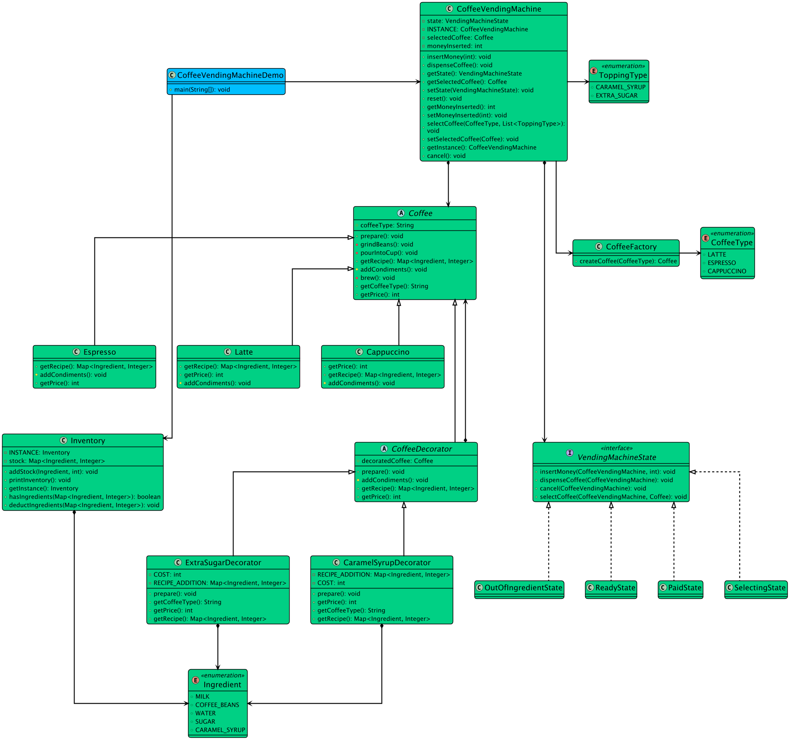
Key Classes & Architectural Rationale
1. The **Coffee** class represents a coffee type with its name, price, and recipe (ingredients and their quantities).
2. The **Ingredient** class represents an ingredient used in making coffee, with its name and quantity. It provides a synchronized method to update the quantity.
3. The **Payment** class represents a payment made by a user, with the amount paid.
4. The **CoffeeMachine** class is the main class that manages the coffee vending machine. It follows the Singleton pattern to ensure a single instance of the machine.
5. The **CoffeeMachine** class initializes the coffee menu and ingredients in its constructor. It provides methods to display the menu, select a coffee, dispense coffee, and update ingredient quantities.
6. The hasEnoughIngredients method checks if there are sufficient ingredients to make a selected coffee, while the updateIngredients method updates the ingredient quantities after dispensing a coffee.
7. The **CoffeeVendingMachine** class is the entry point of the application and demonstrates the usage of the coffee vending machine. It creates an instance of the machine, displays the menu, and simulates concurrent user requests using an ExecutorService.
# === [enums.py] ===fromenumimportEnumclassCoffeeType(Enum):ESPRESSO="ESPRESSO"LATTE="LATTE"CAPPUCCINO="CAPPUCCINO"classIngredient(Enum):COFFEE_BEANS="COFFEE_BEANS"MILK="MILK"SUGAR="SUGAR"WATER="WATER"CARAMEL_SYRUP="CARAMEL_SYRUP"classToppingType(Enum):EXTRA_SUGAR="EXTRA_SUGAR"CARAMEL_SYRUP="CARAMEL_SYRUP"# === [states.py] ===fromabcimportABC,abstractmethodfromtypingimportTYPE_CHECKINGifTYPE_CHECKING:classVendingMachineState(ABC):@abstractmethoddefselect_coffee(self,machine:'CoffeeVendingMachine',coffee:'Coffee'):pass@abstractmethoddefinsert_money(self,machine:'CoffeeVendingMachine',amount:int):pass@abstractmethoddefdispense_coffee(self,machine:'CoffeeVendingMachine'):pass@abstractmethoddefcancel(self,machine:'CoffeeVendingMachine'):passclassReadyState(VendingMachineState):defselect_coffee(self,machine:'CoffeeVendingMachine',coffee:'Coffee'):machine.set_selected_coffee(coffee)machine.set_state(SelectingState())print(f"{coffee.get_coffee_type()} selected. Price: {coffee.get_price()}")definsert_money(self,machine:'CoffeeVendingMachine',amount:int):print("Please select a coffee first.")defdispense_coffee(self,machine:'CoffeeVendingMachine'):print("Please select and pay first.")defcancel(self,machine:'CoffeeVendingMachine'):print("Nothing to cancel.")classSelectingState(VendingMachineState):defselect_coffee(self,machine:'CoffeeVendingMachine',coffee:'Coffee'):print("Already selected. Please pay or cancel.")definsert_money(self,machine:'CoffeeVendingMachine',amount:int):machine.set_money_inserted(machine.get_money_inserted()+amount)print(f"Inserted {amount}. Total: {machine.get_money_inserted()}")ifmachine.get_money_inserted()>=machine.get_selected_coffee().get_price():machine.set_state(PaidState())defdispense_coffee(self,machine:'CoffeeVendingMachine'):print("Please insert enough money first.")defcancel(self,machine:'CoffeeVendingMachine'):print(f"Transaction cancelled. Refunding {machine.get_money_inserted()}")machine.reset()machine.set_state(ReadyState())classPaidState(VendingMachineState):defselect_coffee(self,machine:'CoffeeVendingMachine',coffee:'Coffee'):print("Already paid. Please dispense or cancel.")definsert_money(self,machine:'CoffeeVendingMachine',amount:int):machine.set_money_inserted(machine.get_money_inserted()+amount)print(f"Additional {amount} inserted. Total: {machine.get_money_inserted()}")defdispense_coffee(self,machine:'CoffeeVendingMachine'):inventory=Inventory.get_instance()coffee=machine.get_selected_coffee()ifnotinventory.has_ingredients(coffee.get_recipe()):print("Sorry, we are out of ingredients. Refunding your money.")print(f"Refunding {machine.get_money_inserted()}")machine.reset()machine.set_state(OutOfIngredientState())return# Deduct ingredients and prepare coffeeinventory.deduct_ingredients(coffee.get_recipe())coffee.prepare()# Calculate changechange=machine.get_money_inserted()-coffee.get_price()ifchange>0:print(f"Here's your change: {change}")machine.reset()machine.set_state(ReadyState())defcancel(self,machine:'CoffeeVendingMachine'):print(f"Transaction cancelled. Refunding {machine.get_money_inserted()}")machine.reset()machine.set_state(ReadyState())classOutOfIngredientState(VendingMachineState):defselect_coffee(self,machine:'CoffeeVendingMachine',coffee:'Coffee'):print("Sorry, we are sold out.")definsert_money(self,machine:'CoffeeVendingMachine',amount:int):print("Sorry, we are sold out. Money refunded.")defdispense_coffee(self,machine:'CoffeeVendingMachine'):print("Sorry, we are sold out.")defcancel(self,machine:'CoffeeVendingMachine'):print(f"Refunding {machine.get_money_inserted()}")machine.reset()machine.set_state(ReadyState())# === [coffee.py] ===fromtypingimportDictclassCoffee(ABC):def__init__(self):self.coffee_type="Unknown Coffee"defget_coffee_type(self)->str:returnself.coffee_type# The Template Methoddefprepare(self):print(f"\nPreparing your {self.get_coffee_type()}...")self._grind_beans()self._brew()self.add_condiments()# The "hook" for base coffee typesself._pour_into_cup()print(f"{self.get_coffee_type()} is ready!")# Common stepsdef_grind_beans(self):print("- Grinding fresh coffee beans.")def_brew(self):print("- Brewing coffee with hot water.")def_pour_into_cup(self):print("- Pouring into a cup.")# Abstract step to be implemented by subclasses@abstractmethoddefadd_condiments(self):pass@abstractmethoddefget_price(self)->int:pass@abstractmethoddefget_recipe(self)->Dict[Ingredient,int]:passclassEspresso(Coffee):def__init__(self):super().__init__()self.coffee_type="Espresso"defadd_condiments(self):pass# No extra condiments for espressodefget_price(self)->int:return150defget_recipe(self)->Dict[Ingredient,int]:return{Ingredient.COFFEE_BEANS:7,Ingredient.WATER:30}classCappuccino(Coffee):def__init__(self):super().__init__()self.coffee_type="Cappuccino"defadd_condiments(self):print("- Adding steamed milk and foam.")defget_price(self)->int:return250defget_recipe(self)->Dict[Ingredient,int]:return{Ingredient.COFFEE_BEANS:7,Ingredient.WATER:30,Ingredient.MILK:100}classLatte(Coffee):def__init__(self):super().__init__()self.coffee_type="Latte"defadd_condiments(self):print("- Adding steamed milk.")defget_price(self)->int:return220defget_recipe(self)->Dict[Ingredient,int]:return{Ingredient.COFFEE_BEANS:7,Ingredient.WATER:30,Ingredient.MILK:150}# === [coffee_factory.py] ===classCoffeeFactory:@staticmethoddefcreate_coffee(coffee_type:CoffeeType)->Coffee:ifcoffee_type==CoffeeType.ESPRESSO:returnEspresso()elifcoffee_type==CoffeeType.LATTE:returnLatte()elifcoffee_type==CoffeeType.CAPPUCCINO:returnCappuccino()else:raiseValueError(f"Unsupported coffee type: {coffee_type}")# === [coffee_vending_machine.py] ===fromtypingimportListimportthreadingclassCoffeeVendingMachine:_instance=None_lock=threading.Lock()def__new__(cls):ifcls._instanceisNone:withcls._lock:ifcls._instanceisNone:cls._instance=super().__new__(cls)cls._instance._initialized=Falsereturncls._instancedef__init__(self):ifnotself._initialized:self._state=ReadyState()self._selected_coffee:Coffee=Noneself._money_inserted=0self._initialized=True@classmethoddefget_instance(cls):returncls()defselect_coffee(self,coffee_type:CoffeeType,toppings:List[ToppingType]):# 1. Create the base coffee using the factorycoffee=CoffeeFactory.create_coffee(coffee_type)# 2. Wrap it with decoratorsfortoppingintoppings:iftopping==ToppingType.EXTRA_SUGAR:coffee=ExtraSugarDecorator(coffee)eliftopping==ToppingType.CARAMEL_SYRUP:coffee=CaramelSyrupDecorator(coffee)# Let the state handle the restself._state.select_coffee(self,coffee)definsert_money(self,amount:int):self._state.insert_money(self,amount)defdispense_coffee(self):self._state.dispense_coffee(self)defcancel(self):self._state.cancel(self)# Getters and Setters used by State objectsdefset_state(self,state:VendingMachineState):self._state=statedefget_state(self)->VendingMachineState:returnself._statedefset_selected_coffee(self,coffee:Coffee):self._selected_coffee=coffeedefget_selected_coffee(self)->Coffee:returnself._selected_coffeedefset_money_inserted(self,amount:int):self._money_inserted=amountdefget_money_inserted(self)->int:returnself._money_inserteddefreset(self):self._selected_coffee=Noneself._money_inserted=0# === [decorators.py] ===classCoffeeDecorator(Coffee):def__init__(self,coffee:Coffee):super().__init__()self.decorated_coffee=coffeedefget_price(self)->int:returnself.decorated_coffee.get_price()defget_recipe(self)->Dict[Ingredient,int]:returnself.decorated_coffee.get_recipe()defadd_condiments(self):self.decorated_coffee.add_condiments()defprepare(self):self.decorated_coffee.prepare()classCaramelSyrupDecorator(CoffeeDecorator):COST=30RECIPE_ADDITION={Ingredient.CARAMEL_SYRUP:10}def__init__(self,coffee:Coffee):super().__init__(coffee)defget_coffee_type(self)->str:returnself.decorated_coffee.get_coffee_type()+", Caramel Syrup"defget_price(self)->int:returnself.decorated_coffee.get_price()+self.COSTdefget_recipe(self)->Dict[Ingredient,int]:new_recipe=self.decorated_coffee.get_recipe().copy()foringredient,qtyinself.RECIPE_ADDITION.items():new_recipe[ingredient]=new_recipe.get(ingredient,0)+qtyreturnnew_recipedefprepare(self):# First, prepare the underlying coffeesuper().prepare()# Then, add the specific step for this decoratorprint("- Drizzling Caramel Syrup on top.")classExtraSugarDecorator(CoffeeDecorator):COST=10RECIPE_ADDITION={Ingredient.SUGAR:1}def__init__(self,coffee:Coffee):super().__init__(coffee)defget_coffee_type(self)->str:returnself.decorated_coffee.get_coffee_type()+", Extra Sugar"defget_price(self)->int:returnself.decorated_coffee.get_price()+self.COSTdefget_recipe(self)->Dict[Ingredient,int]:new_recipe=self.decorated_coffee.get_recipe().copy()foringredient,qtyinself.RECIPE_ADDITION.items():new_recipe[ingredient]=new_recipe.get(ingredient,0)+qtyreturnnew_recipedefprepare(self):super().prepare()print("- Stirring in Extra Sugar.")# === [inventory.py] ===classInventory:_instance=None_lock=threading.Lock()def__new__(cls):ifcls._instanceisNone:withcls._lock:ifcls._instanceisNone:cls._instance=super().__new__(cls)cls._instance._initialized=Falsereturncls._instancedef__init__(self):ifnotself._initialized:self._stock:Dict[Ingredient,int]={}self._lock=threading.Lock()self._initialized=True@classmethoddefget_instance(cls):returncls()defadd_stock(self,ingredient:Ingredient,quantity:int):self._stock[ingredient]=self._stock.get(ingredient,0)+quantitydefhas_ingredients(self,recipe:Dict[Ingredient,int])->bool:returnall(self._stock.get(ingredient,0)>=quantityforingredient,quantityinrecipe.items())defdeduct_ingredients(self,recipe:Dict[Ingredient,int]):withself._lock:ifnotself.has_ingredients(recipe):print("Not enough ingredients to make coffee.")returnforingredient,quantityinrecipe.items():self._stock[ingredient]-=quantitydefprint_inventory(self):print("--- Current Inventory ---")foringredient,quantityinself._stock.items():print(f"{ingredient.value}: {quantity}")print("-------------------------")# === [coffee_vending_machine_demo.py] ===classCoffeeVendingMachineDemo:@staticmethoddefmain():machine=CoffeeVendingMachine.get_instance()inventory=Inventory.get_instance()# Initial setup: Refill inventoryprint("=== Initializing Vending Machine ===")inventory.add_stock(Ingredient.COFFEE_BEANS,50)inventory.add_stock(Ingredient.WATER,500)inventory.add_stock(Ingredient.MILK,200)inventory.add_stock(Ingredient.SUGAR,100)inventory.add_stock(Ingredient.CARAMEL_SYRUP,50)inventory.print_inventory()# Scenario 1: Successful Purchase of a Latteprint("\n--- SCENARIO 1: Buy a Latte (Success) ---")machine.select_coffee(CoffeeType.LATTE,[])machine.insert_money(200)machine.insert_money(50)# Total 250, price is 220machine.dispense_coffee()inventory.print_inventory()# Scenario 2: Purchase with Insufficient Funds & Cancellationprint("\n--- SCENARIO 2: Buy Espresso (Insufficient Funds & Cancel) ---")machine.select_coffee(CoffeeType.ESPRESSO,[])machine.insert_money(100)# Price is 150machine.dispense_coffee()# Should failmachine.cancel()# Should refund 100inventory.print_inventory()# Should be unchanged# Scenario 3: Attempt to Buy with Insufficient Ingredientsprint("\n--- SCENARIO 3: Buy Cappuccino (Out of Milk) ---")inventory.print_inventory()machine.select_coffee(CoffeeType.CAPPUCCINO,[ToppingType.CARAMEL_SYRUP,ToppingType.EXTRA_SUGAR])machine.insert_money(300)machine.dispense_coffee()# Should fail and refundinventory.print_inventory()# Refill and final testprint("\n--- REFILLING AND FINAL TEST ---")inventory.add_stock(Ingredient.MILK,200)inventory.print_inventory()machine.select_coffee(CoffeeType.LATTE,[ToppingType.CARAMEL_SYRUP])machine.insert_money(250)machine.dispense_coffee()inventory.print_inventory()if__name__=="__main__":CoffeeVendingMachineDemo.main()
The Pub-Sub system should allow publishers to publish messages to specific topics.
Subscribers should be able to subscribe to topics of interest and receive messages published to those topics.
The system should support multiple publishers and subscribers.
Messages should be delivered to all subscribers of a topic in real-time.
The system should handle concurrent access and ensure thread safety.
The Pub-Sub system should be scalable and efficient in terms of message delivery.
📐 UML Class DiagramSystem Architecture
Key Classes & Architectural Rationale
1. The **Message** class represents a message that can be published and received by subscribers. It contains the message content.
2. The **Topic** class represents a topic to which messages can be published. It maintains a set of subscribers and provides methods to add and remove subscribers, as well as publish messages to all subscribers.
3. The **Subscriber** interface defines the contract for subscribers. It declares the onMessage method that is invoked when a subscriber receives a message.
4. The **PrintSubscriber** class is a concrete implementation of the Subscriber interface. It receives messages and prints them to the console.
5. The **Publisher** class represents a publisher that publishes messages to a specific topic.
6. The **PubSubSystem** class is the main class that manages topics, subscribers, and message publishing. It uses a ConcurrentHashMap to store topics and an ExecutorService to handle concurrent message publishing.
7. The **PubSubDemo** class demonstrates the usage of the Pub-Sub system by creating topics, subscribers, and publishers, and publishing messages.
# === [message.py] ===fromdatetimeimportdatetimeclassMessage:def__init__(self,payload:str):self.payload=payloadself.timestamp=datetime.now()defget_payload(self)->str:returnself.payloaddef__str__(self)->str:returnf"Message{{payload='{self.payload}'}}"# === [subscriber.py] ===fromabcimportABC,abstractmethodclassSubscriber(ABC):@abstractmethoddefget_id(self)->str:pass@abstractmethoddefon_message(self,message:Message):passclassAlertSubscriber(Subscriber):def__init__(self,subscriber_id:str):self.id=subscriber_iddefget_id(self)->str:returnself.iddefon_message(self,message:Message):print(f"!!! [ALERT - {self.id}] : '{message.get_payload()}' !!!")classNewsSubscriber(Subscriber):def__init__(self,subscriber_id:str):self.id=subscriber_iddefget_id(self)->str:returnself.iddefon_message(self,message:Message):print(f"[Subscriber {self.id}] received message '{message.get_payload()}'")# === [topic.py] ===fromtypingimportSetfromconcurrent.futuresimportThreadPoolExecutorclassTopic:def__init__(self,name:str,delivery_executor:ThreadPoolExecutor):self.name=nameself.delivery_executor=delivery_executorself.subscribers:Set[Subscriber]=set()defget_name(self)->str:returnself.namedefadd_subscriber(self,subscriber:Subscriber):self.subscribers.add(subscriber)defremove_subscriber(self,subscriber:Subscriber):self.subscribers.discard(subscriber)defbroadcast(self,message:Message):forsubscriberinself.subscribers:self.delivery_executor.submit(self._deliver_message,subscriber,message)def_deliver_message(self,subscriber:Subscriber,message:Message):try:subscriber.on_message(message)exceptExceptionase:print(f"Error delivering message to subscriber {subscriber.get_id()}: {str(e)}")# === [pub_sub_service.py] ===importthreadingfromtypingimportDictclassPubSubService:_instance=None_lock=threading.Lock()def__new__(cls):ifcls._instanceisNone:withcls._lock:ifcls._instanceisNone:cls._instance=super().__new__(cls)cls._instance._initialized=Falsereturncls._instancedef__init__(self):ifself._initialized:returnself.topic_registry:Dict[str,Topic]={}# A cached thread pool is suitable for handling many short-lived, bursty tasks (message deliveries).self.delivery_executor=ThreadPoolExecutor()self._initialized=True@classmethoddefget_instance(cls):returncls()defcreate_topic(self,topic_name:str):iftopic_namenotinself.topic_registry:self.topic_registry[topic_name]=Topic(topic_name,self.delivery_executor)print(f"Topic {topic_name} created")defsubscribe(self,topic_name:str,subscriber:Subscriber):topic=self.topic_registry.get(topic_name)iftopicisNone:raiseValueError(f"Topic not found: {topic_name}")topic.add_subscriber(subscriber)print(f"Subscriber '{subscriber.get_id()}' subscribed to topic: {topic_name}")defunsubscribe(self,topic_name:str,subscriber:Subscriber):topic=self.topic_registry.get(topic_name)iftopicisnotNone:topic.remove_subscriber(subscriber)print(f"Subscriber '{subscriber.get_id()}' unsubscribed from topic: {topic_name}")defpublish(self,topic_name:str,message:Message):print(f"Publishing message to topic: {topic_name}")topic=self.topic_registry.get(topic_name)iftopicisNone:raiseValueError(f"Topic not found: {topic_name}")topic.broadcast(message)defshutdown(self):print("PubSubService shutting down...")self.delivery_executor.shutdown(wait=True)print("PubSubService shutdown complete.")# === [pub_sub_demo.py] ===importtimeclassPubSubDemo:@staticmethoddefmain():pub_sub_service=PubSubService.get_instance()# --- Create Subscribers ---sports_fan1=NewsSubscriber("SportsFan1")sports_fan2=NewsSubscriber("SportsFan2")techie1=NewsSubscriber("Techie1")all_news_reader=NewsSubscriber("AllNewsReader")system_admin=AlertSubscriber("SystemAdmin")# --- Create Topics and Subscriptions ---SPORTS_TOPIC="SPORTS"TECH_TOPIC="TECH"WEATHER_TOPIC="WEATHER"pub_sub_service.create_topic(SPORTS_TOPIC)pub_sub_service.create_topic(TECH_TOPIC)pub_sub_service.create_topic(WEATHER_TOPIC)pub_sub_service.subscribe(SPORTS_TOPIC,sports_fan1)pub_sub_service.subscribe(SPORTS_TOPIC,sports_fan2)pub_sub_service.subscribe(SPORTS_TOPIC,all_news_reader)pub_sub_service.subscribe(SPORTS_TOPIC,system_admin)pub_sub_service.subscribe(TECH_TOPIC,techie1)pub_sub_service.subscribe(TECH_TOPIC,all_news_reader)print("\n--- Publishing Messages ---")# --- Publish to SPORTS topic ---pub_sub_service.publish(SPORTS_TOPIC,Message("Team A wins the championship!"))# Expected: SportsFan1, SportsFan2, AllNewsReader, SystemAdmin receive this.# --- Publish to TECH topic ---pub_sub_service.publish(TECH_TOPIC,Message("New AI model released."))# Expected: Techie1, AllNewsReader receive this.# --- Publish to WEATHER topic (no subscribers) ---pub_sub_service.publish(WEATHER_TOPIC,Message("Sunny with a high of 75°F."))# Expected: Message is dropped.# Allow some time for async messages to be processedtime.sleep(0.5)print("\n--- Unsubscribing a user and re-publishing ---")# SportsFan2 gets tired of sports newspub_sub_service.unsubscribe(SPORTS_TOPIC,sports_fan2)# Publish another message to SPORTSpub_sub_service.publish(SPORTS_TOPIC,Message("Major player traded to Team B."))# Expected: SportsFan1, AllNewsReader, SystemAdmin receive this. SportsFan2 does NOT.# Give messages time to be deliveredtime.sleep(0.5)# --- Shutdown the service ---pub_sub_service.shutdown()if__name__=="__main__":PubSubDemo.main()
Logging Framework
Chain of ResponsibilityObserver Pattern (Appenders)Singleton PatternAsynchronous Buffer
System Requirements
The logging framework should support different log levels, such as DEBUG, INFO, WARNING, ERROR, and FATAL.
It should allow logging messages with a timestamp, log level, and message content.
The framework should support multiple output destinations, such as console, file, and database.
It should provide a configuration mechanism to set the log level and output destination.
The logging framework should be thread-safe to handle concurrent logging from multiple threads.
It should be extensible to accommodate new log levels and output destinations in the future.
📐 UML Class DiagramSystem Architecture
Key Classes & Architectural Rationale
1. The **LogLevel** enum defines the different log levels supported by the logging framework.
2. The **LogMessage** class represents a log message with a timestamp, log level, and message content.
3. The **LogAppender** interface defines the contract for appending log messages to different output destinations.
4. The **ConsoleAppender**, **FileAppender**, and **DatabaseAppender** classes are concrete implementations of the LogAppender interface, supporting logging to the console, file, and database, respectively.
5. The **LoggerConfig** class holds the configuration settings for the logger, including the log level and the selected log appender.
6. The **Logger** class is a singleton that provides the main logging functionality. It allows setting the configuration, logging messages at different levels, and provides convenience methods for each log level.
7. The **LoggingExample** class demonstrates the usage of the logging framework, showcasing different log levels, changing the configuration, and logging from multiple threads.
# === [async_log_processor.py] ===fromtypingimportListfromconcurrent.futuresimportThreadPoolExecutorimportsysclassAsyncLogProcessor:def__init__(self):self.executor=ThreadPoolExecutor(max_workers=1,thread_name_prefix="AsyncLogProcessor")self.shutdown_flag=Falsedefprocess(self,log_message:LogMessage,appenders:List[LogAppender]):ifself.shutdown_flag:print("Logger is shut down. Cannot process log message.",file=sys.stderr)returndefprocess_task():forappenderinappenders:appender.append(log_message)self.executor.submit(process_task)defstop(self):self.shutdown_flag=Trueself.executor.shutdown(wait=True,timeout=2)ifnotself.executor._shutdown:print("Logger executor did not terminate in the specified time.",file=sys.stderr)# === [log_appender.py] ===importthreadingfromabcimportABC,abstractmethodclassLogAppender(ABC):@abstractmethoddefappend(self,log_message:LogMessage):pass@abstractmethoddefclose(self):pass@abstractmethoddefget_formatter(self)->LogFormatter:pass@abstractmethoddefset_formatter(self,formatter:LogFormatter):passclassConsoleAppender(LogAppender):def__init__(self):self.formatter=SimpleTextFormatter()defappend(self,log_message:LogMessage):print(self.formatter.format(log_message),end='')defclose(self):passdefset_formatter(self,formatter:LogFormatter):self.formatter=formatterdefget_formatter(self)->LogFormatter:returnself.formatterclassFileAppender(LogAppender):def__init__(self,file_path:str):self.formatter=SimpleTextFormatter()self._lock=threading.Lock()try:self.writer=open(file_path,'a')exceptExceptionase:print(f"Failed to create writer for file logs, exception: {e}")self.writer=Nonedefappend(self,log_message:LogMessage):withself._lock:ifself.writer:try:self.writer.write(self.formatter.format(log_message)+"\n")self.writer.flush()exceptExceptionase:print(f"Failed to write logs to file, exception: {e}")defclose(self):ifself.writer:try:self.writer.close()exceptExceptionase:print(f"Failed to close logs file, exception: {e}")defset_formatter(self,formatter:LogFormatter):self.formatter=formatterdefget_formatter(self)->LogFormatter:returnself.formatter# === [log_formatter.py] ===classLogFormatter(ABC):@abstractmethoddefformat(self,log_message:LogMessage)->str:passclassSimpleTextFormatter(LogFormatter):defformat(self,log_message:LogMessage)->str:timestamp_str=log_message.get_timestamp().strftime("%Y-%m-%d %H:%M:%S.%f")[:-3]returnf"{timestamp_str} [{log_message.get_thread_name()}] {log_message.get_level().name} - {log_message.get_logger_name()}: {log_message.get_message()}\n"# === [log_level.py] ===fromenumimportEnumclassLogLevel(Enum):DEBUG=1INFO=2WARN=3ERROR=4FATAL=5defis_greater_or_equal(self,other:'LogLevel')->bool:returnself.value>=other.value# === [log_message.py] ===fromdatetimeimportdatetimeclassLogMessage:def__init__(self,level:LogLevel,logger_name:str,message:str):self.timestamp=datetime.now()self.level=levelself.logger_name=logger_nameself.message=messageself.thread_name=threading.current_thread().namedefget_timestamp(self)->datetime:returnself.timestampdefget_level(self)->LogLevel:returnself.leveldefget_logger_name(self)->str:returnself.logger_namedefget_thread_name(self)->str:returnself.thread_namedefget_message(self)->str:returnself.message# === [logger.py] ===fromtypingimportList,OptionalfromtypingimportTYPE_CHECKINGifTYPE_CHECKING:classLogger:def__init__(self,name:str,parent:Optional['Logger']):self.name=nameself.level:Optional[LogLevel]=Noneself.parent=parentself.appenders:List[LogAppender]=[]self.additivity=Truedefadd_appender(self,appender:LogAppender):self.appenders.append(appender)defget_appenders(self)->List[LogAppender]:returnself.appendersdefset_level(self,min_level:LogLevel):self.level=min_leveldefset_additivity(self,additivity:bool):self.additivity=additivitydefget_effective_level(self)->LogLevel:logger=selfwhileloggerisnotNone:current_level=logger.levelifcurrent_levelisnotNone:returncurrent_levellogger=logger.parentreturnLogLevel.DEBUG# Default root leveldeflog(self,message_level:LogLevel,message:str):ifmessage_level.is_greater_or_equal(self.get_effective_level()):log_message=LogMessage(message_level,self.name,message)self._call_appenders(log_message)def_call_appenders(self,log_message:LogMessage):ifself.appenders:LogManager.get_instance().get_processor().process(log_message,self.appenders)ifself.additivityandself.parentisnotNone:self.parent._call_appenders(log_message)defdebug(self,message:str):self.log(LogLevel.DEBUG,message)definfo(self,message:str):self.log(LogLevel.INFO,message)defwarn(self,message:str):self.log(LogLevel.WARN,message)deferror(self,message:str):self.log(LogLevel.ERROR,message)deffatal(self,message:str):self.log(LogLevel.FATAL,message)# === [log_manager.py] ===fromtypingimportDictclassLogManager:_instance=None_lock=threading.Lock()def__init__(self):ifLogManager._instanceisnotNone:raiseException("This class is a singleton!")self.loggers:Dict[str,'Logger']={}self.root_logger=Logger("root",None)self.loggers["root"]=self.root_loggerself.processor=AsyncLogProcessor()@staticmethoddefget_instance():ifLogManager._instanceisNone:withLogManager._lock:ifLogManager._instanceisNone:LogManager._instance=LogManager()returnLogManager._instancedefget_logger(self,name:str)->'Logger':ifnamenotinself.loggers:self.loggers[name]=self._create_logger(name)returnself.loggers[name]def_create_logger(self,name:str)->'Logger':ifname=="root":returnself.root_loggerlast_dot=name.rfind('.')parent_name="root"iflast_dot==-1elsename[:last_dot]parent=self.get_logger(parent_name)returnLogger(name,parent)defget_root_logger(self)->'Logger':returnself.root_loggerdefget_processor(self)->AsyncLogProcessor:returnself.processordefshutdown(self):# Stop the processor first to ensure all logs are writtenself.processor.stop()# Then, close all appendersall_appenders=set()forloggerinself.loggers.values():forappenderinlogger.get_appenders():all_appenders.add(appender)forappenderinall_appenders:appender.close()print("Logging framework shut down gracefully.")# === [logging_framework_demo.py] ===importtimeclassLoggingFrameworkDemo:@staticmethoddefmain():# --- 1. Initial Configuration ---log_manager=LogManager.get_instance()root_logger=log_manager.get_root_logger()root_logger.set_level(LogLevel.INFO)# Set global minimum level to INFO# Add a console appender to the root loggerroot_logger.add_appender(ConsoleAppender())print("--- Initial Logging Demo ---")main_logger=log_manager.get_logger("com.example.Main")main_logger.info("Application starting up.")main_logger.debug("This is a debug message, it should NOT appear.")# Below root levelmain_logger.warn("This is a warning message.")# --- 2. Hierarchy and Additivity Demo ---print("\n--- Logger Hierarchy Demo ---")db_logger=log_manager.get_logger("com.example.db")# db_logger inherits level and appenders from rootdb_logger.info("Database connection pool initializing.")# Let's create a more specific logger and override its levelservice_logger=log_manager.get_logger("com.example.service.UserService")service_logger.set_level(LogLevel.DEBUG)# More verbose logging for this specific serviceservice_logger.info("User service starting.")service_logger.debug("This debug message SHOULD now appear for the service logger.")# --- 3. Dynamic Configuration Change ---print("\n--- Dynamic Configuration Demo ---")print("Changing root log level to DEBUG...")root_logger.set_level(LogLevel.DEBUG)main_logger.debug("This debug message should now be visible.")try:time.sleep(0.5)log_manager.shutdown()exceptExceptionase:print("Caught exception")if__name__=="__main__":LoggingFrameworkDemo.main()
Category 7 • Mobility & Booking
Mobility, Booking & Logistics Systems
Battle-tested architectures for Ride-Sharing, Movie Booking, Concert Booking, Hotel Management, Car Rental, Airline Management, Food Delivery, and Restaurant Management.
High-frequency logistics, booking, and mobility systems emphasizing concurrent resource reservation, geospatial driver assignment, and multi-actor state transitions.
The ride sharing service should allow passengers to request rides and drivers to accept and fulfill those ride requests.
Passengers should be able to specify their pickup location, destination, and desired ride type (e.g., regular, premium).
Drivers should be able to see available ride requests and choose to accept or decline them.
The system should match ride requests with available drivers based on proximity and other factors.
The system should calculate the fare for each ride based on distance, time, and ride type.
The system should handle payments and process transactions between passengers and drivers.
The system should provide real-time tracking of ongoing rides and notify passengers and drivers about ride status updates.
The system should handle concurrent requests and ensure data consistency.
📐 UML Class DiagramSystem Architecture
Key Classes & Architectural Rationale
1. The **Passenger** class represents a passenger in the ride sharing service, with properties such as ID, name, contact information, and location.
2. The **Driver** class represents a driver in the ride sharing service, with properties such as ID, name, contact information, license plate, location, and status (available or busy).
3. The **Ride** class represents a ride requested by a passenger and accepted by a driver, with properties such as ID, passenger, driver, source location, destination location, status, and fare.
4. The **Location** class represents a geographical location with latitude and longitude coordinates.
5. The **Payment** class represents a payment made for a ride, with properties such as ID, ride, amount, and payment status.
6. The **RideService** class is the main class that manages the ride sharing service. It follows the Singleton pattern to ensure only one instance of the service exists.
7. The RideService class provides methods for adding passengers and drivers, requesting rides, accepting rides, starting rides, completing rides, and canceling rides.
8. Multi-threading is implemented using concurrent data structures (ConcurrentHashMap and ConcurrentLinkedQueue) to handle concurrent access to shared data, such as ride requests and driver availability.
9. The notifyDrivers, notifyPassenger, and notifyDriver methods are placeholders for notifying relevant parties about ride status updates.
10. The calculateFare and processPayment methods are placeholders for calculating ride fares and processing payments, respectively.
11. The **RideSharingDemo** class demonstrates the usage of the ride sharing service by creating passengers and drivers, requesting rides, accepting rides, starting rides, completing rides, and canceling rides.
# === [enums.py] ===fromenumimportEnumclassRideType(Enum):SEDAN="SEDAN"SUV="SUV"AUTO="AUTO"classTripStatus(Enum):REQUESTED="REQUESTED"ASSIGNED="ASSIGNED"IN_PROGRESS="IN_PROGRESS"COMPLETED="COMPLETED"CANCELLED="CANCELLED"classDriverStatus(Enum):OFFLINE="OFFLINE"ONLINE="ONLINE"IN_TRIP="IN_TRIP"# === [user.py] ===fromtypingimportListimportuuidfromtypingimportTYPE_CHECKINGifTYPE_CHECKING:classUser(TripObserver):def__init__(self,name:str,contact:str):self._id=str(uuid.uuid4())self._name=nameself._contact=contactself._trip_history:List['Trip']=[]defadd_trip_to_history(self,trip:'Trip'):self._trip_history.append(trip)defget_trip_history(self)->List['Trip']:returnself._trip_historydefget_id(self)->str:returnself._iddefget_name(self)->str:returnself._namedefget_contact(self)->str:returnself._contact# === [vehicle.py] ===classVehicle:def__init__(self,license_number:str,model:str,vehicle_type:RideType):self._license_number=license_numberself._model=modelself._type=vehicle_typedefget_license_number(self)->str:returnself._license_numberdefget_model(self)->str:returnself._modeldefget_type(self)->RideType:returnself._type# === [driver_matching_strategy.py] ===fromabcimportABC,abstractmethodclassDriverMatchingStrategy(ABC):@abstractmethoddeffind_drivers(self,all_drivers:List[Driver],pickup_location:Location,ride_type:RideType)->List[Driver]:passclassNearestDriverMatchingStrategy(DriverMatchingStrategy):MAX_DISTANCE_KM=5.0# Max distance to consider a driver "nearby"deffind_drivers(self,all_drivers:List[Driver],pickup_location:Location,ride_type:RideType)->List[Driver]:print(f"Finding nearest drivers for ride type: {ride_type.value}")available_drivers=[driverfordriverinall_driversif(driver.get_status()==DriverStatus.ONLINEanddriver.get_vehicle().get_type()==ride_typeandpickup_location.distance_to(driver.get_current_location())<=self.MAX_DISTANCE_KM)]# Sort by distanceavailable_drivers.sort(key=lambdad:pickup_location.distance_to(d.get_current_location()))returnavailable_drivers# === [pricing_strategy.py] ===classPricingStrategy(ABC):@abstractmethoddefcalculate_fare(self,pickup:Location,dropoff:Location,ride_type:RideType)->float:passclassFlatRatePricingStrategy(PricingStrategy):BASE_FARE=5.0FLAT_RATE=1.5defcalculate_fare(self,pickup:Location,dropoff:Location,ride_type:RideType)->float:distance=pickup.distance_to(dropoff)returnself.BASE_FARE+distance*self.FLAT_RATEclassVehicleBasedPricingStrategy(PricingStrategy):BASE_FARE=2.50RATE_PER_KM={RideType.SEDAN:1.50,RideType.SUV:2.00,RideType.AUTO:1.00}defcalculate_fare(self,pickup:Location,dropoff:Location,ride_type:RideType)->float:returnself.BASE_FARE+self.RATE_PER_KM[ride_type]*pickup.distance_to(dropoff)# === [trip_states.py] ===ifTYPE_CHECKING:classTripState(ABC):@abstractmethoddefrequest(self,trip:'Trip'):pass@abstractmethoddefassign(self,trip:'Trip',driver:'Driver'):pass@abstractmethoddefstart(self,trip:'Trip'):pass@abstractmethoddefend(self,trip:'Trip'):passclassRequestedState(TripState):defrequest(self,trip:'Trip'):print("Trip is already in requested state.")defassign(self,trip:'Trip',driver:'Driver'):trip.set_driver(driver)trip.set_status(TripStatus.ASSIGNED)trip.set_state(AssignedState())defstart(self,trip:'Trip'):print("Cannot start a trip that has not been assigned a driver.")defend(self,trip:'Trip'):print("Cannot end a trip that has not been assigned a driver.")classAssignedState(TripState):defrequest(self,trip:'Trip'):print("Trip has already been requested and assigned.")defassign(self,trip:'Trip',driver:'Driver'):print("Trip is already assigned. To re-assign, cancel first.")defstart(self,trip:'Trip'):trip.set_status(TripStatus.IN_PROGRESS)trip.set_state(InProgressState())defend(self,trip:'Trip'):print("Cannot end a trip that has not started.")classInProgressState(TripState):defrequest(self,trip:'Trip'):print("Trip is already in progress.")defassign(self,trip:'Trip',driver:'Driver'):print("Cannot assign a new driver while trip is in progress.")defstart(self,trip:'Trip'):print("Trip is already in progress.")defend(self,trip:'Trip'):trip.set_status(TripStatus.COMPLETED)trip.set_state(CompletedState())classCompletedState(TripState):defrequest(self,trip:'Trip'):print("Cannot request a trip that is already completed.")defassign(self,trip:'Trip',driver:'Driver'):print("Cannot assign a driver to a completed trip.")defstart(self,trip:'Trip'):print("Cannot start a completed trip.")defend(self,trip:'Trip'):print("Trip is already completed.")# === [driver.py] ===ifTYPE_CHECKING:classDriver(User):def__init__(self,name:str,contact:str,vehicle:Vehicle,initial_location:Location):super().__init__(name,contact)self._vehicle=vehicleself._current_location=initial_locationself._status=DriverStatus.OFFLINE# Default statusdefget_vehicle(self)->Vehicle:returnself._vehicledefget_status(self)->DriverStatus:returnself._statusdefset_status(self,status:DriverStatus):self._status=statusprint(f"Driver {self.get_name()} is now {status.value}")defget_current_location(self)->Location:returnself._current_locationdefset_current_location(self,current_location:Location):self._current_location=current_locationdefon_update(self,trip:'Trip'):print(f"--- Notification for Driver {self.get_name()} ---")print(f" Trip {trip.get_id()} status: {trip.get_status().value}.")iftrip.get_status()==TripStatus.REQUESTED:print(" A new ride is available for you to accept.")print("--------------------------------\n")# === [location.py] ===importmathclassLocation:def__init__(self,latitude:float,longitude:float):self._latitude=latitudeself._longitude=longitudedefdistance_to(self,other:'Location')->float:dx=self._latitude-other._latitudedy=self._longitude-other._longitudereturnmath.sqrt(dx*dx+dy*dy)# Euclidean for simplicitydef__str__(self)->str:returnf"Location({self._latitude}, {self._longitude})"# === [rider.py] ===ifTYPE_CHECKING:classRider(User):def__init__(self,name:str,contact:str):super().__init__(name,contact)defon_update(self,trip:'Trip'):print(f"--- Notification for Rider {self.get_name()} ---")print(f" Trip {trip.get_id()} is now {trip.get_status().value}.")iftrip.get_driver()isnotNone:print(f" Driver: {trip.get_driver().get_name()} in a {trip.get_driver().get_vehicle().get_model()} "f"({trip.get_driver().get_vehicle().get_license_number()})")print("--------------------------------\n")# === [trip.py] ===fromtypingimportOptional,ListifTYPE_CHECKING:classTrip:def__init__(self,builder:'TripBuilder'):self._id=builder._idself._rider=builder._riderself._driver:Optional['Driver']=Noneself._pickup_location=builder._pickup_locationself._dropoff_location=builder._dropoff_locationself._fare=builder._fareself._status=TripStatus.REQUESTEDself._current_state=RequestedState()# Initial stateself._observers:List[TripObserver]=[]defadd_observer(self,observer:TripObserver):self._observers.append(observer)def_notify_observers(self):forobserverinself._observers:observer.on_update(self)defassign_driver(self,driver:'Driver'):self._current_state.assign(self,driver)self.add_observer(driver)self._notify_observers()defstart_trip(self):self._current_state.start(self)self._notify_observers()defend_trip(self):self._current_state.end(self)self._notify_observers()# Gettersdefget_id(self)->str:returnself._iddefget_rider(self)->Rider:returnself._riderdefget_driver(self)->Optional['Driver']:returnself._driverdefget_pickup_location(self)->Location:returnself._pickup_locationdefget_dropoff_location(self)->Location:returnself._dropoff_locationdefget_fare(self)->float:returnself._faredefget_status(self)->TripStatus:returnself._status# Setters are protected, only to be called by State objectsdefset_state(self,state:TripState):self._current_state=statedefset_status(self,status:TripStatus):self._status=statusdefset_driver(self,driver:'Driver'):self._driver=driverdef__str__(self)->str:returnf"Trip [id={self._id}, status={self._status.value}, fare=${self._fare:.2f}]"# Builder PatternclassTripBuilder:def__init__(self):self._id=str(uuid.uuid4())self._rider:Optional[Rider]=Noneself._pickup_location:Optional[Location]=Noneself._dropoff_location:Optional[Location]=Noneself._fare=0.0defwith_rider(self,rider:Rider)->'Trip.TripBuilder':self._rider=riderreturnselfdefwith_pickup_location(self,pickup_location:Location)->'Trip.TripBuilder':self._pickup_location=pickup_locationreturnselfdefwith_dropoff_location(self,dropoff_location:Location)->'Trip.TripBuilder':self._dropoff_location=dropoff_locationreturnselfdefwith_fare(self,fare:float)->'Trip.TripBuilder':self._fare=farereturnselfdefbuild(self)->'Trip':# Basic validationifself._riderisNoneorself._pickup_locationisNoneorself._dropoff_locationisNone:raiseValueError("Rider, pickup, and dropoff locations are required to build a trip.")returnTrip(self)# === [trip_observer.py] ===ifTYPE_CHECKING:classTripObserver(ABC):@abstractmethoddefon_update(self,trip:'Trip'):pass# === [ride_sharing_service.py] ===importthreadingfromtypingimportDict,OptionalclassRideSharingService:_instance=None_lock=threading.Lock()def__new__(cls):ifcls._instanceisNone:withcls._lock:ifcls._instanceisNone:cls._instance=super().__new__(cls)cls._instance._initialized=Falsereturncls._instancedef__init__(self):ifnotself._initialized:self._riders:Dict[str,Rider]={}self._drivers:Dict[str,Driver]={}self._trips:Dict[str,Trip]={}self._pricing_strategy:Optional[PricingStrategy]=Noneself._driver_matching_strategy:Optional[DriverMatchingStrategy]=Noneself._initialized=True@classmethoddefget_instance(cls):returncls()# Allow changing strategies at runtime for extensibilitydefset_pricing_strategy(self,pricing_strategy:PricingStrategy):self._pricing_strategy=pricing_strategydefset_driver_matching_strategy(self,driver_matching_strategy:DriverMatchingStrategy):self._driver_matching_strategy=driver_matching_strategydefregister_rider(self,name:str,contact:str)->Rider:rider=Rider(name,contact)self._riders[rider.get_id()]=riderreturnriderdefregister_driver(self,name:str,contact:str,vehicle:Vehicle,initial_location:Location)->Driver:driver=Driver(name,contact,vehicle,initial_location)self._drivers[driver.get_id()]=driverreturndriverdefrequest_ride(self,rider_id:str,pickup:Location,dropoff:Location,ride_type:RideType)->Optional[Trip]:rider=self._riders.get(rider_id)ifriderisNone:raiseKeyError("Rider not found")print(f"\n--- New Ride Request from {rider.get_name()} ---")# 1. Find available driversavailable_drivers=self._driver_matching_strategy.find_drivers(list(self._drivers.values()),pickup,ride_type)ifnotavailable_drivers:print("No drivers available for your request. Please try again later.")returnNoneprint(f"Found {len(available_drivers)} available driver(s).")# 2. Calculate farefare=self._pricing_strategy.calculate_fare(pickup,dropoff,ride_type)print(f"Estimated fare: ${fare:.2f}")# 3. Create a trip using the Buildertrip=Trip.TripBuilder() \.with_rider(rider) \.with_pickup_location(pickup) \.with_dropoff_location(dropoff) \.with_fare(fare) \.build()self._trips[trip.get_id()]=trip# 4. Notify nearby drivers (in a real system, this would be a push notification)print("Notifying nearby drivers of the new ride request...")fordriverinavailable_drivers:print(f" > Notifying {driver.get_name()} at {driver.get_current_location()}")driver.on_update(trip)returntripdefaccept_ride(self,driver_id:str,trip_id:str):driver=self._drivers.get(driver_id)trip=self._trips.get(trip_id)ifdriverisNoneortripisNone:raiseKeyError("Driver or Trip not found")print(f"\n--- Driver {driver.get_name()} accepted the ride ---")driver.set_status(DriverStatus.IN_TRIP)trip.assign_driver(driver)defstart_trip(self,trip_id:str):trip=self._trips.get(trip_id)iftripisNone:raiseKeyError("Trip not found")print(f"\n--- Trip {trip.get_id()} is starting ---")trip.start_trip()defend_trip(self,trip_id:str):trip=self._trips.get(trip_id)iftripisNone:raiseKeyError("Trip not found")print(f"\n--- Trip {trip.get_id()} is ending ---")trip.end_trip()# Update statuses and historydriver=trip.get_driver()driver.set_status(DriverStatus.ONLINE)# Driver is available againdriver.set_current_location(trip.get_dropoff_location())# Update driver locationrider=trip.get_rider()driver.add_trip_to_history(trip)rider.add_trip_to_history(trip)print(f"Driver {driver.get_name()} is now back online at {driver.get_current_location()}")# === [ride_sharing_demo.py] ===classRideSharingServiceDemo:@staticmethoddefmain():# 1. Setup the system using singleton instanceservice=RideSharingService.get_instance()service.set_driver_matching_strategy(NearestDriverMatchingStrategy())service.set_pricing_strategy(VehicleBasedPricingStrategy())# 2. Register riders and driversalice=service.register_rider("Alice","123-456-7890")bob=service.register_driver("Bob","243-987-2860",Vehicle("KA01-1234","Toyota Prius",RideType.SEDAN),Location(1.0,1.0))charlie=service.register_driver("Charlie","313-486-2691",Vehicle("KA02-5678","Honda CRV",RideType.SUV),Location(2.0,2.0))david=service.register_driver("David","613-586-3241",Vehicle("KA03-9012","Honda CRV",RideType.SEDAN),Location(1.2,1.2))# 3. Drivers go onlinebob.set_status(DriverStatus.ONLINE)charlie.set_status(DriverStatus.ONLINE)david.set_status(DriverStatus.ONLINE)# David is online but will be too far for the first requestdavid.set_current_location(Location(10.0,10.0))# 4. Alice requests a ridepickup_location=Location(0.0,0.0)dropoff_location=Location(5.0,5.0)# Rider wants a SEDANtrip1=service.request_ride(alice.get_id(),pickup_location,dropoff_location,RideType.SEDAN)iftrip1isnotNone:# 5. One of the nearby drivers accepts the ride# In this case, Bob (1.0, 1.0) is closer than David (10.0, 10.0 is too far).# Charlie is ignored because he drives an SUV.service.accept_ride(bob.get_id(),trip1.get_id())# 6. The trip progressesservice.start_trip(trip1.get_id())service.end_trip(trip1.get_id())print("\n--- Checking Trip History ---")print(f"Alice's trip history: {alice.get_trip_history()}")print(f"Bob's trip history: {bob.get_trip_history()}")# --- Second ride request ---print("\n=============================================")harry=service.register_rider("Harry","167-342-7834")# Harry requests an SUVtrip2=service.request_ride(harry.get_id(),Location(2.5,2.5),Location(8.0,8.0),RideType.SUV)iftrip2isnotNone:# Only Charlie is available for an SUV rideservice.accept_ride(charlie.get_id(),trip2.get_id())service.start_trip(trip2.get_id())service.end_trip(trip2.get_id())if__name__=="__main__":RideSharingServiceDemo.main()
The system should allow users to view the list of movies playing in different theaters.
Users should be able to select a movie, theater, and show timing to book tickets.
The system should display the seating arrangement of the selected show and allow users to choose seats.
Users should be able to make payments and confirm their booking.
The system should handle concurrent bookings and ensure seat availability is updated in real-time.
The system should support different types of seats (e.g., normal, premium) and pricing.
The system should allow theater administrators to add, update, and remove movies, shows, and seating arrangements.
The system should be scalable to handle a large number of concurrent users and bookings.
📐 UML Class DiagramSystem Architecture
Key Classes & Architectural Rationale
1. The **Movie** class represents a movie with properties such as ID, title, description, and duration.
2. The **Theater** class represents a theater with properties such as ID, name, location, and a list of shows.
3. The **Show** class represents a movie show in a theater, with properties such as ID, movie, theater, start time, end time, and a map of seats.
4. The **Seat** class represents a seat in a show, with properties such as ID, row, column, type, price, and status.
5. The **SeatType** enum defines the different types of seats (normal or premium).
6. The **SeatStatus** enum defines the different statuses of a seat (available or booked).
7. The **Booking** class represents a booking made by a user, with properties such as ID, user, show, selected seats, total price, and status.
8. The **BookingStatus** enum defines the different statuses of a booking (pending, confirmed, or cancelled).
9. The **User** class represents a user of the booking system, with properties such as ID, name, and email.
10. The **MovieTicketBookingSystem** class is the main class that manages the movie ticket booking system. It follows the Singleton pattern to ensure only one instance of the system exists.
11. The MovieTicketBookingSystem class provides methods for adding movies, theaters, and shows, as well as booking tickets, confirming bookings, and cancelling bookings.
12. Multi-threading is achieved using concurrent data structures such as ConcurrentHashMap to handle concurrent access to shared resources like shows and bookings.
13. The **MovieTicketBookingDemo** class demonstrates the usage of the movie ticket booking system by adding movies, theaters, shows, booking tickets, and confirming or cancelling bookings.
# === [enums.py] ===fromenumimportEnumclassPaymentStatus(Enum):SUCCESS="SUCCESS"FAILURE="FAILURE"PENDING="PENDING"classSeatStatus(Enum):AVAILABLE="AVAILABLE"LOCKED="LOCKED"# Temporarily held during booking processBOOKED="BOOKED"classSeatType(Enum):REGULAR=50.0PREMIUM=80.0RECLINER=120.0defget_price(self)->float:returnself.value# === [seat.py] ===classSeat:def__init__(self,seat_id:str,row:int,col:int,seat_type:SeatType):self.id=seat_idself.row=rowself.col=colself.type=seat_typeself.status=SeatStatus.AVAILABLEdefget_id(self)->str:returnself.iddefget_row(self)->int:returnself.rowdefget_col(self)->int:returnself.coldefget_type(self)->SeatType:returnself.typedefget_status(self)->SeatStatus:returnself.statusdefset_status(self,status:SeatStatus)->None:self.status=status# === [seat_lock_manager.py] ===fromtypingimportDict,Listimportthreadingfromconcurrent.futuresimportThreadPoolExecutorimporttimeclassSeatLockManager:def__init__(self):self.locked_seats:Dict[Show,Dict[Seat,str]]={}self.executor=ThreadPoolExecutor(max_workers=5)self.LOCK_TIMEOUT_SECONDS=0.5# 0.5 seconds. In real world, timeout would be in minutesdeflock_seats(self,show:Show,seats:List[Seat],user_id:str)->None:# Use a lock per show to ensure atomicity for that specific showshow_lock=getattr(show,'_lock',None)ifshow_lockisNone:show._lock=threading.Lock()show_lock=show._lockwithshow_lock:# Check if any of the requested seats are already locked or bookedforseatinseats:ifseat.get_status()!=SeatStatus.AVAILABLE:print(f"Seat {seat.get_id()} is not available.")return# Lock the seatsforseatinseats:seat.set_status(SeatStatus.LOCKED)ifshownotinself.locked_seats:self.locked_seats[show]={}forseatinseats:self.locked_seats[show][seat]=user_id# Schedule a task to unlock the seats after a timeoutself.executor.submit(self._unlock_after_timeout,show,seats,user_id)print(f"Locked seats: {[seat.get_id() for seat in seats]} for user {user_id}")def_unlock_after_timeout(self,show:Show,seats:List[Seat],user_id:str)->None:time.sleep(self.LOCK_TIMEOUT_SECONDS)self.unlock_seats(show,seats,user_id)defunlock_seats(self,show:Show,seats:List[Seat],user_id:str)->None:show_lock=getattr(show,'_lock',None)ifshow_lockisNone:returnwithshow_lock:show_locks=self.locked_seats.get(show)ifshow_locksisnotNone:forseatinseats:# Only unlock if it's still locked by the same user (prevents race conditions)ifseatinshow_locksandshow_locks[seat]==user_id:delshow_locks[seat]ifseat.get_status()==SeatStatus.LOCKED:seat.set_status(SeatStatus.AVAILABLE)print(f"Unlocked seat: {seat.get_id()} due to timeout.")else:print(f"Unlocked seat: {seat.get_id()} due to booking completion.")ifnotshow_locks:delself.locked_seats[show]defshutdown(self)->None:print("Shutting down SeatLockProvider scheduler.")self.executor.shutdown(wait=True)# === [user.py] ===importuuidclassUser:def__init__(self,name:str,email:str):self.id=str(uuid.uuid4())self.name=nameself.email=emaildefget_id(self)->str:returnself.iddefget_name(self)->str:returnself.name# === [payment_strategy.py] ===fromabcimportABC,abstractmethodimportrandomclassPaymentStrategy(ABC):@abstractmethoddefpay(self,amount:float)->Payment:passclassCreditCardPaymentStrategy(PaymentStrategy):def__init__(self,card_number:str,cvv:str):self.card_number=card_numberself.cvv=cvvdefpay(self,amount:float)->Payment:print(f"Processing credit card payment of ${amount:.2f}")# Simulate payment gateway interactionpayment_success=random.random()>0.05# 95% success ratereturnPayment(amount,PaymentStatus.SUCCESSifpayment_successelsePaymentStatus.FAILURE,f"TXN_{uuid.uuid4()}")# === [pricing_strategy.py] ===fromtypingimportListclassPricingStrategy(ABC):@abstractmethoddefcalculate_price(self,seats:List[Seat])->float:passclassWeekdayPricingStrategy(PricingStrategy):defcalculate_price(self,seats:List[Seat])->float:returnsum(seat.get_type().get_price()forseatinseats)classWeekendPricingStrategy(PricingStrategy):WEEKEND_SURCHARGE=1.2# 20% surchargedefcalculate_price(self,seats:List[Seat])->float:base_price=sum(seat.get_type().get_price()forseatinseats)returnbase_price*self.WEEKEND_SURCHARGE# === [booking.py] ===fromtypingimportList,OptionalclassBooking:def__init__(self,booking_id:str,user:User,show:Show,seats:List[Seat],total_amount:float,payment:Payment):self.id=booking_idself.user=userself.show=showself.seats=seatsself.total_amount=total_amountself.payment=paymentdefconfirm_booking(self)->None:"""Marks seats as BOOKED upon successful booking creation"""forseatinself.seats:seat.set_status(SeatStatus.BOOKED)defget_id(self)->str:returnself.iddefget_user(self)->User:returnself.userdefget_show(self)->Show:returnself.showdefget_seats(self)->List[Seat]:returnself.seatsdefget_total_amount(self)->float:returnself.total_amountdefget_payment(self)->Payment:returnself.paymentclassBookingBuilder:def__init__(self):self.id:Optional[str]=Noneself.user:Optional[User]=Noneself.show:Optional[Show]=Noneself.seats:Optional[List[Seat]]=Noneself.total_amount:Optional[float]=Noneself.payment:Optional[Payment]=Nonedefset_id(self,booking_id:str)->'Booking.BookingBuilder':self.id=booking_idreturnselfdefset_user(self,user:User)->'Booking.BookingBuilder':self.user=userreturnselfdefset_show(self,show:Show)->'Booking.BookingBuilder':self.show=showreturnselfdefset_seats(self,seats:List[Seat])->'Booking.BookingBuilder':self.seats=seatsreturnselfdefset_total_amount(self,total_amount:float)->'Booking.BookingBuilder':self.total_amount=total_amountreturnselfdefset_payment(self,payment:Payment)->'Booking.BookingBuilder':self.payment=paymentreturnselfdefbuild(self)->'Booking':# Validations can be added herereturnBooking(self.id,self.user,self.show,self.seats,self.total_amount,self.payment)# === [cinema.py] ===classCinema:def__init__(self,cinema_id:str,name:str,city:City,screens:List[Screen]):self.id=cinema_idself.name=nameself.city=cityself.screens=screensdefget_id(self)->str:returnself.iddefget_name(self)->str:returnself.namedefget_city(self)->City:returnself.citydefget_screens(self)->List[Screen]:returnself.screens# === [city.py] ===classCity:def__init__(self,city_id:str,name:str):self.id=city_idself.name=namedefget_id(self)->str:returnself.iddefget_name(self)->str:returnself.name# === [movie.py] ===classMovie(MovieSubject):def__init__(self,movie_id:str,title:str,duration_in_minutes:int):super().__init__()self.id=movie_idself.title=titleself.duration_in_minutes=duration_in_minutesdefget_id(self)->str:returnself.iddefget_title(self)->str:returnself.title# === [movie_observer.py] ===fromtypingimportTYPE_CHECKINGifTYPE_CHECKING:classMovieObserver(ABC):@abstractmethoddefupdate(self,movie:'Movie')->None:passclassMovieSubject:def__init__(self):self.observers:List[MovieObserver]=[]defadd_observer(self,observer:MovieObserver)->None:self.observers.append(observer)defremove_observer(self,observer:MovieObserver)->None:ifobserverinself.observers:self.observers.remove(observer)defnotify_observers(self)->None:forobserverinself.observers:observer.update(self)classUserObserver(MovieObserver):def__init__(self,user:User):self.user=userdefupdate(self,movie:'Movie')->None:print(f"Notification for {self.user.get_name()} ({self.user.get_id()}): Movie '{movie.get_title()}' is now available for booking!")# === [payment.py] ===classPayment:def__init__(self,amount:float,status:PaymentStatus,transaction_id:str):self.id=str(uuid.uuid4())self.amount=amountself.status=statusself.transaction_id=transaction_iddefget_status(self)->PaymentStatus:returnself.status# === [screen.py] ===classScreen:def__init__(self,screen_id:str):self.id=screen_idself.seats:List[Seat]=[]defadd_seat(self,seat:Seat)->None:self.seats.append(seat)defget_id(self)->str:returnself.iddefget_seats(self)->List[Seat]:returnself.seats# === [show.py] ===fromdatetimeimportdatetimeclassShow:def__init__(self,show_id:str,movie:Movie,screen:Screen,start_time:datetime,pricing_strategy:PricingStrategy):self.id=show_idself.movie=movieself.screen=screenself.start_time=start_timeself.pricing_strategy=pricing_strategydefget_id(self)->str:returnself.iddefget_movie(self)->Movie:returnself.moviedefget_screen(self)->Screen:returnself.screendefget_start_time(self)->datetime:returnself.start_timedefget_pricing_strategy(self)->PricingStrategy:returnself.pricing_strategy# === [booking_manager.py] ===classBookingManager:def__init__(self,seat_lock_manager:SeatLockManager):self.seat_lock_manager=seat_lock_managerdefcreate_booking(self,user:User,show:Show,seats:List[Seat],payment_strategy:PaymentStrategy)->Optional[Booking]:# 1. Lock the seatsself.seat_lock_manager.lock_seats(show,seats,user.get_id())# 2. Calculate the total pricetotal_amount=show.get_pricing_strategy().calculate_price(seats)# 3. Process Paymentpayment=payment_strategy.pay(total_amount)# 4. If payment is successful, create the bookingifpayment.get_status()==PaymentStatus.SUCCESS:booking=Booking.BookingBuilder() \.set_user(user) \.set_show(show) \.set_seats(seats) \.set_total_amount(total_amount) \.set_payment(payment) \.build()# 5. Confirm the booking (mark seats as BOOKED)booking.confirm_booking()# Clean up the lock mapself.seat_lock_manager.unlock_seats(show,seats,user.get_id())returnbookingelse:print("Payment failed. Please try again.")returnNone# === [movie_booking_service.py] ===fromtypingimportDict,List,OptionalclassMovieBookingService:_instance:Optional['MovieBookingService']=None_lock=threading.Lock()def__new__(cls):ifcls._instanceisNone:withcls._lock:ifcls._instanceisNone:cls._instance=super().__new__(cls)returncls._instancedef__init__(self):ifhasattr(self,'initialized'):returnself.cities:Dict[str,City]={}self.cinemas:Dict[str,Cinema]={}self.movies:Dict[str,Movie]={}self.users:Dict[str,User]={}self.shows:Dict[str,Show]={}self.seat_lock_manager=SeatLockManager()self.booking_manager=BookingManager(self.seat_lock_manager)self.initialized=True@classmethoddefget_instance(cls)->'MovieBookingService':returncls()defget_booking_manager(self)->BookingManager:returnself.booking_manager# Data Management Methodsdefadd_city(self,city_id:str,name:str)->City:city=City(city_id,name)self.cities[city.get_id()]=cityreturncitydefadd_cinema(self,cinema_id:str,name:str,city_id:str,screens:List[Screen])->Cinema:city=self.cities[city_id]cinema=Cinema(cinema_id,name,city,screens)self.cinemas[cinema.get_id()]=cinemareturncinemadefadd_movie(self,movie:Movie)->None:self.movies[movie.get_id()]=moviedefadd_show(self,show_id:str,movie:Movie,screen:Screen,start_time:datetime,pricing_strategy:PricingStrategy)->Show:show=Show(show_id,movie,screen,start_time,pricing_strategy)self.shows[show.get_id()]=showreturnshowdefcreate_user(self,name:str,email:str)->User:user=User(name,email)self.users[user.get_id()]=userreturnuserdefbook_tickets(self,user_id:str,show_id:str,desired_seats:List[Seat],payment_strategy:PaymentStrategy)->Optional[Booking]:returnself.booking_manager.create_booking(self.users[user_id],self.shows[show_id],desired_seats,payment_strategy)# Search Functionalitydeffind_shows(self,movie_title:str,city_name:str)->List[Show]:result=[]forshowinself.shows.values():ifshow.get_movie().get_title().lower()==movie_title.lower():cinema=self._find_cinema_for_show(show)ifcinemaandcinema.get_city().get_name().lower()==city_name.lower():result.append(show)returnresultdef_find_cinema_for_show(self,show:Show)->Optional[Cinema]:# This is inefficient. In a real system, shows would have a direct link to the cinema.# For this example, we traverse the cinema list.forcinemainself.cinemas.values():ifshow.get_screen()incinema.get_screens():returncinemareturnNonedefshutdown(self)->None:self.seat_lock_manager.shutdown()print("MovieTicketBookingSystem has been shut down.")# === [movie_booking_demo.py] ===fromdatetimeimportdatetime,timedeltaclassMovieBookingDemo:@staticmethoddefmain():# Setupservice=MovieBookingService.get_instance()nyc=service.add_city("city1","New York")la=service.add_city("city2","Los Angeles")# 2. Add moviesmatrix=Movie("M1","The Matrix",120)avengers=Movie("M2","Avengers: Endgame",170)service.add_movie(matrix)service.add_movie(avengers)# Add Seats for a Screenscreen1=Screen("S1")foriinrange(1,11):seat_type=SeatType.REGULARifi<=5elseSeatType.PREMIUMscreen1.add_seat(Seat(f"A{i}",1,i,seat_type))screen1.add_seat(Seat(f"B{i}",2,i,seat_type))# Add Cinemasamc_nyc=service.add_cinema("cinema1","AMC Times Square",nyc.get_id(),[screen1])# Add Showsmatrix_show=service.add_show("show1",matrix,screen1,datetime.now()+timedelta(hours=2),WeekdayPricingStrategy())avengers_show=service.add_show("show2",avengers,screen1,datetime.now()+timedelta(hours=5),WeekdayPricingStrategy())# User and Observer Setupalice=service.create_user("Alice","alice@example.com")alice_observer=UserObserver(alice)avengers.add_observer(alice_observer)# Simulate movie releaseprint("\n--- Notifying Observers about Movie Release ---")avengers.notify_observers()# User Story: Alice books ticketsprint("\n--- Alice's Booking Flow ---")city_name="New York"movie_title="Avengers: Endgame"# 1. Search for showsavailable_shows=service.find_shows(movie_title,city_name)ifnotavailable_shows:print(f"No shows found for {movie_title} in {city_name}")returnselected_show=available_shows[0]# Alice selects the first show# 2. View available seatsavailable_seats=[seatforseatinselected_show.get_screen().get_seats()ifseat.get_status()==SeatStatus.AVAILABLE]print(f"Available seats for '{selected_show.get_movie().get_title()}' at {selected_show.get_start_time()}: {[seat.get_id() for seat in available_seats]}")# 3. Select seatsdesired_seats=[available_seats[2],available_seats[3]]print(f"Alice selects seats: {[seat.get_id() for seat in desired_seats]}")# 4. Book Ticketsbooking=service.book_tickets(alice.get_id(),selected_show.get_id(),desired_seats,CreditCardPaymentStrategy("1234-5678-9876-5432","123"))ifbooking:print("\n--- Booking Successful! ---")print(f"Booking ID: {booking.get_id()}")print(f"User: {booking.get_user().get_name()}")print(f"Movie: {booking.get_show().get_movie().get_title()}")print(f"Seats: {[seat.get_id() for seat in booking.get_seats()]}")print(f"Total Amount: ${booking.get_total_amount()}")print(f"Payment Status: {booking.get_payment().get_status().value}")else:print("Booking failed.")# 5. Verify seat status after bookingprint("\nSeat status after Alice's booking:")forseatindesired_seats:print(f"Seat {seat.get_id()} status: {seat.get_status().value}")# 6. Shut down the system to release resources like the scheduler.service.shutdown()if__name__=="__main__":MovieBookingDemo.main()
The concert ticket booking system should allow users to view available concerts and their seating arrangements.
Users should be able to search for concerts based on various criteria such as artist, venue, date, and time.
Users should be able to select seats and purchase tickets for a specific concert.
The system should handle concurrent booking requests to avoid double-booking of seats.
The system should ensure fair booking opportunities for all users.
The system should handle payment processing securely.
The system should generate booking confirmations and send them to users via email or SMS.
The system should provide a waiting list functionality for sold-out concerts.
📐 UML Class DiagramSystem Architecture
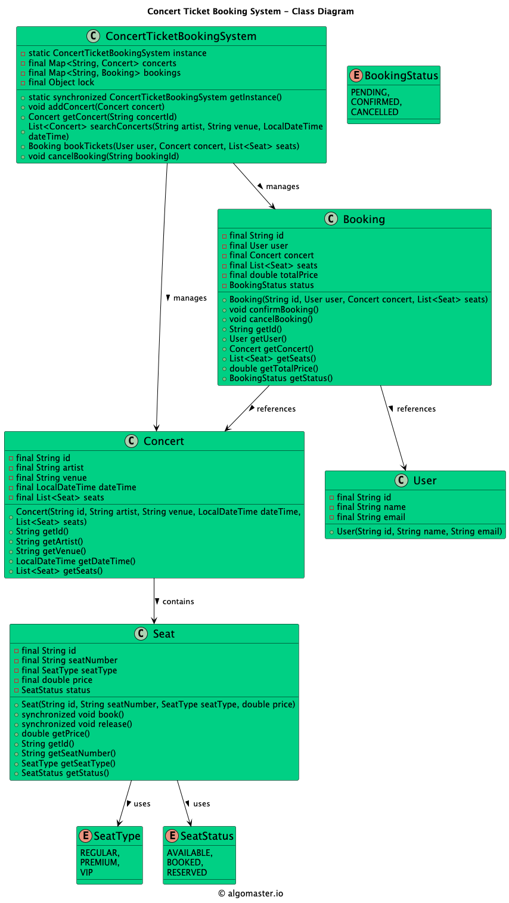
Key Classes & Architectural Rationale
1. The **Concert** class represents a concert event, with properties such as ID, artist, venue, date and time, and a list of seats.
2. The **Seat** class represents a seat in a concert, with properties like ID, seat number, seat type, price, and status. It provides methods to book and release a seat.
3. The **SeatType** enum represents the different types of seats available, such as regular, premium, and VIP.
4. The **SeatStatus** enum represents the status of a seat, which can be available, booked, or reserved.
5. The **Booking** class represents a booking made by a user for a specific concert and seats. It contains properties such as ID, user, concert, seats, total price, and status. It provides methods to confirm and cancel a booking.
6. The **BookingStatus** enum represents the status of a booking, which can be pending, confirmed, or cancelled.
7. The **User** class represents a user of the concert ticket booking system, with properties like ID, name, and email.
8. The **ConcertTicketBookingSystem** class is the central component of the system. It follows the Singleton pattern to ensure a single instance of the system. It manages concerts, bookings, and provides methods to add concerts, search concerts, book tickets, and cancel bookings.
9. The **SeatNotAvailableException** is a custom exception used to handle cases where a seat is not available for booking.
# === [seat.py] ===fromenumimportEnumfromthreadingimportLockclassSeatType(Enum):REGULAR=1PREMIUM=2VIP=3classSeatStatus(Enum):AVAILABLE=1BOOKED=2RESERVED=3classSeatNotAvailableException(Exception):passclassSeat:def__init__(self,id:str,seat_number:str,seat_type:SeatType,price:float):self.id=idself.seat_number=seat_numberself.seat_type=seat_typeself.price=priceself.status=SeatStatus.AVAILABLEself._lock=Lock()defbook(self):withself._lock:ifself.status==SeatStatus.AVAILABLE:self.status=SeatStatus.BOOKEDelse:raiseSeatNotAvailableException("Seat is already booked or reserved.")defrelease(self):withself._lock:ifself.status==SeatStatus.BOOKED:self.status=SeatStatus.AVAILABLE# === [user.py] ===classUser:def__init__(self,user_id:str,name:str,email:str):self.id=user_idself.name=nameself.email=email# === [booking.py] ===fromtypingimportListclassBookingStatus(Enum):PENDING=1CONFIRMED=2CANCELLED=3classBooking:def__init__(self,id:str,user:User,concert:Concert,seats:List[Seat]):self.id=idself.user=userself.concert=concertself.seats=seatsself.total_price=sum(seat.priceforseatinseats)self.status=BookingStatus.PENDINGdefconfirm_booking(self):ifself.status==BookingStatus.PENDING:self.status=BookingStatus.CONFIRMED# Send booking confirmation to the user# ...defcancel_booking(self):ifself.status==BookingStatus.CONFIRMED:self.status=BookingStatus.CANCELLEDforseatinself.seats:seat.release()print(f"Booking {self.id} cancelled")# Send booking cancellation notification to the user# ...# === [concert.py] ===fromdatetimeimportdatetimeclassConcert:def__init__(self,concert_id:str,artist:str,venue:str,date_time:datetime,seats:List['Seat']):self.id=concert_idself.artist=artistself.venue=venueself.date_time=date_timeself.seats=seats# === [concert_ticket_booking_system.py] ===importuuidimportdatetimeclassConcertTicketBookingSystem:_instance=Nonedef__new__(cls):ifcls._instanceisNone:cls._instance=super().__new__(cls)cls._instance.concerts={}cls._instance.bookings={}cls._instance._lock=Lock()returncls._instancedefadd_concert(self,concert:Concert):self.concerts[concert.id]=concertdefget_concert(self,concert_id:str)->Concert:returnself.concerts.get(concert_id)defsearch_concerts(self,artist:str,venue:str,date_time:datetime)->List[Concert]:return[concertforconcertinself.concerts.values()ifconcert.artist.lower()==artist.lower()andconcert.venue.lower()==venue.lower()andconcert.date_time==date_time]defbook_tickets(self,user:User,concert:Concert,seats:List[Seat])->Booking:withself._lock:# Check seat availability and book seatsforseatinseats:ifseat.status!=SeatStatus.AVAILABLE:raiseSeatNotAvailableException(f"Seat {seat.seat_number} is not available.")forseatinseats:seat.book()# Create bookingbooking_id=self._generate_booking_id()booking=Booking(booking_id,user,concert,seats)self.bookings[booking_id]=booking# Process paymentself._process_payment(booking)# Confirm bookingbooking.confirm_booking()print(f"Booking {booking.id} - {len(booking.seats)} seats booked")returnbookingdefcancel_booking(self,booking_id:str):booking=self.bookings.get(booking_id)ifbooking:booking.cancel_booking()delself.bookings[booking_id]def_process_payment(self,booking:Booking):# Process payment for the booking# ...passdef_generate_booking_id(self)->str:returnf"BKG{uuid.uuid4()}"# === [concert_ticket_booking_system_demo.py] ===fromdatetimeimportdatetime,timedeltaclassConcertTicketBookingSystemDemo:@staticmethoddefrun():# Create concert ticket booking system instancebooking_system=ConcertTicketBookingSystem()# Create concertsconcert1_seats=ConcertTicketBookingSystemDemo._generate_seats(100)concert1=Concert("C001","Artist 1","Venue 1",datetime.now().replace(day=10,hour=20,minute=0,second=0,microsecond=0),concert1_seats)booking_system.add_concert(concert1)concert2_seats=ConcertTicketBookingSystemDemo._generate_seats(50)concert2=Concert("C002","Artist 2","Venue 2",datetime.now().replace(day=15,hour=19,minute=30,second=0,microsecond=0),concert2_seats)booking_system.add_concert(concert2)# Create usersuser1=User("U001","John Doe","john@example.com")user2=User("U002","Jane Smith","jane@example.com")# Search concertssearch_results=booking_system.search_concerts("Artist 1","Venue 1",concert1.date_time)print("Search Results:")forconcertinsearch_results:print(f"Concert: {concert.artist} at {concert.venue}")# Book ticketsselected_seats1=ConcertTicketBookingSystemDemo._select_seats(concert1,3)booking1=booking_system.book_tickets(user1,concert1,selected_seats1)selected_seats2=ConcertTicketBookingSystemDemo._select_seats(concert2,2)booking2=booking_system.book_tickets(user2,concert2,selected_seats2)# Cancel bookingbooking_system.cancel_booking(booking1.id)# Book tickets againselected_seats3=ConcertTicketBookingSystemDemo._select_seats(concert1,2)booking3=booking_system.book_tickets(user2,concert1,selected_seats3)@staticmethoddef_generate_seats(number_of_seats:int)->List[Seat]:seats=[]foriinrange(1,number_of_seats+1):seat_number=f"S{i}"seat_type=SeatType.VIPifi<=10elseSeatType.PREMIUMifi<=30elseSeatType.REGULARprice=100.0ifseat_type==SeatType.VIPelse75.0ifseat_type==SeatType.PREMIUMelse50.0seats.append(Seat(seat_number,seat_number,seat_type,price))returnseats@staticmethoddef_select_seats(concert:Concert,number_of_seats:int)->List[Seat]:available_seats=[seatforseatinconcert.seatsifseat.status==SeatStatus.AVAILABLE]returnavailable_seats[:number_of_seats]if__name__=="__main__":ConcertTicketBookingSystemDemo.run()
Hotel Management System
Room Inventory ManagementBooking State MachineHousekeeping Workflow
System Requirements
The hotel management system should allow guests to book rooms, check-in, and check-out.
The system should manage different types of rooms, such as single, double, deluxe, and suite.
The system should handle room availability and reservation status.
The system should allow the hotel staff to manage guest information, room assignments, and billing.
The system should support multiple payment methods, such as cash, credit card, and online payment.
The system should handle concurrent bookings and ensure data consistency.
The system should provide reporting and analytics features for hotel management.
The system should be scalable and handle a large number of rooms and guests.
📐 UML Class DiagramSystem Architecture
Key Classes & Architectural Rationale
1. The **Guest** class represents a guest of the hotel, with properties such as ID, name, email, and phone number.
2. The **Room** class represents a room in the hotel, with properties like ID, room type, price, and status. It provides methods to book, check-in, and check-out a room.
3. The **RoomType** enum represents the different types of rooms available in the hotel.
4. The **RoomStatus** enum represents the status of a room, which can be available, booked, or occupied.
5. The **Reservation** class represents a reservation made by a guest for a specific room and date range. It contains properties such as ID, guest, room, check-in date, check-out date, and status. It provides a method to cancel a reservation.
6. The **ReservationStatus** enum represents the status of a reservation, which can be confirmed or cancelled.
7. The **Payment** interface defines the contract for processing payments. It is implemented by concrete payment classes like CashPayment and CreditCardPayment.
8. The **HotelManagementSystem** class is the central component of the hotel management system. It follows the Singleton pattern to ensure only one instance of the system exists. It provides methods to add guests and rooms, book rooms, cancel reservations, check-in, check-out, and process payments. It also handles concurrent access to shared resources using synchronization.
9. The **HotelManagementSystemDemo** class demonstrates the usage of the hotel management system by creating guests, rooms, booking a room, checking in, checking out, and cancelling a reservation.
# === [reservation_status.py] ===fromenumimportEnumclassReservationStatus(Enum):CONFIRMED="CONFIRMED"CANCELLED="CANCELLED"# === [room_status.py] ===classRoomStatus(Enum):AVAILABLE="AVAILABLE"BOOKED="BOOKED"OCCUPIED="OCCUPIED"# === [room_type.py] ===classRoomType(Enum):SINGLE="SINGLE"DOUBLE="DOUBLE"DELUXE="DELUXE"SUITE="SUITE"# === [credit_card_payment.py] ===classCreditCardPayment(Payment):defprocess_payment(self,amount:float)->bool:# Process credit card paymentreturnTrue# === [cash_payment.py] ===classCashPayment(Payment):defprocess_payment(self,amount:float)->bool:# Process cash paymentreturnTrue# === [guest.py] ===classGuest:def__init__(self,guest_id:str,name:str,email:str,phone_number:str):self._id=guest_idself._name=nameself._email=emailself._phone_number=phone_number@propertydefid(self)->str:returnself._id@propertydefname(self)->str:returnself._name@propertydefemail(self)->str:returnself._email@propertydefphone_number(self)->str:returnself._phone_number# === [payment.py] ===fromabcimportABC,abstractmethodclassPayment(ABC):@abstractmethoddefprocess_payment(self,amount:float)->bool:pass# === [reservation.py] ===fromthreadingimportLockfromdatetimeimportdateclassReservation:def__init__(self,id:str,guest:Guest,room:Room,check_in_date:date,check_out_date:date):self.id=idself.guest=guestself.room=roomself.check_in_date=check_in_dateself.check_out_date=check_out_dateself.status=ReservationStatus.CONFIRMEDself.lock=Lock()defcancel(self):withself.lock:ifself.status==ReservationStatus.CONFIRMED:self.status=ReservationStatus.CANCELLEDself.room.check_out()else:raiseValueError("Reservation is not confirmed.")# === [room.py] ===classRoom:def__init__(self,id:str,type:RoomType,price:float):self.id=idself.type=typeself.price=priceself.status=RoomStatus.AVAILABLEself.lock=Lock()defbook(self):withself.lock:ifself.status==RoomStatus.AVAILABLE:self.status=RoomStatus.BOOKEDelse:raiseValueError("Room is not available for booking.")defcheck_in(self):withself.lock:ifself.status==RoomStatus.BOOKED:self.status=RoomStatus.OCCUPIEDelse:raiseValueError("Room is not booked.")defcheck_out(self):withself.lock:ifself.status==RoomStatus.OCCUPIED:self.status=RoomStatus.AVAILABLEelse:raiseValueError("Room is not occupied.")# === [hotel_management_system.py] ===fromtypingimportDict,OptionalimportuuidclassHotelManagementSystem:_instance=Nonedef__new__(cls):ifcls._instanceisNone:cls._instance=super().__new__(cls)cls._instance.guests:Dict[str,Guest]={}cls._instance.rooms:Dict[str,Room]={}cls._instance.reservations:Dict[str,Reservation]={}cls._instance.lock=Lock()returncls._instancedefadd_guest(self,guest:Guest):self.guests[guest.id]=guestdefget_guest(self,guest_id:str)->Optional[Guest]:returnself.guests.get(guest_id)defadd_room(self,room:Room):self.rooms[room.id]=roomdefget_room(self,room_id:str)->Optional[Room]:returnself.rooms.get(room_id)defbook_room(self,guest:Guest,room:Room,check_in_date:date,check_out_date:date)->Optional[Reservation]:withself.lock:ifroom.status==RoomStatus.AVAILABLE:room.book()reservation_id=self._generate_reservation_id()reservation=Reservation(reservation_id,guest,room,check_in_date,check_out_date)self.reservations[reservation_id]=reservationreturnreservationreturnNonedefcancel_reservation(self,reservation_id:str):withself.lock:reservation=self.reservations.get(reservation_id)ifreservation:reservation.cancel()delself.reservations[reservation_id]defcheck_in(self,reservation_id:str):withself.lock:reservation=self.reservations.get(reservation_id)ifreservationandreservation.status==ReservationStatus.CONFIRMED:reservation.room.check_in()else:raiseValueError("Invalid reservation or reservation not confirmed.")defcheck_out(self,reservation_id:str,payment:Payment):withself.lock:reservation=self.reservations.get(reservation_id)ifreservationandreservation.status==ReservationStatus.CONFIRMED:room=reservation.roomamount=room.price*(reservation.check_out_date-reservation.check_in_date).daysifpayment.process_payment(amount):room.check_out()delself.reservations[reservation_id]else:raiseValueError("Payment failed.")else:raiseValueError("Invalid reservation or reservation not confirmed.")def_generate_reservation_id(self)->str:returnf"RES{uuid.uuid4().hex[:8].upper()}"# === [hotel_management_system_demo.py] ===classHotelManagementSystemDemo:@staticmethoddefrun():hotel_management_system=HotelManagementSystem()# Create guestsguest1=Guest("G001","John Doe","john@example.com","1234567890")guest2=Guest("G002","Jane Smith","jane@example.com","9876543210")hotel_management_system.add_guest(guest1)hotel_management_system.add_guest(guest2)# Create roomsroom1=Room("R001",RoomType.SINGLE,100.0)room2=Room("R002",RoomType.DOUBLE,200.0)hotel_management_system.add_room(room1)hotel_management_system.add_room(room2)# Book a roomcheck_in_date=date.today()check_out_date=check_in_date.replace(day=check_in_date.day+3)reservation1=hotel_management_system.book_room(guest1,room1,check_in_date,check_out_date)ifreservation1:print(f"Reservation created: {reservation1.id}")else:print("Room not available for booking.")# Check-inhotel_management_system.check_in(reservation1.id)print(f"Checked in: {reservation1.id}")# Check-out and process paymentpayment=CreditCardPayment()hotel_management_system.check_out(reservation1.id,payment)print(f"Checked out: {reservation1.id}")# Cancel a reservationhotel_management_system.cancel_reservation(reservation1.id)print(f"Reservation cancelled: {reservation1.id}")if__name__=="__main__":HotelManagementSystemDemo.run()
Car Rental System
Vehicle Fleet TrackingReservation StrategyBilling & Late Return Policy
System Requirements
The car rental system should allow customers to browse and reserve available cars for specific dates.
Each car should have details such as make, model, year, license plate number, and rental price per day.
Customers should be able to search for cars based on various criteria, such as car type, price range, and availability.
The system should handle reservations, including creating, modifying, and canceling reservations.
The system should keep track of the availability of cars and update their status accordingly.
The system should handle customer information, including name, contact details, and driver's license information.
The system should handle payment processing for reservations.
The system should be able to handle concurrent reservations and ensure data consistency.
📐 UML Class DiagramSystem Architecture
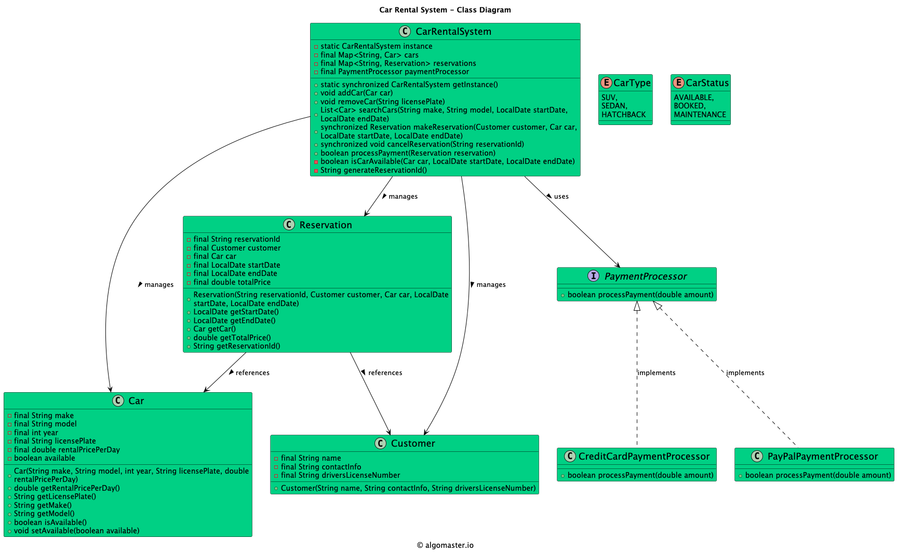
Key Classes & Architectural Rationale
1. The **Car** class represents a car in the rental system, with properties such as make, model, year, license plate number, rental price per day, and availability status.
2. The **Customer** class represents a customer, with properties like name, contact information, and driver's license number.
3. The **Reservation** class represents a reservation made by a customer for a specific car and date range. It includes properties such as reservation ID, customer, car, start date, end date, and total price.
4. The **PaymentProcessor** interface defines the contract for payment processing, and the CreditCardPaymentProcessor and PayPalPaymentProcessor classes are concrete implementations of the payment processor.
5. The **RentalSystem** class is the core of the car rental system and follows the Singleton pattern to ensure a single instance of the rental system.
6. The RentalSystem class uses concurrent data structures (ConcurrentHashMap) to handle concurrent access to cars and reservations.
7. The **RentalSystem** class provides methods for adding and removing cars, searching for available cars based on criteria, making reservations, canceling reservations, and processing payments.
8. The **CarRentalSystem** class serves as the entry point of the application and demonstrates the usage of the car rental system.
# === [car.py] ===classCar:def__init__(self,make,model,year,license_plate,rental_price_per_day):self.make=makeself.model=modelself.year=yearself.license_plate=license_plateself.rental_price_per_day=rental_price_per_dayself.available=Truedefget_rental_price_per_day(self):returnself.rental_price_per_daydefget_license_plate(self):returnself.license_platedefget_make(self):returnself.makedefget_model(self):returnself.modeldefis_available(self):returnself.availabledefset_available(self,available):self.available=available# === [car_rental_system_demo.py] ===fromdatetimeimportdate,timedeltaclassCarRentalSystemDemo:@staticmethoddefrun():rental_system=RentalSystem.get_instance()# Add cars to the rental systemrental_system.add_car(Car("Toyota","Camry",2022,"ABC123",50.0))rental_system.add_car(Car("Honda","Civic",2021,"XYZ789",45.0))rental_system.add_car(Car("Ford","Mustang",2023,"DEF456",80.0))# Create customerscustomer1=Customer("John Doe","john@example.com","DL1234")customer2=Customer("Jane Smith","jane@example.com","DL5678")# Make reservationsstart_date=date.today()end_date=start_date+timedelta(days=3)available_cars=rental_system.search_cars("Toyota","Camry",start_date,end_date)ifavailable_cars:selected_car=available_cars[0]reservation=rental_system.make_reservation(customer1,selected_car,start_date,end_date)ifreservationisnotNone:payment_success=rental_system.process_payment(reservation)ifpayment_success:print(f"Reservation successful. Reservation ID: {reservation.get_reservation_id()}")else:print("Payment failed. Reservation canceled.")rental_system.cancel_reservation(reservation.get_reservation_id())else:print("Selected car is not available for the given dates.")else:print("No available cars found for the given criteria.")if__name__=="__main__":CarRentalSystemDemo.run()# === [credit_card_payment_processor.py] ===classCreditCardPaymentProcessor(PaymentProcessor):defprocess_payment(self,amount):# Process credit card payment# ...returnTrue# === [customer.py] ===classCustomer:def__init__(self,name,contact_info,drivers_license_number):self.name=nameself.contact_info=contact_infoself.drivers_license_number=drivers_license_number# === [payment_processor.py] ===fromabcimportABC,abstractmethodclassPaymentProcessor(ABC):@abstractmethoddefprocess_payment(self,amount):pass# === [paypal_payment_processor.py] ===classPayPalPaymentProcessor(PaymentProcessor):defprocess_payment(self,amount):# Process PayPal payment# ...returnTrue# === [reservation.py] ===classReservation:def__init__(self,reservation_id,customer,car,start_date,end_date):self.reservation_id=reservation_idself.customer=customerself.car=carself.start_date=start_dateself.end_date=end_dateself.total_price=self.calculate_total_price()defcalculate_total_price(self):days_rented=(self.end_date-self.start_date).days+1returnself.car.rental_price_per_day*days_renteddefget_start_date(self):returnself.start_datedefget_end_date(self):returnself.end_datedefget_car(self):returnself.cardefget_total_price(self):returnself.total_pricedefget_reservation_id(self):returnself.reservation_id# === [rental_system.py] ===importuuidclassRentalSystem:_instance=Nonedef__init__(self):ifRentalSystem._instanceisnotNone:raiseException("This class is a singleton!")else:RentalSystem._instance=selfself.cars={}self.reservations={}self.payment_processor=CreditCardPaymentProcessor()@staticmethoddefget_instance():ifRentalSystem._instanceisNone:RentalSystem()returnRentalSystem._instancedefadd_car(self,car):self.cars[car.license_plate]=cardefremove_car(self,license_plate):self.cars.pop(license_plate,None)defsearch_cars(self,make,model,start_date,end_date):available_cars=[]forcarinself.cars.values():ifcar.make.lower()==make.lower()andcar.model.lower()==model.lower()andcar.available:ifself.is_car_available(car,start_date,end_date):available_cars.append(car)returnavailable_carsdefis_car_available(self,car,start_date,end_date):forreservationinself.reservations.values():ifreservation.get_car()==car:ifstart_date<reservation.get_end_date()andend_date>reservation.get_start_date():returnFalsereturnTruedefmake_reservation(self,customer,car,start_date,end_date):ifself.is_car_available(car,start_date,end_date):reservation_id=self.generate_reservation_id()reservation=Reservation(reservation_id,customer,car,start_date,end_date)self.reservations[reservation_id]=reservationcar.set_available(False)returnreservationreturnNonedefcancel_reservation(self,reservation_id):reservation=self.reservations.pop(reservation_id,None)ifreservationisnotNone:reservation.get_car().set_available(True)defprocess_payment(self,reservation):returnself.payment_processor.process_payment(reservation.get_total_price())defgenerate_reservation_id(self):return"RES"+str(uuid.uuid4())[:8].upper()
The airline management system should allow users to search for flights based on source, destination, and date.
Users should be able to book flights, select seats, and make payments.
The system should manage flight schedules, aircraft assignments, and crew assignments.
The system should handle passenger information, including personal details and baggage information.
The system should support different types of users, such as passengers, airline staff, and administrators.
The system should be able to handle cancellations, refunds, and flight changes.
The system should ensure data consistency and handle concurrent access to shared resources.
The system should be scalable and extensible to accommodate future enhancements and new features.
📐 UML Class DiagramSystem Architecture
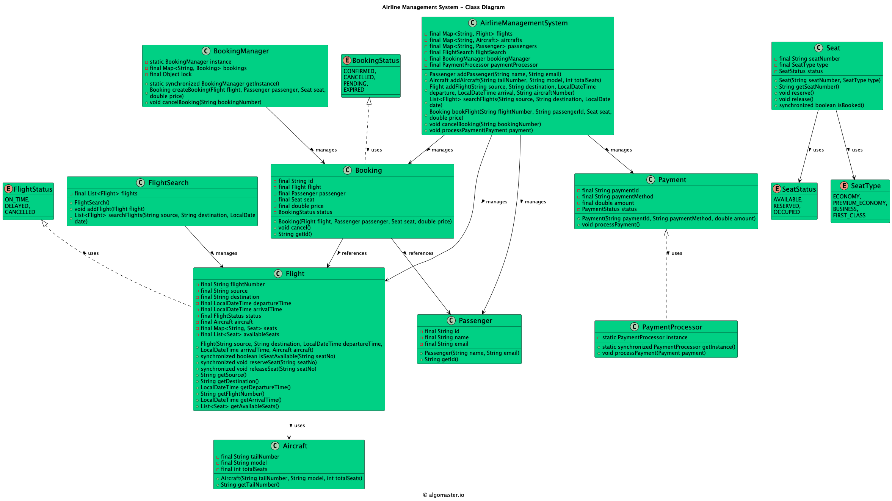
Key Classes & Architectural Rationale
1. The **Flight** class represents a flight in the airline management system, with properties such as flight number, source, destination, departure time, arrival time, and available seats.
2. The **Aircraft** class represents an aircraft, with properties like tail number, model, and total seats.
3. The **Passenger** class represents a passenger, with properties such as ID, name, email, and phone number.
4. The **Booking** class represents a booking made by a passenger for a specific flight and seat, with properties such as booking number, flight, passenger, seat, price, and booking status.
5. The **Seat** class represents a seat on a flight, with properties like seat number, seat type, and seat status.
6. The **Payment** class represents a payment made for a booking, with properties such as payment ID, payment method, amount, and payment status.
7. The **FlightSearch** class provides functionality to search for flights based on source, destination, and date.
8. The **BookingManager** class manages the creation and cancellation of bookings. It follows the Singleton pattern to ensure a single instance of the booking manager.
9. The **PaymentProcessor** class handles the processing of payments. It follows the Singleton pattern to ensure a single instance of the payment processor.
10. The **AirlineManagementSystem** class serves as the main entry point of the system, combining all the components and providing methods for flight management, booking, payment processing, and other operations.
# === [seat.py] ===fromenumimportEnumclassSeatStatus(Enum):AVAILABLE=1RESERVED=2OCCUPIED=3classSeatType(Enum):ECONOMY=1PREMIUM_ECONOMY=2BUSINESS=3FIRST_CLASS=4classSeat:def__init__(self,seat_number,seat_type):self.seat_number=seat_numberself.type=seat_typeself.status=SeatStatus.AVAILABLEdefreserve(self):self.status=SeatStatus.RESERVEDdefrelease(self):self.status=SeatStatus.AVAILABLE# === [aircraft.py] ===classAircraft:def__init__(self,tail_number,model,total_seats):self.tail_number=tail_numberself.model=modelself.total_seats=total_seats# === [booking.py] ===classBookingStatus(Enum):CONFIRMED=1CANCELLED=2PENDING=3EXPIRED=4classBooking:def__init__(self,booking_number,flight,passenger,seat,price):self.booking_number=booking_numberself.flight=flightself.passenger=passengerself.seat=seatself.price=priceself.status=BookingStatus.CONFIRMEDdefcancel(self):self.status=BookingStatus.CANCELLED# === [flight.py] ===fromdatetimeimportdatetimeclassFlight:def__init__(self,flight_number,source,destination,departure_time,arrival_time):self.flight_number=flight_numberself.source=sourceself.destination=destinationself.departure_time=departure_timeself.arrival_time=arrival_timeself.available_seats=[]defget_source(self):returnself.sourcedefget_destination(self):returnself.destinationdefget_departure_time(self):returnself.departure_time# === [flight_search.py] ===fromdatetimeimportdateclassFlightSearch:def__init__(self,flights):self.flights=flightsdefsearch_flights(self,source,destination,date):return[flightforflightinself.flightsifflight.get_source().lower()==source.lower()andflight.get_destination().lower()==destination.lower()andflight.get_departure_time().date()==date]# === [passenger.py] ===classPassenger:def__init__(self,passenger_id,name,email,phone):self.id=passenger_idself.name=nameself.email=emailself.phone=phone# === [payment.py] ===classPaymentStatus(Enum):PENDING=1COMPLETED=2FAILED=3REFUNDED=4classPayment:def__init__(self,payment_id,payment_method,amount):self.payment_id=payment_idself.payment_method=payment_methodself.amount=amountself.status=PaymentStatus.PENDINGdefprocess_payment(self):# Process payment logicself.status=PaymentStatus.COMPLETED# === [payment_processor.py] ===fromthreadingimportLockclassPaymentProcessor:_instance=None_lock=Lock()def__new__(cls):ifnotcls._instance:withcls._lock:ifnotcls._instance:cls._instance=super().__new__(cls)returncls._instancedefprocess_payment(self,payment):# Process payment using the selected payment methodpayment.process_payment()# === [airline_management_system.py] ===classAirlineManagementSystem:def__init__(self):self.flights=[]self.aircrafts=[]self.flight_search=FlightSearch(self.flights)self.booking_manager=BookingManager()self.payment_processor=PaymentProcessor()defadd_flight(self,flight):self.flights.append(flight)defadd_aircraft(self,aircraft):self.aircrafts.append(aircraft)defsearch_flights(self,source,destination,date):returnself.flight_search.search_flights(source,destination,date)defbook_flight(self,flight,passenger,seat,price):returnself.booking_manager.create_booking(flight,passenger,seat,price)defcancel_booking(self,booking_number):self.booking_manager.cancel_booking(booking_number)defprocess_payment(self,payment):self.payment_processor.process_payment(payment)# === [airline_management_system_demo.py] ===fromdatetimeimportdatetime,timedeltafromtypingimportListclassAirlineManagementSystemDemo:@staticmethoddefrun():airline_management_system=AirlineManagementSystem()# Create userspassenger1=Passenger("U001","John Doe","john@example.com","1234567890")# Create flightsdeparture_time1=datetime.now()+timedelta(days=1)arrival_time1=departure_time1+timedelta(hours=2)flight1=Flight("F001","New York","London",departure_time1,arrival_time1)departure_time2=datetime.now()+timedelta(days=3)arrival_time2=departure_time2+timedelta(hours=5)flight2=Flight("F002","Paris","Tokyo",departure_time2,arrival_time2)airline_management_system.add_flight(flight1)airline_management_system.add_flight(flight2)# Create aircraftsaircraft1=Aircraft("A001","Boeing 747",300)aircraft2=Aircraft("A002","Airbus A380",500)airline_management_system.add_aircraft(aircraft1)airline_management_system.add_aircraft(aircraft2)# Search flightssearch_date=datetime.now().date()+timedelta(days=1)search_results:List[Flight]=airline_management_system.search_flights("New York","London",search_date)print("Search Results:")forflightinsearch_results:print(f"Flight: {flight.flight_number} - {flight.source} to {flight.destination}")seat=Seat("25A",SeatType.ECONOMY)# Book a flightbooking=airline_management_system.book_flight(flight1,passenger1,seat,100)ifbooking:print(f"Booking successful. Booking ID: {booking.booking_number}")else:print("Booking failed.")# Cancel a bookingairline_management_system.cancel_booking(booking.booking_number)print("Booking cancelled.")if__name__=="__main__":AirlineManagementSystemDemo.run()# === [booking_manager.py] ===importdatetimeclassBookingManager:_instance=None_lock=Lock()def__new__(cls):ifnotcls._instance:withcls._lock:ifnotcls._instance:cls._instance=super().__new__(cls)returncls._instancedef__init__(self):self.bookings={}self.booking_counter=0defcreate_booking(self,flight,passenger,seat,price):booking_number=self._generate_booking_number()booking=Booking(booking_number,flight,passenger,seat,price)withself._lock:self.bookings[booking_number]=bookingreturnbookingdefcancel_booking(self,booking_number):withself._lock:booking=self.bookings.get(booking_number)ifbooking:booking.cancel()def_generate_booking_number(self):self.booking_counter+=1timestamp=datetime.datetime.now().strftime("%Y%m%d%H%M%S")returnf"BKG{timestamp}{self.booking_counter:06d}"
The food delivery service should allow customers to browse restaurants, view menus, and place orders.
Restaurants should be able to manage their menus, prices, and availability.
Delivery agents should be able to accept and fulfill orders.
The system should handle order tracking and status updates.
The system should support multiple payment methods.
The system should handle concurrent orders and ensure data consistency.
The system should be scalable and handle a high volume of orders.
The system should provide real-time notifications to customers, restaurants, and delivery agents.
📐 UML Class DiagramSystem Architecture
Key Classes & Architectural Rationale
1. The **Customer** class represents a customer who can place orders. It contains customer details such as ID, name, email, and phone number.
2. The **Restaurant** class represents a restaurant that offers menu items. It contains restaurant details such as ID, name, address, and a list of menu items. It provides methods to add and remove menu items.
3. The **MenuItem** class represents an item on a restaurant's menu. It contains details such as ID, name, description, price, and availability status.
4. The **Order** class represents an order placed by a customer. It contains order details such as ID, customer, restaurant, list of order items, status, and assigned delivery agent. It provides methods to add and remove order items, update order status, and assign a delivery agent.
5. The **OrderItem** class represents an item within an order. It contains the selected menu item and the quantity ordered.
6. The **OrderStatus** enum represents the different statuses an order can have, such as PENDING, CONFIRMED, PREPARING, OUT_FOR_DELIVERY, DELIVERED, and CANCELLED.
7. The **DeliveryAgent** class represents a delivery agent who fulfills orders. It contains details such as ID, name, phone number, and availability status.
8. The **FoodDeliveryService** class is the main class that manages the food delivery service. It follows the Singleton pattern to ensure only one instance of the service exists. It provides methods to register customers, restaurants, and delivery agents, retrieve available restaurants and menus, place orders, update order status, cancel orders, and assign delivery agents to orders. It also handles notifications to customers, restaurants, and delivery agents.
# === [order_status.py] ===fromenumimportEnumclassOrderStatus(Enum):PENDING="PENDING"CONFIRMED="CONFIRMED"PREPARING="PREPARING"READY_FOR_PICKUP="READY_FOR_PICKUP"OUT_FOR_DELIVERY="OUT_FOR_DELIVERY"DELIVERED="DELIVERED"CANCELLED="CANCELLED"# === [menu_item.py] ===classMenuItem:def__init__(self,item_id:str,name:str,price:float):self.id=item_idself.name=nameself.price=priceself.available=Truedefget_id(self)->str:returnself.iddefset_available(self,available:bool):self.available=availabledefget_name(self)->str:returnself.namedefget_price(self)->float:returnself.pricedefget_menu_item(self)->str:returnf"Name: {self.name}, Price: {self.price}"# === [order_item.py] ===classOrderItem:def__init__(self,item:MenuItem,quantity:int):self.item=itemself.quantity=quantitydefget_item(self)->MenuItem:returnself.itemdefget_quantity(self)->int:returnself.quantity# === [user.py] ===importuuidfromtypingimportTYPE_CHECKINGifTYPE_CHECKING:classUser(OrderObserver):def__init__(self,name:str,phone:str):self.id=str(uuid.uuid4())self.name=nameself.phone=phonedefget_id(self)->str:returnself.iddefget_name(self)->str:returnself.name# === [delivery_assignment_strategy.py] ===fromabcimportABC,abstractmethodfromtypingimportList,OptionalclassDeliveryAssignmentStrategy(ABC):@abstractmethoddeffind_agent(self,order:Order,agents:List[DeliveryAgent])->Optional[DeliveryAgent]:passclassNearestAvailableAgentStrategy(DeliveryAssignmentStrategy):deffind_agent(self,order:Order,available_agents:List[DeliveryAgent])->Optional[DeliveryAgent]:restaurant_address=order.get_restaurant().get_address()customer_address=order.get_customer().get_address()available_agents_filtered=[agentforagentinavailable_agentsifagent.is_available_agent()]ifnotavailable_agents_filtered:returnNonemin_distance=float('inf')best_agent=Noneforagentinavailable_agents_filtered:total_distance=self.calculate_total_distance(agent,restaurant_address,customer_address)iftotal_distance<min_distance:min_distance=total_distancebest_agent=agentreturnbest_agentdefcalculate_total_distance(self,agent:DeliveryAgent,restaurant_address:Address,customer_address:Address)->float:agent_to_restaurant_dist=agent.get_current_location().distance_to(restaurant_address)restaurant_to_customer_dist=restaurant_address.distance_to(customer_address)returnagent_to_restaurant_dist+restaurant_to_customer_dist# === [restaurant_search_strategy.py] ===fromtypingimportListclassRestaurantSearchStrategy(ABC):@abstractmethoddeffilter(self,all_restaurants:List[Restaurant])->List[Restaurant]:passclassSearchByCityStrategy(RestaurantSearchStrategy):def__init__(self,city:str):self.city=citydeffilter(self,all_restaurants:List[Restaurant])->List[Restaurant]:return[rforrinall_restaurantsifr.get_address().get_city().lower()==self.city.lower()]classSearchByMenuKeywordStrategy(RestaurantSearchStrategy):def__init__(self,keyword:str):self.keyword=keyword.lower()deffilter(self,all_restaurants:List[Restaurant])->List[Restaurant]:result=[]forrinall_restaurants:foriteminr.get_menu().get_items().values():ifself.keywordinitem.get_name().lower():result.append(r)breakreturnresultclassSearchByProximityStrategy(RestaurantSearchStrategy):def__init__(self,user_location:Address,max_distance:float):self.user_location=user_locationself.max_distance=max_distancedeffilter(self,all_restaurants:List[Restaurant])->List[Restaurant]:filtered=[rforrinall_restaurantsifself.user_location.distance_to(r.get_address())<=self.max_distance]filtered.sort(key=lambdar:self.user_location.distance_to(r.get_address()))returnfiltered# === [address.py] ===importmathclassAddress:def__init__(self,street:str,city:str,zip_code:str,latitude:float,longitude:float):self.street=streetself.city=cityself.zip_code=zip_codeself.latitude=latitudeself.longitude=longitudedefget_city(self)->str:returnself.citydefdistance_to(self,other:'Address')->float:lat_diff=self.latitude-other.latitudelon_diff=self.longitude-other.longitudereturnmath.sqrt(lat_diff*lat_diff+lon_diff*lon_diff)def__str__(self)->str:returnf"{self.street}, {self.city}, {self.zip_code} @({self.latitude}, {self.longitude})"# === [customer.py] ===ifTYPE_CHECKING:classCustomer(User):def__init__(self,name:str,phone:str,address:Address):super().__init__(name,phone)self.address=addressself.order_history:List['Order']=[]defadd_order_to_history(self,order:'Order'):self.order_history.append(order)defget_address(self)->Address:returnself.addressdefon_update(self,order:'Order'):print(f"--- Notification for Customer {self.get_name()} ---")print(f" Order {order.get_id()} is now {order.get_status().value}.")print("-------------------------------------\n")# === [delivery_agent.py] ===importthreadingifTYPE_CHECKING:classDeliveryAgent(User):def__init__(self,name:str,phone:str,current_location:Address):super().__init__(name,phone)self.is_available=Trueself.current_location=current_locationself._lock=threading.Lock()defset_available(self,available:bool):withself._lock:self.is_available=availabledefis_available_agent(self)->bool:withself._lock:returnself.is_availabledefset_current_location(self,current_location:Address):self.current_location=current_locationdefget_current_location(self)->Address:returnself.current_locationdefon_update(self,order:'Order'):print(f"--- Notification for Delivery Agent {self.get_name()} ---")print(f" Order {order.get_id()} update: Status is {order.get_status().value}.")print("-------------------------------------------\n")# === [menu.py] ===fromtypingimportDictclassMenu:def__init__(self):self.items:Dict[str,MenuItem]={}defadd_item(self,item:MenuItem):self.items[item.get_id()]=itemdefget_item(self,item_id:str)->MenuItem:returnself.items.get(item_id)defget_items(self)->Dict[str,MenuItem]:returnself.items# === [order.py] ===classOrder:def__init__(self,customer:Customer,restaurant:Restaurant,items:List[OrderItem]):self.id=str(uuid.uuid4())self.customer=customerself.restaurant=restaurantself.items=itemsself.status=OrderStatus.PENDINGself.delivery_agent:Optional[DeliveryAgent]=Noneself.observers:List[OrderObserver]=[]self.add_observer(customer)self.add_observer(restaurant)defadd_observer(self,observer:OrderObserver):self.observers.append(observer)defnotify_observers(self):forobserverinself.observers:observer.on_update(self)defset_status(self,new_status:OrderStatus):ifself.status!=new_status:self.status=new_statusself.notify_observers()defcancel(self)->bool:ifself.status==OrderStatus.PENDING:self.set_status(OrderStatus.CANCELLED)returnTruereturnFalsedefassign_delivery_agent(self,agent:DeliveryAgent):self.delivery_agent=agentself.add_observer(agent)agent.set_available(False)defget_id(self)->str:returnself.iddefget_status(self)->OrderStatus:returnself.statusdefget_customer(self)->Customer:returnself.customerdefget_restaurant(self)->Restaurant:returnself.restaurantdefget_delivery_agent(self)->Optional[DeliveryAgent]:returnself.delivery_agent# === [order_observer.py] ===ifTYPE_CHECKING:classOrderObserver(ABC):@abstractmethoddefon_update(self,order:'Order'):pass# === [restaurant.py] ===ifTYPE_CHECKING:classRestaurant(OrderObserver):def__init__(self,name:str,address:Address):self.id=str(uuid.uuid4())self.name=nameself.address=addressself.menu=Menu()defget_id(self)->str:returnself.iddefget_name(self)->str:returnself.namedefget_address(self)->Address:returnself.addressdefget_menu(self)->Menu:returnself.menudefadd_to_menu(self,item:MenuItem):self.menu.add_item(item)defon_update(self,order:'Order'):print(f"--- Notification for Restaurant {self.name} ---")print(f" Order {order.get_id()} has been updated to {order.get_status().value}.")print("----------------------------------------\n")# === [food_delivery_service.py] ===fromtypingimportDict,List,OptionalclassFoodDeliveryService:_instance=None_lock=threading.Lock()def__init__(self):ifFoodDeliveryService._instanceisnotNone:raiseException("This class is a singleton!")self.customers:Dict[str,Customer]={}self.restaurants:Dict[str,Restaurant]={}self.delivery_agents:Dict[str,DeliveryAgent]={}self.orders:Dict[str,Order]={}self.assignment_strategy:Optional[DeliveryAssignmentStrategy]=None@staticmethoddefget_instance():ifFoodDeliveryService._instanceisNone:withFoodDeliveryService._lock:ifFoodDeliveryService._instanceisNone:FoodDeliveryService._instance=FoodDeliveryService()returnFoodDeliveryService._instancedefset_assignment_strategy(self,assignment_strategy:DeliveryAssignmentStrategy):self.assignment_strategy=assignment_strategydefregister_customer(self,name:str,phone:str,address:Address)->Customer:customer=Customer(name,phone,address)self.customers[customer.get_id()]=customerreturncustomerdefregister_restaurant(self,name:str,address:Address)->Restaurant:restaurant=Restaurant(name,address)self.restaurants[restaurant.get_id()]=restaurantreturnrestaurantdefregister_delivery_agent(self,name:str,phone:str,initial_location:Address)->DeliveryAgent:delivery_agent=DeliveryAgent(name,phone,initial_location)self.delivery_agents[delivery_agent.get_id()]=delivery_agentreturndelivery_agentdefplace_order(self,customer_id:str,restaurant_id:str,items:List[OrderItem])->Order:customer=self.customers.get(customer_id)restaurant=self.restaurants.get(restaurant_id)ifcustomerisNoneorrestaurantisNone:raiseKeyError("Customer or Restaurant not found.")order=Order(customer,restaurant,items)self.orders[order.get_id()]=ordercustomer.add_order_to_history(order)print(f"Order {order.get_id()} placed by {customer.get_name()} at {restaurant.get_name()}.")order.set_status(OrderStatus.PENDING)returnorderdefupdate_order_status(self,order_id:str,new_status:OrderStatus):order=self.orders.get(order_id)iforderisNone:raiseKeyError("Order not found.")order.set_status(new_status)ifnew_status==OrderStatus.READY_FOR_PICKUP:self.assign_delivery(order)defcancel_order(self,order_id:str):order=self.orders.get(order_id)iforderisNone:print(f"ERROR: Order with ID {order_id} not found.")returniforder.cancel():print(f"SUCCESS: Order {order_id} has been successfully canceled.")else:print(f"FAILED: Order {order_id} could not be canceled. Its status is: {order.get_status().value}")defassign_delivery(self,order:Order):available_agents=list(self.delivery_agents.values())best_agent=self.assignment_strategy.find_agent(order,available_agents)ifbest_agent:order.assign_delivery_agent(best_agent)distance=best_agent.get_current_location().distance_to(order.get_restaurant().get_address())print(f"Agent {best_agent.get_name()} (dist: {distance:.2f}) assigned to order {order.get_id()}.")order.set_status(OrderStatus.OUT_FOR_DELIVERY)else:print(f"No available delivery agents found for order {order.get_id()}")defsearch_restaurants(self,strategies:List[RestaurantSearchStrategy])->List[Restaurant]:results=list(self.restaurants.values())forstrategyinstrategies:results=strategy.filter(results)returnresultsdefget_restaurant_menu(self,restaurant_id:str)->Menu:restaurant=self.restaurants.get(restaurant_id)ifrestaurantisNone:raiseKeyError(f"Restaurant with ID {restaurant_id} not found.")returnrestaurant.get_menu()# === [food_delivery_service_demo.py] ===classFoodDeliveryServiceDemo:@staticmethoddefmain():# 1. Setup the systemservice=FoodDeliveryService.get_instance()service.set_assignment_strategy(NearestAvailableAgentStrategy())# 2. Define Addressesalice_address=Address("123 Maple St","Springfield","12345",40.7128,-74.0060)pizza_address=Address("456 Oak Ave","Springfield","12345",40.7138,-74.0070)burger_address=Address("789 Pine Ln","Springfield","12345",40.7108,-74.0050)taco_address=Address("101 Elm Ct","Shelbyville","54321",41.7528,-75.0160)# 3. Register entitiesalice=service.register_customer("Alice","123-4567-890",alice_address)pizza_palace=service.register_restaurant("Pizza Palace",pizza_address)burger_barn=service.register_restaurant("Burger Barn",burger_address)taco_town=service.register_restaurant("Taco Town",taco_address)service.register_delivery_agent("Bob","321-4567-880",Address("1 B","Springfield","12345",40.71,-74.00))# 4. Setup menuspizza_palace.add_to_menu(MenuItem("P001","Margherita Pizza",12.99))pizza_palace.add_to_menu(MenuItem("P002","Veggie Pizza",11.99))burger_barn.add_to_menu(MenuItem("B001","Classic Burger",8.99))taco_town.add_to_menu(MenuItem("T001","Crunchy Taco",3.50))# 5. Demonstrate Search Functionalityprint("\n--- 1. Searching for Restaurants ---")# (A) Search by Cityprint("\n(A) Restaurants in 'Springfield':")city_search=[SearchByCityStrategy("Springfield")]springfield_restaurants=service.search_restaurants(city_search)forrinspringfield_restaurants:print(f" - {r.get_name()}")# (B) Search for restaurants near Aliceprint("\n(B) Restaurants near Alice (within 0.01 distance units):")proximity_search=[SearchByProximityStrategy(alice_address,0.01)]nearby_restaurants=service.search_restaurants(proximity_search)forrinnearby_restaurants:distance=alice_address.distance_to(r.get_address())print(f" - {r.get_name()} (Distance: {distance:.4f})")# (C) Search for restaurants that serve 'Pizza'print("\n(C) Restaurants that serve 'Pizza':")menu_search=[SearchByMenuKeywordStrategy("Pizza")]pizza_restaurants=service.search_restaurants(menu_search)forrinpizza_restaurants:print(f" - {r.get_name()}")# (D) Combined Search: Find restaurants near Alice that serve 'Burger'print("\n(D) Burger joints near Alice:")combined_search=[SearchByProximityStrategy(alice_address,0.01),SearchByMenuKeywordStrategy("Burger")]burger_joints_near_alice=service.search_restaurants(combined_search)forrinburger_joints_near_alice:print(f" - {r.get_name()}")# 6. Demonstrate Browsing a Menuprint("\n--- 2. Browsing a Menu ---")print("\nMenu for 'Pizza Palace':")pizza_menu=service.get_restaurant_menu(pizza_palace.get_id())foriteminpizza_menu.get_items().values():print(f" - {item.get_name()}: ${item.get_price():.2f}")# 7. Alice places an order from a searched restaurantprint("\n--- 3. Placing an Order ---")ifpizza_restaurants:chosen_restaurant=pizza_restaurants[0]chosen_item=chosen_restaurant.get_menu().get_item("P001")print(f"\nAlice is ordering '{chosen_item.get_name()}' from '{chosen_restaurant.get_name()}'.")order=service.place_order(alice.get_id(),chosen_restaurant.get_id(),[OrderItem(chosen_item,1)])print("\n--- Restaurant starts preparing the order ---")service.update_order_status(order.get_id(),OrderStatus.PREPARING)print("\n--- Order is ready for pickup ---")print("System will now find the nearest available delivery agent...")service.update_order_status(order.get_id(),OrderStatus.READY_FOR_PICKUP)print("\n--- Agent delivers the order ---")service.update_order_status(order.get_id(),OrderStatus.DELIVERED)if__name__=="__main__":FoodDeliveryServiceDemo.main()
Restaurant Management System
Table Reservation StrategyKitchen Order Tickets (KOT)Menu Inventory Management
System Requirements
The restaurant management system should allow customers to place orders, view the menu, and make reservations.
The system should manage the restaurant's inventory, including ingredients and menu items.
The system should handle order processing, including order preparation, billing, and payment.
The system should support multiple payment methods, such as cash, credit card, and mobile payments.
The system should manage staff information, including roles, schedules, and performance tracking.
The system should generate reports and analytics for management, such as sales reports and inventory analysis.
The system should handle concurrent access and ensure data consistency.
📐 UML Class DiagramSystem Architecture
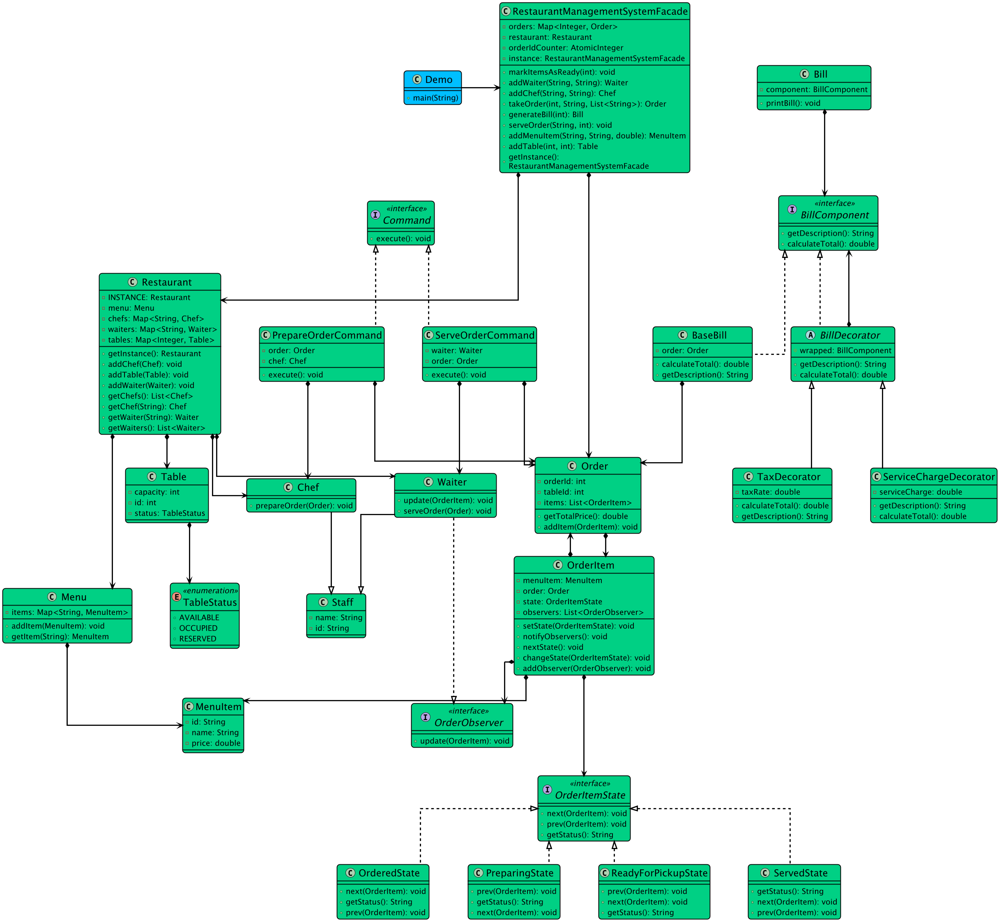
Key Classes & Architectural Rationale
1. The **MenuItem** class represents a menu item in the restaurant, with properties such as ID, name, description, price, and availability.
2. The **Order** class represents an order placed by a customer, with properties such as ID, list of menu items, total amount, order status, and timestamp.
3. The **OrderStatus** enum represents the different statuses an order can have, such as pending, preparing, ready, completed, or cancelled.
4. The **Reservation** class represents a reservation made by a customer, with properties such as ID, customer name, contact number, party size, and reservation time.
5. The **Payment** class represents a payment made for an order, with properties such as ID, amount, payment method, and payment status.
6. The **PaymentMethod** enum represents the different payment methods supported by the restaurant, such as cash, credit card, or mobile payment.
7. The **PaymentStatus** enum represents the status of a payment, which can be pending, completed, or failed.
8. The Staff class represents a staff member of the restaurant, with properties such as ID, name, role, and contact number.
9. The **Restaurant** class is the main class that manages the restaurant operations. It follows the Singleton pattern to ensure only one instance of the restaurant exists.
10. The Restaurant class provides methods for managing menu items, placing orders, updating order status, making reservations, processing payments, and managing staff.
11. Multi-threading is implemented using concurrent data structures (ConcurrentHashMap and CopyOnWriteArrayList) to handle concurrent access to shared data, such as orders and reservations.
12. The notifyKitchen and notifyStaff methods are placeholders for notifying relevant staff about order updates and status changes.
13. The **RestaurantManagementDemo** class demonstrates the usage of the restaurant management system by adding menu items, placing an order, making a reservation, processing a payment, updating order status, adding staff, and retrieving the menu.
# === [table_status.py] ===fromenumimportEnumclassTableStatus(Enum):AVAILABLE="AVAILABLE"OCCUPIED="OCCUPIED"RESERVED="RESERVED"# === [menu_item.py] ===classMenuItem:def__init__(self,item_id:str,name:str,price:float):self._id=item_idself._name=nameself._price=pricedefget_id(self)->str:returnself._iddefget_name(self)->str:returnself._namedefget_price(self)->float:returnself._pricedef__str__(self)->str:returnf"MenuItem(id={self._id}, name={self._name}, price=${self._price:.2f})"# === [order_item.py] ===fromtypingimportListfromtypingimportTYPE_CHECKINGifTYPE_CHECKING:classOrderItem:def__init__(self,menu_item:MenuItem,order:'Order'):self._menu_item=menu_itemself._order=orderself._state=OrderedState()self._observers:List[OrderObserver]=[]defchange_state(self,new_state:OrderItemState):self._state=new_stateprint(f"Item '{self._menu_item.get_name()}' state changed to: {new_state.get_status()}")defnext_state(self):self._state.next(self)defset_state(self,state:OrderItemState):self._state=statedefadd_observer(self,observer:OrderObserver):self._observers.append(observer)defnotify_observers(self):forobserverinself._observers[:]:# Create a copy to avoid modification during iterationobserver.update(self)@propertydefmenu_item(self)->MenuItem:returnself._menu_item@propertydeforder(self)->'Order':returnself._order# === [order_item_states.py] ===fromabcimportABC,abstractmethodifTYPE_CHECKING:classOrderItemState(ABC):@abstractmethoddefnext(self,item:'OrderItem'):pass@abstractmethoddefprev(self,item:'OrderItem'):pass@abstractmethoddefget_status(self)->str:passclassOrderedState(OrderItemState):defnext(self,item:'OrderItem'):item.set_state(PreparingState())defprev(self,item:'OrderItem'):print("This is the initial state.")defget_status(self)->str:return"ORDERED"classPreparingState(OrderItemState):defnext(self,item:'OrderItem'):item.set_state(ReadyForPickupState())defprev(self,item:'OrderItem'):item.set_state(OrderedState())defget_status(self)->str:return"PREPARING"classReadyForPickupState(OrderItemState):defnext(self,item:'OrderItem'):# This is the key state. When it transitions, it notifies observers.item.notify_observers()defprev(self,item:'OrderItem'):item.set_state(PreparingState())defget_status(self)->str:return"READY_FOR_PICKUP"classServedState(OrderItemState):defnext(self,item:'OrderItem'):print("This is the final state.")defprev(self,item:'OrderItem'):print("Cannot revert a served item.")defget_status(self)->str:return"SERVED"# === [bill.py] ===# Decorator Pattern for BillsclassBillComponent(ABC):@abstractmethoddefcalculate_total(self)->float:pass@abstractmethoddefget_description(self)->str:passclassBill:def__init__(self,component:BillComponent):self._component=componentdefprint_bill(self):print("\n--- BILL ---")print(f"Description: {self._component.get_description()}")print(f"Total: ${self._component.calculate_total():.2f}")print("------------")classBaseBill(BillComponent):def__init__(self,order:Order):self._order=orderdefcalculate_total(self)->float:returnself._order.get_total_price()defget_description(self)->str:return"Order Items"# === [command.py] ===classCommand(ABC):@abstractmethoddefexecute(self):passclassPrepareOrderCommand(Command):def__init__(self,order:Order,chef:Chef):self._order=orderself._chef=chefdefexecute(self):self._chef.prepare_order(self._order)classServeOrderCommand(Command):def__init__(self,order:Order,waiter:Waiter):self._order=orderself._waiter=waiterdefexecute(self):self._waiter.serve_order(self._order)# === [decorators.py] ===ifTYPE_CHECKING:classBillDecorator(BillComponent):def__init__(self,component:BillComponent):self._wrapped=componentdefcalculate_total(self)->float:returnself._wrapped.calculate_total()defget_description(self)->str:returnself._wrapped.get_description()classTaxDecorator(BillDecorator):def__init__(self,component:BillComponent,tax_rate:float):super().__init__(component)self._tax_rate=tax_ratedefcalculate_total(self)->float:returnsuper().calculate_total()*(1+self._tax_rate)defget_description(self)->str:returnsuper().get_description()+f", Tax @{self._tax_rate * 100}%"classServiceChargeDecorator(BillDecorator):def__init__(self,component:BillComponent,charge:float):super().__init__(component)self._service_charge=chargedefcalculate_total(self)->float:returnsuper().calculate_total()+self._service_chargedefget_description(self)->str:returnsuper().get_description()+", Service Charge"# === [menu.py] ===fromtypingimportDictclassMenu:def__init__(self):self._items:Dict[str,MenuItem]={}defadd_item(self,item:MenuItem):self._items[item.get_id()]=itemdefget_item(self,item_id:str)->MenuItem:item=self._items.get(item_id)ifitemisNone:raiseValueError(f"Menu item with ID {item_id} not found.")returnitemdefget_all_items(self)->Dict[str,MenuItem]:returnself._items.copy()# === [order.py] ===classOrder:def__init__(self,order_id:int,table_id:int):self._order_id=order_idself._table_id=table_idself._items:List[OrderItem]=[]defadd_item(self,item:OrderItem):self._items.append(item)defget_total_price(self)->float:returnsum(item.menu_item.get_price()foriteminself._items)@propertydeforder_id(self)->int:returnself._order_id@propertydeftable_id(self)->int:returnself._table_id@propertydeforder_items(self)->List[OrderItem]:returnself._items# === [order_observer.py] ===ifTYPE_CHECKING:classOrderObserver(ABC):@abstractmethoddefupdate(self,item:'OrderItem'):pass# === [restaurant.py] ===fromtypingimportDict,List,OptionalimportthreadingclassRestaurant:_instance=None_lock=threading.Lock()def__new__(cls):ifcls._instanceisNone:withcls._lock:ifcls._instanceisNone:cls._instance=super().__new__(cls)cls._instance._initialized=Falsereturncls._instancedef__init__(self):ifnotself._initialized:self._waiters:Dict[str,Waiter]={}self._chefs:Dict[str,Chef]={}self._tables:Dict[int,Table]={}self._menu=Menu()self._initialized=True@classmethoddefget_instance(cls):returncls()defadd_waiter(self,waiter:Waiter):self._waiters[waiter.id]=waiterdefget_waiter(self,waiter_id:str)->Optional[Waiter]:returnself._waiters.get(waiter_id)defadd_chef(self,chef:Chef):self._chefs[chef.id]=chefdefget_chef(self,chef_id:str)->Optional[Chef]:returnself._chefs.get(chef_id)defget_chefs(self)->List[Chef]:returnlist(self._chefs.values())defget_waiters(self)->List[Waiter]:returnlist(self._waiters.values())defadd_table(self,table:Table):self._tables[table.id]=table@propertydefmenu(self)->Menu:returnself._menu# === [staff.py] ===fromabcimportABC# if TYPE_CHECKING:classStaff(ABC):def__init__(self,staff_id:str,name:str):self._id=staff_idself._name=name@propertydefid(self)->str:returnself._id@propertydefname(self)->str:returnself._nameclassChef(Staff):def__init__(self,staff_id:str,name:str):super().__init__(staff_id,name)defprepare_order(self,order:'Order'):print(f"Chef {self._name} received order {order.order_id} and is starting preparation.")foriteminorder.order_items:# Chef's action triggers the first state change for each itemitem.change_state(PreparingState())classWaiter(Staff,OrderObserver):def__init__(self,staff_id:str,name:str):super().__init__(staff_id,name)defserve_order(self,order:'Order'):print(f"Waiter {self._name} is serving order {order.order_id}")foriteminorder.order_items:item.change_state(ServedState())defupdate(self,item:'OrderItem'):print(f">>> WAITER {self._name} NOTIFIED: Item '{item.menu_item.get_name()}' "f"for table {item.order.table_id} is READY FOR PICKUP.")# === [table.py] ===classTable:def__init__(self,table_id:int,capacity:int):self._id=table_idself._capacity=capacityself._status=TableStatus.AVAILABLE@propertydefid(self)->int:returnself._id@propertydefcapacity(self)->int:returnself._capacity@propertydefstatus(self)->TableStatus:returnself._status@status.setterdefstatus(self,status:TableStatus):self._status=status# === [restaurant_management_system_demo.py] ===classRestaurantManagementSystemDemo:@staticmethoddefmain():# --- 1. System Setup using the Restaurant Singleton ---print("=== Initializing Restaurant System ===")rms_facade=RestaurantManagementSystemFacade.get_instance()# --- 2. Add table and staff ---table1=rms_facade.add_table(1,4)chef1=rms_facade.add_chef("CHEF01","Gordon")waiter1=rms_facade.add_waiter("W01","Alice")# --- 3. Add menu items ---pizza=rms_facade.add_menu_item("PIZZA01","Margherita Pizza",12.50)pasta=rms_facade.add_menu_item("PASTA01","Carbonara Pasta",15.00)coke=rms_facade.add_menu_item("DRINK01","Coke",2.50)print("Initialization Complete.\n")# --- 4. Scenario: A waiter takes an order for a table ---# The Command Pattern is used inside the rms_facade.take_order() method.print("=== SCENARIO 1: Taking an order ===")order1=rms_facade.take_order(table1.id,waiter1.id,[pizza.get_id(),coke.get_id()])print(f"Order taken successfully. Order ID: {order1.order_id}")# --- 5. Scenario: Chef prepares food and notifies waiter ---print("\n=== SCENARIO 2: Chef prepares, Waiter gets notified ===")rms_facade.mark_items_as_ready(order1.order_id)rms_facade.serve_order(waiter1.id,order1.order_id)# --- 6. Scenario: Generate a bill with taxes and service charges ---# The Decorator Pattern is used inside rms_facade.generate_bill().print("\n=== SCENARIO 3: Generating the bill ===")final_bill=rms_facade.generate_bill(order1.order_id)final_bill.print_bill()if__name__=="__main__":RestaurantManagementSystemDemo.main()# === [restaurant_management_system_facade.py] ===fromtypingimportDict,ListclassRestaurantManagementSystemFacade:_instance=None_lock=threading.Lock()def__new__(cls):ifcls._instanceisNone:withcls._lock:ifcls._instanceisNone:cls._instance=super().__new__(cls)cls._instance._initialized=Falsereturncls._instancedef__init__(self):ifnotself._initialized:self._restaurant=Restaurant.get_instance()self._order_id_counter=1self._orders:Dict[int,Order]={}self._initialized=True@classmethoddefget_instance(cls):returncls()defadd_table(self,table_id:int,capacity:int)->Table:table=Table(table_id,capacity)self._restaurant.add_table(table)returntabledefadd_waiter(self,waiter_id:str,name:str)->Waiter:waiter=Waiter(waiter_id,name)self._restaurant.add_waiter(waiter)returnwaiterdefadd_chef(self,chef_id:str,name:str)->Chef:chef=Chef(chef_id,name)self._restaurant.add_chef(chef)returnchefdefadd_menu_item(self,item_id:str,name:str,price:float)->MenuItem:item=MenuItem(item_id,name,price)self._restaurant.menu.add_item(item)returnitemdeftake_order(self,table_id:int,waiter_id:str,menu_item_ids:List[str])->Order:waiter=self._restaurant.get_waiter(waiter_id)ifwaiterisNone:raiseValueError("Invalid waiter ID.")# For simplicity, we get the first available chefchefs=self._restaurant.get_chefs()ifnotchefs:raiseRuntimeError("No chefs available.")chef=chefs[0]order=Order(self._order_id_counter,table_id)self._order_id_counter+=1foritem_idinmenu_item_ids:menu_item=self._restaurant.menu.get_item(item_id)order_item=OrderItem(menu_item,order)# Waiter subscribes to each item to get notified when it's readyorder_item.add_observer(waiter)order.add_item(order_item)# The Command pattern decouples the waiter (invoker) from the chef (receiver)prepare_order_command=PrepareOrderCommand(order,chef)prepare_order_command.execute()self._orders[order.order_id]=orderreturnorderdefmark_items_as_ready(self,order_id:int):order=self._orders[order_id]print(f"\nChef has finished preparing order {order.order_id}")foriteminorder.order_items:# Preparing -> ReadyForPickup -> Notifies Observer (Waiter)item.next_state()item.next_state()defserve_order(self,waiter_id:str,order_id:int):order=self._orders[order_id]waiter=self._restaurant.get_waiter(waiter_id)serve_order_command=ServeOrderCommand(order,waiter)serve_order_command.execute()defgenerate_bill(self,order_id:int)->Bill:order=self._orders[order_id]# The Decorator pattern adds charges dynamicallybill_component=BaseBill(order)bill_component=TaxDecorator(bill_component,0.08)# 8% taxbill_component=ServiceChargeDecorator(bill_component,5.00)# $5 flat service chargereturnBill(bill_component)
Category 7 • Gaming & Board Systems
Gaming & Board Systems
Complete implementations of Chess Game Engine, Tic-Tac-Toe, Snake and Ladder, Cricinfo Live Scoring, and Traffic Signal Control.
Turn-based games, matrix board evaluations, live event-driven scoring broadcasts, and finite-state intersection traffic controllers.
Chess Game Engine
Polymorphic Move ValidationTurn-Based State MachineBoard Representation
System Requirements
The chess game should follow the standard rules of chess.
The game should support two players, each controlling their own set of pieces.
The game board should be represented as an 8x8 grid, with alternating black and white squares.
Each player should have 16 pieces: 1 king, 1 queen, 2 rooks, 2 bishops, 2 knights, and 8 pawns.
The game should validate legal moves for each piece and prevent illegal moves.
The game should detect checkmate and stalemate conditions.
The game should handle player turns and allow players to make moves alternately.
The game should provide a user interface for players to interact with the game.
📐 UML Class DiagramSystem Architecture
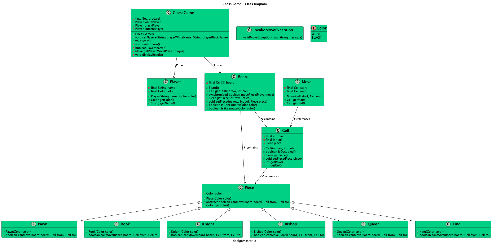
Key Classes & Architectural Rationale
1. The **Piece** class is an abstract base class representing a chess piece. It contains common attributes such as color, row, and column, and declares an abstract method canMove to be implemented by each specific piece class.
2. The **King**, **Queen**, **Rook**, **Bishop**, **Knight**, and **Pawn** classes extend the Piece class and implement their respective movement logic in the canMove method.
3. The **Board** class represents the chess board and manages the placement of pieces. It provides methods to get and set pieces on the board, check the validity of moves, and determine checkmate and stalemate conditions.
4. The **Player** class represents a player in the game and has a method to make a move on the board.
5. The Move class represents a move made by a player, containing the piece being moved and the destination coordinates.
6. The **Game** class orchestrates the overall game flow. It initializes the board, handles player turns, and determines the game result.
7. The **ChessGame** class is the entry point of the application and starts the game.
# === [bishop.py] ===classBishop(Piece):defcan_move(self,board,dest_row,dest_col):row_diff=abs(dest_row-self.row)col_diff=abs(dest_col-self.col)returnrow_diff==col_diff# === [board.py] ===classBoard:def__init__(self):self.board=[[None]*8for_inrange(8)]self._initialize_board()def_initialize_board(self):# Initialize white piecesself.board[0][0]=Rook(Color.WHITE,0,0)self.board[0][1]=Knight(Color.WHITE,0,1)self.board[0][2]=Bishop(Color.WHITE,0,2)self.board[0][3]=Queen(Color.WHITE,0,3)self.board[0][4]=King(Color.WHITE,0,4)self.board[0][5]=Bishop(Color.WHITE,0,5)self.board[0][6]=Knight(Color.WHITE,0,6)self.board[0][7]=Rook(Color.WHITE,0,7)foriinrange(8):self.board[1][i]=Pawn(Color.WHITE,1,i)# Initialize black piecesself.board[7][0]=Rook(Color.BLACK,7,0)self.board[7][1]=Knight(Color.BLACK,7,1)self.board[7][2]=Bishop(Color.BLACK,7,2)self.board[7][3]=Queen(Color.BLACK,7,3)self.board[7][4]=King(Color.BLACK,7,4)self.board[7][5]=Bishop(Color.BLACK,7,5)self.board[7][6]=Knight(Color.BLACK,7,6)self.board[7][7]=Rook(Color.BLACK,7,7)foriinrange(8):self.board[6][i]=Pawn(Color.BLACK,6,i)defget_piece(self,row,col):returnself.board[row][col]defset_piece(self,row,col,piece):self.board[row][col]=piecedefis_valid_move(self,piece,dest_row,dest_col):ifpieceisNoneordest_row<0ordest_row>7ordest_col<0ordest_col>7:returnFalsedest_piece=self.board[dest_row][dest_col]return(dest_pieceisNoneordest_piece.color!=piece.color)and \piece.can_move(self,dest_row,dest_col)defis_checkmate(self,color):# TODO: Implement checkmate logicreturnFalsedefis_stalemate(self,color):# TODO: Implement stalemate logicreturnFalse# === [color.py] ===fromenumimportEnumclassColor(Enum):WHITE=1BLACK=2# === [game.py] ===classGame:def__init__(self):self.board=Board()self.players=[Player(Color.WHITE),Player(Color.BLACK)]self.current_player=0defstart(self):# Game loopwhilenotself._is_game_over():player=self.players[self.current_player]print(f"{player.color.name}'s turn.")# Get move from the playermove=self._get_player_move(player)# Make the move on the boardplayer.make_move(self.board,move)# Switch to the next playerself.current_player=(self.current_player+1)%2# Display game resultself._display_result()def_is_game_over(self):returnself.board.is_checkmate(Color.WHITE)orself.board.is_checkmate(Color.BLACK)or \self.board.is_stalemate(Color.WHITE)orself.board.is_stalemate(Color.BLACK)def_get_player_move(self,player):# TODO: Implement logic to get a valid move from the player# For simplicity, let's assume the player enters the move via console inputsource_row=int(input("Enter source row: "))source_col=int(input("Enter source column: "))dest_row=int(input("Enter destination row: "))dest_col=int(input("Enter destination column: "))piece=self.board.get_piece(source_row,source_col)ifpieceisNoneorpiece.color!=player.color:raiseValueError("Invalid piece selection!")returnMove(piece,dest_row,dest_col)def_display_result(self):ifself.board.is_checkmate(Color.WHITE):print("Black wins by checkmate!")elifself.board.is_checkmate(Color.BLACK):print("White wins by checkmate!")elifself.board.is_stalemate(Color.WHITE)orself.board.is_stalemate(Color.BLACK):print("The game ends in a stalemate!")# === [king.py] ===classKing(Piece):defcan_move(self,board,dest_row,dest_col):row_diff=abs(dest_row-self.row)col_diff=abs(dest_col-self.col)returnrow_diff<=1andcol_diff<=1# === [knight.py] ===classKnight(Piece):defcan_move(self,board,dest_row,dest_col):row_diff=abs(dest_row-self.row)col_diff=abs(dest_col-self.col)return(row_diff==2andcol_diff==1)or(row_diff==1andcol_diff==2)# === [move.py] ===classMove:def__init__(self,piece,dest_row,dest_col):self.piece=pieceself.dest_row=dest_rowself.dest_col=dest_col# === [pawn.py] ===classPawn(Piece):defcan_move(self,board,dest_row,dest_col):row_diff=dest_row-self.rowcol_diff=abs(dest_col-self.col)ifself.color==Color.WHITE:return(row_diff==1andcol_diff==0)or \(self.row==1androw_diff==2andcol_diff==0)or \(row_diff==1andcol_diff==1andboard.get_piece(dest_row,dest_col)isnotNone)else:return(row_diff==-1andcol_diff==0)or \(self.row==6androw_diff==-2andcol_diff==0)or \(row_diff==-1andcol_diff==1andboard.get_piece(dest_row,dest_col)isnotNone)# === [piece.py] ===fromabcimportABC,abstractmethodclassPiece(ABC):def__init__(self,color,row,col):self.color=colorself.row=rowself.col=col@abstractmethoddefcan_move(self,board,dest_row,dest_col):pass# === [player.py] ===classPlayer:def__init__(self,color):self.color=colordefmake_move(self,board,move):piece=move.piecedest_row=move.dest_rowdest_col=move.dest_colifboard.is_valid_move(piece,dest_row,dest_col):source_row=piece.rowsource_col=piece.colboard.set_piece(source_row,source_col,None)board.set_piece(dest_row,dest_col,piece)piece.row=dest_rowpiece.col=dest_colelse:raiseValueError("Invalid move!")# === [queen.py] ===classQueen(Piece):defcan_move(self,board,dest_row,dest_col):row_diff=abs(dest_row-self.row)col_diff=abs(dest_col-self.col)return(row_diff==col_diff)or(self.row==dest_roworself.col==dest_col)# === [rook.py] ===classRook(Piece):defcan_move(self,board,dest_row,dest_col):returnself.row==dest_roworself.col==dest_col# === [chess_game_demo.py] ===classChessGameDemo:@staticmethoddefrun():game=Game()game.start()if__name__=="__main__":ChessGameDemo.run()
The Tic-Tac-Toe game should be played on a 3x3 grid.
Two players take turns marking their symbols (X or O) on the grid.
The first player to get three of their symbols in a row (horizontally, vertically, or diagonally) wins the game.
If all the cells on the grid are filled and no player has won, the game ends in a draw.
The game should have a user interface to display the grid and allow players to make their moves.
The game should handle player turns and validate moves to ensure they are legal.
The game should detect and announce the winner or a draw at the end of the game.
📐 UML Class DiagramSystem Architecture
Key Classes & Architectural Rationale
1. The **Player** class represents a player in the game, with a name and a symbol (X or O).
2. The **Board** class represents the game board, which is a 3x3 grid. It provides methods to make moves, check for a winner, and check if the board is full.
3. The **Game** class manages the game flow and player interactions. It handles player turns, validates moves, and determines the winner or a draw.
4. The **TicTacToe** class is the entry point of the application and creates instances of the players and the game.
# === [game_status.py] ===fromenumimportEnumclassGameStatus(Enum):IN_PROGRESS="IN_PROGRESS"WINNER_X="WINNER_X"WINNER_O="WINNER_O"DRAW="DRAW"# === [game_state.py] ===fromabcimportABC,abstractmethodclassGameState(ABC):@abstractmethoddefhandle_move(self,game,player:Player,row:int,col:int):passclassInProgressState(GameState):defhandle_move(self,game,player:Player,row:int,col:int):ifgame.get_current_player()!=player:raiseInvalidMoveException("Not your turn!")# Place the piece on the boardgame.get_board().place_symbol(row,col,player.get_symbol())# Check for a winner or a drawifgame.check_winner(player):game.set_winner(player)game.set_status(GameStatus.WINNER_Xifplayer.get_symbol()==Symbol.XelseGameStatus.WINNER_O)game.set_state(WinnerState())elifgame.get_board().is_full():game.set_status(GameStatus.DRAW)game.set_state(DrawState())else:# If the game is still in progress, switch playersgame.switch_player()classDrawState(GameState):defhandle_move(self,game,player:Player,row:int,col:int):raiseInvalidMoveException("Game is already over. It was a draw.")classWinnerState(GameState):defhandle_move(self,game,player:Player,row:int,col:int):raiseInvalidMoveException(f"Game is already over. {game.get_winner().get_name()} has won.")# === [winning_strategy.py] ===classWinningStrategy(ABC):@abstractmethoddefcheck_winner(self,board:Board,player:Player)->bool:passclassRowWinningStrategy(WinningStrategy):defcheck_winner(self,board:Board,player:Player)->bool:forrowinrange(board.get_size()):row_win=Trueforcolinrange(board.get_size()):ifboard.get_cell(row,col).get_symbol()!=player.get_symbol():row_win=Falsebreakifrow_win:returnTruereturnFalseclassColumnWinningStrategy(WinningStrategy):defcheck_winner(self,board:Board,player:Player)->bool:forcolinrange(board.get_size()):col_win=Trueforrowinrange(board.get_size()):ifboard.get_cell(row,col).get_symbol()!=player.get_symbol():col_win=Falsebreakifcol_win:returnTruereturnFalseclassDiagonalWinningStrategy(WinningStrategy):defcheck_winner(self,board:Board,player:Player)->bool:# Main diagonalmain_diag_win=Trueforiinrange(board.get_size()):ifboard.get_cell(i,i).get_symbol()!=player.get_symbol():main_diag_win=Falsebreakifmain_diag_win:returnTrue# Anti-diagonalanti_diag_win=Trueforiinrange(board.get_size()):ifboard.get_cell(i,board.get_size()-1-i).get_symbol()!=player.get_symbol():anti_diag_win=Falsebreakreturnanti_diag_win# === [board.py] ===fromtypingimportOptionalclassBoard:def__init__(self,size:int):self.size=sizeself.moves_count=0self.board=[]self.initialize_board()definitialize_board(self):forrowinrange(self.size):board_row=[]forcolinrange(self.size):board_row.append(Cell())self.board.append(board_row)defplace_symbol(self,row:int,col:int,symbol:Symbol)->bool:ifrow<0orrow>=self.sizeorcol<0orcol>=self.size:raiseInvalidMoveException("Invalid position: out of bounds.")ifself.board[row][col].get_symbol()!=Symbol.EMPTY:raiseInvalidMoveException("Invalid position: cell is already occupied.")self.board[row][col].set_symbol(symbol)self.moves_count+=1returnTruedefget_cell(self,row:int,col:int)->Optional[Cell]:ifrow<0orrow>=self.sizeorcol<0orcol>=self.size:returnNonereturnself.board[row][col]defis_full(self)->bool:returnself.moves_count==self.size*self.sizedefprint_board(self):print("-------------")foriinrange(self.size):print("| ",end="")forjinrange(self.size):symbol=self.board[i][j].get_symbol()print(f"{symbol.get_char()} | ",end="")print("\n-------------")defget_size(self):returnself.size# === [cell.py] ===classCell:def__init__(self):self.symbol=Symbol.EMPTYdefget_symbol(self):returnself.symboldefset_symbol(self,symbol:Symbol):self.symbol=symbol# === [game.py] ===classGame(GameSubject):def__init__(self,player1:Player,player2:Player):super().__init__()self.board=Board(3)self.player1=player1self.player2=player2self.current_player=player1# Player 1 startsself.winner=Noneself.status=GameStatus.IN_PROGRESSself.state=InProgressState()self.winning_strategies=[RowWinningStrategy(),ColumnWinningStrategy(),DiagonalWinningStrategy()]defmake_move(self,player:Player,row:int,col:int):self.state.handle_move(self,player,row,col)defcheck_winner(self,player:Player)->bool:forstrategyinself.winning_strategies:ifstrategy.check_winner(self.board,player):returnTruereturnFalsedefswitch_player(self):self.current_player=self.player2ifself.current_player==self.player1elseself.player1defget_board(self):returnself.boarddefget_current_player(self):returnself.current_playerdefget_winner(self):returnself.winnerdefset_winner(self,winner:Player):self.winner=winnerdefget_status(self):returnself.statusdefset_state(self,state:GameState):self.state=statedefset_status(self,status:GameStatus):self.status=status# Notify observers when the status changes to a finished stateifstatus!=GameStatus.IN_PROGRESS:self.notify_observers()# === [game_observer.py] ===classGameObserver(ABC):@abstractmethoddefupdate(self,game):pass# === [game_subject.py] ===classGameSubject(ABC):def__init__(self):self.observers=[]defadd_observer(self,observer:GameObserver):self.observers.append(observer)defremove_observer(self,observer:GameObserver):self.observers.remove(observer)defnotify_observers(self):forobserverinself.observers:observer.update(self)# === [invalid_move_exception.py] ===classInvalidMoveException(Exception):def__init__(self,message):super().__init__(message)# === [player.py] ===classPlayer:def__init__(self,name:str,symbol:Symbol):self.name=nameself.symbol=symboldefget_name(self):returnself.namedefget_symbol(self):returnself.symbol# === [scoreboard.py] ===classScoreboard(GameObserver):def__init__(self):self.scores={}defupdate(self,game):# The scoreboard only cares about finished games with a winnerifgame.get_winner()isnotNone:winner_name=game.get_winner().get_name()self.scores[winner_name]=self.scores.get(winner_name,0)+1print(f"[Scoreboard] {winner_name} wins! Their new score is {self.scores[winner_name]}.")defprint_scores(self):print("\n--- Overall Scoreboard ---")ifnotself.scores:print("No games with a winner have been played yet.")returnforplayer_name,scoreinself.scores.items():print(f"Player: {player_name:<10} | Wins: {score}")print("--------------------------\n")# === [symbol.py] ===classSymbol(Enum):X='X'O='O'EMPTY='_'defget_char(self):returnself.value# === [tictactoesystem.py] ===importthreadingclassTicTacToeSystem:_instance=None_lock=threading.Lock()def__new__(cls):ifcls._instanceisNone:withcls._lock:ifcls._instanceisNone:cls._instance=super().__new__(cls)returncls._instancedef__init__(self):ifnothasattr(self,'initialized'):self.game=Noneself.scoreboard=Scoreboard()# The system now manages a scoreboardself.initialized=True@classmethoddefget_instance(cls):returncls()defcreate_game(self,player1:Player,player2:Player):self.game=Game(player1,player2)# Register the scoreboard as an observer for this new gameself.game.add_observer(self.scoreboard)print(f"Game started between {player1.get_name()} (X) and {player2.get_name()} (O).")defmake_move(self,player:Player,row:int,col:int):ifself.gameisNone:print("No game in progress. Please create a game first.")returntry:print(f"{player.get_name()} plays at ({row}, {col})")self.game.make_move(player,row,col)self.print_board()print(f"Game Status: {self.game.get_status().value}")ifself.game.get_winner()isnotNone:print(f"Winner: {self.game.get_winner().get_name()}")exceptInvalidMoveExceptionase:print(f"Error: {e}")defprint_board(self):self.game.get_board().print_board()defprint_score_board(self):self.scoreboard.print_scores()# === [tictactoe_demo.py] ===classTicTacToeDemo:@staticmethoddefmain():system=TicTacToeSystem.get_instance()alice=Player("Alice",Symbol.X)bob=Player("Bob",Symbol.O)# --- GAME 1: Alice wins ---print("--- GAME 1: Alice (X) vs. Bob (O) ---")system.create_game(alice,bob)system.print_board()system.make_move(alice,0,0)system.make_move(bob,1,0)system.make_move(alice,0,1)system.make_move(bob,1,1)system.make_move(alice,0,2)# Alice wins, scoreboard is notifiedprint("----------------------------------------\n")# --- GAME 2: Bob wins ---print("--- GAME 2: Alice (X) vs. Bob (O) ---")system.create_game(alice,bob)# A new game instancesystem.print_board()system.make_move(alice,0,0)system.make_move(bob,1,0)system.make_move(alice,0,1)system.make_move(bob,1,1)system.make_move(alice,2,2)system.make_move(bob,1,2)# Bob wins, scoreboard is notifiedprint("----------------------------------------\n")# --- GAME 3: A Draw ---print("--- GAME 3: Alice (X) vs. Bob (O) - Draw ---")system.create_game(alice,bob)system.print_board()system.make_move(alice,0,0)system.make_move(bob,0,1)system.make_move(alice,0,2)system.make_move(bob,1,1)system.make_move(alice,1,0)system.make_move(bob,1,2)system.make_move(alice,2,1)system.make_move(bob,2,0)system.make_move(alice,2,2)# Draw, scoreboard is not notified of a winnerprint("----------------------------------------\n")# --- Final Scoreboard ---# We get the scoreboard from the system and print its final statesystem.print_score_board()if__name__=="__main__":TicTacToeDemo.main()
Snake and Ladder Game
Board Entity ModelingDice Rolling StrategyPlayer Movement State
System Requirements
The game should be played on a board with numbered cells, typically with 100 cells.
The board should have a predefined set of snakes and ladders, connecting certain cells.
The game should support multiple players, each represented by a unique game piece.
Players should take turns rolling a dice to determine the number of cells to move forward.
If a player lands on a cell with the head of a snake, they should slide down to the cell with the tail of the snake.
If a player lands on a cell with the base of a ladder, they should climb up to the cell at the top of the ladder.
The game should continue until one of the players reaches the final cell on the board.
The game should handle multiple game sessions concurrently, allowing different groups of players to play independently.
📐 UML Class DiagramSystem Architecture
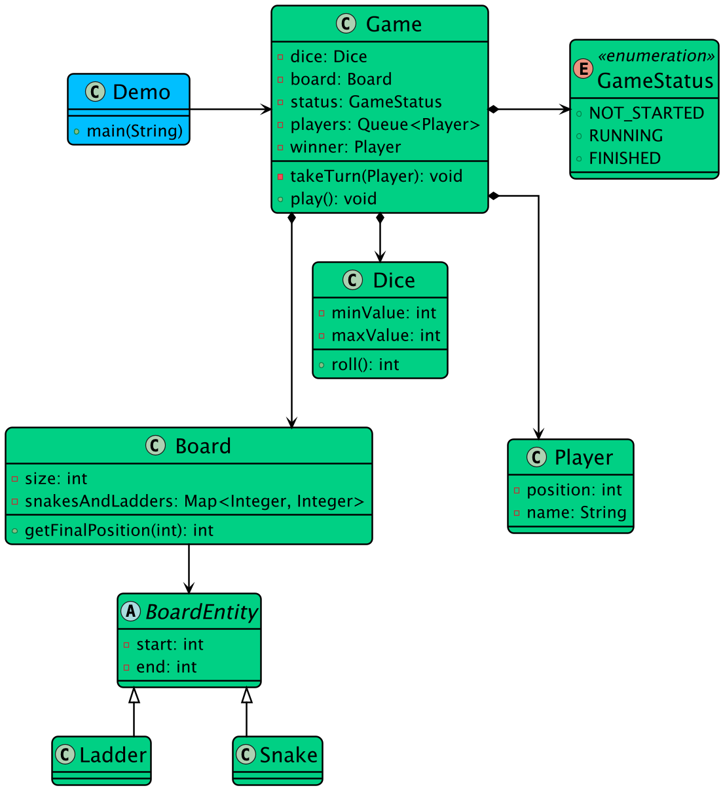
Key Classes & Architectural Rationale
1. The **Board** class represents the game board with a fixed size (e.g., 100 cells). It contains the positions of snakes and ladders and provides methods to initialize them and retrieve the new position after encountering a snake or ladder.
2. The **Player** class represents a player in the game, with properties such as name and current position on the board.
3. The **Snake** class represents a snake on the board, with properties for the start and end positions.
4. The **Ladder** class represents a ladder on the board, with properties for the start and end positions.
5. The **Dice** class represents a dice used in the game, with a method to roll the dice and return a random value between 1 and 6.
6. The **SnakeAndLadderGame** class represents a single game session. It initializes the game with a board, a list of players, and a dice. The play method handles the game loop, where players take turns rolling the dice and moving their positions on the board. It checks for snakes and ladders and updates the player's position accordingly. The game continues until a player reaches the final position on the board.
7. The **GameManager** class is a singleton that manages multiple game sessions. It maintains a list of active games and provides a method to start a new game with a list of player names. Each game is started in a separate thread to allow concurrent game sessions.
8. The **SnakeAndLadderDemo** class demonstrates the usage of the game by creating an instance of the GameManager and starting two separate game sessions with different sets of players.
# === [game_status.py] ===fromenumimportEnumclassGameStatus(Enum):NOT_STARTED="NOT_STARTED"RUNNING="RUNNING"FINISHED="FINISHED"# === [board.py] ===fromtypingimportListclassBoard:def__init__(self,size:int,entities:List[BoardEntity]):self.size=sizeself.snakes_and_ladders={}forentityinentities:self.snakes_and_ladders[entity.get_start()]=entity.get_end()defget_size(self)->int:returnself.sizedefget_final_position(self,position:int)->int:returnself.snakes_and_ladders.get(position,position)# === [board_entity.py] ===fromabcimportABCclassBoardEntity(ABC):def__init__(self,start:int,end:int):self.start=startself.end=enddefget_start(self)->int:returnself.startdefget_end(self)->int:returnself.end# === [dice.py] ===importrandomclassDice:def__init__(self,min_value:int,max_value:int):self.min_value=min_valueself.max_value=max_valuedefroll(self)->int:returnrandom.randint(self.min_value,self.max_value)# === [game.py] ===fromcollectionsimportdequeclassGame:classBuilder:def__init__(self):self.board=Noneself.players=Noneself.dice=Nonedefset_board(self,board_size:int,board_entities:List[BoardEntity]):self.board=Board(board_size,board_entities)returnselfdefset_players(self,player_names:List[str]):self.players=deque()forplayer_nameinplayer_names:self.players.append(Player(player_name))returnselfdefset_dice(self,dice:Dice):self.dice=dicereturnselfdefbuild(self):ifself.boardisNoneorself.playersisNoneorself.diceisNone:raiseValueError("Board, Players, and Dice must be set.")returnGame(self)def__init__(self,builder:'Game.Builder'):self.board=builder.boardself.players=deque(builder.players)self.dice=builder.diceself.status=GameStatus.NOT_STARTEDself.winner=Nonedefplay(self):iflen(self.players)<2:print("Cannot start game. At least 2 players are required.")returnself.status=GameStatus.RUNNINGprint("Game started!")whileself.status==GameStatus.RUNNING:current_player=self.players.popleft()self.take_turn(current_player)# If the game is not finished and the player didn't roll a 6, add them back to the queueifself.status==GameStatus.RUNNING:self.players.append(current_player)print("Game Finished!")ifself.winnerisnotNone:print(f"The winner is {self.winner.get_name()}!")deftake_turn(self,player:Player):roll=self.dice.roll()print(f"\n{player.get_name()}'s turn. Rolled a {roll}.")current_position=player.get_position()next_position=current_position+rollifnext_position>self.board.get_size():print(f"Oops, {player.get_name()} needs to land exactly on {self.board.get_size()}. Turn skipped.")returnifnext_position==self.board.get_size():player.set_position(next_position)self.winner=playerself.status=GameStatus.FINISHEDprint(f"Hooray! {player.get_name()} reached the final square {self.board.get_size()} and won!")returnfinal_position=self.board.get_final_position(next_position)iffinal_position>next_position:# Ladderprint(f"Wow! {player.get_name()} found a ladder 🪜 at {next_position} and climbed to {final_position}.")eliffinal_position<next_position:# Snakeprint(f"Oh no! {player.get_name()} was bitten by a snake 🐍 at {next_position} and slid down to {final_position}.")else:print(f"{player.get_name()} moved from {current_position} to {final_position}.")player.set_position(final_position)ifroll==6:print(f"{player.get_name()} rolled a 6 and gets another turn!")self.take_turn(player)# === [ladder.py] ===classLadder(BoardEntity):def__init__(self,start:int,end:int):super().__init__(start,end)ifstart>=end:raiseValueError("Ladder bottom must be at a lower position than its top.")# === [player.py] ===classPlayer:def__init__(self,name:str):self.name=nameself.position=0defget_name(self)->str:returnself.namedefget_position(self)->int:returnself.positiondefset_position(self,position:int):self.position=position# === [snake.py] ===classSnake(BoardEntity):def__init__(self,start:int,end:int):super().__init__(start,end)ifstart<=end:raiseValueError("Snake head must be at a higher position than its tail.")# === [snake_and_ladder_demo.py] ===classSnakeAndLadderDemo:@staticmethoddefmain():board_entities=[Snake(17,7),Snake(54,34),Snake(62,19),Snake(98,79),Ladder(3,38),Ladder(24,33),Ladder(42,93),Ladder(72,84)]players=["Alice","Bob","Charlie"]game=Game.Builder() \.set_board(100,board_entities) \.set_players(players) \.set_dice(Dice(1,6)) \.build()game.play()if__name__=="__main__":SnakeAndLadderDemo.main()
Cricinfo Live Cricket Scoring
Observer Pattern (Score Updates)Match Inning State MachineBall-by-Ball Logging
System Requirements
The Cricinfo system should provide information about cricket matches, teams, players, and live scores.
Users should be able to view the schedule of upcoming matches and the results of completed matches.
The system should allow users to search for specific matches, teams, or players.
Users should be able to view detailed information about a particular match, including the scorecard, commentary, and statistics.
The system should support real-time updates of live scores and match information.
The system should handle concurrent access to match data and ensure data consistency.
The system should be scalable and able to handle a large volume of user requests.
The system should be extensible to accommodate new features and enhancements in the future.
📐 UML Class DiagramSystem Architecture
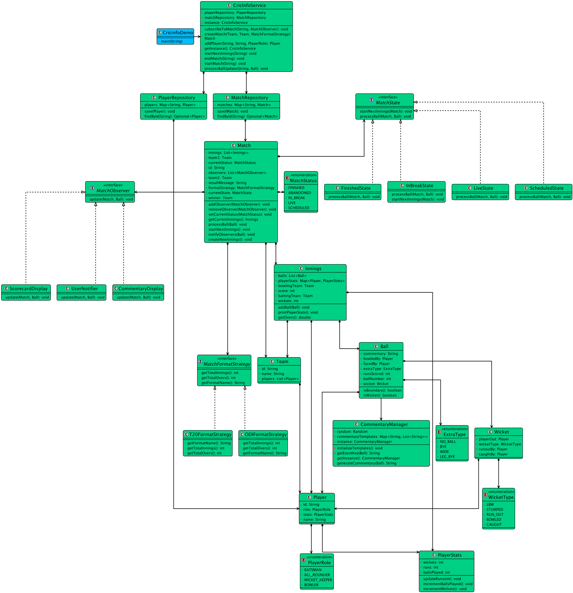
Key Classes & Architectural Rationale
1. The **Match** class represents a cricket match, with properties such as ID, title, venue, start time, teams, status, and scorecard.
2. The **Team** class represents a cricket team, with properties like ID, name, and a list of players.
3. The **Player** class represents a cricket player, with properties such as ID, name, and role.
4. The **Scorecard** class represents the scorecard of a match, containing team scores and a list of innings.
5. The **Innings** class represents an innings in a match, with properties like ID, batting team, bowling team, and a list of overs.
6. The **Over** class represents an over in an innings, containing a list of balls.
7. The **Ball** class represents a ball bowled in an over, with properties such as ball number, bowler, batsman, and result.
8. The **MatchStatus** enum represents the different statuses of a match, such as scheduled, in progress, completed, or abandoned.
9. The **MatchService** class manages the matches in the system, providing methods to add, retrieve, and update match information. It follows the Singleton pattern to ensure a single instance of the service.
10. The **ScorecardService** class manages the scorecards of matches, allowing the creation, retrieval, and update of scorecards and their associated data, such as innings and scores. It also follows the Singleton pattern.
11. The **CricinfoSystem** class serves as the main entry point of the system, integrating the match and scorecard services and providing high-level methods for interacting with the system.
# === [enums.py] ===fromenumimportEnumclassMatchType(Enum):T20="T20"ODI="ODI"TEST="TEST"classMatchStatus(Enum):SCHEDULED="SCHEDULED"LIVE="LIVE"IN_BREAK="IN_BREAK"FINISHED="FINISHED"ABANDONED="ABANDONED"classPlayerRole(Enum):BATSMAN="BATSMAN"BOWLER="BOWLER"ALL_ROUNDER="ALL_ROUNDER"WICKET_KEEPER="WICKET_KEEPER"classWicketType(Enum):BOWLED="BOWLED"CAUGHT="CAUGHT"LBW="LBW"RUN_OUT="RUN_OUT"STUMPED="STUMPED"HIT_WICKET="HIT_WICKET"classExtraType(Enum):WIDE="WIDE"NO_BALL="NO_BALL"BYE="BYE"LEG_BYE="LEG_BYE"# === [match_format_strategy.py] ===fromabcimportABC,abstractmethodclassMatchFormatStrategy(ABC):@abstractmethoddefget_total_innings(self):pass@abstractmethoddefget_total_overs(self):pass@abstractmethoddefget_format_name(self):passclassT20FormatStrategy(MatchFormatStrategy):defget_total_innings(self):return2defget_total_overs(self):return20defget_format_name(self):return"T20"classODIFormatStrategy(MatchFormatStrategy):defget_total_innings(self):return2defget_total_overs(self):return50defget_format_name(self):return"ODI"# === [match_states.py] ===classMatchState(ABC):@abstractmethoddefprocess_ball(self,match,ball):passdefstart_next_innings(self,match):print("ERROR: Cannot start the next innings from the current state.")classScheduledState(MatchState):defprocess_ball(self,match,ball):print("ERROR: Cannot process a ball for a match that has not started.")classInBreakState(MatchState):defprocess_ball(self,match,ball):print("ERROR: Cannot process a ball. The match is currently in a break.")defstart_next_innings(self,match):print("Starting the next innings...")match.create_new_innings()match.set_state(LiveState())match.set_current_status(MatchStatus.LIVE)classFinishedState(MatchState):defprocess_ball(self,match,ball):print("ERROR: Cannot process a ball for a finished match.")classLiveState(MatchState):defprocess_ball(self,match,ball):current_innings=match.get_current_innings()current_innings.add_ball(ball)match.notify_observers(ball)self.check_for_match_end(match)defcheck_for_match_end(self,match):current_innings=match.get_current_innings()innings_count=len(match.get_innings())is_final_innings=(innings_count==match.get_format_strategy().get_total_innings())# Win condition: Chasing team surpasses the targetifis_final_innings:target_score=match.get_innings()[0].get_score()+1ifcurrent_innings.get_score()>=target_score:wickets_remaining=(len(current_innings.get_batting_team().get_players())-1)-current_innings.get_wickets()self.declare_winner(match,current_innings.get_batting_team(),f"won by {wickets_remaining} wickets")return# End of innings conditionifself.is_innings_over(match):ifis_final_innings:score1=match.get_innings()[0].get_score()score2=current_innings.get_score()ifscore1>score2:self.declare_winner(match,match.get_team1(),f"won by {score1 - score2} runs")elifscore2>score1:wickets_remaining=(len(current_innings.get_batting_team().get_players())-1)-current_innings.get_wickets()self.declare_winner(match,current_innings.get_batting_team(),f"won by {wickets_remaining} wickets")else:self.declare_winner(match,None,"Match Tied")else:print("End of the innings!")match.set_state(InBreakState())match.set_current_status(MatchStatus.IN_BREAK)match.notify_observers(None)defdeclare_winner(self,match,winning_team,message):print("MATCH FINISHED!")match.set_winner(winning_team)result_message=f"{winning_team.get_name()} {message}"ifwinning_teamelsemessagematch.set_result_message(result_message)match.set_state(FinishedState())match.set_current_status(MatchStatus.FINISHED)match.notify_observers(None)defis_innings_over(self,match):current_innings=match.get_current_innings()all_out=current_innings.get_wickets()>=len(current_innings.get_batting_team().get_players())-1overs_finished=int(current_innings.get_overs())>=match.get_format_strategy().get_total_overs()returnall_outorovers_finished# === [ball.py] ===classBall:classBallBuilder:def__init__(self):self.ball_number=0self.bowled_by=Noneself.faced_by=Noneself.runs_scored=0self.wicket=Noneself.extra_type=Noneself.commentary=Nonedefwith_ball_number(self,ball_number):self.ball_number=ball_numberreturnselfdefbowled_by(self,bowler):self.bowled_by=bowlerreturnselfdeffaced_by(self,batsman):self.faced_by=batsmanreturnselfdefwith_runs(self,runs):self.runs_scored=runsreturnselfdefwith_wicket(self,wicket):self.wicket=wicketreturnselfdefwith_extra_type(self,extra):self.extra_type=extrareturnselfdefwith_commentary(self,commentary):self.commentary=commentaryreturnselfdefbuild(self):temp_ball=Ball(self)ifself.commentaryisNone:self.commentary=CommentaryManager.get_instance().generate_commentary(temp_ball)returnBall(self)def__init__(self,builder):self.ball_number=builder.ball_numberself.bowled_by=builder.bowled_byself.faced_by=builder.faced_byself.runs_scored=builder.runs_scoredself.wicket=builder.wicketself.extra_type=builder.extra_typeself.commentary=builder.commentarydefis_wicket(self):returnself.wicketisnotNonedefis_boundary(self):returnself.runs_scored==4orself.runs_scored==6defget_ball_number(self):returnself.ball_numberdefget_bowled_by(self):returnself.bowled_bydefget_faced_by(self):returnself.faced_bydefget_runs_scored(self):returnself.runs_scoreddefget_wicket(self):returnself.wicketdefget_extra_type(self):returnself.extra_typedefget_commentary(self):returnself.commentary# === [innings.py] ===classInnings:def__init__(self,batting_team,bowling_team):self.batting_team=batting_teamself.bowling_team=bowling_teamself.score=0self.wickets=0self.balls=[]self.player_stats={}forplayerinbatting_team.get_players():self.player_stats[player]=PlayerStats()forplayerinbowling_team.get_players():self.player_stats[player]=PlayerStats()defadd_ball(self,ball):self.balls.append(ball)runs_scored=ball.get_runs_scored()self.score+=runs_scoredifball.get_extra_type()in[ExtraType.WIDE,ExtraType.NO_BALL]:self.score+=1else:ball.get_faced_by().get_stats().update_runs(runs_scored)ball.get_faced_by().get_stats().increment_balls_played()self.player_stats[ball.get_faced_by()].update_runs(runs_scored)self.player_stats[ball.get_faced_by()].increment_balls_played()ifball.is_wicket():self.wickets+=1ball.get_bowled_by().get_stats().increment_wickets()self.player_stats[ball.get_bowled_by()].increment_wickets()defprint_player_stats(self):forplayer,statsinself.player_stats.items():ifstats.get_balls_played()>0orstats.get_wickets()>0:print(f"Player: {player.get_name()} - Stats: {stats}")defget_overs(self):valid_balls=sum(1forbinself.ballsifb.get_extra_type()notin[ExtraType.WIDE,ExtraType.NO_BALL])completed_overs=valid_balls//6balls_in_current_over=valid_balls%6returncompleted_overs+(balls_in_current_over/10.0)defget_batting_team(self):returnself.batting_teamdefget_bowling_team(self):returnself.bowling_teamdefget_score(self):returnself.scoredefget_wickets(self):returnself.wicketsdefget_balls(self):returnself.balls# === [match.py] ===classMatch:def__init__(self,match_id,team1,team2,format_strategy):self.id=match_idself.team1=team1self.team2=team2self.format_strategy=format_strategyself.innings=[Innings(team1,team2)]self.current_state=ScheduledState()self.current_status=Noneself.observers=[]self.winner=Noneself.result_message=""defprocess_ball(self,ball):self.current_state.process_ball(self,ball)defstart_next_innings(self):self.current_state.start_next_innings(self)defcreate_new_innings(self):iflen(self.innings)>=self.format_strategy.get_total_innings():print("Cannot create a new innings, match has already reached its limit.")returnnext_innings=Innings(self.team2,self.team1)self.innings.append(next_innings)defadd_observer(self,observer):self.observers.append(observer)defremove_observer(self,observer):self.observers.remove(observer)defnotify_observers(self,ball):forobserverinself.observers:observer.update(self,ball)defget_current_innings(self):returnself.innings[-1]defget_id(self):returnself.iddefget_team1(self):returnself.team1defget_team2(self):returnself.team2defget_format_strategy(self):returnself.format_strategydefget_innings(self):returnself.inningsdefget_current_status(self):returnself.current_statusdefget_winner(self):returnself.winnerdefget_result_message(self):returnself.result_messagedefset_state(self,state):self.current_state=statedefset_current_status(self,status):self.current_status=statusdefset_winner(self,winner):self.winner=winnerdefset_result_message(self,message):self.result_message=message# === [match_observer.py] ===classMatchObserver(ABC):@abstractmethoddefupdate(self,match,last_ball):passclassCommentaryDisplay(MatchObserver):defupdate(self,match,last_ball):ifmatch.get_current_status()==MatchStatus.FINISHED:print("[COMMENTARY]: Match has finished!")elifmatch.get_current_status()==MatchStatus.IN_BREAK:print("[COMMENTARY]: Inning has ended!")else:print(f"[COMMENTARY]: {last_ball.get_commentary()}")classUserNotifier(MatchObserver):defupdate(self,match,last_ball):ifmatch.get_current_status()==MatchStatus.FINISHED:print("[NOTIFICATION]: Match has finished!")elifmatch.get_current_status()==MatchStatus.IN_BREAK:print("[NOTIFICATION]: Inning has ended!")eliflast_ballandlast_ball.is_wicket():print("[NOTIFICATION]: Wicket! A player is out.")eliflast_ballandlast_ball.is_boundary():print(f"[NOTIFICATION]: It's a boundary! {last_ball.get_runs_scored()} runs.")classScorecardDisplay(MatchObserver):defupdate(self,match,last_ball):ifmatch.get_current_status()==MatchStatus.FINISHED:print("\n--- MATCH RESULT ---")print(match.get_result_message().upper())print("--------------------")print("Player Stats:")counter=1forinninginmatch.get_innings():print(f"Inning {counter}")inning.print_player_stats()counter+=1elifmatch.get_current_status()==MatchStatus.IN_BREAK:print("\n--- END OF INNINGS ---")last_innings=match.get_innings()[-1]print(f"Final Score: {last_innings.get_batting_team().get_name()}: "f"{last_innings.get_score()}/{last_innings.get_wickets()} "f"(Overs: {last_innings.get_overs():.1f})")print("------------------------")else:print("\n--- SCORECARD UPDATE ---")current_innings=match.get_current_innings()print(f"{current_innings.get_batting_team().get_name()}: "f"{current_innings.get_score()}/{current_innings.get_wickets()} "f"(Overs: {current_innings.get_overs():.1f})")print("------------------------")# === [player.py] ===classPlayer:def__init__(self,player_id,name,role):self.id=player_idself.name=nameself.role=roleself.stats=PlayerStats()defget_id(self):returnself.iddefget_name(self):returnself.namedefget_role(self):returnself.roledefget_stats(self):returnself.stats# === [player_stats.py] ===classPlayerStats:def__init__(self):self.runs=0self.balls_played=0self.wickets=0defupdate_runs(self,run_scored):self.runs+=run_scoreddefincrement_balls_played(self):self.balls_played+=1defincrement_wickets(self):self.wickets+=1defget_runs(self):returnself.runsdefget_balls_played(self):returnself.balls_playeddefget_wickets(self):returnself.wicketsdef__str__(self):returnf"Runs: {self.runs}, Balls Played: {self.balls_played}, Wickets: {self.wickets}"# === [repository.py] ===classMatchRepository:def__init__(self):self.matches={}defsave(self,match):self.matches[match.get_id()]=matchdeffind_by_id(self,match_id):returnself.matches.get(match_id)classPlayerRepository:def__init__(self):self.players={}defsave(self,player):self.players[player.get_id()]=playerdeffind_by_id(self,player_id):returnself.players.get(player_id)# === [team.py] ===classTeam:def__init__(self,team_id,name,players):self.id=team_idself.name=nameself.players=playersdefget_id(self):returnself.iddefget_name(self):returnself.namedefget_players(self):returnself.players# === [wicket.py] ===classWicket:classBuilder:def__init__(self,wicket_type,player_out):self.wicket_type=wicket_typeself.player_out=player_outself.caught_by=Noneself.runout_by=Nonedefcaught_by(self,player):self.caught_by=playerreturnselfdefrunout_by(self,player):self.runout_by=playerreturnselfdefbuild(self):returnWicket(self)def__init__(self,builder):self.wicket_type=builder.wicket_typeself.player_out=builder.player_outself.caught_by=builder.caught_byself.runout_by=builder.runout_bydefget_wicket_type(self):returnself.wicket_typedefget_player_out(self):returnself.player_outdefget_caught_by(self):returnself.caught_bydefget_runout_by(self):returnself.runout_by# === [commentary_manager.py] ===importrandomclassCommentaryManager:_instance=Nonedef__init__(self):self.random=random.Random()self.commentary_templates={}self.initialize_templates()@classmethoddefget_instance(cls):ifcls._instanceisNone:cls._instance=CommentaryManager()returncls._instancedefinitialize_templates(self):self.commentary_templates["RUNS_0"]=["%s defends solidly.","No run, good fielding by the cover fielder.","A dot ball to end the over.","Pushed to mid-on, but no run."]self.commentary_templates["RUNS_1"]=["Tucked away to the leg side for a single.","Quick single taken by %s.","Pushed to long-on for one."]self.commentary_templates["RUNS_2"]=["Two runs taken!","Quick double taken by %s.","Pushed to mid-on for two."]self.commentary_templates["RUNS_4"]=["FOUR! %s smashes it through the covers!","Beautiful shot! That's a boundary.","Finds the gap perfectly. Four runs."]self.commentary_templates["RUNS_6"]=["SIX! That's out of the park!","%s sends it sailing over the ropes!","Massive hit! It's a maximum."]self.commentary_templates[f"WICKET_{WicketType.BOWLED.value}"]=["BOWLED HIM! %s misses completely and the stumps are shattered!","Cleaned up! A perfect yorker from %s."]self.commentary_templates[f"WICKET_{WicketType.CAUGHT.value}"]=["CAUGHT! %s skies it and the fielder takes a comfortable catch.","Out! A brilliant catch in the deep by %s."]self.commentary_templates[f"WICKET_{WicketType.LBW.value}"]=["LBW! That one kept low and struck %s right in front.","%s completely misjudged the line and pays the price."]self.commentary_templates[f"WICKET_{WicketType.STUMPED.value}"]=["STUMPED! %s misses it, and the keeper does the rest!","Gone! Lightning-fast work by the keeper to stump %s."]self.commentary_templates[f"EXTRA_{ExtraType.WIDE.value}"]=["That's a wide. The umpire signals an extra run.","Too far down the leg side, that'll be a wide."]self.commentary_templates[f"EXTRA_{ExtraType.NO_BALL.value}"]=["No ball! %s has overstepped. It's a free hit.","It's a no-ball for overstepping."]defgenerate_commentary(self,ball):key=self.get_event_key(ball)templates=self.commentary_templates.get(key,["Just a standard delivery."])template=self.random.choice(templates)batsman_name=ball.get_faced_by().get_name()ifball.get_faced_by()else""bowler_name=ball.get_bowled_by().get_name()ifball.get_bowled_by()else""try:returntemplate%batsman_nameexcept:returntemplate.replace("%s",batsman_name)defget_event_key(self,ball):ifball.is_wicket():returnf"WICKET_{ball.get_wicket().get_wicket_type().value}"ifball.get_extra_type():returnf"EXTRA_{ball.get_extra_type().value}"if0<=ball.get_runs_scored()<=6:returnf"RUNS_{ball.get_runs_scored()}"return"DEFAULT"# === [cricinfo_service.py] ===importuuidclassCricInfoService:_instance=Nonedef__init__(self):self.match_repository=MatchRepository()self.player_repository=PlayerRepository()@classmethoddefget_instance(cls):ifcls._instanceisNone:cls._instance=CricInfoService()returncls._instancedefcreate_match(self,team1,team2,format_strategy):match_id=str(uuid.uuid4())match=Match(match_id,team1,team2,format_strategy)self.match_repository.save(match)print(f"Match {format_strategy.get_format_name()} created between {team1.get_name()} and {team2.get_name()}.")returnmatchdefstart_match(self,match_id):match=self.match_repository.find_by_id(match_id)ifmatch:match.set_state(LiveState())print(f"Match {match_id} is now LIVE.")defprocess_ball_update(self,match_id,ball):match=self.match_repository.find_by_id(match_id)ifmatch:match.process_ball(ball)defstart_next_innings(self,match_id):match=self.match_repository.find_by_id(match_id)ifmatch:match.start_next_innings()defsubscribe_to_match(self,match_id,observer):match=self.match_repository.find_by_id(match_id)ifmatch:match.add_observer(observer)defend_match(self,match_id):match=self.match_repository.find_by_id(match_id)ifmatch:match.set_state(FinishedState())print(f"Match {match_id} has FINISHED.")defadd_player(self,player_id,player_name,player_role):player=Player(player_id,player_name,player_role)self.player_repository.save(player)returnplayer# === [cricinfo_demo.py] ===classCricinfoDemo:@staticmethoddefmain():service=CricInfoService.get_instance()# Setup Players and Teamsp1=service.add_player("P1","Virat",PlayerRole.BATSMAN)p2=service.add_player("P2","Rohit",PlayerRole.BATSMAN)p3=service.add_player("P3","Bumrah",PlayerRole.BOWLER)p4=service.add_player("P4","Jadeja",PlayerRole.ALL_ROUNDER)p5=service.add_player("P5","Warner",PlayerRole.BATSMAN)p6=service.add_player("P6","Smith",PlayerRole.BATSMAN)p7=service.add_player("P7","Starc",PlayerRole.BOWLER)p8=service.add_player("P8","Maxwell",PlayerRole.ALL_ROUNDER)india=Team("T1","India",[p1,p2,p3,p4])australia=Team("T2","Australia",[p5,p6,p7,p8])# Create a T20 Matcht20_match=service.create_match(india,australia,T20FormatStrategy())match_id=t20_match.get_id()# Create and subscribe observersscorecard=ScorecardDisplay()commentary=CommentaryDisplay()notifier=UserNotifier()service.subscribe_to_match(match_id,scorecard)service.subscribe_to_match(match_id,commentary)service.subscribe_to_match(match_id,notifier)# Start the matchservice.start_match(match_id)print("\n--- SIMULATING FIRST INNINGS ---")service.process_ball_update(match_id,Ball.BallBuilder().bowled_by(p7).faced_by(p1).with_runs(2).build())service.process_ball_update(match_id,Ball.BallBuilder().bowled_by(p7).faced_by(p1).with_runs(1).build())service.process_ball_update(match_id,Ball.BallBuilder().bowled_by(p7).faced_by(p2).with_runs(6).build())p2_wicket=Wicket.Builder(WicketType.BOWLED,p2).build()service.process_ball_update(match_id,Ball.BallBuilder().bowled_by(p7).faced_by(p2).with_runs(0).with_wicket(p2_wicket).build())p3_wicket=Wicket.Builder(WicketType.LBW,p3).build()service.process_ball_update(match_id,Ball.BallBuilder().bowled_by(p7).faced_by(p3).with_runs(0).with_wicket(p3_wicket).build())service.process_ball_update(match_id,Ball.BallBuilder().bowled_by(p7).faced_by(p4).with_runs(4).build())p4_wicket=Wicket.Builder(WicketType.CAUGHT,p4).caught_by(p6).build()service.process_ball_update(match_id,Ball.BallBuilder().bowled_by(p7).faced_by(p4).with_runs(0).with_wicket(p4_wicket).build())print("\n\n--- INNINGS BREAK ---")print("Players are off the field. Preparing for the second innings.")# Start the second inningsservice.start_next_innings(match_id)print("\n--- SIMULATING SECOND INNINGS ---")service.process_ball_update(match_id,Ball.BallBuilder().bowled_by(p3).faced_by(p5).with_runs(4).build())service.process_ball_update(match_id,Ball.BallBuilder().bowled_by(p3).faced_by(p5).with_runs(1).build())p5_wicket=Wicket.Builder(WicketType.BOWLED,p5).build()service.process_ball_update(match_id,Ball.BallBuilder().bowled_by(p3).faced_by(p5).with_runs(0).with_wicket(p5_wicket).build())p7_wicket=Wicket.Builder(WicketType.LBW,p7).build()service.process_ball_update(match_id,Ball.BallBuilder().bowled_by(p3).faced_by(p7).with_runs(0).with_wicket(p7_wicket).build())p8_wicket=Wicket.Builder(WicketType.STUMPED,p8).build()service.process_ball_update(match_id,Ball.BallBuilder().bowled_by(p3).faced_by(p8).with_runs(0).with_wicket(p8_wicket).build())service.end_match(match_id)if__name__=="__main__":CricinfoDemo.main()
Traffic Signal Control
State PatternObserver PatternTimer SchedulingEmergency Override
System Requirements
The traffic signal system should control the flow of traffic at an intersection with multiple roads.
The system should support different types of signals, such as red, yellow, and green.
The duration of each signal should be configurable and adjustable based on traffic conditions.
The system should handle the transition between signals smoothly, ensuring safe and efficient traffic flow.
The system should be able to detect and handle emergency situations, such as an ambulance or fire truck approaching the intersection.
The system should be scalable and extensible to support additional features and functionality.
📐 UML Class DiagramSystem Architecture
Key Classes & Architectural Rationale
1. The **Signal** enum represents the different states of a traffic light: red, yellow, and green.
2. The **Road** class represents a road in the traffic signal system, with properties such as ID, name, and an associated traffic light.
3. The **TrafficLight** class represents a traffic light, with properties such as ID, current signal, and durations for each signal state. It provides methods to change the signal and notify observers (e.g., roads) about signal changes.
4. The **TrafficController** class serves as the central controller for the traffic signal system. It follows the Singleton pattern to ensure a single instance of the controller. It manages the roads and their associated traffic lights, starts the traffic control process, and handles emergency situations.
5. The **TrafficSignalSystemDemo** class is the main entry point of the application. It demonstrates the usage of the traffic signal system by creating roads, traffic lights, assigning traffic lights to roads, and starting the traffic control process.
# === [direction.py] ===fromenumimportEnumclassDirection(Enum):NORTH="NORTH"SOUTH="SOUTH"EAST="EAST"WEST="WEST"# === [intersection_state.py] ===fromabcimportABC,abstractmethodfromtypingimportTYPE_CHECKINGimporttimeifTYPE_CHECKING:classIntersectionState(ABC):@abstractmethoddefhandle(self,context:'IntersectionController'):passclassEastWestGreenState(IntersectionState):defhandle(self,context:'IntersectionController'):print(f"\n--- INTERSECTION {context.get_id()}: Cycle -> East-West GREEN ---")# Turn East and West green, ensure North and South are redcontext.get_light(Direction.EAST).start_green()context.get_light(Direction.WEST).start_green()context.get_light(Direction.NORTH).set_color(LightColor.RED)context.get_light(Direction.SOUTH).set_color(LightColor.RED)# Wait for green light durationtime.sleep(context.get_green_duration()/1000.0)# Transition East and West to Yellowcontext.get_light(Direction.EAST).transition()context.get_light(Direction.WEST).transition()# Wait for yellow light durationtime.sleep(context.get_yellow_duration()/1000.0)# Transition East and West to Redcontext.get_light(Direction.EAST).transition()context.get_light(Direction.WEST).transition()# Change the intersection's state back to let North-South gocontext.set_state(NorthSouthGreenState())classNorthSouthGreenState(IntersectionState):defhandle(self,context:'IntersectionController'):print(f"\n--- INTERSECTION {context.get_id()}: Cycle Start -> North-South GREEN ---")# Turn North and South green, ensure East and West are redcontext.get_light(Direction.NORTH).start_green()context.get_light(Direction.SOUTH).start_green()context.get_light(Direction.EAST).set_color(LightColor.RED)context.get_light(Direction.WEST).set_color(LightColor.RED)# Wait for green light durationtime.sleep(context.get_green_duration()/1000.0)# Transition North and South to Yellowcontext.get_light(Direction.NORTH).transition()context.get_light(Direction.SOUTH).transition()# Wait for yellow light durationtime.sleep(context.get_yellow_duration()/1000.0)# Transition North and South to Redcontext.get_light(Direction.NORTH).transition()context.get_light(Direction.SOUTH).transition()# Change the intersection's state to let East-West gocontext.set_state(EastWestGreenState())# === [signal_state.py] ===ifTYPE_CHECKING:classSignalState(ABC):@abstractmethoddefhandle(self,context:'TrafficLight'):passclassYellowState(SignalState):defhandle(self,context:'TrafficLight'):context.set_color(LightColor.YELLOW)# After being yellow, the next state is red.context.set_next_state(RedState())classGreenState(SignalState):defhandle(self,context:'TrafficLight'):context.set_color(LightColor.GREEN)# After being green, the next state is yellow.context.set_next_state(YellowState())classRedState(SignalState):defhandle(self,context:'TrafficLight'):context.set_color(LightColor.RED)# Red is a stable state, it transitions to green only when the intersection controller commands it.# So, the next state is self.context.set_next_state(RedState())# === [light_color.py] ===classLightColor(Enum):GREEN="GREEN"YELLOW="YELLOW"RED="RED"# === [observer.py] ===classTrafficObserver(ABC):@abstractmethoddefupdate(self,intersection_id:int,direction:Direction,color:LightColor):passclassCentralMonitor(TrafficObserver):defupdate(self,intersection_id:int,direction:Direction,color:LightColor):print(f"[MONITOR] Intersection {intersection_id}: Light for {direction.value} direction changed to {color.value}.")# === [traffic_light.py] ===fromtypingimportListclassTrafficLight:def__init__(self,intersection_id:int,direction:Direction):self._intersection_id=intersection_idself._direction=directionself._current_color=Noneself._current_state=RedState()# Default state is Redself._next_state=Noneself._observers:List[TrafficObserver]=[]self._current_state.handle(self)# This is called by the IntersectionController to initiate a G-Y-R cycledefstart_green(self):self._current_state=GreenState()self._current_state.handle(self)# This is called by the IntersectionController to transition from G->Y or Y->Rdeftransition(self):self._current_state=self._next_stateself._current_state.handle(self)defset_color(self,color:LightColor):ifself._current_color!=color:self._current_color=colorself._notify_observers()defset_next_state(self,state:SignalState):self._next_state=statedefget_current_color(self)->LightColor:returnself._current_colordefget_direction(self)->Direction:returnself._direction# Observer pattern methodsdefadd_observer(self,observer:TrafficObserver):self._observers.append(observer)defremove_observer(self,observer:TrafficObserver):ifobserverinself._observers:self._observers.remove(observer)def_notify_observers(self):forobserverinself._observers:observer.update(self._intersection_id,self._direction,self._current_color)# === [intersection_controller.py] ===fromtypingimportDict,ListimportthreadingclassIntersectionController:def__init__(self,intersection_id:int,traffic_lights:Dict[Direction,TrafficLight],green_duration:int,yellow_duration:int):self._id=intersection_idself._traffic_lights=traffic_lightsself._green_duration=green_durationself._yellow_duration=yellow_durationself._current_state=NorthSouthGreenState()# Initial state for the intersectionself._running=Truedefget_id(self)->int:returnself._iddefget_green_duration(self)->int:returnself._green_durationdefget_yellow_duration(self)->int:returnself._yellow_durationdefget_light(self,direction:Direction)->TrafficLight:returnself._traffic_lights[direction]defset_state(self,state:IntersectionState):self._current_state=statedefstart(self):thread=threading.Thread(target=self.run)thread.start()defstop(self):self._running=Falsedefrun(self):whileself._running:try:self._current_state.handle(self)exceptExceptionase:print(f"Intersection {self._id} encountered an error: {e}")self._running=False# Builder PatternclassBuilder:def__init__(self,intersection_id:int):self._id=intersection_idself._green_duration=5000# default 5sself._yellow_duration=2000# default 2sself._observers:List[TrafficObserver]=[]defwith_durations(self,green:int,yellow:int)->'IntersectionController.Builder':self._green_duration=greenself._yellow_duration=yellowreturnselfdefadd_observer(self,observer:TrafficObserver)->'IntersectionController.Builder':self._observers.append(observer)returnselfdefbuild(self)->'IntersectionController':lights={}fordirectioninDirection:light=TrafficLight(self._id,direction)# Attach all registered observers to each lightforobserverinself._observers:light.add_observer(observer)lights[direction]=lightreturnIntersectionController(self._id,lights,self._green_duration,self._yellow_duration)# === [traffic_control_system.py] ===fromconcurrent.futuresimportThreadPoolExecutorclassTrafficControlSystem:_instance=None_lock=threading.Lock()def__new__(cls):ifcls._instanceisNone:withcls._lock:ifcls._instanceisNone:cls._instance=super().__new__(cls)cls._instance._initialized=Falsereturncls._instancedef__init__(self):ifnotself._initialized:self._intersections:List[IntersectionController]=[]self._executor_service=Noneself._initialized=True@classmethoddefget_instance(cls):returncls()defadd_intersection(self,intersection_id:int,green_duration:int,yellow_duration:int):intersection=IntersectionController.Builder(intersection_id) \.with_durations(green_duration,yellow_duration) \.add_observer(CentralMonitor()) \.build()self._intersections.append(intersection)defstart_system(self):ifnotself._intersections:print("No intersections to manage. System not starting.")returnprint("--- Starting Traffic Control System ---")self._executor_service=ThreadPoolExecutor(max_workers=len(self._intersections))forintersectioninself._intersections:self._executor_service.submit(intersection.run)defstop_system(self):print("\n--- Shutting Down Traffic Control System ---")forintersectioninself._intersections:intersection.stop()ifself._executor_service:self._executor_service.shutdown(wait=True)print("All intersections stopped. System shut down.")# === [traffic_system_demo.py] ===classTrafficSystemDemo:@staticmethoddefmain():# 1. Get the singleton TrafficControlSystem instancesystem=TrafficControlSystem.get_instance()# 2. Add intersections to the systemsystem.add_intersection(1,500,200)system.add_intersection(2,700,150)# 3. Start the systemsystem.start_system()# 4. Let the simulation run for a while (e.g., 5 seconds)try:time.sleep(5)exceptKeyboardInterrupt:pass# 5. Stop the system gracefullysystem.stop_system()if__name__=="__main__":TrafficSystemDemo.main()
Category 7 • FinTech & Platforms
FinTech & Enterprise Platforms
Deep architectural implementations for ATM, Digital Wallet, Online Shopping, Stock Brokerage, Online Auction, Jira Task Management, Stack Overflow, Course Registration, Library Management, LinkedIn, Social Network, and Spotify.
Enterprise platforms covering financial transaction ledgers, order book matching engines, auction timers, social network graphs, and content streaming architectures.
ATM Banking System
State PatternChain of Responsibility (Cash Dispenser)Command PatternTransactional Security
System Requirements
The ATM system should support basic operations such as balance inquiry, cash withdrawal, and cash deposit.
Users should be able to authenticate themselves using a card and a PIN (Personal Identification Number).
The system should interact with a bank's backend system to validate user accounts and perform transactions.
The ATM should have a cash dispenser to dispense cash to users.
The system should handle concurrent access and ensure data consistency.
The ATM should have a user-friendly interface for users to interact with.
📐 UML Class DiagramSystem Architecture
Key Classes & Architectural Rationale
1. The **Card** class represents an ATM card with a card number and PIN.
2. The **Account** class represents a bank account with an account number and balance. It provides methods to debit and credit the account balance.
3. The **Transaction** class is an abstract base class for different types of transactions, such as withdrawal and deposit. It is extended by WithdrawalTransaction and DepositTransaction classes.
4. The **BankingService** class manages the bank accounts and processes transactions. It uses a thread-safe ConcurrentHashMap to store and retrieve account information.
5. The **CashDispenser** class represents the ATM's cash dispenser and handles the dispensing of cash. It uses synchronization to ensure thread safety when dispensing cash.
6. The **ATM** class serves as the main interface for ATM operations. It interacts with the BankingService and CashDispenser to perform user authentication, balance inquiry, cash withdrawal, and cash deposit.
7. The **ATMDriver** class demonstrates the usage of the ATM system by creating sample accounts and performing ATM operations.
# === [operation_type.py] ===fromenumimportEnumclassOperationType(Enum):CHECK_BALANCE="CHECK_BALANCE"WITHDRAW_CASH="WITHDRAW_CASH"DEPOSIT_CASH="DEPOSIT_CASH"# === [account.py] ===importthreadingfromtypingimportDictclassAccount:def__init__(self,account_number:str,balance:float):self._account_number=account_numberself._balance=balanceself._cards:Dict[str,Card]={}self._lock=threading.Lock()defget_account_number(self)->str:returnself._account_numberdefget_balance(self)->float:returnself._balancedefget_cards(self)->Dict[str,Card]:returnself._cardsdefdeposit(self,amount:float):withself._lock:self._balance+=amountdefwithdraw(self,amount:float)->bool:withself._lock:ifself._balance>=amount:self._balance-=amountreturnTruereturnFalse# === [card.py] ===classCard:def__init__(self,card_number:str,pin:str):self._card_number=card_numberself._pin=pindefget_card_number(self)->str:returnself._card_numberdefget_pin(self)->str:returnself._pin# === [atm_state.py] ===fromabcimportABC,abstractmethodfromtypingimportTYPE_CHECKINGifTYPE_CHECKING:classATMState(ABC):@abstractmethoddefinsert_card(self,atm:'ATM',card_number:str):pass@abstractmethoddefenter_pin(self,atm:'ATM',pin:str):pass@abstractmethoddefselect_operation(self,atm:'ATM',op:OperationType,*args):pass@abstractmethoddefeject_card(self,atm:'ATM'):passclassIdleState(ATMState):definsert_card(self,atm:'ATM',card_number:str):print("\nCard has been inserted.")card=atm.get_bank_service().authenticate_card(card_number)ifcardisNone:self.eject_card(atm)else:atm.set_current_card(card)atm.change_state(HasCardState())defenter_pin(self,atm:'ATM',pin:str):print("Error: Please insert a card first.")defselect_operation(self,atm:'ATM',op:OperationType,*args):print("Error: Please insert a card first.")defeject_card(self,atm:'ATM'):print("Error: Card not found.")classHasCardState(ATMState):definsert_card(self,atm:'ATM',card_number:str):print("Error: A card is already inserted. Cannot insert another card.")defenter_pin(self,atm:'ATM',pin:str):print("Authenticating PIN...")card=atm.get_current_card()is_authenticated=atm.get_bank_service().authenticate(card,pin)ifis_authenticated:print("Authentication successful.")atm.change_state(AuthenticatedState())else:print("Authentication failed: Incorrect PIN.")self.eject_card(atm)defselect_operation(self,atm:'ATM',op:OperationType,*args):print("Error: Please enter your PIN first to select an operation.")defeject_card(self,atm:'ATM'):print("Card has been ejected. Thank you for using our ATM.")atm.set_current_card(None)atm.change_state(IdleState())classAuthenticatedState(ATMState):definsert_card(self,atm:'ATM',card_number:str):print("Error: A card is already inserted and a session is active.")defenter_pin(self,atm:'ATM',pin:str):print("Error: PIN has already been entered and authenticated.")defselect_operation(self,atm:'ATM',op:OperationType,*args):ifop==OperationType.CHECK_BALANCE:atm.check_balance()elifop==OperationType.WITHDRAW_CASH:iflen(args)==0orargs[0]<=0:print("Error: Invalid withdrawal amount specified.")returnamount_to_withdraw=args[0]account_balance=atm.get_bank_service().get_balance(atm.get_current_card())ifamount_to_withdraw>account_balance:print("Error: Insufficient balance.")returnprint(f"Processing withdrawal for ${amount_to_withdraw}")atm.withdraw_cash(amount_to_withdraw)elifop==OperationType.DEPOSIT_CASH:iflen(args)==0orargs[0]<=0:print("Error: Invalid deposit amount specified.")returnamount_to_deposit=args[0]print(f"Processing deposit for ${amount_to_deposit}")atm.deposit_cash(amount_to_deposit)else:print("Error: Invalid operation selected.")return# End the session after one transactionprint("Transaction complete.")self.eject_card(atm)defeject_card(self,atm:'ATM'):print("Ending session. Card has been ejected. Thank you for using our ATM.")atm.set_current_card(None)atm.change_state(IdleState())# === [cash_dispenser.py] ===classCashDispenser:def__init__(self,chain:DispenseChain):self._chain=chainself._lock=threading.Lock()defdispense_cash(self,amount:int):withself._lock:self._chain.dispense(amount)defcan_dispense_cash(self,amount:int)->bool:withself._lock:ifamount%10!=0:returnFalsereturnself._chain.can_dispense(amount)# === [dispense_chain.py] ===classDispenseChain(ABC):@abstractmethoddefset_next_chain(self,next_chain:'DispenseChain'):pass@abstractmethoddefdispense(self,amount:int):pass@abstractmethoddefcan_dispense(self,amount:int)->bool:pass# === [note_dispenser.py] ===fromtypingimportOptionalclassNoteDispenser(DispenseChain):def__init__(self,note_value:int,num_notes:int):self._note_value=note_valueself._num_notes=num_notesself._next_chain:Optional[DispenseChain]=Noneself._lock=threading.Lock()defset_next_chain(self,next_chain:DispenseChain):self._next_chain=next_chaindefdispense(self,amount:int):withself._lock:ifamount>=self._note_value:num_to_dispense=min(amount//self._note_value,self._num_notes)remaining_amount=amount-(num_to_dispense*self._note_value)ifnum_to_dispense>0:print(f"Dispensing {num_to_dispense} x ${self._note_value} note(s)")self._num_notes-=num_to_dispenseifremaining_amount>0andself._next_chainisnotNone:self._next_chain.dispense(remaining_amount)elifself._next_chainisnotNone:self._next_chain.dispense(amount)defcan_dispense(self,amount:int)->bool:withself._lock:ifamount<0:returnFalseifamount==0:returnTruenum_to_use=min(amount//self._note_value,self._num_notes)remaining_amount=amount-(num_to_use*self._note_value)ifremaining_amount==0:returnTrueifself._next_chainisnotNone:returnself._next_chain.can_dispense(remaining_amount)returnFalseclassNoteDispenser20(NoteDispenser):def__init__(self,num_notes:int):super().__init__(20,num_notes)classNoteDispenser50(NoteDispenser):def__init__(self,num_notes:int):super().__init__(50,num_notes)classNoteDispenser100(NoteDispenser):def__init__(self,num_notes:int):super().__init__(100,num_notes)# === [atm.py] ===classATM:_instance=None_lock=threading.Lock()def__new__(cls):ifcls._instanceisNone:withcls._lock:ifcls._instanceisNone:cls._instance=super().__new__(cls)cls._instance._initialized=Falsereturncls._instancedef__init__(self):ifnotself._initialized:self._current_state=IdleState()self._bank_service=BankService()self._current_card:Optional[Card]=Noneself._transaction_counter=0# Setup the dispenser chainc1=NoteDispenser100(10)# 10 x $100 notesc2=NoteDispenser50(20)# 20 x $50 notesc3=NoteDispenser20(30)# 30 x $20 notesc1.set_next_chain(c2)c2.set_next_chain(c3)self._cash_dispenser=CashDispenser(c1)self._initialized=True@classmethoddefget_instance(cls):returncls()defchange_state(self,new_state:ATMState):self._current_state=new_statedefset_current_card(self,card:Optional[Card]):self._current_card=carddefinsert_card(self,card_number:str):self._current_state.insert_card(self,card_number)defenter_pin(self,pin:str):self._current_state.enter_pin(self,pin)defselect_operation(self,op:OperationType,*args):self._current_state.select_operation(self,op,*args)defcheck_balance(self):balance=self._bank_service.get_balance(self._current_card)print(f"Your current account balance is: ${balance:.2f}")defwithdraw_cash(self,amount:int):ifnotself._cash_dispenser.can_dispense_cash(amount):raiseRuntimeError("Insufficient cash available in the ATM.")self._bank_service.withdraw_money(self._current_card,amount)try:self._cash_dispenser.dispense_cash(amount)exceptExceptionase:self._bank_service.deposit_money(self._current_card,amount)# Deposit back if dispensing failsraiseedefdeposit_cash(self,amount:int):self._bank_service.deposit_money(self._current_card,amount)defget_current_card(self)->Optional[Card]:returnself._current_carddefget_bank_service(self)->BankService:returnself._bank_service# === [atm_demo.py] ===classATMDemo:@staticmethoddefmain():atm=ATM.get_instance()# Perform Check Balance operationatm.insert_card("1234-5678-9012-3456")atm.enter_pin("1234")atm.select_operation(OperationType.CHECK_BALANCE)# $1000# Perform Withdraw Cash operationatm.insert_card("1234-5678-9012-3456")atm.enter_pin("1234")atm.select_operation(OperationType.WITHDRAW_CASH,570)# Perform Deposit Cash operationatm.insert_card("1234-5678-9012-3456")atm.enter_pin("1234")atm.select_operation(OperationType.DEPOSIT_CASH,200)# Perform Check Balance operationatm.insert_card("1234-5678-9012-3456")atm.enter_pin("1234")atm.select_operation(OperationType.CHECK_BALANCE)# $630# Perform Withdraw Cash more than balanceatm.insert_card("1234-5678-9012-3456")atm.enter_pin("1234")atm.select_operation(OperationType.WITHDRAW_CASH,700)# Insufficient balance# Insert Incorrect PINatm.insert_card("1234-5678-9012-3456")atm.enter_pin("3425")if__name__=="__main__":ATMDemo.main()# === [bank_service.py] ===fromtypingimportDict,OptionalclassBankService:def__init__(self):self._accounts:Dict[str,Account]={}self._cards:Dict[str,Card]={}self._card_account_map:Dict[Card,Account]={}# Create sample accounts and cardsaccount1=self.create_account("1234567890",1000.0)card1=self.create_card("1234-5678-9012-3456","1234")self.link_card_to_account(card1,account1)account2=self.create_account("9876543210",500.0)card2=self.create_card("9876-5432-1098-7654","4321")self.link_card_to_account(card2,account2)defcreate_account(self,account_number:str,initial_balance:float)->Account:account=Account(account_number,initial_balance)self._accounts[account_number]=accountreturnaccountdefcreate_card(self,card_number:str,pin:str)->Card:card=Card(card_number,pin)self._cards[card_number]=cardreturncarddefauthenticate(self,card:Card,pin:str)->bool:returncard.get_pin()==pindefauthenticate_card(self,card_number:str)->Optional[Card]:returnself._cards.get(card_number)defget_balance(self,card:Card)->float:returnself._card_account_map[card].get_balance()defwithdraw_money(self,card:Card,amount:float):self._card_account_map[card].withdraw(amount)defdeposit_money(self,card:Card,amount:float):self._card_account_map[card].deposit(amount)deflink_card_to_account(self,card:Card,account:Account):account.get_cards()[card.get_card_number()]=cardself._card_account_map[card]=account
Digital Wallet Service (PayTM/PayPal)
Double-Entry BookkeepingAtomic Fund TransfersPayment Method Strategies
System Requirements
The digital wallet should allow users to create an account and manage their personal information.
Users should be able to add and remove payment methods, such as credit cards or bank accounts.
The digital wallet should support fund transfers between users and to external accounts.
The system should handle transaction history and provide a statement of transactions.
The digital wallet should support multiple currencies and perform currency conversions.
The system should ensure the security of user information and transactions.
The digital wallet should handle concurrent transactions and ensure data consistency.
The system should be scalable to handle a large number of users and transactions.
📐 UML Class DiagramSystem Architecture
Key Classes & Architectural Rationale
1. The **User** class represents a user of the digital wallet, with properties such as ID, name, email, password, and a list of accounts.
2. The **Account** class represents a user's account within the digital wallet, with properties like ID, user, account number, currency, balance, and a list of transactions. It provides methods to deposit and withdraw funds.
3. The **Transaction** class represents a financial transaction between two accounts, containing properties such as ID, source account, destination account, amount, currency, and timestamp.
4. The **PaymentMethod** class is an abstract base class for different payment methods, such as credit cards and bank accounts. It defines the common properties and methods for processing payments.
5. The **CreditCard** and **BankAccount** classes are concrete implementations of the PaymentMethod class, representing specific payment methods.
6. The **Currency** enum represents different currencies supported by the digital wallet.
7. The **CurrencyConverter** class provides a static method to convert amounts between different currencies based on predefined exchange rates.
8. The **DigitalWallet** class is the central component of the digital wallet system. It follows the Singleton pattern to ensure only one instance of the digital wallet exists. It provides methods to create users, accounts, add payment methods, transfer funds, and retrieve transaction history. It handles concurrent access to shared resources using synchronization.
9. The **DigitalWalletDemo** class demonstrates the usage of the digital wallet system by creating users, accounts, adding payment methods, depositing funds, transferring funds, and retrieving transaction history.
# === [account.py] ===fromdecimalimportDecimalclassAccount:def__init__(self,id,user,account_number,currency):self.id=idself.user=userself.account_number=account_numberself.currency=currencyself.balance=Decimal('0.00')self.transactions=[]defdeposit(self,amount):self.balance+=amountdefwithdraw(self,amount):ifself.balance>=amount:self.balance-=amountelse:raiseInsufficientFundsException("Insufficient funds in the account.")defadd_transaction(self,transaction):self.transactions.append(transaction)# === [bank_account.py] ===classBankAccount(PaymentMethod):def__init__(self,id,user,account_number,routing_number):super().__init__(id,user)self.account_number=account_numberself.routing_number=routing_numberdefprocess_payment(self,amount,currency):# Process bank account paymentreturnTrue# === [credit_card.py] ===classCreditCard(PaymentMethod):def__init__(self,id,user,card_number,expiration_date,cvv):super().__init__(id,user)self.card_number=card_numberself.expiration_date=expiration_dateself.cvv=cvvdefprocess_payment(self,amount,currency):# Process credit card paymentreturnTrue# === [user.py] ===classUser:def__init__(self,id,name,email,password):self.id=idself.name=nameself.email=emailself.password=passwordself.accounts=[]defadd_account(self,account):self.accounts.append(account)defremove_account(self,account):self.accounts.remove(account)# === [currency.py] ===fromenumimportEnumclassCurrency(Enum):USD='USD'EUR='EUR'GBP='GBP'JPY='JPY'# === [currency_converter.py] ===classCurrencyConverter:exchange_rates={Currency.USD:Decimal('1.00'),Currency.EUR:Decimal('0.85'),Currency.GBP:Decimal('0.72'),Currency.JPY:Decimal('110.00')}@staticmethoddefconvert(amount,source_currency,target_currency):source_rate=CurrencyConverter.exchange_rates[source_currency]target_rate=CurrencyConverter.exchange_rates[target_currency]returnamount*source_rate/target_rate# === [digital_wallet.py] ===importuuidclassDigitalWallet:_instance=Nonedef__init__(self):self.users={}self.accounts={}self.payment_methods={}@classmethoddefget_instance(cls):ifcls._instanceisNone:cls._instance=cls()returncls._instancedefcreate_user(self,user):self.users[user.id]=userdefget_user(self,user_id):returnself.users.get(user_id)defcreate_account(self,account):self.accounts[account.id]=accountaccount.user.add_account(account)defget_account(self,account_id):returnself.accounts.get(account_id)defadd_payment_method(self,payment_method):self.payment_methods[payment_method.id]=payment_methoddefget_payment_method(self,payment_method_id):returnself.payment_methods.get(payment_method_id)deftransfer_funds(self,source_account,destination_account,amount,currency):ifsource_account.currency!=currency:amount=CurrencyConverter.convert(amount,currency,source_account.currency)source_account.withdraw(amount)ifdestination_account.currency!=currency:amount=CurrencyConverter.convert(amount,currency,destination_account.currency)destination_account.deposit(amount)transaction_id=self._generate_transaction_id()transaction=Transaction(transaction_id,source_account,destination_account,amount,currency)source_account.add_transaction(transaction)destination_account.add_transaction(transaction)defget_transaction_history(self,account):returnaccount.transactionsdef_generate_transaction_id(self):return"TXN"+str(uuid.uuid4()).replace('-','').upper()[:8]# === [exception.py] ===classInsufficientFundsException(Exception):pass# === [payment_method.py] ===classPaymentMethod:def__init__(self,id,user):self.id=idself.user=userdefprocess_payment(self,amount,currency):raiseNotImplementedError# === [transaction.py] ===fromdatetimeimportdatetimeclassTransaction:def__init__(self,id,source_account,destination_account,amount,currency):self.id=idself.source_account=source_accountself.destination_account=destination_accountself.amount=amountself.currency=currencyself.timestamp=datetime.now()# === [digital_wallet_demo.py] ===classDigitalWalletDemo:@staticmethoddefrun():digital_wallet=DigitalWallet.get_instance()# Create usersuser1=User("U001","John Doe","john@example.com","password123")user2=User("U002","Jane Smith","jane@example.com","password456")digital_wallet.create_user(user1)digital_wallet.create_user(user2)# Create accountsaccount1=Account("A001",user1,"1234567890",Currency.USD)account2=Account("A002",user2,"9876543210",Currency.EUR)digital_wallet.create_account(account1)digital_wallet.create_account(account2)# Add payment methodscredit_card=CreditCard("PM001",user1,"1234567890123456","12/25","123")bank_account=BankAccount("PM002",user2,"9876543210","987654321")digital_wallet.add_payment_method(credit_card)digital_wallet.add_payment_method(bank_account)# Deposit fundsaccount1.deposit(Decimal("1000.00"))account2.deposit(Decimal("500.00"))# Transfer fundsdigital_wallet.transfer_funds(account1,account2,Decimal("100.00"),Currency.USD)# Get transaction historytransaction_history1=digital_wallet.get_transaction_history(account1)transaction_history2=digital_wallet.get_transaction_history(account2)# Print transaction historyprint("Transaction History for Account 1:")fortransactionintransaction_history1:print(f"Transaction ID: {transaction.id}")print(f"Amount: {transaction.amount} {transaction.currency}")print(f"Timestamp: {transaction.timestamp}")print()print("Transaction History for Account 2:")fortransactionintransaction_history2:print(f"Transaction ID: {transaction.id}")print(f"Amount: {transaction.amount} {transaction.currency}")print(f"Timestamp: {transaction.timestamp}")print()if__name__=="__main__":DigitalWalletDemo.run()
The online shopping service should allow users to browse products, add them to the shopping cart, and place orders.
The system should support multiple product categories and provide search functionality.
Users should be able to manage their profiles, view order history, and track order status.
The system should handle inventory management and update product availability accordingly.
The system should support multiple payment methods and ensure secure transactions.
The system should handle concurrent user requests and ensure data consistency.
The system should be scalable to handle a large number of products and users.
The system should provide a user-friendly interface for a seamless shopping experience.
📐 UML Class DiagramSystem Architecture
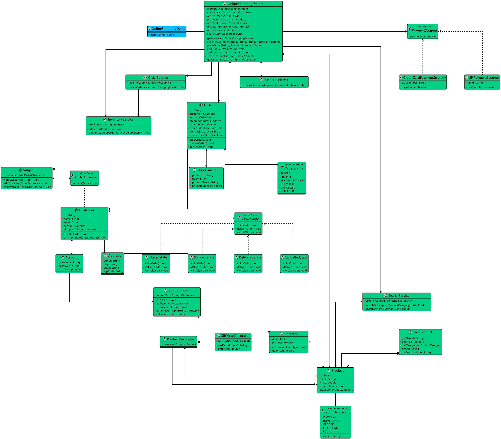
Key Classes & Architectural Rationale
1. The **User** class represents a user in the online shopping service, with properties such as ID, name, email, password, and a list of orders.
2. The **Product** class represents a product available for purchase, with properties like ID, name, description, price, and quantity. It provides methods to update the quantity and check product availability.
3. The **Order** class represents an order placed by a user, containing properties such as ID, user, order items, total amount, and order status. It calculates the total amount based on the order items.
4. The **OrderItem** class represents an item within an order, consisting of the product and the quantity ordered.
5. The **OrderStatus** enum represents the different statuses an order can have, such as pending, processing, shipped, delivered, or cancelled.
6. The **ShoppingCart** class represents the user's shopping cart, allowing them to add, remove, and update item quantities. It maintains a map of product IDs and order items.
7. The **Payment** interface defines the contract for processing payments, with a concrete implementation CreditCardPayment.
8. The **OnlineShoppingService** class is the central component of the online shopping service. It follows the Singleton pattern to ensure only one instance of the service exists. It provides methods to register users, add products, search products, place orders, and retrieve order information. It handles concurrent access to shared resources using synchronization.
9. The **OnlineShoppingServiceDemo** class demonstrates the usage of the online shopping service by registering users, adding products, searching for products, placing orders, and viewing order history.
# === [enums.py] ===fromenumimportEnumclassOrderStatus(Enum):PENDING_PAYMENT="PENDING_PAYMENT"PLACED="PLACED"SHIPPED="SHIPPED"DELIVERED="DELIVERED"CANCELLED="CANCELLED"RETURNED="RETURNED"classProductCategory(Enum):ELECTRONICS="ELECTRONICS"BOOKS="BOOKS"CLOTHING="CLOTHING"HOME_GOODS="HOME_GOODS"GROCERY="GROCERY"# === [order_status.py] ===classOrderStatus(Enum):PENDING="PENDING"PROCESSING="PROCESSING"SHIPPED="SHIPPED"DELIVERED="DELIVERED"CANCELLED="CANCELLED"# === [account.py] ===classAccount:def__init__(self,username:str,password:str):self.username=usernameself.password=passwordself.cart=ShoppingCart()defget_cart(self)->ShoppingCart:returnself.cart# === [cart_item.py] ===fromtypingimportTYPE_CHECKINGifTYPE_CHECKING:classCartItem:def__init__(self,product:Product,quantity:int):self.product=productself.quantity=quantitydefget_product(self)->Product:returnself.productdefget_quantity(self)->int:returnself.quantitydefincrement_quantity(self,amount:int)->None:self.quantity+=amountdefget_price(self)->float:returnself.product.get_price()*self.quantity# === [order_line_item.py] ===classOrderLineItem:def__init__(self,product_id:str,product_name:str,quantity:int,price_at_purchase:float):self.product_id=product_idself.product_name=product_nameself.quantity=quantityself.price_at_purchase=price_at_purchasedefget_product_id(self)->str:returnself.product_iddefget_quantity(self)->int:returnself.quantity# === [shopping_cart.py] ===fromtypingimportDictclassShoppingCart:def__init__(self):self.items:Dict[str,CartItem]={}defadd_item(self,product:Product,quantity:int)->None:ifproduct.get_id()inself.items:self.items[product.get_id()].increment_quantity(quantity)else:self.items[product.get_id()]=CartItem(product,quantity)defremove_item(self,product_id:str)->None:ifproduct_idinself.items:delself.items[product_id]defget_items(self)->Dict[str,CartItem]:returnself.items.copy()defcalculate_total(self)->float:returnsum(item.get_price()foriteminself.items.values())defclear_cart(self)->None:self.items.clear()# === [order_states.py] ===fromabcimportABC,abstractmethodifTYPE_CHECKING:classOrderState(ABC):@abstractmethoddefship(self,order:'Order')->None:pass@abstractmethoddefdeliver(self,order:'Order')->None:pass@abstractmethoddefcancel(self,order:'Order')->None:passclassPlacedState(OrderState):defship(self,order:'Order')->None:print(f"Shipping order {order.get_id()}")order.set_status(OrderStatus.SHIPPED)order.set_state(ShippedState())defdeliver(self,order:'Order')->None:print("Cannot deliver an order that has not been shipped.")defcancel(self,order:'Order')->None:print(f"Cancelling order {order.get_id()}")order.set_status(OrderStatus.CANCELLED)order.set_state(CancelledState())classShippedState(OrderState):defship(self,order:'Order')->None:print("Order is already shipped.")defdeliver(self,order:'Order')->None:print(f"Delivering order {order.get_id()}")order.set_status(OrderStatus.DELIVERED)order.set_state(DeliveredState())defcancel(self,order:'Order')->None:print("Cannot cancel a shipped order.")classDeliveredState(OrderState):defship(self,order:'Order')->None:print("Order already delivered.")defdeliver(self,order:'Order')->None:print("Order already delivered.")defcancel(self,order:'Order')->None:print("Cannot cancel a delivered order.")classCancelledState(OrderState):defship(self,order:'Order')->None:print("Cannot ship a cancelled order.")defdeliver(self,order:'Order')->None:print("Cannot deliver a cancelled order.")defcancel(self,order:'Order')->None:print("Order is already cancelled.")# === [payment_strategy.py] ===classPaymentStrategy(ABC):@abstractmethoddefpay(self,amount:float)->bool:passclassUPIPaymentStrategy(PaymentStrategy):def__init__(self,upi_id:str):self.upi_id=upi_iddefpay(self,amount:float)->bool:print(f"Processing UPI payment of ${amount:.2f} with upi id {self.upi_id}.")returnTrueclassCreditCardPaymentStrategy(PaymentStrategy):def__init__(self,card_number:str):self.card_number=card_numberdefpay(self,amount:float)->bool:print(f"Processing credit card payment of ${amount:.2f} with card {self.card_number}.")returnTrue# === [address.py] ===classAddress:def__init__(self,street:str,city:str,state:str,zip_code:str):self.street=streetself.city=cityself.state=stateself.zip_code=zip_codedef__str__(self)->str:returnf"{self.street}, {self.city}, {self.state} {self.zip_code}"# === [customer.py] ===importuuidifTYPE_CHECKING:classCustomer(OrderObserver):def__init__(self,name:str,email:str,password:str,shipping_address:Address):self.id=str(uuid.uuid4())self.name=nameself.email=emailself.account=Account(email,password)self.shipping_address=shipping_addressdefupdate(self,order:'Order')->None:print(f"[Notification for {self.name}]: Your order #{order.get_id()} status has been updated to: {order.get_status().value}.")defget_id(self)->str:returnself.iddefget_name(self)->str:returnself.namedefget_account(self)->'Account':returnself.accountdefget_shipping_address(self)->Address:returnself.shipping_addressdefset_shipping_address(self,address:Address)->None:self.shipping_address=address# === [exceptions.py] ===classOutOfStockException(Exception):def__init__(self,message:str):super().__init__(message)# === [order.py] ===fromtypingimportListfromdatetimeimportdatetimeclassOrder(Subject):def__init__(self,customer:Customer,items:List[OrderLineItem],shipping_address:Address,total_amount:float):super().__init__()self.id=str(uuid.uuid4())[:8]self.customer=customerself.items=itemsself.shipping_address=shipping_addressself.total_amount=total_amountself.order_date=datetime.now()self.status=OrderStatus.PLACEDself.current_state=PlacedState()self.add_observer(customer)defship_order(self)->None:self.current_state.ship(self)defdeliver_order(self)->None:self.current_state.deliver(self)defcancel_order(self)->None:self.current_state.cancel(self)defget_id(self)->str:returnself.iddefget_status(self)->OrderStatus:returnself.statusdefset_state(self,state:OrderState)->None:self.current_state=statedefset_status(self,status:OrderStatus)->None:self.status=statusself.notify_observers(self)defget_items(self)->List[OrderLineItem]:returnself.items# === [order_observer.py] ===ifTYPE_CHECKING:classOrderObserver(ABC):@abstractmethoddefupdate(self,order:'Order')->None:passclassSubject:def__init__(self):self.observers:List[OrderObserver]=[]defadd_observer(self,observer:OrderObserver)->None:self.observers.append(observer)defremove_observer(self,observer:OrderObserver)->None:ifobserverinself.observers:self.observers.remove(observer)defnotify_observers(self,order:'Order')->None:forobserverinself.observers:observer.update(order)# === [payment.py] ===classPayment(ABC):@abstractmethoddefprocess_payment(self,amount:float)->bool:pass# === [product.py] ===classProduct(ABC):def__init__(self):self.id:str=""self.name:str=""self.description:str=""self.price:float=0.0self.category:ProductCategory=None@abstractmethoddefget_id(self)->str:pass@abstractmethoddefget_name(self)->str:pass@abstractmethoddefget_description(self)->str:pass@abstractmethoddefget_price(self)->float:pass@abstractmethoddefget_category(self)->ProductCategory:passclassBaseProduct:def__init__(self,product_id:str,name:str,description:str,price:float,category:ProductCategory):self.id=product_idself.name=nameself.description=descriptionself.price=priceself.category=categorydefget_id(self)->str:returnself.iddefget_name(self)->str:returnself.namedefget_description(self)->str:returnself.descriptiondefget_price(self)->float:returnself.pricedefget_category(self)->ProductCategory:returnself.categoryclassBuilder:def__init__(self,name:str,price:float):self.name=nameself.price=priceself.description=""self.category=Nonedefwith_description(self,description:str)->'Product.Builder':self.description=descriptionreturnselfdefwith_category(self,category:ProductCategory)->'Product.Builder':self.category=categoryreturnselfdefbuild(self)->'Product':returnProduct.BaseProduct(str(uuid.uuid4()),self.name,self.description,self.price,self.category)# === [product_decorators.py] ===classProductDecorator(Product):def__init__(self,decorated_product:Product):super().__init__()self.decorated_product=decorated_productdefget_id(self)->str:returnself.decorated_product.get_id()defget_name(self)->str:returnself.decorated_product.get_name()defget_price(self)->float:returnself.decorated_product.get_price()defget_description(self)->str:returnself.decorated_product.get_description()defget_category(self)->ProductCategory:returnself.decorated_product.get_category()classGiftWrapDecorator(ProductDecorator):GIFT_WRAP_COST=5.00def__init__(self,product:Product):super().__init__(product)defget_price(self)->float:returnsuper().get_price()+self.GIFT_WRAP_COSTdefget_description(self)->str:returnsuper().get_description()+" (Gift Wrapped)"# === [inventory_service.py] ===fromcollectionsimportdefaultdictfromthreadingimportLockimportthreadingclassInventoryService:def__init__(self):self.stock:Dict[str,int]=defaultdict(int)self.lock=threading.Lock()defadd_stock(self,product:Product,quantity:int)->None:withself.lock:self.stock[product.get_id()]+=quantitydefupdate_stock_for_order(self,items:List[OrderLineItem])->None:withself.lock:# First, check if all items are in stockforiteminitems:ifself.stock[item.get_product_id()]<item.get_quantity():raiseOutOfStockException(f"Not enough stock for product ID: {item.get_product_id()}")# If all checks pass, deduct the stockforiteminitems:self.stock[item.get_product_id()]-=item.get_quantity()# === [online_shopping_system.py] ===fromtypingimportDict,List,OptionalclassOnlineShoppingSystem:_instance=None_lock=threading.Lock()def__new__(cls):ifcls._instanceisNone:withcls._lock:ifcls._instanceisNone:cls._instance=super().__new__(cls)returncls._instancedef__init__(self):ifhasattr(self,'initialized'):returnself.products:Dict[str,Product]={}self.customers:Dict[str,Customer]={}self.orders:Dict[str,Order]={}self.inventory_service=InventoryService()self.payment_service=PaymentService()self.order_service=OrderService(self.inventory_service)self.search_service=SearchService(self.products.values())self.initialized=True@classmethoddefget_instance(cls)->'OnlineShoppingSystem':returncls()defadd_product(self,product:Product,initial_stock:int)->None:self.products[product.get_id()]=productself.inventory_service.add_stock(product,initial_stock)defregister_customer(self,name:str,email:str,password:str,address:Address)->Customer:customer=Customer(name,email,password,address)self.customers[customer.get_id()]=customerreturncustomerdefadd_to_cart(self,customer_id:str,product_id:str,quantity:int)->None:customer=self.customers[customer_id]product=self.products[product_id]customer.get_account().get_cart().add_item(product,quantity)defget_customer_cart(self,customer_id:str)->ShoppingCart:customer=self.customers[customer_id]returncustomer.get_account().get_cart()defsearch_products(self,name:str)->List[Product]:returnself.search_service.search_by_name(name)defplace_order(self,customer_id:str,payment_strategy:PaymentStrategy)->Optional[Order]:customer=self.customers[customer_id]cart=customer.get_account().get_cart()ifnotcart.get_items():print("Cannot place an order with an empty cart.")returnNone# 1. Process paymentpayment_success=self.payment_service.process_payment(payment_strategy,cart.calculate_total())ifnotpayment_success:print("Payment failed. Please try again.")returnNone# 2. Create order and update inventorytry:order=self.order_service.create_order(customer,cart)self.orders[order.get_id()]=order# 3. Clear the cartcart.clear_cart()returnorderexceptExceptionase:print(f"Order placement failed: {e}")returnNone# === [order_service.py] ===ifTYPE_CHECKING:classOrderService:def__init__(self,inventory_service:InventoryService):self.inventory_service=inventory_servicedefcreate_order(self,customer:Customer,cart:ShoppingCart)->Order:order_items=[OrderLineItem(cart_item.get_product().get_id(),cart_item.get_product().get_name(),cart_item.get_quantity(),cart_item.get_product().get_price())forcart_itemincart.get_items().values()]self.inventory_service.update_stock_for_order(order_items)returnOrder(customer,order_items,customer.get_shipping_address(),cart.calculate_total())# === [payment_service.py] ===classPaymentService:defprocess_payment(self,strategy:PaymentStrategy,amount:float)->bool:returnstrategy.pay(amount)# === [search_service.py] ===fromtypingimportCollection,ListclassSearchService:def__init__(self,product_catalog:Collection[Product]):self.product_catalog=product_catalogdefsearch_by_name(self,name:str)->List[Product]:return[pforpinself.product_catalogifname.lower()inp.get_name().lower()]defsearch_by_category(self,category:ProductCategory)->List[Product]:return[pforpinself.product_catalogifp.get_category()==category]# === [online_shopping_demo.py] ===classOnlineShoppingDemo:@staticmethoddefmain():# System Setup (Singleton and Services)system=OnlineShoppingSystem.get_instance()# Create and Add Products to Catalog (Builder Pattern)laptop=Product.Builder("Dell XPS 15",1499.99) \.with_description("A powerful and sleek laptop.") \.with_category(ProductCategory.ELECTRONICS) \.build()book=Product.Builder("The Pragmatic Programmer",45.50) \.with_description("A classic book for software developers.") \.with_category(ProductCategory.BOOKS) \.build()system.add_product(laptop,10)# 10 laptops in stocksystem.add_product(book,50)# 50 books in stock# Register a Customeralice_address=Address("123 Main St","Anytown","CA","12345")alice=system.register_customer("Alice","alice@example.com","password123",alice_address)# Alice Shopsprint("--- Alice starts shopping ---")# Alice adds a laptop to her cartsystem.add_to_cart(alice.get_id(),laptop.get_id(),1)print("Alice added a laptop to her cart.")# Alice decides to gift-wrap the book (Decorator Pattern)gift_wrapped_book=GiftWrapDecorator(book)system.add_to_cart(alice.get_id(),gift_wrapped_book.get_id(),1)print(f"Alice added a gift-wrapped book. Original price: ${book.get_price():.2f}, New price: ${gift_wrapped_book.get_price():.2f}")alice_cart=system.get_customer_cart(alice.get_id())print(f"Alice's cart total: ${alice_cart.calculate_total():.2f}")# Alice Checks Outprint("\n--- Alice proceeds to checkout ---")alice_order=system.place_order(alice.get_id(),CreditCardPaymentStrategy("1234-5678-9876-5432"))ifalice_orderisNone:print("Order placement failed.")returnprint(f"Order #{alice_order.get_id()} placed successfully for Alice.")# Order State and Notifications (State, Observer Patterns)print("\n--- Order processing starts ---")# The warehouse ships the orderalice_order.ship_order()# This will trigger a notification to Alice# The delivery service marks the order as deliveredalice_order.deliver_order()# This will also trigger a notification# Try to cancel a delivered order (State pattern prevents this)alice_order.cancel_order()print("\n--- Out of Stock Scenario ---")bob=system.register_customer("Bob","bob@example.com","pass123",alice_address)# Bob tries to buy 15 laptops, but only 9 are left (1 was bought by Alice)system.add_to_cart(bob.get_id(),laptop.get_id(),15)bob_order=system.place_order(bob.get_id(),UPIPaymentStrategy("testupi@hdfc"))ifbob_orderisNone:print("Bob's order was correctly prevented due to insufficient stock.")if__name__=="__main__":OnlineShoppingDemo.main()
Online Stock Brokerage (Zerodha)
Order Book Matching (FIFO)Limit & Market OrdersPortfolio Position Tracking
System Requirements
The online stock brokerage system should allow users to create and manage their trading accounts.
Users should be able to buy and sell stocks, as well as view their portfolio and transaction history.
The system should provide real-time stock quotes and market data to users.
The system should handle order placement, execution, and settlement processes.
The system should enforce various business rules and validations, such as checking account balances and stock availability.
The system should handle concurrent user requests and ensure data consistency and integrity.
The system should be scalable and able to handle a large number of users and transactions.
The system should be secure and protect sensitive user information.
📐 UML Class DiagramSystem Architecture
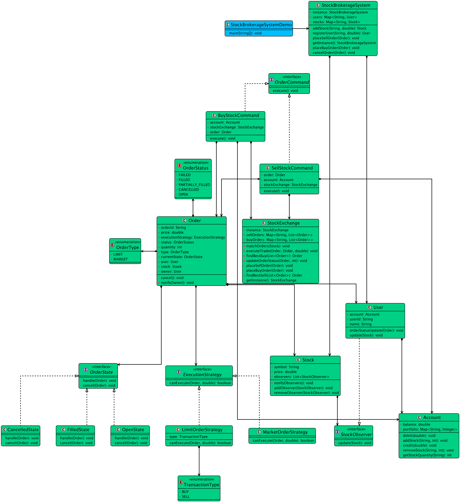
Key Classes & Architectural Rationale
1. The **User** class represents a user of the stock brokerage system, with properties such as user ID, name, and email.
2. The **Account** class represents a user's trading account, with properties like account ID, associated user, and balance. It provides methods for depositing and withdrawing funds.
3. The **Stock** class represents a stock that can be traded, with properties such as symbol, name, and price. It provides a method for updating the stock price.
4. The **Order** class is an abstract base class representing an order placed by a user. It contains common properties such as order ID, associated account, stock, quantity, price, and order status. The execute() method is declared as abstract, to be implemented by concrete order classes.
5. The **BuyOrder** and **SellOrder** classes are concrete implementations of the Order class, representing buy and sell orders respectively. They provide the implementation for the execute() method specific to each order type.
6. The **OrderStatus** enum represents the possible statuses of an order, such as PENDING, EXECUTED, or REJECTED.
7. The **Portfolio** class represents a user's portfolio, which holds the stocks owned by the user. It provides methods for adding and removing stocks from the portfolio.
8. The **StockBroker** class is the central component of the stock brokerage system. It follows the Singleton pattern to ensure a single instance of the stock broker. It manages user accounts, stocks, and order processing. It provides methods for creating accounts, adding stocks, placing orders, and processing orders.
9. The **InsufficientFundsException** and **InsufficientStockException** classes are custom exceptions used to handle insufficient funds and insufficient stock scenarios respectively.
10. The **StockBrokerageSystem** class serves as the entry point of the application and demonstrates the usage of the stock brokerage system.
# === [enums.py] ===fromenumimportEnumclassOrderType(Enum):MARKET="MARKET"LIMIT="LIMIT"classTransactionType(Enum):BUY="BUY"SELL="SELL"classOrderStatus(Enum):OPEN="OPEN"PARTIALLY_FILLED="PARTIALLY_FILLED"FILLED="FILLED"CANCELLED="CANCELLED"FAILED="FAILED"# === [account.py] ===importthreadingfromtypingimportDictclassAccount:def__init__(self,initial_cash:float):self.balance=initial_cashself.portfolio:Dict[str,int]={}# Stock symbol -> quantityself.lock=threading.Lock()defdebit(self,amount:float)->None:withself.lock:ifself.balance<amount:raiseInsufficientFundsException(f"Insufficient funds to debit {amount}")self.balance-=amountdefcredit(self,amount:float)->None:withself.lock:self.balance+=amountdefadd_stock(self,symbol:str,quantity:int)->None:withself.lock:self.portfolio[symbol]=self.portfolio.get(symbol,0)+quantitydefremove_stock(self,symbol:str,quantity:int)->None:withself.lock:current_quantity=self.portfolio.get(symbol,0)ifcurrent_quantity<quantity:raiseInsufficientStockException(f"Not enough {symbol} stock to sell.")self.portfolio[symbol]=current_quantity-quantitydefget_balance(self)->float:returnself.balancedefget_portfolio(self)->Dict[str,int]:returnself.portfolio.copy()defget_stock_quantity(self,symbol:str)->int:returnself.portfolio.get(symbol,0)# === [user.py] ===importuuidclassUser(StockObserver):def__init__(self,name:str,initial_cash:float):self.user_id=str(uuid.uuid4())self.name=nameself.account=Account(initial_cash)defget_user_id(self)->str:returnself.user_iddefget_name(self)->str:returnself.namedefget_account(self)->Account:returnself.accountdefupdate(self,stock:Stock)->None:print(f"[Notification for {self.name}] Stock {stock.get_symbol()} price updated to: ${stock.get_price():.2f}")deforder_status_update(self,order:'Order')->None:print(f"[Order Notification for {self.name}] Order {order.get_order_id()} for {order.get_stock().get_symbol()} is now {order.get_status().value}.")# === [execution_strategy.py] ===fromabcimportABC,abstractmethodfromtypingimportTYPE_CHECKINGifTYPE_CHECKING:classExecutionStrategy(ABC):@abstractmethoddefcan_execute(self,order:'Order',market_price:float)->bool:passclassLimitOrderStrategy(ExecutionStrategy):def__init__(self,transaction_type:TransactionType):self.type=transaction_typedefcan_execute(self,order:'Order',market_price:float)->bool:ifself.type==TransactionType.BUY:# Buy if market price is less than or equal to limit pricereturnmarket_price<=order.get_price()else:# SELL# Sell if market price is greater than or equal to limit pricereturnmarket_price>=order.get_price()classMarketOrderStrategy(ExecutionStrategy):defcan_execute(self,order:'Order',market_price:float)->bool:returnTrue# Market orders can always execute# === [order_states.py] ===ifTYPE_CHECKING:classOrderState(ABC):@abstractmethoddefhandle(self,order:'Order')->None:pass@abstractmethoddefcancel(self,order:'Order')->None:passclassOpenState(OrderState):defhandle(self,order:'Order')->None:print("Order is open and waiting for execution.")defcancel(self,order:'Order')->None:order.set_status(OrderStatus.CANCELLED)order.set_state(CancelledState())print(f"Order {order.get_order_id()} has been cancelled.")classFilledState(OrderState):defhandle(self,order:'Order')->None:print("Order is already filled.")defcancel(self,order:'Order')->None:print("Cannot cancel a filled order.")classCancelledState(OrderState):defhandle(self,order:'Order')->None:print("Order is cancelled.")defcancel(self,order:'Order')->None:print("Order is already cancelled.")# === [exceptions.py] ===classInsufficientFundsException(Exception):def__init__(self,message:str):super().__init__(message)classInsufficientStockException(Exception):def__init__(self,message:str):super().__init__(message)# === [order.py] ===ifTYPE_CHECKING:classOrder:def__init__(self,order_id:str,user:'User',stock:Stock,order_type:OrderType,quantity:int,price:float,execution_strategy:ExecutionStrategy,owner:'User'):self.order_id=order_idself.user=userself.stock=stockself.type=order_typeself.quantity=quantityself.price=price# Limit price for Limit ordersself.execution_strategy=execution_strategyself.owner=ownerself.current_state=OpenState()# Initial stateself.status=OrderStatus.OPENdefcancel(self)->None:self.current_state.cancel(self)defget_order_id(self)->str:returnself.order_iddefget_user(self)->'User':returnself.userdefget_stock(self)->Stock:returnself.stockdefget_type(self)->OrderType:returnself.typedefget_quantity(self)->int:returnself.quantitydefget_price(self)->float:returnself.pricedefget_status(self)->OrderStatus:returnself.statusdefget_execution_strategy(self)->ExecutionStrategy:returnself.execution_strategydefset_state(self,state:OrderState)->None:self.current_state=statedefset_status(self,status:OrderStatus)->None:self.status=statusself._notify_owner()def_notify_owner(self)->None:ifself.owner:self.owner.order_status_update(self)# === [order_builder.py] ===fromtypingimportOptionalclassOrderBuilder:def__init__(self):self.user:Optional[User]=Noneself.stock:Optional[Stock]=Noneself.type:Optional[OrderType]=Noneself.transaction_type:Optional[TransactionType]=Noneself.quantity:int=0self.price:float=0.0deffor_user(self,user:User)->'OrderBuilder':self.user=userreturnselfdefwith_stock(self,stock:Stock)->'OrderBuilder':self.stock=stockreturnselfdefbuy(self,quantity:int)->'OrderBuilder':self.transaction_type=TransactionType.BUYself.quantity=quantityreturnselfdefsell(self,quantity:int)->'OrderBuilder':self.transaction_type=TransactionType.SELLself.quantity=quantityreturnselfdefat_market_price(self)->'OrderBuilder':self.type=OrderType.MARKETself.price=0# Not needed for market orderreturnselfdefwith_limit(self,limit_price:float)->'OrderBuilder':self.type=OrderType.LIMITself.price=limit_pricereturnselfdefbuild(self)->Order:execution_strategy=MarketOrderStrategy()ifself.type==OrderType.MARKETelseLimitOrderStrategy(self.transaction_type)returnOrder(str(uuid.uuid4()),self.user,self.stock,self.type,self.quantity,self.price,execution_strategy,self.user)# === [order_command.py] ===classOrderCommand(ABC):@abstractmethoddefexecute(self)->None:passclassBuyStockCommand(OrderCommand):def__init__(self,account:Account,order:Order):self.account=accountself.order=orderself.stock_exchange=StockExchange.get_instance()defexecute(self)->None:# For market order, we can't pre-check funds perfectly.# For limit order, we can pre-authorize the amount.estimated_cost=self.order.get_quantity()*self.order.get_price()ifself.order.get_type()==OrderType.LIMITandself.account.get_balance()<estimated_cost:raiseInsufficientFundsException("Not enough cash to place limit buy order.")print(f"Placing BUY order {self.order.get_order_id()} for {self.order.get_quantity()} shares of {self.order.get_stock().get_symbol()}.")self.stock_exchange.place_buy_order(self.order)classSellStockCommand(OrderCommand):def__init__(self,account:Account,order:Order):self.account=accountself.order=orderself.stock_exchange=StockExchange.get_instance()defexecute(self)->None:ifself.account.get_stock_quantity(self.order.get_stock().get_symbol())<self.order.get_quantity():raiseInsufficientStockException("Not enough stock to place sell order.")print(f"Placing SELL order {self.order.get_order_id()} for {self.order.get_quantity()} shares of {self.order.get_stock().get_symbol()}.")self.stock_exchange.place_sell_order(self.order)# === [stock.py] ===fromtypingimportListclassStock:def__init__(self,symbol:str,initial_price:float):self.symbol=symbolself.price=initial_priceself.observers:List[StockObserver]=[]defget_symbol(self)->str:returnself.symboldefget_price(self)->float:returnself.pricedefset_price(self,new_price:float)->None:ifself.price!=new_price:self.price=new_priceself._notify_observers()defadd_observer(self,observer:StockObserver)->None:self.observers.append(observer)defremove_observer(self,observer:StockObserver)->None:ifobserverinself.observers:self.observers.remove(observer)def_notify_observers(self)->None:forobserverinself.observers:observer.update(self)# === [stock_exchange.py] ===fromtypingimportDict,List,OptionalfromcollectionsimportdefaultdictclassStockExchange:_instance:Optional['StockExchange']=None_lock=threading.Lock()def__new__(cls):ifcls._instanceisNone:withcls._lock:ifcls._instanceisNone:cls._instance=super().__new__(cls)returncls._instancedef__init__(self):ifhasattr(self,'initialized'):returnself.buy_orders:Dict[str,List[Order]]=defaultdict(list)self.sell_orders:Dict[str,List[Order]]=defaultdict(list)self.match_lock=threading.Lock()self.initialized=True@classmethoddefget_instance(cls)->'StockExchange':returncls()defplace_buy_order(self,order:Order)->None:self.buy_orders[order.get_stock().get_symbol()].append(order)self._match_orders(order.get_stock())defplace_sell_order(self,order:Order)->None:self.sell_orders[order.get_stock().get_symbol()].append(order)self._match_orders(order.get_stock())def_match_orders(self,stock:Stock)->None:withself.match_lock:# Critical section to prevent race conditions during matchingbuys=self.buy_orders.get(stock.get_symbol(),[])sells=self.sell_orders.get(stock.get_symbol(),[])ifnotbuysornotsells:returnmatch_found=Truewhilematch_found:match_found=Falsebest_buy=self._find_best_buy(buys)best_sell=self._find_best_sell(sells)ifbest_buyandbest_sell:buy_price=stock.get_price()ifbest_buy.get_type()==OrderType.MARKETelsebest_buy.get_price()sell_price=stock.get_price()ifbest_sell.get_type()==OrderType.MARKETelsebest_sell.get_price()ifbuy_price>=sell_price:self._execute_trade(best_buy,best_sell,sell_price)# Trade at the seller's asking pricematch_found=Truedef_execute_trade(self,buy_order:Order,sell_order:Order,trade_price:float)->None:print(f"--- Executing Trade for {buy_order.get_stock().get_symbol()} at ${trade_price:.2f} ---")buyer=buy_order.get_user()seller=sell_order.get_user()trade_quantity=min(buy_order.get_quantity(),sell_order.get_quantity())total_cost=trade_quantity*trade_price# Perform transactionbuyer.get_account().debit(total_cost)buyer.get_account().add_stock(buy_order.get_stock().get_symbol(),trade_quantity)seller.get_account().credit(total_cost)seller.get_account().remove_stock(sell_order.get_stock().get_symbol(),trade_quantity)# Update ordersself._update_order_status(buy_order,trade_quantity)self._update_order_status(sell_order,trade_quantity)# Update stock's market price to last traded pricebuy_order.get_stock().set_price(trade_price)print("--- Trade Complete ---")def_update_order_status(self,order:Order,quantity_traded:int)->None:# This is a simplified update logic. A real system would handle partial fills.order.set_status(OrderStatus.FILLED)order.set_state(FilledState())stock_symbol=order.get_stock().get_symbol()# Remove from booksiforderinself.buy_orders[stock_symbol]:self.buy_orders[stock_symbol].remove(order)iforderinself.sell_orders[stock_symbol]:self.sell_orders[stock_symbol].remove(order)def_find_best_buy(self,buys:List[Order])->Optional[Order]:open_orders=[oforoinbuysifo.get_status()==OrderStatus.OPEN]ifnotopen_orders:returnNonereturnmax(open_orders,key=lambdao:o.get_price())# Highest limit price is bestdef_find_best_sell(self,sells:List[Order])->Optional[Order]:open_orders=[oforoinsellsifo.get_status()==OrderStatus.OPEN]ifnotopen_orders:returnNonereturnmin(open_orders,key=lambdao:o.get_price())# Lowest limit price is best# === [stock_observer.py] ===ifTYPE_CHECKING:classStockObserver(ABC):@abstractmethoddefupdate(self,stock:'Stock')->None:pass# === [stock_brokerage_system.py] ===fromtypingimportDict,OptionalclassStockBrokerageSystem:_instance:Optional['StockBrokerageSystem']=None_lock=threading.Lock()def__new__(cls):ifcls._instanceisNone:withcls._lock:ifcls._instanceisNone:cls._instance=super().__new__(cls)returncls._instancedef__init__(self):ifhasattr(self,'initialized'):returnself.users:Dict[str,User]={}self.stocks:Dict[str,Stock]={}self.initialized=True@classmethoddefget_instance(cls)->'StockBrokerageSystem':returncls()defregister_user(self,name:str,initial_amount:float)->User:user=User(name,initial_amount)self.users[user.get_user_id()]=userreturnuserdefadd_stock(self,symbol:str,initial_price:float)->Stock:stock=Stock(symbol,initial_price)self.stocks[stock.get_symbol()]=stockreturnstockdefplace_buy_order(self,order:Order)->None:user=order.get_user()command=BuyStockCommand(user.get_account(),order)command.execute()defplace_sell_order(self,order:Order)->None:user=order.get_user()command=SellStockCommand(user.get_account(),order)command.execute()defcancel_order(self,order:Order)->None:order.cancel()# === [stock_brokerage_system_demo.py] ===importtimedefprint_account_status(user:User)->None:print(f"Member: {user.get_name()}, Cash: ${user.get_account().get_balance():.2f}, Portfolio: {user.get_account().get_portfolio()}")classStockBrokerageSystemDemo:defrun():# System Setupsystem=StockBrokerageSystem.get_instance()# Create Stocksapple=system.add_stock("AAPL",150.00)google=system.add_stock("GOOG",2800.00)# Create Members (Users)alice=system.register_user("Alice",20000.00)bob=system.register_user("Bob",25000.00)# Bob already owns some Apple stockbob.get_account().add_stock("AAPL",50)# Members subscribe to stock notifications (Observer Pattern)apple.add_observer(alice)google.add_observer(alice)apple.add_observer(bob)print("--- Initial State ---")print_account_status(alice)print_account_status(bob)print("\n--- Trading Simulation Starts ---\n")# SCENARIO 1: Limit Order Matchprint("--- SCENARIO 1: Alice places a limit buy, Bob places a limit sell that matches ---")# Alice wants to buy 10 shares of AAPL if the price is $150.50 or lessalice_buy_order=OrderBuilder() \.for_user(alice) \.buy(10) \.with_stock(apple) \.with_limit(150.50) \.build()system.place_buy_order(alice_buy_order)# Bob wants to sell 20 of his shares if the price is $150.50 or morebob_sell_order=OrderBuilder() \.for_user(bob) \.sell(20) \.with_stock(apple) \.with_limit(150.50) \.build()system.place_sell_order(bob_sell_order)# The exchange will automatically match and execute this trade.# Let's check the status after the trade.time.sleep(0.1)# Give time for notifications to printprint("\n--- Account Status After Trade 1 ---")print_account_status(alice)print_account_status(bob)# SCENARIO 2: Price Update triggers notificationsprint("\n--- SCENARIO 2: Market price of GOOG changes ---")google.set_price(2850.00)# Alice will get a notification# SCENARIO 3: Order Cancellation (State Pattern)print("\n--- SCENARIO 3: Alice places an order and then cancels it ---")alice_cancel_order=OrderBuilder() \.for_user(alice) \.buy(5) \.with_stock(google) \.with_limit(2700.00) \.build()# Price is too low, so it won't execute immediatelysystem.place_buy_order(alice_cancel_order)print(f"Order status before cancellation: {alice_cancel_order.get_status().value}")system.cancel_order(alice_cancel_order)print(f"Order status after cancellation attempt: {alice_cancel_order.get_status().value}")# Now try to cancel an already filled orderprint("\n--- Trying to cancel an already FILLED order (State Pattern) ---")print(f"Bob's sell order status: {bob_sell_order.get_status().value}")system.cancel_order(bob_sell_order)# This should failprint(f"Bob's sell order status after cancel attempt: {bob_sell_order.get_status().value}")if__name__=="__main__":StockBrokerageSystemDemo.run()
Online Auction System (eBay)
Observer Pattern (Bid Notifications)Auction Timer State MachineReserve Price Validation
System Requirements
The online auction system should allow users to register and log in to their accounts.
Users should be able to create new auction listings with details such as item name, description, starting price, and auction duration.
Users should be able to browse and search for auction listings based on various criteria (e.g., item name, category, price range).
Users should be able to place bids on active auction listings.
The system should automatically update the current highest bid and notify the bidders accordingly.
The auction should end when the specified duration is reached, and the highest bidder should be declared the winner.
The system should handle concurrent access to auction listings and ensure data consistency.
The system should be extensible to accommodate future enhancements and new features.
📐 UML Class DiagramSystem Architecture
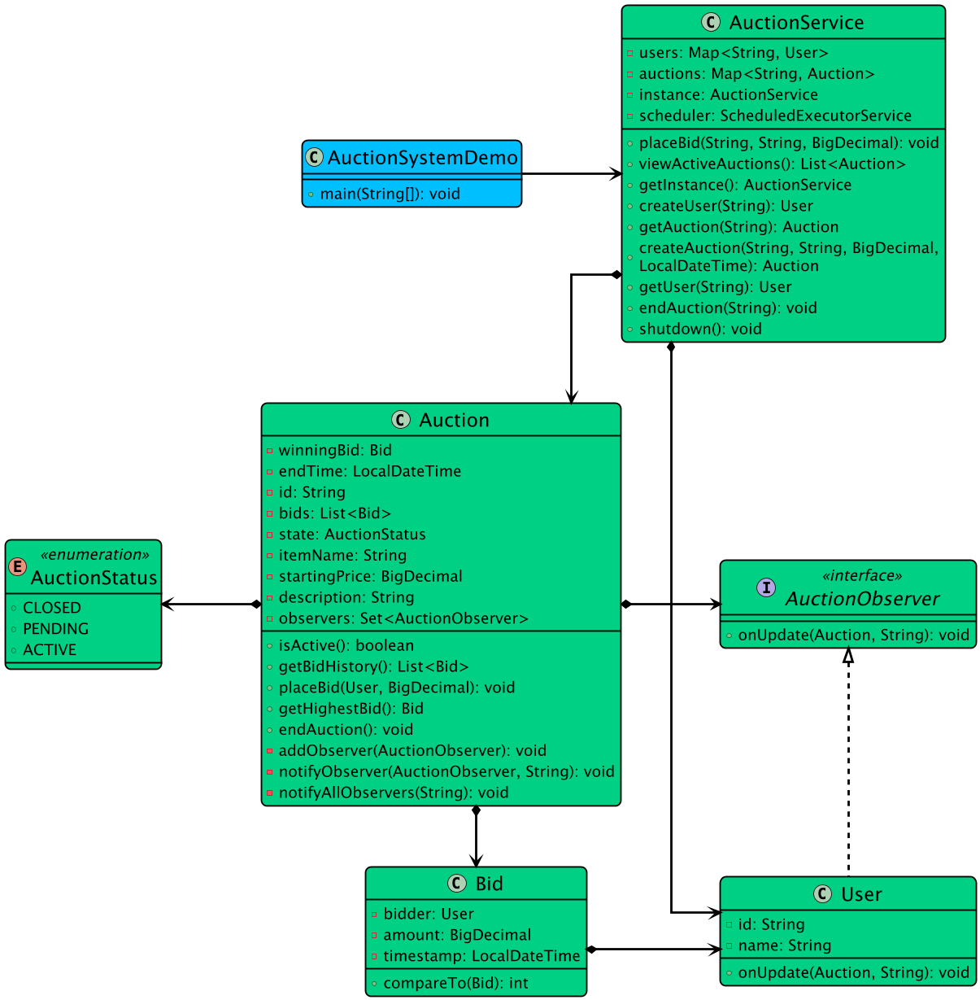
Key Classes & Architectural Rationale
1. The **User** class represents a user in the online auction system, with properties such as id, username, and email.
2. The **AuctionStatus** enum defines the possible states of an auction listing, such as active and closed.
3. The **AuctionListing** class represents an auction listing in the system, with properties like id, item name, description, starting price, duration, seller, current highest bid, and a list of bids.
4. The **Bid** class represents a bid placed by a user on an auction listing, with properties such as id, bidder, amount, and timestamp.
5. The **AuctionSystem** class is the core of the online auction system and follows the Singleton pattern to ensure a single instance of the auction system.
6. The AuctionSystem class uses concurrent data structures (ConcurrentHashMap and CopyOnWriteArrayList) to handle concurrent access to auction listings and ensure thread safety.
7. The AuctionSystem class provides methods for registering users, creating auction listings, searching auction listings, and placing bids.
8. The **AuctionSystemDemo** class serves as the entry point of the application and demonstrates the usage of the online auction system.
# === [user.py] ===importuuidclassUser(AuctionObserver):def__init__(self,name:str):self.id=str(uuid.uuid4())self.name=namedefget_id(self)->str:returnself.iddefget_name(self)->str:returnself.namedefon_update(self,auction:'Auction',message:str):print(f"--- Notification for {self.name} ---")print(f"Auction: {auction.get_item_name()}")print(f"Message: {message}")print("---------------------------\n")# === [auction_state.py] ===fromenumimportEnumclassAuctionState(Enum):PENDING="PENDING"ACTIVE="ACTIVE"CLOSED="CLOSED"# === [auction.py] ===fromtypingimportList,Set,OptionalfromdatetimeimportdatetimefromdecimalimportDecimalimportthreadingfromtypingimportTYPE_CHECKINGifTYPE_CHECKING:classAuction:def__init__(self,item_name:str,description:str,starting_price:Decimal,end_time:datetime):self.id=str(uuid.uuid4())self.item_name=item_nameself.description=descriptionself.starting_price=starting_priceself.end_time=end_timeself.bids:List[Bid]=[]self.observers:Set[AuctionObserver]=set()self.state=AuctionState.ACTIVEself.winning_bid:Optional[Bid]=Noneself._lock=threading.RLock()defplace_bid(self,bidder:'User',amount:Decimal):withself._lock:ifself.state!=AuctionState.ACTIVE:raiseException("Auction is not active.")ifdatetime.now()>self.end_time:self.end_auction()raiseException("Auction has already ended.")highest_bid=self.get_highest_bid()current_max_amount=self.starting_priceifhighest_bidisNoneelsehighest_bid.get_amount()ifamount<=current_max_amount:raiseValueError("Bid must be higher than the current highest bid.")previous_highest_bidder=highest_bid.get_bidder()ifhighest_bidisnotNoneelseNonenew_bid=Bid(bidder,amount)self.bids.append(new_bid)self.add_observer(bidder)print(f"SUCCESS: {bidder.get_name()} placed a bid of ${amount:.2f} on '{self.item_name}'.")ifprevious_highest_bidderisnotNoneandprevious_highest_bidder!=bidder:self.notify_observer(previous_highest_bidder,f"You have been outbid on '{self.item_name}'! The new highest bid is ${amount:.2f}.")defend_auction(self):withself._lock:ifself.state!=AuctionState.ACTIVE:returnself.state=AuctionState.CLOSEDself.winning_bid=self.get_highest_bid()ifself.winning_bidisnotNone:end_message=f"Auction for '{self.item_name}' has ended. Winner is {self.winning_bid.get_bidder().get_name()} with a bid of ${self.winning_bid.get_amount():.2f}!"else:end_message=f"Auction for '{self.item_name}' has ended. There were no bids."print(f"\n{end_message.upper()}")self.notify_all_observers(end_message)defget_highest_bid(self)->Optional[Bid]:ifnotself.bids:returnNonereturnmax(self.bids)defis_active(self)->bool:returnself.state==AuctionState.ACTIVEdefadd_observer(self,observer:'AuctionObserver'):self.observers.add(observer)defnotify_all_observers(self,message:str):forobserverinself.observers:observer.on_update(self,message)defnotify_observer(self,observer:'AuctionObserver',message:str):observer.on_update(self,message)defget_id(self)->str:returnself.iddefget_item_name(self)->str:returnself.item_namedefget_bid_history(self)->List[Bid]:returnself.bids.copy()defget_state(self)->AuctionState:returnself.statedefget_winning_bid(self)->Optional[Bid]:returnself.winning_bid# === [auction_observer.py] ===fromabcimportABC,abstractmethodclassAuctionObserver(ABC):@abstractmethoddefon_update(self,auction:'Auction',message:str):pass# === [bid.py] ===ifTYPE_CHECKING:classBid:def__init__(self,bidder:'User',amount:Decimal):self.bidder=bidderself.amount=amountself.timestamp=datetime.now()defget_bidder(self)->'User':returnself.bidderdefget_amount(self)->Decimal:returnself.amountdefget_timestamp(self)->datetime:returnself.timestampdef__lt__(self,other:'Bid')->bool:ifself.amount!=other.amount:returnself.amount<other.amountreturnself.timestamp>other.timestampdef__eq__(self,other:'Bid')->bool:returnself.amount==other.amountandself.timestamp==other.timestampdef__le__(self,other:'Bid')->bool:returnself<otherorself==otherdef__gt__(self,other:'Bid')->bool:returnnotself<=otherdef__ge__(self,other:'Bid')->bool:returnnotself<otherdef__ne__(self,other:'Bid')->bool:returnnotself==otherdef__str__(self)->str:returnf"Bidder: {self.bidder.get_name()}, Amount: {self.amount:.2f}, Time: {self.timestamp}"# === [auction_service.py] ===fromtypingimportDict,Listfromconcurrent.futuresimportThreadPoolExecutorimporttimeclassAuctionService:_instance=None_lock=threading.Lock()def__init__(self):ifAuctionService._instanceisnotNone:raiseException("This class is a singleton!")self.users:Dict[str,User]={}self.auctions:Dict[str,Auction]={}self.scheduler=ThreadPoolExecutor(max_workers=10)self._shutdown=False@staticmethoddefget_instance():ifAuctionService._instanceisNone:withAuctionService._lock:ifAuctionService._instanceisNone:AuctionService._instance=AuctionService()returnAuctionService._instancedefcreate_user(self,name:str)->User:user=User(name)self.users[user.get_id()]=userreturnuserdefget_user(self,user_id:str)->User:returnself.users[user_id]defcreate_auction(self,item_name:str,description:str,starting_price:Decimal,end_time:datetime)->Auction:auction=Auction(item_name,description,starting_price,end_time)self.auctions[auction.get_id()]=auctiondelay=(end_time-datetime.now()).total_seconds()ifdelay>0:self.scheduler.submit(self._scheduled_end_auction,auction.get_id(),delay)print(f"New auction created for '{item_name}' (ID: {auction.get_id()}), ending at {end_time}.")returnauctiondef_scheduled_end_auction(self,auction_id:str,delay:float):time.sleep(delay)ifnotself._shutdown:self.end_auction(auction_id)defview_active_auctions(self)->List[Auction]:return[auctionforauctioninself.auctions.values()ifauction.is_active()]defplace_bid(self,auction_id:str,bidder_id:str,amount:Decimal):auction=self.get_auction(auction_id)auction.place_bid(self.users[bidder_id],amount)defend_auction(self,auction_id:str):auction=self.get_auction(auction_id)auction.end_auction()defget_auction(self,auction_id:str)->Auction:auction=self.auctions.get(auction_id)ifauctionisNone:raiseKeyError(f"Auction with ID {auction_id} not found.")returnauctiondefshutdown(self):self._shutdown=Trueself.scheduler.shutdown(wait=True)# === [auction_system_demo.py] ===fromtypingimportListfromdatetimeimportdatetime,timedeltaclassAuctionSystemDemo:@staticmethoddefmain():auction_service=AuctionService.get_instance()alice=auction_service.create_user("Alice")bob=auction_service.create_user("Bob")carol=auction_service.create_user("Carol")print("=============================================")print(" Online Auction System Demo ")print("=============================================")end_time=datetime.now()+timedelta(seconds=10)laptop_auction=auction_service.create_auction("Vintage Laptop","A rare 1990s laptop, in working condition.",Decimal("100.00"),end_time)print()try:auction_service.place_bid(laptop_auction.get_id(),alice.get_id(),Decimal("110.00"))time.sleep(0.5)auction_service.place_bid(laptop_auction.get_id(),bob.get_id(),Decimal("120.00"))time.sleep(0.5)auction_service.place_bid(laptop_auction.get_id(),carol.get_id(),Decimal("125.00"))time.sleep(0.5)auction_service.place_bid(laptop_auction.get_id(),alice.get_id(),Decimal("150.00"))print("\n--- Waiting for auction to end automatically... ---")time.sleep(2)exceptExceptionase:print(f"An error occurred during bidding: {e}")print("\n--- Post-Auction Information ---")ended_auction=auction_service.get_auction(laptop_auction.get_id())ifended_auction.get_winning_bid()isnotNone:print(f"Final Winner: {ended_auction.get_winning_bid().get_bidder().get_name()}")print(f"Winning Price: ${ended_auction.get_winning_bid().get_amount():.2f}")else:print("The auction ended with no winner.")print("\nFull Bid History:")forbidinended_auction.get_bid_history():print(bid)print("\n--- Attempting to bid on an ended auction ---")try:auction_service.place_bid(laptop_auction.get_id(),bob.get_id(),Decimal("200.00"))exceptExceptionase:print(f"CAUGHT EXPECTED ERROR: {e}")auction_service.shutdown()if__name__=="__main__":AuctionSystemDemo.main()
The task management system should allow users to create, update, and delete tasks.
Each task should have a title, description, due date, priority, and status (e.g., pending, in progress, completed).
Users should be able to assign tasks to other users and set reminders for tasks.
The system should support searching and filtering tasks based on various criteria (e.g., priority, due date, assigned user).
Users should be able to mark tasks as completed and view their task history.
The system should handle concurrent access to tasks and ensure data consistency.
The system should be extensible to accommodate future enhancements and new features.
📐 UML Class DiagramSystem Architecture
Key Classes & Architectural Rationale
1. The **User** class represents a user in the task management system, with properties such as id, name, and email.
2. The **TaskStatus** enum defines the possible states of a task, such as pending, in progress, and completed.
3. The **Task** class represents a task in the system, with properties like id, title, description, due date, priority, status, and assigned user.
4. The **TaskManager** class is the core of the task management system and follows the Singleton pattern to ensure a single instance of the task manager.
5. The TaskManager class uses concurrent data structures (ConcurrentHashMap and CopyOnWriteArrayList) to handle concurrent access to tasks and ensure thread safety.
6. The TaskManager class provides methods for creating, updating, deleting, searching, and filtering tasks, as well as marking tasks as completed and retrieving task history for a user.
7. The **TaskManagementSystem** class serves as the entry point of the application and demonstrates the usage of the task management system.
# === [task_status.py] ===fromenumimportEnumclassTaskStatus(Enum):TODO="TODO"IN_PROGRESS="IN_PROGRESS"DONE="DONE"BLOCKED="BLOCKED"# === [user.py] ===importuuidclassUser:def__init__(self,name:str,email:str):self._id=str(uuid.uuid4())self._name=nameself._email=email@propertydefid(self)->str:returnself._id@propertydefemail(self)->str:returnself._email@propertydefname(self)->str:returnself._name# === [task_sort_strategy.py] ===fromabcimportABC,abstractmethodfromtypingimportListfromdatetimeimportdateclassTaskSortStrategy(ABC):@abstractmethoddefsort(self,tasks:List[Task]):passclassSortByPriority(TaskSortStrategy):defsort(self,tasks:List[Task]):# Higher priority comes first (CRITICAL > HIGH > MEDIUM > LOW)priority_order={TaskPriority.CRITICAL:4,TaskPriority.HIGH:3,TaskPriority.MEDIUM:2,TaskPriority.LOW:1}tasks.sort(key=lambdatask:priority_order.get(task.get_priority(),0),reverse=True)classSortByDueDate(TaskSortStrategy):defsort(self,tasks:List[Task]):tasks.sort(key=lambdatask:task.get_due_date()iftask.get_due_date()elsedate.max)# === [task_state.py] ===fromtypingimportTYPE_CHECKINGifTYPE_CHECKING:classTaskState(ABC):@abstractmethoddefstart_progress(self,task:'Task'):pass@abstractmethoddefcomplete_task(self,task:'Task'):pass@abstractmethoddefreopen_task(self,task:'Task'):pass@abstractmethoddefget_status(self)->TaskStatus:passclassTodoState(TaskState):defstart_progress(self,task:'Task'):task.set_state(InProgressState())defcomplete_task(self,task:'Task'):print("Cannot complete a task that is not in progress.")defreopen_task(self,task:'Task'):print("Task is already in TO-DO state.")defget_status(self)->TaskStatus:returnTaskStatus.TODOclassInProgressState(TaskState):defstart_progress(self,task:'Task'):print("Task is already in progress.")defcomplete_task(self,task:'Task'):task.set_state(DoneState())defreopen_task(self,task:'Task'):task.set_state(TodoState())defget_status(self)->TaskStatus:returnTaskStatus.IN_PROGRESSclassDoneState(TaskState):defstart_progress(self,task:'Task'):print("Cannot start a completed task. Reopen it first.")defcomplete_task(self,task:'Task'):print("Task is already done.")defreopen_task(self,task:'Task'):task.set_state(TodoState())defget_status(self)->TaskStatus:returnTaskStatus.DONE# === [activity_log.py] ===fromdatetimeimportdatetimeclassActivityLog:def__init__(self,description:str):self._description=descriptionself._timestamp=datetime.now()def__str__(self)->str:returnf"[{self._timestamp}] {self._description}"# === [comment.py] ===classComment:def__init__(self,content:str,author:User):self._id=str(uuid.uuid4())self._content=contentself._author=authorself._timestamp=datetime.now()@propertydefauthor(self)->User:returnself._author# === [tag.py] ===classTag:def__init__(self,name:str):self._name=name@propertydefname(self)->str:returnself._name# === [task.py] ===importthreadingfromtypingimportList,Optional,SetclassTask:def__init__(self,builder:'TaskBuilder'):self._id=builder._idself._title=builder._titleself._description=builder._descriptionself._due_date=builder._due_dateself._priority=builder._priorityself._created_by=builder._created_byself._assignee=builder._assigneeself._tags=builder._tagsself._current_state=TodoState()# Initial stateself._comments:List[Comment]=[]self._subtasks:List['Task']=[]self._activity_logs:List[ActivityLog]=[]self._observers:List[TaskObserver]=[]self._lock=threading.Lock()self.add_log(f"Task created with title: {self._title}")defset_assignee(self,user:User):withself._lock:self._assignee=userself.add_log(f"Assigned to {user.name}")self.notify_observers("assignee")defupdate_priority(self,priority:TaskPriority):withself._lock:self._priority=priorityself.notify_observers("priority")defadd_comment(self,comment:Comment):withself._lock:self._comments.append(comment)self.add_log(f"Comment added by {comment.author.name}")self.notify_observers("comment")defadd_subtask(self,subtask:'Task'):withself._lock:self._subtasks.append(subtask)self.add_log(f"Subtask added: {subtask.get_title()}")self.notify_observers("subtask_added")# State Pattern Methodsdefset_state(self,state:TaskState):self._current_state=stateself.add_log(f"Status changed to: {state.get_status().value}")self.notify_observers("status")defstart_progress(self):self._current_state.start_progress(self)defcomplete_task(self):self._current_state.complete_task(self)defreopen_task(self):self._current_state.reopen_task(self)# Observer Pattern Methodsdefadd_observer(self,observer:TaskObserver):self._observers.append(observer)defremove_observer(self,observer:TaskObserver):ifobserverinself._observers:self._observers.remove(observer)defnotify_observers(self,change_type:str):forobserverinself._observers:observer.update(self,change_type)defadd_log(self,log_description:str):self._activity_logs.append(ActivityLog(log_description))defis_composite(self)->bool:returnlen(self._subtasks)>0defdisplay(self,indent:str=""):print(f"{indent}- {self._title} [{self.get_status().value}, {self._priority.value}, Due: {self._due_date}]")ifself.is_composite():forsubtaskinself._subtasks:subtask.display(indent+" ")# Getters and settersdefget_id(self)->str:returnself._iddefget_title(self)->str:returnself._titledefget_description(self)->str:returnself._descriptiondefget_priority(self)->TaskPriority:returnself._prioritydefget_due_date(self)->date:returnself._due_datedefget_assignee(self)->Optional[User]:returnself._assigneedefset_title(self,title:str):self._title=titledefset_description(self,description:str):self._description=descriptiondefget_status(self)->TaskStatus:returnself._current_state.get_status()# Builder PatternclassTaskBuilder:def__init__(self,title:str):self._id=str(uuid.uuid4())self._title=titleself._description=""self._due_date=Noneself._priority=Noneself._created_by=Noneself._assignee=Noneself._tags=set()defdescription(self,description:str)->'Task.TaskBuilder':self._description=descriptionreturnselfdefdue_date(self,due_date:date)->'Task.TaskBuilder':self._due_date=due_datereturnselfdefpriority(self,priority:TaskPriority)->'Task.TaskBuilder':self._priority=priorityreturnselfdefassignee(self,assignee:User)->'Task.TaskBuilder':self._assignee=assigneereturnselfdefcreated_by(self,created_by:User)->'Task.TaskBuilder':self._created_by=created_byreturnselfdeftags(self,tags:Set[Tag])->'Task.TaskBuilder':self._tags=tagsreturnselfdefbuild(self)->'Task':returnTask(self)# === [task_list.py] ===classTaskList:def__init__(self,name:str):self._id=str(uuid.uuid4())self._name=nameself._tasks:List[Task]=[]self._lock=threading.Lock()defadd_task(self,task:Task):withself._lock:self._tasks.append(task)defget_tasks(self)->List[Task]:withself._lock:returnself._tasks.copy()# Return a copy to prevent external modification@propertydefid(self)->str:returnself._id@propertydefname(self)->str:returnself._namedefdisplay(self):print(f"--- Task List: {self._name} ---")fortaskinself._tasks:task.display("")print("-----------------------------------")# === [task_observer.py] ===ifTYPE_CHECKING:classTaskObserver(ABC):@abstractmethoddefupdate(self,task:'Task',change_type:str):passclassActivityLogger(TaskObserver):defupdate(self,task:'Task',change_type:str):print(f"LOGGER: Task '{task.get_title()}' was updated. Change: {change_type}")# === [task_priority.py] ===classTaskPriority(Enum):LOW="LOW"MEDIUM="MEDIUM"HIGH="HIGH"CRITICAL="CRITICAL"# === [task_management_system.py] ===fromtypingimportDict,ListclassTaskManagementSystem:_instance=None_lock=threading.Lock()def__new__(cls):ifcls._instanceisNone:withcls._lock:ifcls._instanceisNone:cls._instance=super().__new__(cls)cls._instance._initialized=Falsereturncls._instancedef__init__(self):ifnotself._initialized:self._users:Dict[str,User]={}self._tasks:Dict[str,Task]={}self._task_lists:Dict[str,TaskList]={}self._initialized=True@classmethoddefget_instance(cls):returncls()defcreate_user(self,name:str,email:str)->User:user=User(name,email)self._users[user.id]=userreturnuserdefcreate_task_list(self,list_name:str)->TaskList:task_list=TaskList(list_name)self._task_lists[task_list.id]=task_listreturntask_listdefcreate_task(self,title:str,description:str,due_date:date,priority:TaskPriority,created_by_user_id:str)->Task:created_by=self._users.get(created_by_user_id)ifcreated_byisNone:raiseValueError("User not found.")task=Task.TaskBuilder(title) \.description(description) \.due_date(due_date) \.priority(priority) \.created_by(created_by) \.build()task.add_observer(ActivityLogger())self._tasks[task.get_id()]=taskreturntaskdeflist_tasks_by_user(self,user_id:str)->List[Task]:user=self._users.get(user_id)return[taskfortaskinself._tasks.values()iftask.get_assignee()==user]deflist_tasks_by_status(self,status:TaskStatus)->List[Task]:return[taskfortaskinself._tasks.values()iftask.get_status()==status]defdelete_task(self,task_id:str):iftask_idinself._tasks:delself._tasks[task_id]defsearch_tasks(self,keyword:str,sorting_strategy:TaskSortStrategy)->List[Task]:matching_tasks=[]fortaskinself._tasks.values():if(keywordintask.get_title()orkeywordintask.get_description()):matching_tasks.append(task)sorting_strategy.sort(matching_tasks)returnmatching_tasks# === [task_management_system_demo.py] ===classTaskManagementSystemDemo:@staticmethoddefmain():task_management_system=TaskManagementSystem.get_instance()# Create usersuser1=task_management_system.create_user("John Doe","john@example.com")user2=task_management_system.create_user("Jane Smith","jane@example.com")# Create task liststask_list1=task_management_system.create_task_list("Enhancements")task_list2=task_management_system.create_task_list("Bug Fix")# Create taskstask1=task_management_system.create_task("Enhancement Task","Launch New Feature",date.today().replace(day=date.today().day+2),TaskPriority.LOW,user1.id)subtask1=task_management_system.create_task("Enhancement sub task","Design UI/UX",date.today().replace(day=date.today().day+1),TaskPriority.MEDIUM,user1.id)task2=task_management_system.create_task("Bug Fix Task","Fix API Bug",date.today().replace(day=date.today().day+3),TaskPriority.HIGH,user2.id)task1.add_subtask(subtask1)task_list1.add_task(task1)task_list2.add_task(task2)task_list1.display()# Update task statussubtask1.start_progress()# Assign tasksubtask1.set_assignee(user2)task_list1.display()# Search taskssearch_results=task_management_system.search_tasks("Task",SortByDueDate())print("\nTasks with keyword Task:")fortaskinsearch_results:print(task.get_title())# Filter tasks by statusfiltered_tasks=task_management_system.list_tasks_by_status(TaskStatus.TODO)print("\nTODO Tasks:")fortaskinfiltered_tasks:print(task.get_title())# Mark a task as donesubtask1.complete_task()# Get tasks assigned to a useruser_task_list=task_management_system.list_tasks_by_user(user2.id)print(f"\nTask for {user2.name}:")fortaskinuser_task_list:print(task.get_title())task_list1.display()# Delete a tasktask_management_system.delete_task(task2.get_id())if__name__=="__main__":TaskManagementSystemDemo.main()
Users can post questions, answer questions, and comment on questions and answers.
Users can vote on questions and answers.
Questions should have tags associated with them.
Users can search for questions based on keywords, tags, or user profiles.
The system should assign reputation score to users based on their activity and the quality of their contributions.
The system should handle concurrent access and ensure data consistency.
📐 UML Class DiagramSystem Architecture
Key Classes & Architectural Rationale
1. The **User** class represents a user of the Stack Overflow system, with properties such as id, username, email, and reputation.
2. The **Question** class represents a question posted by a user, with properties such as id, title, content, author, answers, comments, tags, votes and creation date.
3. The **Answer** class represents an answer to a question, with properties such as id, content, author, associated question, comments, votes and creation date.
4. The **Comment** class represents a comment on a question or an answer, with properties such as id, content, author, and creation date.
5. The **Tag** class represents a tag associated with a question, with properties such as id and name.
6. The **Vote** class represents vote associated with a question/answer.
7. The **StackOverflow** class is the main class that manages the Stack Overflow system. It provides methods for creating user, posting questions, answers, and comments, voting on questions and answers, searching for questions, and retrieving questions by tags and users.
8. The **StackOverflowDemo** class demonstrates the usage of the Stack Overflow system by creating users, posting questions and answers, voting, searching for questions, and retrieving questions by tags and users.
# === [enums.py] ===fromenumimportEnumclassVoteType(Enum):UPVOTE="UPVOTE"DOWNVOTE="DOWNVOTE"classEventType(Enum):UPVOTE_QUESTION="UPVOTE_QUESTION"DOWNVOTE_QUESTION="DOWNVOTE_QUESTION"UPVOTE_ANSWER="UPVOTE_ANSWER"DOWNVOTE_ANSWER="DOWNVOTE_ANSWER"ACCEPT_ANSWER="ACCEPT_ANSWER"# === [user.py] ===importthreadingimportuuidclassUser:def__init__(self,name:str):self.id=str(uuid.uuid4())self.name=nameself.reputation=0self._lock=threading.Lock()defupdate_reputation(self,change:int):withself._lock:self.reputation+=changedefget_id(self)->str:returnself.iddefget_name(self)->str:returnself.namedefget_reputation(self)->int:withself._lock:returnself.reputation# === [search_strategy.py] ===fromabcimportABC,abstractmethodfromtypingimportListclassSearchStrategy(ABC):@abstractmethoddeffilter(self,questions:List[Question])->List[Question]:passclassKeywordSearchStrategy(SearchStrategy):def__init__(self,keyword:str):self.keyword=keyword.lower()deffilter(self,questions:List[Question])->List[Question]:return[qforqinquestionsifself.keywordinq.get_title().lower()orself.keywordinq.get_body().lower()]classTagSearchStrategy(SearchStrategy):def__init__(self,tag:Tag):self.tag=tagdeffilter(self,questions:List[Question])->List[Question]:return[qforqinquestionsifany(t.get_name().lower()==self.tag.get_name().lower()fortinq.get_tags())]classUserSearchStrategy(SearchStrategy):def__init__(self,user:User):self.user=userdeffilter(self,questions:List[Question])->List[Question]:return[qforqinquestionsifq.get_author().get_id()==self.user.get_id()]# === [content.py] ===fromabcimportABCfromdatetimeimportdatetimefromtypingimportDict,List,Optional,Set,TYPE_CHECKINGifTYPE_CHECKING:classContent(ABC):def__init__(self,content_id:str,body:str,author:User):self.id=content_idself.body=bodyself.author=authorself.creation_time=datetime.now()defget_id(self)->str:returnself.iddefget_body(self)->str:returnself.bodydefget_author(self)->User:returnself.authorclassPost(Content):def__init__(self,post_id:str,body:str,author:User):super().__init__(post_id,body,author)self.vote_count=0self.voters:Dict[str,VoteType]={}self.comments:List['Comment']=[]self.observers:List['PostObserver']=[]self._lock=threading.Lock()defadd_observer(self,observer:'PostObserver'):self.observers.append(observer)defnotify_observers(self,event:'Event'):forobserverinself.observers:observer.on_post_event(event)defvote(self,user:User,vote_type:VoteType):withself._lock:user_id=user.get_id()ifself.voters.get(user_id)==vote_type:return# Already votedscore_change=0ifuser_idinself.voters:# User is changing their votescore_change=2ifvote_type==VoteType.UPVOTEelse-2else:# New votescore_change=1ifvote_type==VoteType.UPVOTEelse-1self.voters[user_id]=vote_typeself.vote_count+=score_change# Import here to avoid circular dependencyifisinstance(self,Question):event_type=EventType.UPVOTE_QUESTIONifvote_type==VoteType.UPVOTEelseEventType.DOWNVOTE_QUESTIONelse:event_type=EventType.UPVOTE_ANSWERifvote_type==VoteType.UPVOTEelseEventType.DOWNVOTE_ANSWERself.notify_observers(Event(event_type,user,self))defget_vote_count(self)->int:returnself.vote_countdefadd_comment(self,comment:'Comment'):self.comments.append(comment)defget_comments(self)->List['Comment']:returnself.commentsclassQuestion(Post):def__init__(self,title:str,body:str,author:User,tags:Set[Tag]):super().__init__(str(uuid.uuid4()),body,author)self.title=titleself.tags=tagsself.answers:List['Answer']=[]self.accepted_answer:Optional['Answer']=Nonedefadd_answer(self,answer:'Answer'):self.answers.append(answer)defaccept_answer(self,answer:'Answer'):withself._lock:# Only the question author can accept an answer, and it shouldn't be their own answerif(self.author.get_id()!=answer.get_author().get_id()andself.accepted_answerisNone):self.accepted_answer=answeranswer.set_accepted(True)# Import here to avoid circular dependencyself.notify_observers(Event(EventType.ACCEPT_ANSWER,answer.get_author(),answer))defget_title(self)->str:returnself.titledefget_tags(self)->Set[Tag]:returnself.tagsdefget_answers(self)->List['Answer']:returnself.answersdefget_accepted_answer(self)->Optional['Answer']:returnself.accepted_answerclassAnswer(Post):def__init__(self,body:str,author:User):super().__init__(str(uuid.uuid4()),body,author)self.is_accepted=Falsedefset_accepted(self,accepted:bool):self.is_accepted=accepteddefis_accepted_answer(self)->bool:returnself.is_acceptedclassComment(Content):def__init__(self,body:str,author:User):super().__init__(str(uuid.uuid4()),body,author)# === [event.py] ===fromtypingimportTYPE_CHECKINGifTYPE_CHECKING:frompostimportPostclassEvent:def__init__(self,event_type:EventType,actor:User,target_post:'Post'):self.type=event_typeself.actor=actorself.target_post=target_postdefget_type(self)->EventType:returnself.typedefget_actor(self)->User:returnself.actordefget_target_post(self)->'Post':returnself.target_post# === [post_observer.py] ===ifTYPE_CHECKING:classPostObserver(ABC):@abstractmethoddefon_post_event(self,event:'Event'):pass# === [tag.py] ===classTag:def__init__(self,name:str):self.name=namedefget_name(self)->str:returnself.name# === [reputation_manager.py] ===classReputationManager(PostObserver):QUESTION_UPVOTE_REP=5ANSWER_UPVOTE_REP=10ACCEPTED_ANSWER_REP=15DOWNVOTE_REP_PENALTY=-1# Penalty for the voterPOST_DOWNVOTED_REP_PENALTY=-2# Penalty for the post authordefon_post_event(self,event:Event):post_author=event.get_target_post().get_author()ifevent.get_type()==EventType.UPVOTE_QUESTION:post_author.update_reputation(self.QUESTION_UPVOTE_REP)elifevent.get_type()==EventType.DOWNVOTE_QUESTION:post_author.update_reputation(self.DOWNVOTE_REP_PENALTY)event.get_actor().update_reputation(self.POST_DOWNVOTED_REP_PENALTY)# voter penaltyelifevent.get_type()==EventType.UPVOTE_ANSWER:post_author.update_reputation(self.ANSWER_UPVOTE_REP)elifevent.get_type()==EventType.DOWNVOTE_ANSWER:post_author.update_reputation(self.DOWNVOTE_REP_PENALTY)event.get_actor().update_reputation(self.POST_DOWNVOTED_REP_PENALTY)elifevent.get_type()==EventType.ACCEPT_ANSWER:post_author.update_reputation(self.ACCEPTED_ANSWER_REP)# === [stack_overflow_service.py] ===fromtypingimportDict,Set,ListclassStackOverflowService:def__init__(self):self.users:Dict[str,User]={}self.questions:Dict[str,Question]={}self.answers:Dict[str,Answer]={}self.reputation_manager=ReputationManager()defcreate_user(self,name:str)->User:user=User(name)self.users[user.get_id()]=userreturnuserdefpost_question(self,user_id:str,title:str,body:str,tags:Set[Tag])->Question:author=self.users[user_id]question=Question(title,body,author,tags)question.add_observer(self.reputation_manager)self.questions[question.get_id()]=questionreturnquestiondefpost_answer(self,user_id:str,question_id:str,body:str)->Answer:author=self.users[user_id]question=self.questions[question_id]answer=Answer(body,author)answer.add_observer(self.reputation_manager)question.add_answer(answer)self.answers[answer.get_id()]=answerreturnanswerdefvote_on_post(self,user_id:str,post_id:str,vote_type:VoteType):user=self.users[user_id]post=self.find_post_by_id(post_id)post.vote(user,vote_type)defaccept_answer(self,question_id:str,answer_id:str):question=self.questions[question_id]answer=self.answers[answer_id]question.accept_answer(answer)defsearch_questions(self,strategies:List[SearchStrategy])->List[Question]:results=list(self.questions.values())forstrategyinstrategies:results=strategy.filter(results)returnresultsdefget_user(self,user_id:str)->User:returnself.users[user_id]deffind_post_by_id(self,post_id:str)->Post:ifpost_idinself.questions:returnself.questions[post_id]elifpost_idinself.answers:returnself.answers[post_id]raiseKeyError("Post not found")# === [stack_overflow_demo.py] ===classStackOverflowDemo:@staticmethoddefmain():service=StackOverflowService()# 1. Create Usersalice=service.create_user("Alice")bob=service.create_user("Bob")charlie=service.create_user("Charlie")# 2. Alice posts a questionprint("--- Alice posts a question ---")java_tag=Tag("java")design_patterns_tag=Tag("design-patterns")tags={java_tag,design_patterns_tag}question=service.post_question(alice.get_id(),"How to implement Observer Pattern?","Details about Observer Pattern...",tags)StackOverflowDemo.print_reputations(alice,bob,charlie)# 3. Bob and Charlie post answersprint("\n--- Bob and Charlie post answers ---")bob_answer=service.post_answer(bob.get_id(),question.get_id(),"You can use the java.util.Observer interface.")charlie_answer=service.post_answer(charlie.get_id(),question.get_id(),"A better way is to create your own Observer interface.")StackOverflowDemo.print_reputations(alice,bob,charlie)# 4. Voting happensprint("\n--- Voting Occurs ---")service.vote_on_post(alice.get_id(),question.get_id(),VoteType.UPVOTE)# Alice upvotes her own questionservice.vote_on_post(bob.get_id(),charlie_answer.get_id(),VoteType.UPVOTE)# Bob upvotes Charlie's answerservice.vote_on_post(alice.get_id(),bob_answer.get_id(),VoteType.DOWNVOTE)# Alice downvotes Bob's answerStackOverflowDemo.print_reputations(alice,bob,charlie)# 5. Alice accepts Charlie's answerprint("\n--- Alice accepts Charlie's answer ---")service.accept_answer(question.get_id(),charlie_answer.get_id())StackOverflowDemo.print_reputations(alice,bob,charlie)# 6. Search for questionsprint("\n--- (C) Combined Search: Questions by 'Alice' with tag 'java' ---")filters_c=[UserSearchStrategy(alice),TagSearchStrategy(java_tag)]search_results=service.search_questions(filters_c)forqinsearch_results:print(f" - Found: {q.get_title()}")@staticmethoddefprint_reputations(*users):print("--- Current Reputations ---")foruserinusers:print(f"{user.get_name()}: {user.get_reputation()}")if__name__=="__main__":StackOverflowDemo.main()
The course registration system should allow students to register for courses and view their registered courses.
Each course should have a course code, name, instructor, and maximum enrollment capacity.
Students should be able to search for courses based on course code or name.
The system should prevent students from registering for courses that have reached their maximum enrollment capacity.
The system should handle concurrent registration requests from multiple students.
The system should ensure data consistency and prevent race conditions.
The system should be extensible to accommodate future enhancements and new features.
📐 UML Class DiagramSystem Architecture
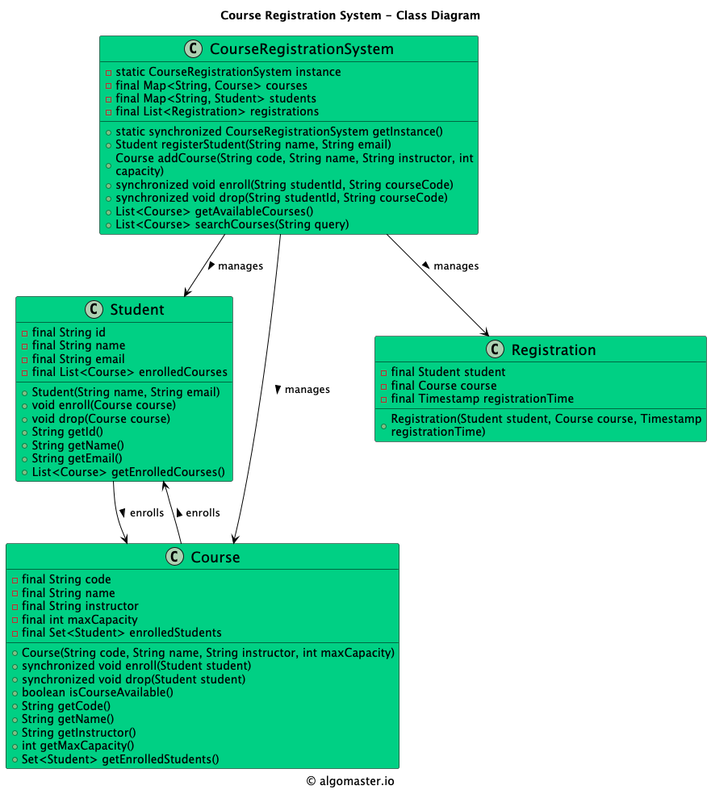
Key Classes & Architectural Rationale
1. The **Student** class represents a student in the course registration system, with properties such as ID, name, email, and a list of registered courses.
2. The **Course** class represents a course offered in the system, with properties such as code, name, instructor, maximum capacity, and the number of enrolled students.
3. The **Registration** class represents a registration record, associating a student with a course and capturing the registration timestamp.
4. The **CourseRegistrationSystem** class is the main class that manages the course registration system. It follows the Singleton pattern to ensure only one instance of the system exists.
5. The CourseRegistrationSystem class provides methods for adding courses and students, searching for courses, registering students for courses, and retrieving registered courses for a student.
6. Multi-threading is implemented using concurrent data structures (ConcurrentHashMap and CopyOnWriteArrayList) to handle concurrent access to shared data, such as courses and registrations.
7. The registerCourse method is synchronized to ensure thread safety when multiple students are registering for courses simultaneously.
8. The notifyObservers method is a placeholder for notifying observers (e.g., UI components) about updates to course enrollment.
9. The **CourseRegistrationDemo** class demonstrates the usage of the course registration system by creating courses and students, searching for courses, registering students for courses, and retrieving registered courses for a student.
# === [course.py] ===fromdatetimeimportdatetimefromtypingimportList,DictclassCourse:def__init__(self,code:str,name:str,instructor:str,max_capacity:int,enrolled_students:int):self.code=codeself.name=nameself.instructor=instructorself.max_capacity=max_capacityself.enrolled_students=enrolled_studentsdefset_enrolled_students(self,enrolled_students:int):self.enrolled_students=enrolled_studentsdefget_code(self)->str:returnself.codedefget_name(self)->str:returnself.namedefget_instructor(self)->str:returnself.instructordefget_max_capacity(self)->int:returnself.max_capacitydefget_enrolled_students(self)->int:returnself.enrolled_students# === [registration.py] ===importdatetimeclassRegistration:def__init__(self,student:Student,course:Course,registration_time:datetime):self.student=studentself.course=courseself.registration_time=registration_time# === [student.py] ===fromtypingimportListclassStudent:def__init__(self,student_id:int,name:str,email:str,registered_courses:List[Course]):self.id=student_idself.name=nameself.email=emailself.registered_courses=registered_coursesdefget_id(self)->int:returnself.iddefget_name(self)->str:returnself.namedefget_email(self)->str:returnself.emaildefget_registered_courses(self)->List[Course]:returnself.registered_courses# === [course_registration_system.py] ===fromtypingimportDict,ListclassCourseRegistrationSystem:instance=Nonecourses:Dict[str,Course]={}students:Dict[int,Student]={}registrations:List[Registration]=[]@staticmethoddefget_instance():ifCourseRegistrationSystem.instanceisNone:CourseRegistrationSystem.instance=CourseRegistrationSystem()returnCourseRegistrationSystem.instancedefadd_course(self,course:Course):self.courses[course.get_code()]=coursedefadd_student(self,student:Student):self.students[student.get_id()]=studentdefsearch_courses(self,query:str)->List[Course]:result=[]forcourseinself.courses.values():ifqueryincourse.get_code()orqueryincourse.get_name():result.append(course)returnresultdefregister_course(self,student:Student,course:Course)->bool:ifcourse.get_enrolled_students()<course.get_max_capacity():registration=Registration(student,course,datetime.now())self.registrations.append(registration)student.get_registered_courses().append(course)course.set_enrolled_students(course.get_enrolled_students()+1)self._notify_observers(course)returnTruereturnFalsedefget_registered_courses(self,student:Student)->List[Course]:returnstudent.get_registered_courses()def_notify_observers(self,course:Course):# Notify observers (e.g., UI) about the updated course enrollment# ...pass# === [course_registration_demo.py] ===classCourseRegistrationDemo:@staticmethoddefrun():registration_system=CourseRegistrationSystem.get_instance()# Create coursescourse1=Course("CS101","Introduction to Programming","John Doe",50,0)course2=Course("CS201","Data Structures and Algorithms","Jane Smith",30,0)registration_system.add_course(course1)registration_system.add_course(course2)# Create studentsstudent1=Student(1,"Alice","alice@example.com",[])student2=Student(2,"Bob","bob@example.com",[])registration_system.add_student(student1)registration_system.add_student(student2)# Search for coursessearch_results=registration_system.search_courses("CS")print("Search Results:")forcourseinsearch_results:print(f"{course.get_code()} - {course.get_name()}")# Register courses for studentsregistered1=registration_system.register_course(student1,course1)registered2=registration_system.register_course(student2,course1)registered3=registration_system.register_course(student1,course2)print("Registration Results:")print(f"Student 1 - Course 1: {registered1}")print(f"Student 2 - Course 1: {registered2}")print(f"Student 1 - Course 2: {registered3}")# Get registered courses for a studentregistered_courses=registration_system.get_registered_courses(student1)print("Registered Courses for Student 1:")forcourseinregistered_courses:print(f"{course.get_code()} - {course.get_name()}")if__name__=="__main__":CourseRegistrationDemo.run()
Library Management System
Book Lending State MachineFine Calculation StrategyBarcode Indexing
System Requirements
The library management system should allow librarians to manage books, members, and borrowing activities.
The system should support adding, updating, and removing books from the library catalog.
Each book should have details such as title, author, ISBN, publication year, and availability status.
The system should allow members to borrow and return books.
Each member should have details such as name, member ID, contact information, and borrowing history.
The system should enforce borrowing rules, such as a maximum number of books that can be borrowed at a time and loan duration.
The system should handle concurrent access to the library catalog and member records.
The system should be extensible to accommodate future enhancements and new features.
📐 UML Class DiagramSystem Architecture
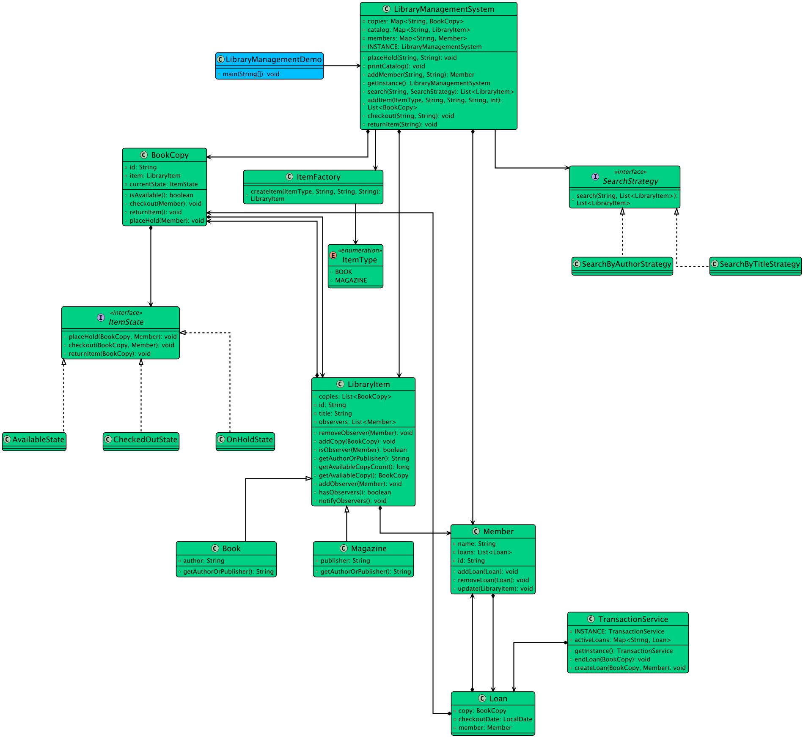
Key Classes & Architectural Rationale
1. The **Book** class represents a book in the library catalog, with properties such as ISBN, title, author, publication year, and availability status.
2. The **Member** class represents a library member, with properties like member ID, name, contact information, and a list of borrowed books.
3. The **LibraryManager** class is the core of the library management system and follows the Singleton pattern to ensure a single instance of the library manager.
4. The LibraryManager class uses concurrent data structures (ConcurrentHashMap) to handle concurrent access to the library catalog and member records.
5. The LibraryManager class provides methods for adding and removing books, registering and unregistering members, borrowing and returning books, and searching for books based on keywords.
6. The **LibraryManagementSystemDemo** class serves as the entry point of the application and demonstrates the usage of the library management system.
# === [item_type.py] ===fromenumimportEnumclassItemType(Enum):BOOK="BOOK"MAGAZINE="MAGAZINE"# === [item_factory.py] ===classItemFactory:@staticmethoddefcreate_item(item_type:ItemType,item_id:str,title:str,author:str)->LibraryItem:ifitem_type==ItemType.BOOK:returnBook(item_id,title,author)elifitem_type==ItemType.MAGAZINE:returnMagazine(item_id,title,author)# Author might be publisher hereelse:raiseValueError("Unknown item type")# === [item_states.py] ===fromabcimportABC,abstractmethodfromtypingimportTYPE_CHECKINGifTYPE_CHECKING:classItemState(ABC):@abstractmethoddefcheckout(self,book_copy:'BookCopy',member:'Member')->None:pass@abstractmethoddefreturn_item(self,book_copy:'BookCopy')->None:pass@abstractmethoddefplace_hold(self,book_copy:'BookCopy',member:'Member')->None:passclassAvailableState(ItemState):defcheckout(self,book_copy:'BookCopy',member:'Member')->None:TransactionService.get_instance().create_loan(book_copy,member)book_copy.set_state(CheckedOutState())print(f"{book_copy.get_id()} checked out by {member.get_name()}")defreturn_item(self,book_copy:'BookCopy')->None:print("Cannot return an item that is already available.")defplace_hold(self,book_copy:'BookCopy',member:'Member')->None:print("Cannot place hold on an available item. Please check it out.")classCheckedOutState(ItemState):defcheckout(self,book_copy:'BookCopy',member:'Member')->None:print(f"{book_copy.get_id()} is already checked out.")defreturn_item(self,book_copy:'BookCopy')->None:TransactionService.get_instance().end_loan(book_copy)print(f"{book_copy.get_id()} returned.")# If there are holds, move to OnHold state. Otherwise, become Available.ifbook_copy.get_item().has_observers():book_copy.set_state(OnHoldState())book_copy.get_item().notify_observers()# Notify members that item is back but on holdelse:book_copy.set_state(AvailableState())defplace_hold(self,book_copy:'BookCopy',member:'Member')->None:book_copy.get_item().add_observer(member)print(f"{member.get_name()} placed a hold on '{book_copy.get_item().get_title()}'")classOnHoldState(ItemState):defcheckout(self,book_copy:'BookCopy',member:'Member')->None:# Only a member who placed the hold can check it out.ifbook_copy.get_item().is_observer(member):TransactionService.get_instance().create_loan(book_copy,member)book_copy.get_item().remove_observer(member)# Remove from waiting listbook_copy.set_state(CheckedOutState())print(f"Hold fulfilled. {book_copy.get_id()} checked out by {member.get_name()}")else:print("This item is on hold for another member.")defreturn_item(self,book_copy:'BookCopy')->None:print("Invalid action. Item is on hold, not checked out.")defplace_hold(self,book_copy:'BookCopy',member:'Member')->None:print("Item is already on hold.")# === [library_item.py] ===fromtypingimportList,OptionalclassLibraryItem(ABC):def__init__(self,item_id:str,title:str):self.id=item_idself.title=titleself.copies:List['BookCopy']=[]self.observers:List[Member]=[]# Observer Pattern: List of members waiting for this itemdefadd_copy(self,book_copy:'BookCopy')->None:self.copies.append(book_copy)defadd_observer(self,member:Member)->None:self.observers.append(member)defremove_observer(self,member:Member)->None:ifmemberinself.observers:self.observers.remove(member)defnotify_observers(self)->None:print(f"Notifying {len(self.observers)} observers for '{self.title}'...")# Use a copy to avoid modification during iterationforobserverinself.observers.copy():observer.update(self)defget_available_copy(self)->Optional['BookCopy']:forbook_copyinself.copies:ifbook_copy.is_available():returnbook_copyreturnNonedefget_id(self)->str:returnself.iddefget_title(self)->str:returnself.titledefget_copies(self)->List['BookCopy']:returnself.copies@abstractmethoddefget_author_or_publisher(self)->str:passdefget_available_copy_count(self)->int:returnsum(1forbook_copyinself.copiesifbook_copy.is_available())defhas_observers(self)->bool:returnlen(self.observers)>0defis_observer(self,member:Member)->bool:returnmemberinself.observers# === [search_strategy.py] ===fromtypingimportListclassSearchStrategy(ABC):@abstractmethoddefsearch(self,query:str,items:List[LibraryItem])->List[LibraryItem]:passclassSearchByTitleStrategy(SearchStrategy):defsearch(self,query:str,items:List[LibraryItem])->List[LibraryItem]:return[itemforiteminitemsifquery.lower()initem.get_title().lower()]classSearchByAuthorStrategy(SearchStrategy):defsearch(self,query:str,items:List[LibraryItem])->List[LibraryItem]:return[itemforiteminitemsifquery.lower()initem.get_author_or_publisher().lower()]# === [book.py] ===classBook(LibraryItem):def__init__(self,item_id:str,title:str,author:str):super().__init__(item_id,title)self.author=authordefget_author_or_publisher(self)->str:returnself.author# === [book_copy.py] ===ifTYPE_CHECKING:classBookCopy:def__init__(self,copy_id:str,item:'LibraryItem'):self.id=copy_idself.item=itemself.current_state:'ItemState'=AvailableState()item.add_copy(self)defcheckout(self,member:'Member')->None:self.current_state.checkout(self,member)defreturn_item(self)->None:self.current_state.return_item(self)defplace_hold(self,member:'Member')->None:self.current_state.place_hold(self,member)defset_state(self,state:'ItemState')->None:self.current_state=statedefget_id(self)->str:returnself.iddefget_item(self)->'LibraryItem':returnself.itemdefis_available(self)->bool:returnisinstance(self.current_state,AvailableState)# === [loan.py] ===fromdatetimeimportdateifTYPE_CHECKING:classLoan:def__init__(self,book_copy:'BookCopy',member:'Member'):self.copy=book_copyself.member=memberself.checkout_date=date.today()defget_copy(self)->'BookCopy':returnself.copydefget_member(self)->'Member':returnself.member# === [magazine.py] ===classMagazine(LibraryItem):def__init__(self,item_id:str,title:str,publisher:str):super().__init__(item_id,title)self.publisher=publisherdefget_author_or_publisher(self)->str:returnself.publisher# === [member.py] ===ifTYPE_CHECKING:classMember:def__init__(self,member_id:str,name:str):self.id=member_idself.name=nameself.loans:List['Loan']=[]defupdate(self,item:'LibraryItem')->None:"""Observer update method"""print(f"NOTIFICATION for {self.name}: The book '{item.get_title()}' you placed a hold on is now available!")defadd_loan(self,loan:'Loan')->None:self.loans.append(loan)defremove_loan(self,loan:'Loan')->None:ifloaninself.loans:self.loans.remove(loan)defget_id(self)->str:returnself.iddefget_name(self)->str:returnself.namedefget_loans(self)->List['Loan']:returnself.loans# === [library_management_system.py] ===fromtypingimportDict,List,OptionalclassLibraryManagementSystem:_instance:Optional['LibraryManagementSystem']=Nonedef__init__(self):ifLibraryManagementSystem._instanceisnotNone:raiseException("This class is a singleton!")self.catalog:Dict[str,LibraryItem]={}self.members:Dict[str,Member]={}self.copies:Dict[str,BookCopy]={}@staticmethoddefget_instance()->'LibraryManagementSystem':ifLibraryManagementSystem._instanceisNone:LibraryManagementSystem._instance=LibraryManagementSystem()returnLibraryManagementSystem._instancedefadd_item(self,item_type:ItemType,item_id:str,title:str,author:str,num_copies:int)->List[BookCopy]:book_copies=[]item=ItemFactory.create_item(item_type,item_id,title,author)self.catalog[item_id]=itemforiinrange(num_copies):copy_id=f"{item_id}-c{i + 1}"book_copy=BookCopy(copy_id,item)self.copies[copy_id]=book_copybook_copies.append(book_copy)print(f"Added {num_copies} copies of '{title}'")returnbook_copiesdefadd_member(self,member_id:str,name:str)->Member:member=Member(member_id,name)self.members[member_id]=memberreturnmemberdefcheckout(self,member_id:str,copy_id:str)->None:member=self.members.get(member_id)book_copy=self.copies.get(copy_id)ifmemberisnotNoneandbook_copyisnotNone:book_copy.checkout(member)else:print("Error: Invalid member or copy ID.")defreturn_item(self,copy_id:str)->None:book_copy=self.copies.get(copy_id)ifbook_copyisnotNone:book_copy.return_item()else:print("Error: Invalid copy ID.")defplace_hold(self,member_id:str,item_id:str)->None:member=self.members.get(member_id)item=self.catalog.get(item_id)ifmemberisnotNoneanditemisnotNone:# Place hold on any copy that is checked outforbook_copyinitem.get_copies():ifnotbook_copy.is_available():book_copy.place_hold(member)breakdefsearch(self,query:str,strategy:SearchStrategy)->List[LibraryItem]:returnstrategy.search(query,list(self.catalog.values()))defprint_catalog(self)->None:print("\n--- Library Catalog ---")foriteminself.catalog.values():print(f"ID: {item.get_id()}, Title: {item.get_title()}, "f"Author/Publisher: {item.get_author_or_publisher()}, "f"Available: {item.get_available_copy_count()}")print("-----------------------\n")# === [library_management_system_demo.py] ===classLibraryManagementDemo:@staticmethoddefmain():library=LibraryManagementSystem.get_instance()# === Setup: Add items and members using the Facade ===print("=== Setting up the Library ===")hobbit_copies=library.add_item(ItemType.BOOK,"B001","The Hobbit","J.R.R. Tolkien",2)dune_copies=library.add_item(ItemType.BOOK,"B002","Dune","Frank Herbert",1)nat_geo_copies=library.add_item(ItemType.MAGAZINE,"M001","National Geographic","NatGeo Society",3)alice=library.add_member("MEM01","Alice")bob=library.add_member("MEM02","Bob")charlie=library.add_member("MEM03","Charlie")library.print_catalog()# === Scenario 1: Searching (Strategy Pattern) ===print("\n=== Scenario 1: Searching for Items ===")print("Searching for title 'Dune':")foriteminlibrary.search("Dune",SearchByTitleStrategy()):print(f"Found: {item.get_title()}")print("\nSearching for author 'Tolkien':")foriteminlibrary.search("Tolkien",SearchByAuthorStrategy()):print(f"Found: {item.get_title()}")# === Scenario 2: Checkout and Return (State Pattern) ===print("\n\n=== Scenario 2: Checkout and Return ===")library.checkout(alice.get_id(),hobbit_copies[0].get_id())# Alice checks out The Hobbit copy 1library.checkout(bob.get_id(),dune_copies[0].get_id())# Bob checks out Dune copy 1library.print_catalog()print("Attempting to checkout an already checked-out book:")library.checkout(charlie.get_id(),hobbit_copies[0].get_id())# Charlie fails to check out The Hobbit copy 1print("\nAlice returns The Hobbit:")library.return_item(hobbit_copies[0].get_id())library.print_catalog()# === Scenario 3: Holds and Notifications (Observer Pattern) ===print("\n\n=== Scenario 3: Placing a Hold ===")print("Dune is checked out by Bob. Charlie places a hold.")library.place_hold(charlie.get_id(),"B002")# Charlie places a hold on Duneprint("\nBob returns Dune. Charlie should be notified.")library.return_item(dune_copies[0].get_id())# Bob returns Duneprint("\nCharlie checks out the book that was on hold for him.")library.checkout(charlie.get_id(),dune_copies[0].get_id())print("\nTrying to check out the same on-hold item by another member (Alice):")library.checkout(alice.get_id(),dune_copies[0].get_id())# Alice fails, it's checked out by Charlie now.library.print_catalog()if__name__=="__main__":LibraryManagementDemo.main()# === [transaction_service.py] ===fromtypingimportDict,Optional,TYPE_CHECKINGifTYPE_CHECKING:classTransactionService:_instance:Optional['TransactionService']=Nonedef__init__(self):ifTransactionService._instanceisnotNone:raiseException("This class is a singleton!")self.active_loans:Dict[str,Loan]={}# Key: BookCopy ID@staticmethoddefget_instance()->'TransactionService':ifTransactionService._instanceisNone:TransactionService._instance=TransactionService()returnTransactionService._instancedefcreate_loan(self,book_copy:'BookCopy',member:'Member')->None:ifbook_copy.get_id()inself.active_loans:raiseValueError("This copy is already on loan.")loan=Loan(book_copy,member)self.active_loans[book_copy.get_id()]=loanmember.add_loan(loan)defend_loan(self,book_copy:'BookCopy')->None:loan=self.active_loans.pop(book_copy.get_id(),None)ifloanisnotNone:loan.get_member().remove_loan(loan)
Users should be able to create an account with their professional information, such as name, email, and password.
Users should be able to log in and log out of their accounts securely.
Each user should have a profile with their professional information, such as profile picture, headline, summary, experience, education, and skills.
Users should be able to update their profile information.
Users should be able to send connection requests to other users.
Users should be able to accept or decline connection requests.
Users should be able to view their list of connections.
Users should be able to send messages to their connections.
Users should be able to view their inbox and sent messages.
Employers should be able to post job listings with details such as title, description, requirements, and location.
Users should be able to view and apply for job postings.
Users should be able to search for other users, companies, and job postings based on relevant criteria.
Search results should be ranked based on relevance and user preferences.
Users should receive notifications for events such as connection requests, messages, and job postings.
Notifications should be delivered in real-time.
The system should be designed to handle a large number of concurrent users and high traffic load.
The system should be scalable and efficient in terms of resource utilization.
📐 UML Class DiagramSystem Architecture
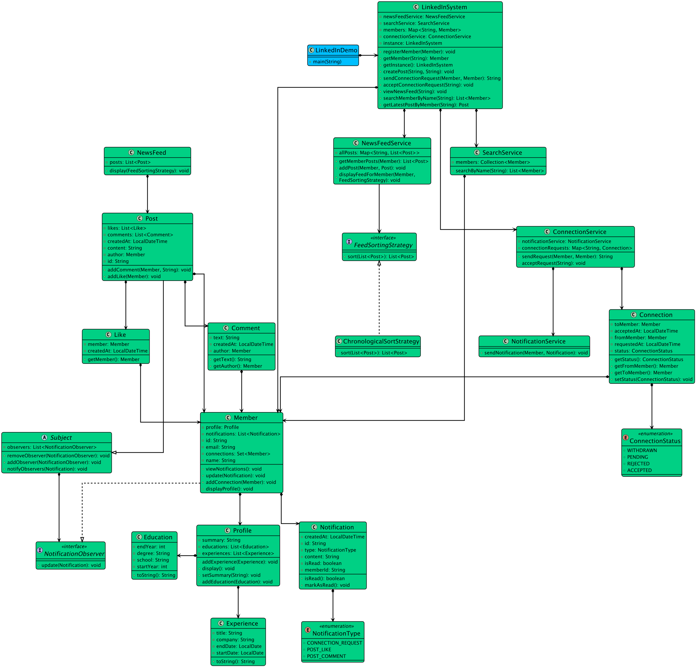
Key Classes & Architectural Rationale
1. The **User** class represents a user in the LinkedIn system, containing properties such as ID, name, email, password, profile, connections, inbox, and sent messages.
2. The **Profile** class represents a user's profile, containing properties such as profile picture, headline, summary, experiences, educations, and skills.
3. The **Experience**, **Education**, and **Skill** classes represent different components of a user's profile.
4. The **Connection** class represents a connection between two users, containing the user and the connection date.
5. The **Message** class represents a message sent between users, containing properties such as ID, sender, receiver, content, and timestamp.
6. The **JobPosting** class represents a job listing posted by an employer, containing properties such as ID, title, description, requirements, location, and post date.
7. The **Notification** class represents a notification generated for a user, containing properties such as ID, user, notification type, content, and timestamp.
8. The **NotificationType** enum defines the different types of notifications, such as connection request, message, and job posting.
9. The **LinkedInService** class is the main class that manages the LinkedIn system. It follows the Singleton pattern to ensure only one instance of the service exists.
10. The **LinkedInService** class provides methods for user registration, login, profile updates, connection requests, job postings, user and job search, messaging, and notifications.
11. Multi-threading is achieved using concurrent data structures such as ConcurrentHashMap and CopyOnWriteArrayList to handle concurrent access to shared resources.
12. The **LinkedInDemo** class demonstrates the usage of the LinkedIn system by registering users, logging in, updating profiles, sending connection requests, posting job listings, searching for users and jobs, sending messages, and retrieving notifications.
# === [enums.py] ===fromenumimportEnumclassConnectionStatus(Enum):PENDING="PENDING"ACCEPTED="ACCEPTED"REJECTED="REJECTED"WITHDRAWN="WITHDRAWN"classNotificationType(Enum):CONNECTION_REQUEST="CONNECTION_REQUEST"POST_LIKE="POST_LIKE"POST_COMMENT="POST_COMMENT"# === [feed_sorting_strategy.py] ===fromabcimportABC,abstractmethodfromtypingimportListclassFeedSortingStrategy(ABC):@abstractmethoddefsort(self,posts:List[Post])->List[Post]:passclassChronologicalSortStrategy(FeedSortingStrategy):defsort(self,posts:List[Post])->List[Post]:returnsorted(posts,key=lambdapost:post.get_created_at(),reverse=True)# === [connection.py] ===fromdatetimeimportdatetimefromtypingimportOptionalclassConnection:def__init__(self,from_member:Member,to_member:Member):self.from_member=from_memberself.to_member=to_memberself.status=ConnectionStatus.PENDINGself.requested_at=datetime.now()self.accepted_at:Optional[datetime]=Nonedefget_from_member(self)->Member:returnself.from_memberdefget_to_member(self)->Member:returnself.to_memberdefget_status(self)->ConnectionStatus:returnself.statusdefset_status(self,status:ConnectionStatus)->None:self.status=statusifstatus==ConnectionStatus.ACCEPTED:self.accepted_at=datetime.now()# === [education.py] ===classEducation:def__init__(self,school:str,degree:str,start_year:int,end_year:int):self.school=schoolself.degree=degreeself.start_year=start_yearself.end_year=end_yeardef__str__(self)->str:returnf"{self.degree}, {self.school} ({self.start_year} - {self.end_year})"# === [experience.py] ===fromdatetimeimportdateclassExperience:def__init__(self,title:str,company:str,start_date:date,end_date:Optional[date]):self.title=titleself.company=companyself.start_date=start_dateself.end_date=end_datedef__str__(self)->str:end_str="Present"ifself.end_dateisNoneelsestr(self.end_date)returnf"{self.title} at {self.company} ({self.start_date} to {end_str})"# === [member.py] ===fromtypingimportList,SetimportuuidclassMember(NotificationObserver):def__init__(self,member_id:str,name:str,email:str,profile:Profile):self.id=member_idself.name=nameself.email=emailself.profile=profileself.connections:Set['Member']=set()self.notifications:List['Notification']=[]defget_id(self)->str:returnself.iddefget_name(self)->str:returnself.namedefget_email(self)->str:returnself.emaildefget_connections(self)->Set['Member']:returnself.connectionsdefget_profile(self)->Profile:returnself.profiledefadd_connection(self,member:'Member')->None:self.connections.add(member)defdisplay_profile(self)->None:print(f"\n--- Profile for {self.name} ({self.email}) ---")self.profile.display()print(f" Connections: {len(self.connections)}")defview_notifications(self)->None:print(f"\n--- Notifications for {self.name} ---")unread_notifications=[nforninself.notificationsifnotn.is_read()]ifnotunread_notifications:print(" No new notifications.")returnfornotificationinunread_notifications:print(f" - {notification.get_content()}")notification.mark_as_read()defupdate(self,notification:'Notification')->None:self.notifications.append(notification)print(f"Notification pushed to {self.name}: {notification.get_content()}")classBuilder:def__init__(self,name:str,email:str):self.id=str(uuid.uuid4())self.name=nameself.email=emailself.profile=Profile()defwith_summary(self,summary:str)->'Member.Builder':self.profile.set_summary(summary)returnselfdefadd_experience(self,experience:Experience)->'Member.Builder':self.profile.add_experience(experience)returnselfdefadd_education(self,education:Education)->'Member.Builder':self.profile.add_education(education)returnselfdefbuild(self)->'Member':returnMember(self.id,self.name,self.email,self.profile)# === [newsfeed.py] ===classNewsFeed:def__init__(self,posts:List[Post]):self.posts=postsdefdisplay(self,strategy:FeedSortingStrategy)->None:sorted_posts=strategy.sort(self.posts)ifnotsorted_posts:print(" Your news feed is empty.")returnforpostinsorted_posts:print("----------------------------------------")print(f"Post by: {post.get_author().get_name()} (at {post.get_created_at().date()})")print(f"Content: {post.get_content()}")print(f"Likes: {len(post.get_likes())}, Comments: {len(post.get_comments())}")print("----------------------------------------")# === [notification.py] ===classNotification:def__init__(self,member_id:str,notification_type:NotificationType,content:str):self.id=str(uuid.uuid4())self.member_id=member_idself.type=notification_typeself.content=contentself.created_at=datetime.now()self._is_read=Falsedefget_content(self)->str:returnself.contentdefmark_as_read(self)->None:self._is_read=Truedefis_read(self)->bool:returnself._is_read# === [notification_observer.py] ===classNotificationObserver(ABC):@abstractmethoddefupdate(self,notification:'Notification')->None:passclassSubject:def__init__(self):self.observers:List[NotificationObserver]=[]defadd_observer(self,observer:NotificationObserver)->None:self.observers.append(observer)defremove_observer(self,observer:NotificationObserver)->None:ifobserverinself.observers:self.observers.remove(observer)defnotify_observers(self,notification:'Notification')->None:forobserverinself.observers:observer.update(notification)# === [post.py] ===classLike:def__init__(self,member:Member):self.member=memberself.created_at=datetime.now()defget_member(self)->Member:returnself.memberclassComment:def__init__(self,author:Member,text:str):self.author=authorself.text=textself.created_at=datetime.now()defget_author(self)->Member:returnself.authordefget_text(self)->str:returnself.textclassPost(Subject):def__init__(self,author:Member,content:str):super().__init__()self.id=str(uuid.uuid4())self.author=authorself.content=contentself.created_at=datetime.now()self.likes:List[Like]=[]self.comments:List[Comment]=[]self.add_observer(author)defadd_like(self,member:Member)->None:self.likes.append(Like(member))notification_content=f"{member.get_name()} liked your post."notification=Notification(self.author.get_id(),NotificationType.POST_LIKE,notification_content)self.notify_observers(notification)defadd_comment(self,member:Member,text:str)->None:self.comments.append(Comment(member,text))notification_content=f"{member.get_name()} commented on your post: \"{text}\""notification=Notification(self.author.get_id(),NotificationType.POST_COMMENT,notification_content)self.notify_observers(notification)defget_id(self)->str:returnself.iddefget_author(self)->Member:returnself.authordefget_content(self)->str:returnself.contentdefget_created_at(self)->datetime:returnself.created_atdefget_likes(self)->List[Like]:returnself.likesdefget_comments(self)->List[Comment]:returnself.comments# === [profile.py] ===fromtypingimportList,OptionalclassProfile:def__init__(self):self.summary:Optional[str]=Noneself.experiences:List[Experience]=[]self.educations:List[Education]=[]defset_summary(self,summary:str)->None:self.summary=summarydefadd_experience(self,experience:Experience)->None:self.experiences.append(experience)defadd_education(self,education:Education)->None:self.educations.append(education)defdisplay(self)->None:print(f" Summary: {self.summary if self.summary else 'N/A'}")print(" Experience:")ifnotself.experiences:print(" - None")else:forexpinself.experiences:print(f" - {exp}")print(" Education:")ifnotself.educations:print(" - None")else:foreduinself.educations:print(f" - {edu}")# === [connection_service.py] ===fromtypingimportDictimportthreadingclassConnectionService:def__init__(self,notification_service:NotificationService):self.notification_service=notification_serviceself.connection_requests:Dict[str,Connection]={}self.lock=threading.Lock()defsend_request(self,from_member:Member,to_member:Member)->str:connection=Connection(from_member,to_member)request_id=str(uuid.uuid4())withself.lock:self.connection_requests[request_id]=connectionprint(f"{from_member.get_name()} sent a connection request to {to_member.get_name()}.")notification=Notification(to_member.get_id(),NotificationType.CONNECTION_REQUEST,f"{from_member.get_name()} wants to connect with you. Request ID: {request_id}")self.notification_service.send_notification(to_member,notification)returnrequest_iddefaccept_request(self,request_id:str)->None:withself.lock:request=self.connection_requests.get(request_id)ifrequestandrequest.get_status()==ConnectionStatus.PENDING:request.set_status(ConnectionStatus.ACCEPTED)from_member=request.get_from_member()to_member=request.get_to_member()from_member.add_connection(to_member)to_member.add_connection(from_member)print(f"{to_member.get_name()} accepted the connection request from {from_member.get_name()}.")delself.connection_requests[request_id]else:print("Invalid or already handled request ID.")# === [linkedin_system.py] ===fromtypingimportDict,List,OptionalclassLinkedInSystem:_instance:Optional['LinkedInSystem']=None_lock=threading.Lock()def__new__(cls):ifcls._instanceisNone:withcls._lock:ifcls._instanceisNone:cls._instance=super().__new__(cls)returncls._instancedef__init__(self):ifhasattr(self,'initialized'):returnself.members:Dict[str,Member]={}self.connection_service=ConnectionService(NotificationService())self.news_feed_service=NewsFeedService()self.search_service=SearchService(self.members.values())self.initialized=True@classmethoddefget_instance(cls)->'LinkedInSystem':returncls()defregister_member(self,member:Member)->None:self.members[member.get_id()]=memberprint(f"New member registered: {member.get_name()}")defget_member(self,name:str)->Optional[Member]:formemberinself.members.values():ifmember.get_name()==name:returnmemberreturnNonedefsend_connection_request(self,from_member:Member,to_member:Member)->str:returnself.connection_service.send_request(from_member,to_member)defaccept_connection_request(self,request_id:str)->None:self.connection_service.accept_request(request_id)defcreate_post(self,member_id:str,content:str)->None:author=self.members[member_id]post=Post(author,content)self.news_feed_service.add_post(author,post)print(f"{author.get_name()} created a new post.")defget_latest_post_by_member(self,member_id:str)->Optional[Post]:member_posts=self.news_feed_service.get_member_posts(self.members[member_id])ifnotmember_posts:returnNonereturnmember_posts[-1]defview_news_feed(self,member_id:str)->None:member=self.members[member_id]print(f"\n--- News Feed for {member.get_name()} ---")self.news_feed_service.display_feed_for_member(member,ChronologicalSortStrategy())defsearch_member_by_name(self,name:str)->List[Member]:returnself.search_service.search_by_name(name)# === [newsfeed_service.py] ===fromtypingimportDict,ListfromcollectionsimportdefaultdictclassNewsFeedService:def__init__(self):self.all_posts:Dict[str,List[Post]]=defaultdict(list)self.lock=threading.Lock()defadd_post(self,member:Member,post:Post)->None:withself.lock:self.all_posts[member.get_id()].append(post)defget_member_posts(self,member:Member)->List[Post]:returnself.all_posts.get(member.get_id(),[])defdisplay_feed_for_member(self,member:Member,feed_sorting_strategy:FeedSortingStrategy)->None:feed_posts=[]forconnectioninmember.get_connections():connection_posts=self.all_posts.get(connection.get_id(),[])feed_posts.extend(connection_posts)news_feed=NewsFeed(feed_posts)news_feed.display(feed_sorting_strategy)# === [notification_service.py] ===classNotificationService:defsend_notification(self,member:Member,notification:Notification)->None:member.update(notification)# === [search_service.py] ===fromtypingimportCollection,ListclassSearchService:def__init__(self,members:Collection[Member]):self.members=membersdefsearch_by_name(self,name:str)->List[Member]:return[memberformemberinself.membersifname.lower()inmember.get_name().lower()]# === [linkedin_demo.py] ===classLinkedInDemo:@staticmethoddefmain():system=LinkedInSystem.get_instance()# 1. Create Members using the Builder Patternprint("--- 1. Member Registration ---")alice=Member.Builder("Alice","alice@example.com") \.with_summary("Senior Software Engineer with 10 years of experience.") \.add_experience(Experience("Sr. Software Engineer","Google",date(2018,1,1),None)) \.add_experience(Experience("Software Engineer","Microsoft",date(2014,6,1),date(2017,12,31))) \.add_education(Education("Princeton University","M.S. in Computer Science",2012,2014)) \.build()bob=Member.Builder("Bob","bob@example.com") \.with_summary("Product Manager at Stripe.") \.add_experience(Experience("Product Manager","Stripe",date(2020,2,1),None)) \.add_education(Education("MIT","B.S. in Business Analytics",2015,2019)) \.build()charlie=Member.Builder("Charlie","charlie@example.com").build()system.register_member(alice)system.register_member(bob)system.register_member(charlie)alice.display_profile()# 2. Connection Managementprint("\n--- 2. Connection Management ---")# Alice sends requests to Bob and Charlierequest_id1=system.send_connection_request(alice,bob)request_id2=system.send_connection_request(alice,charlie)bob.view_notifications()# Bob sees Alice's requestprint("\nBob accepts Alice's request.")system.accept_connection_request(request_id1)print("Alice and Bob are now connected.")# 3. Posting and News Feedprint("\n--- 3. Posting & News Feed ---")bob.display_profile()# Bob has 1 connectionsystem.create_post(bob.get_id(),"Excited to share we've launched our new feature! #productmanagement")# Alice views her news feed. She should see Bob's post.system.view_news_feed(alice.get_id())# Charlie views his feed. It should be empty as he is not connected to anyone.system.view_news_feed(charlie.get_id())# 4. Interacting with a Post (Observer Pattern in action)print("\n--- 4. Post Interaction & Notifications ---")bobs_post=system.get_latest_post_by_member(bob.get_id())ifbobs_post:bobs_post.add_like(alice)bobs_post.add_comment(alice,"This looks amazing! Great work!")# Bob checks his notifications. He should see a like and a comment from Alice.bob.view_notifications()# 5. Searching for Membersprint("\n--- 5. Member Search ---")search_results=system.search_member_by_name("ali")print("Search results for 'ali':")formemberinsearch_results:print(f" - {member.get_name()}")if__name__=="__main__":LinkedInDemo.main()
Users should be able to create an account with their personal information, such as name, email, and password.
Users should be able to log in and log out of their accounts securely.
Each user should have a profile with their information, such as profile picture, bio, and interests.
Users should be able to update their profile information.
Users should be able to send friend requests to other users.
Users should be able to accept or decline friend requests.
Users should be able to view their list of friends.
Users should be able to create posts with text, images, or videos.
Users should be able to view a newsfeed consisting of posts from their friends and their own posts.
The newsfeed should be sorted in reverse chronological order.
Users should be able to like and comment on posts.
Users should be able to view the list of likes and comments on a post.
Users should be able to control the visibility of their posts and profile information.
The system should enforce secure access control to ensure data privacy.
Users should receive notifications for events such as friend requests, likes, comments, and mentions.
Notifications should be delivered in real-time.
The system should be designed to handle a large number of concurrent users and high traffic load.
The system should be scalable and efficient in terms of resource utilization.
📐 UML Class DiagramSystem Architecture
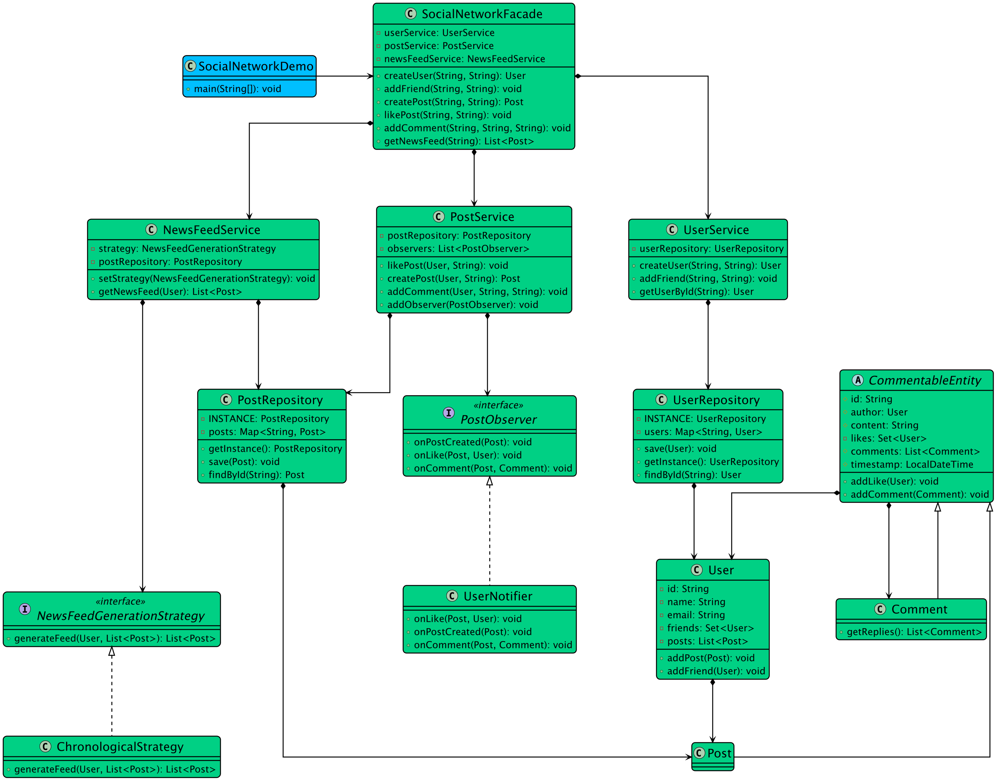
Key Classes & Architectural Rationale
1. The **User** class represents a user in the social networking system, containing properties such as ID, name, email, password, profile picture, bio, list of friends, and list of posts.
2. The **Post** class represents a post created by a user, containing properties such as ID, user ID, content, image URLs, video URLs, timestamp, likes, and comments.
3. The **Comment** class represents a comment made by a user on a post, containing properties such as ID, user ID, post ID, content, and timestamp.
4. The **Notification** class represents a notification generated for a user, containing properties such as ID, user ID, notification type, content, and timestamp.
5. The **NotificationType** enum defines the different types of notifications, such as friend request, friend request accepted, like, comment, and mention.
6. The **SocialNetworkingService** class is the main class that manages the social networking system. It follows the Singleton pattern to ensure only one instance of the service exists.
7. The SocialNetworkingService class provides methods for user registration, login, profile updates, friend requests, post creation, newsfeed generation, likes, comments, and notifications.
8. Multi-threading is achieved using concurrent data structures such as ConcurrentHashMap and CopyOnWriteArrayList to handle concurrent access to shared resources.
9. The **SocialNetworkingDemo** class demonstrates the usage of the social networking system by registering users, logging in, sending friend requests, creating posts, liking posts, commenting on posts, and retrieving newsfeed and notifications.
# === [user.py] ===fromtypingimportList,SetimportuuidclassUser:def__init__(self,name:str,email:str):self.id=str(uuid.uuid4())self.name=nameself.email=emailself.friends:Set['User']=set()self.posts:List[Post]=[]defadd_friend(self,friend:'User'):self.friends.add(friend)defadd_post(self,post:Post):self.posts.append(post)defget_id(self)->str:returnself.iddefget_name(self)->str:returnself.namedefget_friends(self)->Set['User']:returnself.friendsdefget_posts(self)->List[Post]:returnself.posts# === [user_service.py] ===fromtypingimportOptionalclassUserService:def__init__(self):self.user_repository=UserRepository.get_instance()defcreate_user(self,name:str,email:str)->User:user=User(name,email)self.user_repository.save(user)returnuserdefadd_friend(self,user_id1:str,user_id2:str):user1=self.user_repository.find_by_id(user_id1)user2=self.user_repository.find_by_id(user_id2)user1.add_friend(user2)user2.add_friend(user1)defget_user_by_id(self,user_id:str)->Optional[User]:returnself.user_repository.find_by_id(user_id)# === [strategy.py] ===fromabcimportABC,abstractmethodfromtypingimportListclassNewsFeedGenerationStrategy(ABC):@abstractmethoddefgenerate_feed(self,user:User)->List[Post]:passclassChronologicalStrategy(NewsFeedGenerationStrategy):defgenerate_feed(self,user:User)->List[Post]:friends=user.get_friends()feed=[]forfriendinfriends:feed.extend(friend.get_posts())# Sort posts by timestamp in reverse (most recent first)feed.sort(key=lambdap:p.get_timestamp(),reverse=True)returnfeed# === [commentable_entity.py] ===fromdatetimeimportdatetimefromtypingimportTYPE_CHECKINGifTYPE_CHECKING:classCommentableEntity:def__init__(self,author:'User',content:str):self.id=str(uuid.uuid4())self.author=authorself.content=contentself.timestamp=datetime.now()self.likes:Set['User']=set()self.comments:List['Comment']=[]defadd_like(self,user:'User'):self.likes.add(user)defadd_comment(self,comment:'Comment'):self.comments.append(comment)defget_id(self)->str:returnself.iddefget_author(self)->'User':returnself.authordefget_content(self)->str:returnself.contentdefget_timestamp(self)->datetime:returnself.timestampdefget_comments(self)->List['Comment']:returnself.commentsdefget_likes(self)->Set['User']:returnself.likesclassPost(CommentableEntity):def__init__(self,author:'User',content:str):super().__init__(author,content)classComment(CommentableEntity):def__init__(self,author:'User',content:str):super().__init__(author,content)defget_replies(self)->List['Comment']:returnself.get_comments()# === [post_observer.py] ===classPostObserver(ABC):@abstractmethoddefon_post_created(self,post:Post):pass@abstractmethoddefon_like(self,post:Post,user:User):pass@abstractmethoddefon_comment(self,post:Post,comment:Comment):passclassUserNotifier(PostObserver):defon_post_created(self,post:Post):author=post.get_author()forfriendinauthor.get_friends():print(f"Notification for {friend.get_name()}: {author.get_name()} created a new post: {post.get_content()}")defon_like(self,post:Post,user:User):author=post.get_author()print(f"Notification for {author.get_name()}: {user.get_name()} liked your post")defon_comment(self,post:Post,comment:Comment):author=post.get_author()print(f"Notification for {author.get_name()}: {comment.get_author().get_name()} commented on your post")# === [repository.py] ===fromthreadingimportLockclassUserRepository:_instance=None_lock=Lock()def__new__(cls):ifcls._instanceisNone:withcls._lock:ifcls._instanceisNone:cls._instance=super().__new__(cls)cls._instance.users={}returncls._instance@classmethoddefget_instance(cls):returncls()defsave(self,user:User):self.users[user.get_id()]=userdeffind_by_id(self,user_id:str)->Optional[User]:returnself.users.get(user_id)classPostRepository:_instance=None_lock=Lock()def__new__(cls):ifcls._instanceisNone:withcls._lock:ifcls._instanceisNone:cls._instance=super().__new__(cls)cls._instance.posts={}returncls._instance@classmethoddefget_instance(cls):returncls()defsave(self,post:Post):self.posts[post.get_id()]=postdeffind_by_id(self,post_id:str)->Optional[Post]:returnself.posts.get(post_id)# === [social_network_facade.py] ===classSocialNetworkFacade:def__init__(self):self.user_service=UserService()self.post_service=PostService()self.news_feed_service=NewsFeedService()# Wire up the observerself.post_service.add_observer(UserNotifier())defcreate_user(self,name:str,email:str)->User:returnself.user_service.create_user(name,email)defadd_friend(self,user_id1:str,user_id2:str):self.user_service.add_friend(user_id1,user_id2)defcreate_post(self,author_id:str,content:str)->Post:author=self.user_service.get_user_by_id(author_id)returnself.post_service.create_post(author,content)defadd_comment(self,user_id:str,post_id:str,content:str):user=self.user_service.get_user_by_id(user_id)self.post_service.add_comment(user,post_id,content)deflike_post(self,user_id:str,post_id:str):user=self.user_service.get_user_by_id(user_id)self.post_service.like_post(user,post_id)defget_news_feed(self,user_id:str)->List[Post]:user=self.user_service.get_user_by_id(user_id)returnself.news_feed_service.get_news_feed(user)# === [newsfeed_service.py] ===classNewsFeedService:def__init__(self):self.strategy=ChronologicalStrategy()# Default strategydefset_strategy(self,strategy:NewsFeedGenerationStrategy):self.strategy=strategydefget_news_feed(self,user:User)->List[Post]:returnself.strategy.generate_feed(user)# === [post_service.py] ===classPostService:def__init__(self):self.post_repository=PostRepository.get_instance()self.observers:List[PostObserver]=[]defadd_observer(self,observer:PostObserver):self.observers.append(observer)defcreate_post(self,author:User,content:str)->Post:post=Post(author,content)self.post_repository.save(post)author.add_post(post)forobserverinself.observers:observer.on_post_created(post)returnpostdeflike_post(self,user:User,post_id:str):post=self.post_repository.find_by_id(post_id)post.add_like(user)forobserverinself.observers:observer.on_like(post,user)defadd_comment(self,author:User,commentable_id:str,content:str):comment=Comment(author,content)post=self.post_repository.find_by_id(commentable_id)post.add_comment(comment)forobserverinself.observers:observer.on_comment(post,comment)# === [social_networking_service_demo.py] ===defprint_feed(feed:List[Post]):ifnotfeed:print(" No posts in the feed.")returnforpostinfeed:print(f" Post by {post.get_author().get_name()} at {post.get_timestamp()}")print(f" \"{post.get_content()}\"")print(f" Likes: {len(post.get_likes())}, Comments: {len(post.get_comments())}")classSocialNetworkingServiceDemo:defrun():social_network=SocialNetworkFacade()print("----------- 1. Creating Users -----------")alice=social_network.create_user("Alice","alice@example.com")bob=social_network.create_user("Bob","bob@example.com")charlie=social_network.create_user("Charlie","charlie@example.com")print(f"Created users: {alice.get_name()}, {bob.get_name()}, {charlie.get_name()}")print("\n----------- 2. Building Friendships -----------")social_network.add_friend(alice.get_id(),bob.get_id())social_network.add_friend(bob.get_id(),charlie.get_id())print(f"{alice.get_name()} and {bob.get_name()} are now friends.")print(f"{bob.get_name()} and {charlie.get_name()} are now friends.")print("\n----------- 3. Users Create Posts -----------")alice_post=social_network.create_post(alice.get_id(),"Hello from Alice!")bob_post=social_network.create_post(bob.get_id(),"It's a beautiful day!")charlie_post=social_network.create_post(charlie.get_id(),"Thinking about design patterns.")print("\n----------- 4. Users Interact with Posts -----------")social_network.add_comment(bob.get_id(),alice_post.get_id(),"Hey Alice, nice to see you here!")social_network.like_post(charlie.get_id(),alice_post.get_id())print("\n----------- 5. Viewing News Feeds (Strategy Pattern) -----------")print("\n--- Alice's News Feed (should see Bob's post) ---")alices_feed=social_network.get_news_feed(alice.get_id())print_feed(alices_feed)print("\n--- Bob's News Feed (should see Alice's, and Charlie's post) ---")bobs_feed=social_network.get_news_feed(bob.get_id())print_feed(bobs_feed)print("\n--- Charlie's News Feed (should see Bob's post) ---")charlies_feed=social_network.get_news_feed(charlie.get_id())print_feed(charlies_feed)if__name__=="__main__":SocialNetworkingServiceDemo.run()
The music streaming service should allow users to browse and search for songs, albums, and artists.
Users should be able to create and manage playlists.
The system should support user authentication and authorization.
Users should be able to play, pause, skip, and seek within songs.
The system should recommend songs and playlists based on user preferences and listening history.
The system should handle concurrent requests and ensure smooth streaming experience for multiple users.
The system should be scalable and handle a large volume of songs and users.
The system should be extensible to support additional features such as social sharing and offline playback.
📐 UML Class DiagramSystem Architecture
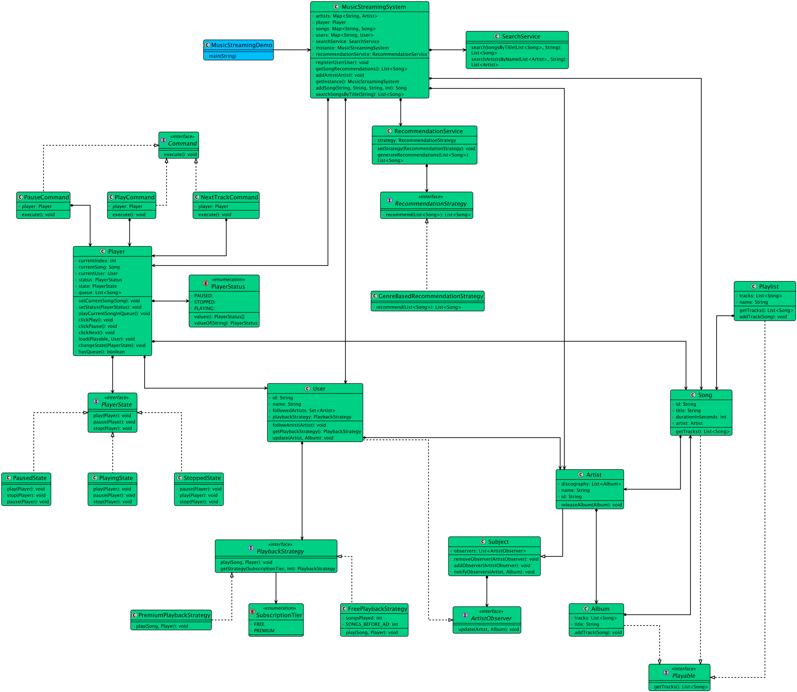
Key Classes & Architectural Rationale
1. The **Song**, **Album**, and **Artist** classes represent the basic entities in the music streaming service, with properties such as ID, title, artist, album, duration, and relationships between them.
2. The **User** class represents a user of the music streaming service, with properties like ID, username, password, and a list of playlists.
3. The **Playlist** class represents a user-created playlist, containing a list of songs.
4. The **MusicLibrary** class serves as a central repository for storing and managing songs, albums, and artists. It follows the Singleton pattern to ensure a single instance of the music library.
5. The **UserManager** class handles user registration, login, and other user-related operations. It also follows the Singleton pattern.
6. The **MusicPlayer** class represents the music playback functionality, allowing users to play, pause, skip, and seek within songs.
7. The **MusicRecommender** class generates song recommendations based on user preferences and listening history. It follows the Singleton pattern.
8. The **MusicStreamingService** class is the main entry point of the music streaming service. It initializes the necessary components, handles user requests, and manages the overall functionality of the service.
# === [player_status.py] ===fromenumimportEnumclassPlayerStatus(Enum):PLAYING="PLAYING"PAUSED="PAUSED"STOPPED="STOPPED"# === [user.py] ===fromtypingimportSetimportuuidclassUser(ArtistObserver):def__init__(self,user_id:str,name:str,playback_strategy:PlaybackStrategy):self._id=user_idself._name=nameself._playback_strategy=playback_strategyself._followed_artists:Set[Artist]=set()deffollow_artist(self,artist:Artist):self._followed_artists.add(artist)artist.add_observer(self)defupdate(self,artist:Artist,new_album:Album):print(f"[Notification for {self._name}] Your followed artist {artist.get_name()} "f"just released a new album: {new_album.get_title()}!")@propertydefplayback_strategy(self)->PlaybackStrategy:returnself._playback_strategy@propertydefid(self)->str:returnself._iddefget_name(self)->str:returnself._nameclassBuilder:def__init__(self,name:str):self._id=str(uuid.uuid4())self._name=nameself._playback_strategy=Nonedefwith_subscription(self,tier:SubscriptionTier,songs_played:int)->'User.Builder':self._playback_strategy=PlaybackStrategy.get_strategy(tier,songs_played)returnselfdefbuild(self)->'User':returnUser(self._id,self._name,self._playback_strategy)# === [playback_strategy.py] ===fromabcimportABC,abstractmethodfromtypingimportTYPE_CHECKINGifTYPE_CHECKING:classPlaybackStrategy(ABC):@abstractmethoddefplay(self,song:Song,player:'Player'):pass@staticmethoddefget_strategy(tier:SubscriptionTier,songs_played:int)->'PlaybackStrategy':iftier==SubscriptionTier.PREMIUM:returnPremiumPlaybackStrategy()else:returnFreePlaybackStrategy(songs_played)classFreePlaybackStrategy(PlaybackStrategy):SONGS_BEFORE_AD=3def__init__(self,initial_songs_played:int):self._songs_played=initial_songs_playeddefplay(self,song:Song,player:'Player'):ifself._songs_played>0andself._songs_played%self.SONGS_BEFORE_AD==0:print("\n>>> Playing Advertisement: 'Buy Spotify Premium for ad-free music!' <<<\n")player.set_current_song(song)print(f"Free User is now playing: {song}")self._songs_played+=1classPremiumPlaybackStrategy(PlaybackStrategy):defplay(self,song:Song,player:'Player'):player.set_current_song(song)print(f"Premium User is now playing: {song}")# === [player_states.py] ===ifTYPE_CHECKING:classPlayerState(ABC):@abstractmethoddefplay(self,player:'Player'):pass@abstractmethoddefpause(self,player:'Player'):pass@abstractmethoddefstop(self,player:'Player'):passclassPausedState(PlayerState):defplay(self,player:'Player'):print("Resuming playback.")player.change_state(PlayingState())player.set_status(PlayerStatus.PLAYING)defpause(self,player:'Player'):print("Already paused.")defstop(self,player:'Player'):print("Stopping playback from paused state.")player.change_state(StoppedState())player.set_status(PlayerStatus.STOPPED)classPlayingState(PlayerState):defplay(self,player:'Player'):print("Already playing.")defpause(self,player:'Player'):print("Pausing playback.")player.change_state(PausedState())player.set_status(PlayerStatus.PAUSED)defstop(self,player:'Player'):print("Stopping playback.")player.change_state(StoppedState())player.set_status(PlayerStatus.STOPPED)classStoppedState(PlayerState):defplay(self,player:'Player'):ifplayer.has_queue():print("Starting playback.")player.change_state(PlayingState())player.set_status(PlayerStatus.PLAYING)player.play_current_song_in_queue()else:print("Queue is empty. Load songs to play.")defpause(self,player:'Player'):print("Cannot pause. Player is stopped.")defstop(self,player:'Player'):print("Already stopped.")# === [recommendation_strategy.py] ===fromtypingimportListimportrandomclassRecommendationStrategy(ABC):@abstractmethoddefrecommend(self,all_songs:List[Song])->List[Song]:passclassGenreBasedRecommendationStrategy(RecommendationStrategy):defrecommend(self,all_songs:List[Song])->List[Song]:print("Generating genre-based recommendations (simulated)...")shuffled=all_songs.copy()random.shuffle(shuffled)returnshuffled[:5]# === [artist.py] ===classArtist(Subject):def__init__(self,artist_id:str,name:str):super().__init__()self._id=artist_idself._name=nameself._discography:List['Album']=[]defrelease_album(self,album:'Album'):self._discography.append(album)print(f"[System] Artist {self._name} has released a new album: {album.get_title()}")self.notify_observers(self,album)@propertydefid(self)->str:returnself._iddefget_name(self)->str:returnself._name# === [command.py] ===classCommand(ABC):@abstractmethoddefexecute(self):passclassPlayCommand(Command):def__init__(self,player:Player):self._player=playerdefexecute(self):self._player.click_play()classPauseCommand(Command):def__init__(self,player:Player):self._player=playerdefexecute(self):self._player.click_pause()classNextTrackCommand(Command):def__init__(self,player:Player):self._player=playerdefexecute(self):self._player.click_next()# === [observer.py] ===ifTYPE_CHECKING:classArtistObserver(ABC):@abstractmethoddefupdate(self,artist:'Artist',new_album:'Album'):passclassSubject:def__init__(self):self._observers:List[ArtistObserver]=[]defadd_observer(self,observer:ArtistObserver):self._observers.append(observer)defremove_observer(self,observer:ArtistObserver):ifobserverinself._observers:self._observers.remove(observer)defnotify_observers(self,artist:'Artist',album:'Album'):forobserverinself._observers:observer.update(artist,album)# === [playable.py] ===ifTYPE_CHECKING:classPlayable(ABC):@abstractmethoddefget_tracks(self)->List['Song']:passclassSong(Playable):def__init__(self,song_id:str,title:str,artist:'Artist',duration_in_seconds:int):self._id=song_idself._title=titleself._artist=artistself._duration_in_seconds=duration_in_secondsdefget_tracks(self)->List['Song']:return[self]def__str__(self)->str:returnf"'{self._title}' by {self._artist.get_name()}"@propertydefid(self)->str:returnself._id@propertydeftitle(self)->str:returnself._title@propertydefartist(self)->'Artist':returnself._artistclassAlbum(Playable):def__init__(self,title:str):self._title=titleself._tracks:List[Song]=[]defadd_track(self,song:Song):self._tracks.append(song)defget_tracks(self)->List[Song]:returnself._tracks.copy()defget_title(self)->str:returnself._titleclassPlaylist(Playable):def__init__(self,name:str):self._name=nameself._tracks:List[Song]=[]defadd_track(self,song:Song):self._tracks.append(song)defget_tracks(self)->List[Song]:returnself._tracks.copy()# === [player.py] ===fromtypingimportList,OptionalifTYPE_CHECKING:classPlayer:def__init__(self):self._state=StoppedState()self._status=PlayerStatus.STOPPEDself._queue:List[Song]=[]self._current_index=-1self._current_song:Optional[Song]=Noneself._current_user:Optional[User]=Nonedefload(self,playable:Playable,user:'User'):self._current_user=userself._queue=playable.get_tracks()self._current_index=0print(f"Loaded {len(self._queue)} tracks for user {user.get_name()}.")self._state=StoppedState()defplay_current_song_in_queue(self):if0<=self._current_index<len(self._queue):song_to_play=self._queue[self._current_index]self._current_user.playback_strategy.play(song_to_play,self)defclick_play(self):self._state.play(self)defclick_pause(self):self._state.pause(self)defclick_next(self):ifself._current_index<len(self._queue)-1:self._current_index+=1self.play_current_song_in_queue()else:print("End of queue.")self._state.stop(self)defchange_state(self,state:PlayerState):self._state=statedefset_status(self,status:PlayerStatus):self._status=statusdefset_current_song(self,song:Song):self._current_song=songdefhas_queue(self)->bool:returnlen(self._queue)>0# === [subscription_tier.py] ===classSubscriptionTier(Enum):FREE="FREE"PREMIUM="PREMIUM"# === [music_streaming_system.py] ===importthreadingfromtypingimportDict,ListclassMusicStreamingSystem:_instance=None_lock=threading.Lock()def__new__(cls):ifcls._instanceisNone:withcls._lock:ifcls._instanceisNone:cls._instance=super().__new__(cls)cls._instance._initialized=Falsereturncls._instancedef__init__(self):ifnotself._initialized:self._users:Dict[str,User]={}self._songs:Dict[str,Song]={}self._artists:Dict[str,Artist]={}self._player=Player()self._search_service=SearchService()self._recommendation_service=RecommendationService(GenreBasedRecommendationStrategy())self._initialized=True@classmethoddefget_instance(cls):returncls()defregister_user(self,user:User):self._users[user.id]=userdefadd_song(self,song_id:str,title:str,artist_id:str,duration:int)->Song:song=Song(song_id,title,self._artists[artist_id],duration)self._songs[song.id]=songreturnsongdefadd_artist(self,artist:Artist):self._artists[artist.id]=artistdefsearch_songs_by_title(self,title:str)->List[Song]:returnself._search_service.search_songs_by_title(list(self._songs.values()),title)defget_song_recommendations(self)->List[Song]:returnself._recommendation_service.generate_recommendations(list(self._songs.values()))defget_player(self)->Player:returnself._player# === [recommendation_service.py] ===classRecommendationService:def__init__(self,strategy:RecommendationStrategy):self._strategy=strategydefset_strategy(self,strategy:RecommendationStrategy):self._strategy=strategydefgenerate_recommendations(self,all_songs:List[Song])->List[Song]:returnself._strategy.recommend(all_songs)# === [search_service.py] ===classSearchService:defsearch_songs_by_title(self,songs:List[Song],query:str)->List[Song]:return[sforsinsongsifquery.lower()ins.title.lower()]defsearch_artists_by_name(self,artists:List[Artist],query:str)->List[Artist]:return[aforainartistsifquery.lower()ina.get_name().lower()]# === [music_streaming_demo.py] ===classMusicStreamingDemo:@staticmethoddefmain():system=MusicStreamingSystem.get_instance()# --- Setup Catalog ---daft_punk=Artist("art1","Daft Punk")system.add_artist(daft_punk)discovery=Album("Discovery")s1=system.add_song("s1","One More Time",daft_punk.id,320)s2=system.add_song("s2","Aerodynamic",daft_punk.id,212)s3=system.add_song("s3","Digital Love",daft_punk.id,301)s4=system.add_song("s4","Radioactive",daft_punk.id,311)discovery.add_track(s1)discovery.add_track(s2)discovery.add_track(s3)discovery.add_track(s4)# --- Register Users (Builder Pattern) ---free_user=User.Builder("Alice").with_subscription(SubscriptionTier.FREE,0).build()premium_user=User.Builder("Bob").with_subscription(SubscriptionTier.PREMIUM,0).build()system.register_user(free_user)system.register_user(premium_user)# --- Observer Pattern: User follows artist ---print("--- Observer Pattern Demo ---")premium_user.follow_artist(daft_punk)daft_punk.release_album(discovery)# This will notify Bobprint()# --- Strategy Pattern: Playback behavior ---print("--- Strategy Pattern (Free vs Premium) & State Pattern (Player) Demo ---")player=system.get_player()player.load(discovery,free_user)# --- Command Pattern: Controlling the player ---play=PlayCommand(player)pause=PauseCommand(player)next_track=NextTrackCommand(player)play.execute()# Plays song 1next_track.execute()# Plays song 2pause.execute()# Pauses song 2play.execute()# Resumes song 2next_track.execute()# Plays song 3next_track.execute()# Plays song 4 (ad for free user)print()# --- Premium user experience (no ads) ---print("--- Premium User Experience ---")player.load(discovery,premium_user)play.execute()next_track.execute()print()# --- Composite Pattern: Play a playlist ---print("--- Composite Pattern Demo ---")my_playlist=Playlist("My Awesome Mix")my_playlist.add_track(s3)# Digital Lovemy_playlist.add_track(s1)# One More Timeplayer.load(my_playlist,premium_user)play.execute()next_track.execute()print()# --- Search and Recommendation ---print("--- Search and Recommendation Service Demo ---")search_results=system.search_songs_by_title("love")print(f"Search results for 'love': {search_results}")recommendations=system.get_song_recommendations()print(f"Your daily recommendations: {recommendations}")if__name__=="__main__":MusicStreamingDemo.main()
Category 8 • Testing Blueprint
Testing, Mocking & Modern Python Idioms
Comprehensive guide to writing production-ready unit tests, integration test suites, mock injections, custom exception hierarchies, and modern context managers in Python 3.
Top-tier Python 3 Machine Coding interviews require proving that your design works via deterministic unit tests, mock injections, domain exception hierarchies, and clean context managers. No third-party packages (e.g. pytest) are required; Python's standard library provides comprehensive tools.
Test Isolation & Lifecycle
Use unittest.TestCase with setUp() and tearDown(). Never let test state leak across test methods. Always test both happy paths and edge exceptions.
Mocking & Spying
Isolate your system under test using unittest.mock.Mock and MagicMock. Assert method calls, configure return_value, and simulate errors with side_effect.
Deterministic Time Mocking
Never call time.sleep() in tests! Patch time.time or time.monotonic to advance virtual timestamps instantaneously with zero latency.
Modern Context Managers
Enforce atomic transactions, lock acquisition, and safe resource cleanup using __enter__/__exit__ and @contextlib.contextmanager.
1. Complete Unit Testing & Mock Injection Blueprint
importunittestfromunittest.mockimportMock,MagicMock,patchfromdataclassesimportdataclassfromtypingimportDict,Optionalimporttime# 1. Custom Domain Exception HierarchyclassPaymentError(Exception):"""Base exception for payment domain."""passclassInsufficientFundsError(PaymentError):def__init__(self,required:float,available:float)->None:super().__init__(f"Insufficient funds: Required ${required:.2f}, available ${available:.2f}")self.required,self.available=required,available# 2. Domain Entities & Service Under Test@dataclassclassAccount:account_id:strbalance:floatclassPaymentGateway:defcharge(self,account_id:str,amount:float)->bool:# Real implementation calls external HTTP APIraiseNotImplementedError("Network calls forbidden in unit tests")classOrderService:def__init__(self,gateway:PaymentGateway)->None:self.gateway=gatewayself.accounts:Dict[str,Account]={}defprocess_order(self,account_id:str,amount:float)->bool:account=self.accounts.get(account_id)ifnotaccountoraccount.balance<amount:avail=account.balanceifaccountelse0.0raiseInsufficientFundsError(required=amount,available=avail)success=self.gateway.charge(account_id,amount)ifsuccess:account.balance-=amountreturnTruereturnFalse# 3. Unit Test Suite with Mocking & AssertionsclassTestOrderService(unittest.TestCase):defsetUp(self)->None:"""Runs before each test method to isolate test state."""self.mock_gateway=Mock(spec=PaymentGateway)self.service=OrderService(self.mock_gateway)self.service.accounts["ACC-1"]=Account(account_id="ACC-1",balance=100.0)deftearDown(self)->None:"""Runs after each test method for cleanup."""self.service.accounts.clear()deftest_successful_order_deducts_balance(self)->None:# Arrangeself.mock_gateway.charge.return_value=True# Actresult=self.service.process_order("ACC-1",40.0)# Assertself.assertTrue(result)self.assertEqual(self.service.accounts["ACC-1"].balance,60.0)self.mock_gateway.charge.assert_called_once_with("ACC-1",40.0)deftest_insufficient_funds_raises_custom_exception(self)->None:withself.assertRaises(InsufficientFundsError)asctx:self.service.process_order("ACC-1",150.0)# Verify exception attributesself.assertEqual(ctx.exception.required,150.0)self.assertEqual(ctx.exception.available,100.0)self.mock_gateway.charge.assert_not_called()if__name__=="__main__":unittest.main(verbosity=2)
2. Modern Context Managers & Transaction Rollback
importcontextlibimporttimefromtypingimportDict,AnyclassTransactionRollbackContext:"""Production transactional context manager.
Captures snapshot of dictionary state upon enter.
If an unhandled exception occurs inside the with-block,
it automatically reverts state back to the snapshot.
"""Production transactional context manager. Captures snapshot of dictionary state upon enter. If an unhandled exception occurs inside the with-block, it automatically reverts state back to the snapshot. """
def__init__(self,storage:Dict[str,Any])->None:self.storage=storageself._snapshot:Dict[str,Any]={}def__enter__(self)->"TransactionRollbackContext":self._snapshot=self.storage.copy()returnselfdef__exit__(self,exc_type,exc_val,exc_tb)->bool:ifexc_typeisnotNone:# Revert state on exceptionself.storage.clear()self.storage.update(self._snapshot)print(f"[Rollback] Exception caught: {exc_val}. State restored to snapshot.")returnFalse# Re-raise exception to callerprint("[Commit] Transaction completed successfully.")returnTrue# Modern @contextmanager generator pattern@contextlib.contextmanagerdefexecution_timer(operation_name:str):start=time.perf_counter()try:yieldfinally:elapsed_ms=(time.perf_counter()-start)*1000print(f"[{operation_name}] Finished in {elapsed_ms:.2f}ms")
Interview Testing Highlights
Deterministic TTL Cache Testing
patch('time.time')High Frequency
Machine Coding Takeaway: Advance time virtually by 3600 seconds to test TTL expiration in 0.001 seconds without sleeping.
Payment Gateway Failure Injection
Mock side_effectCore LLD
Machine Coding Takeaway: Simulate network timeouts and declined cards to verify retry backoff and rollback workflows.
Multi-Lock Deadlock Avoidance
contextlib.ExitStackAdvanced LLD
Machine Coding Takeaway: Acquire variable lists of account locks dynamically with guaranteed LIFO release order.
Category 8 • Unit Testing & Mocking
Unit Testing, Assertions & Mocking Catalog
Practical implementations of unittest.TestCase assertions, Mock/MagicMock stubbing, @patch decorators, deterministic time mocking, and integration test runners.
Master Python 3 unit testing, mocking, and assertion techniques essential for Low-Level Design and machine coding interview success.
Unit Testing & Assertion Suite
Practical Purpose
Validating system state, collections, floating-point precision, and exception contracts using unittest.TestCase.
Key Python 3 Syntax & APIs
self.assertEqual(a, b): Verify exact equality of values
self.assertCountEqual(list1, list2): Compare collection contents regardless of order
importunittestfromtypingimportList,DictclassShoppingCart:def__init__(self,tax_rate:float=0.08)->None:self.tax_rate=tax_rateself.items:Dict[str,float]={}defadd_item(self,name:str,price:float)->None:ifprice<0:raiseValueError("Price cannot be negative")self.items[name]=pricedefremove_item(self,name:str)->None:ifnamenotinself.items:raiseKeyError(f"Item '{name}' not in cart")delself.items[name]defsubtotal(self)->float:returnsum(self.items.values())deftotal(self)->float:returnself.subtotal()*(1.0+self.tax_rate)classTestShoppingCart(unittest.TestCase):defsetUp(self)->None:self.cart=ShoppingCart(tax_rate=0.10)deftest_add_item_and_subtotal(self)->None:self.cart.add_item("Keyboard",100.0)self.cart.add_item("Mouse",50.0)# 1. Equality checkself.assertEqual(self.cart.subtotal(),150.0)# 2. Floating point precision comparisonself.assertAlmostEqual(self.cart.total(),165.0,places=2)# 3. Membership verificationself.assertIn("Keyboard",self.cart.items)self.assertNotIn("Monitor",self.cart.items)deftest_negative_price_raises_value_error(self)->None:# 4. Exception assertionwithself.assertRaises(ValueError)asctx:self.cart.add_item("Faulty",-10.0)self.assertIn("Price cannot be negative",str(ctx.exception))deftest_collection_elements_unordered(self)->None:self.cart.add_item("Apple",1.0)self.cart.add_item("Banana",2.0)# 5. Compare iterable elements regardless of orderingself.assertCountEqual(list(self.cart.items.keys()),["Banana","Apple"])if__name__=="__main__":unittest.main(verbosity=2)
Mock, MagicMock & Return Values
Practical Purpose
Isolating code under test from external dependencies, simulating return values, call assertions, and dunder methods.
Key Python 3 Syntax & APIs
Mock(spec=Class): Restricts mock attributes to those present on the specification class
mock.method.return_value = val: Configure static return value for method invocation
mock.method.side_effect = Exception / list: Simulate errors or return sequential values across calls
mock.method.assert_called_once_with(*args): Verify the method was called exactly once with specific arguments
MagicMock(): Mock that pre-implements Python magic protocols (__enter__, __iter__, __getitem__)
importunittestfromunittest.mockimportMock,MagicMockclassEmailService:defsend(self,to:str,subject:str,body:str)->bool:raiseNotImplementedError("Real SMTP connection")classUserRepository:deffind_by_id(self,user_id:int):raiseNotImplementedError("Database query")classUserNotificationManager:def__init__(self,repo:UserRepository,email_service:EmailService)->None:self.repo=repoself.email_service=email_servicedefnotify_user(self,user_id:int,message:str)->bool:user=self.repo.find_by_id(user_id)ifnotuserornotuser.get("email"):returnFalsereturnself.email_service.send(user["email"],"System Alert",message)classTestUserNotification(unittest.TestCase):deftest_successful_notification(self)->None:# 1. Setup Mock objectsmock_repo=Mock(spec=UserRepository)mock_email=Mock(spec=EmailService)# 2. Stub return valuesmock_repo.find_by_id.return_value={"id":1,"email":"dev@antigravity.io"}mock_email.send.return_value=Truemanager=UserNotificationManager(mock_repo,mock_email)result=manager.notify_user(1,"Cluster upgraded")# 3. Assertions & Call Spyingself.assertTrue(result)mock_repo.find_by_id.assert_called_once_with(1)mock_email.send.assert_called_once_with("dev@antigravity.io","System Alert","Cluster upgraded")deftest_side_effect_simulating_failures(self)->None:mock_repo=Mock()mock_email=Mock()mock_repo.find_by_id.return_value={"id":2,"email":"admin@antigravity.io"}# 4. Use side_effect to simulate network failuremock_email.send.side_effect=ConnectionError("SMTP server down")manager=UserNotificationManager(mock_repo,mock_email)withself.assertRaises(ConnectionError):manager.notify_user(2,"Test")deftest_magic_mock_dunder_support(self)->None:# MagicMock implements __iter__, __len__, __getitem__, __enter__, etc.magic=MagicMock()magic.__len__.return_value=42magic.__getitem__.side_effect=lambdakey:f"Value for {key}"self.assertEqual(len(magic),42)self.assertEqual(magic["user_id"],"Value for user_id")if__name__=="__main__":unittest.main()
Monkey Patching (@patch & patch.object)
Practical Purpose
Dynamically overriding module functions, classes, and environment variables during test execution with guaranteed restoration.
Key Python 3 Syntax & APIs
@patch('module.Class'): Replaces target class with Mock during test method execution
@patch.object(target, 'method'): Patches a method directly on an object reference
@patch.dict(os.environ, {...}): Safely overrides environment variables for the test duration
with patch(...) as mock_obj:: Context manager scoping monkey patch to a specific code block
importunittestfromunittest.mockimportpatch,MockimportosclassConfigLoader:@staticmethoddefget_api_key()->str:key=os.environ.get("PAYMENT_API_KEY")ifnotkey:raiseRuntimeError("PAYMENT_API_KEY is not configured")returnkeyclassRemotePaymentClient:def__init__(self)->None:self.api_key=ConfigLoader.get_api_key()defcharge(self,amount:float)->str:returnf"Charged ${amount:.2f} using key {self.api_key}"classTestPatchMechanics(unittest.TestCase):# 1. Method-level @patch decorator (patches os.environ.get)@patch.dict(os.environ,{"PAYMENT_API_KEY":"sk_test_mock_12345"})deftest_config_loader_with_patched_env(self)->None:key=ConfigLoader.get_api_key()self.assertEqual(key,"sk_test_mock_12345")# 2. Patching a class method using @patch@patch.object(ConfigLoader,"get_api_key",return_value="sk_override_888")deftest_remote_client_with_patched_method(self,mock_get_key:Mock)->None:client=RemotePaymentClient()response=client.charge(99.0)self.assertIn("sk_override_888",response)mock_get_key.assert_called_once()# 3. Context manager patch (scoped to with-block)deftest_scoped_context_patch(self)->None:withpatch.object(ConfigLoader,"get_api_key",return_value="scoped_key"):self.assertEqual(ConfigLoader.get_api_key(),"scoped_key")# Automatically unpatched outside the with blockwithself.assertRaises(RuntimeError):withpatch.dict(os.environ,{},clear=True):ConfigLoader.get_api_key()if__name__=="__main__":unittest.main()
Deterministic Time Mocking (Freeze & Advance)
Practical Purpose
Eliminating time.sleep() in tests for TTL caches, rate limiters, token buckets, and timeouts to achieve instantaneous execution.
Key Python 3 Syntax & APIs
with patch('time.time') as mock_time:: Intercepts system time calls across the entire test block
mock_time.return_value += delta: Advances virtual time by delta seconds instantaneously without latency
importunittestfromunittest.mockimportpatchimporttimefromtypingimportDict,Any,OptionalclassTTLInMemoryCache:"""Thread-safe TTL Cache using standard time.time."""def__init__(self,default_ttl_seconds:float=60.0)->None:self.default_ttl=default_ttl_secondsself._store:Dict[str,tuple[Any,float]]={}# key -> (value, expiry_epoch)defput(self,key:str,value:Any,ttl:Optional[float]=None)->None:expiry=time.time()+(ttlifttlisnotNoneelseself.default_ttl)self._store[key]=(value,expiry)defget(self,key:str)->Optional[Any]:ifkeynotinself._store:returnNoneval,expiry=self._store[key]iftime.time()>expiry:delself._store[key]# ExpiredreturnNonereturnvalclassTestTTLTimeMocking(unittest.TestCase):"""Demonstrates deterministic time testing without time.sleep()."""deftest_cache_expiration_with_virtual_time(self)->None:# Freeze initial epoch time at 1,000.0current_virtual_time=1000.0withpatch("time.time")asmock_time:mock_time.return_value=current_virtual_timecache=TTLInMemoryCache(default_ttl_seconds=30.0)# Store key at t = 1000.0 (expires at t = 1030.0)cache.put("session_token","abc-xyz-123")self.assertEqual(cache.get("session_token"),"abc-xyz-123")# Advance virtual time by 20 seconds (t = 1020.0) -> Still validmock_time.return_value=1020.0self.assertEqual(cache.get("session_token"),"abc-xyz-123")# Advance virtual time by 15 seconds (t = 1035.0) -> EXPIRED!mock_time.return_value=1035.0self.assertIsNone(cache.get("session_token"))print("Time mocking test passed: Cache expired deterministically in 0.001s!")if__name__=="__main__":unittest.main()
Integration Test Driver & Main Method
Practical Purpose
Structuring end-to-end component testing across threads, configuring custom runners, and writing clean main methods.
Key Python 3 Syntax & APIs
unittest.TestLoader(): Loads tests from specific TestCase classes or suites
unittest.TextTestRunner(verbosity=2): Executes test suite and outputs detailed results
if __name__ == '__main__':: Standard CLI entry point returning proper exit code for CI systems
importunittestfromtypingimportDictimportthreadingclassAccount:def__init__(self,account_id:str,balance:float)->None:self.account_id=account_idself.balance=balanceself.lock=threading.RLock()classLedgerService:def__init__(self)->None:self.accounts:Dict[str,Account]={}defcreate_account(self,account_id:str,initial_balance:float)->Account:acc=Account(account_id,initial_balance)self.accounts[account_id]=accreturnaccdeftransfer(self,from_id:str,to_id:str,amount:float)->bool:iffrom_id==to_idoramount<=0:returnFalse# Deadlock prevention via deterministic ID locking ordersrc,dst=self.accounts[from_id],self.accounts[to_id]first,second=(src,dst)ifsrc.account_id<dst.account_idelse(dst,src)withfirst.lock:withsecond.lock:ifsrc.balance>=amount:src.balance-=amountdst.balance+=amountreturnTruereturnFalseclassTestLedgerIntegration(unittest.TestCase):defsetUp(self)->None:self.ledger=LedgerService()self.acc_a=self.ledger.create_account("ACC-A",1000.0)self.acc_b=self.ledger.create_account("ACC-B",500.0)deftest_concurrent_transfers_no_deadlock_and_balance_invariant(self)->None:"""Integration test validating concurrent transfers between threads."""threads=[]for_inrange(50):t1=threading.Thread(target=self.ledger.transfer,args=("ACC-A","ACC-B",10.0))t2=threading.Thread(target=self.ledger.transfer,args=("ACC-B","ACC-A",10.0))threads.extend([t1,t2])fortinthreads:t.start()fortinthreads:t.join()# Invariant: Total system balance must remain 1500.0total_balance=self.acc_a.balance+self.acc_b.balanceself.assertEqual(total_balance,1500.0)defrun_test_suite()->bool:"""Programmatic Test Runner for CLI or CI execution."""suite=unittest.TestLoader().loadTestsFromTestCase(TestLedgerIntegration)runner=unittest.TextTestRunner(verbosity=2)result=runner.run(suite)returnresult.wasSuccessful()if__name__=="__main__":success=run_test_suite()exit(0ifsuccesselse1)
Category 8 • Exceptions & Context Managers
Exception Handling & Modern Context Managers
Master domain exception hierarchies, exception chaining with 'from', __enter__/__exit__ transaction managers, and contextlib utilities (suppress, ExitStack).
Write elegant, idiomatic Python 3 code with proper domain exception hierarchies, exception chaining, and context managers.
Domain Exceptions & Exception Chaining
Practical Purpose
Structuring error hierarchies, preserving root cause stack traces with 'raise from', and leveraging try-except-else-finally.
Key Python 3 Syntax & APIs
class DomainError(Exception):: Base exception defining application error code and message
raise Error() from original_err: Python 3 exception chaining preserving root cause in __cause__
try ... except ... else ... finally: else runs only on success; finally always guarantees resource cleanup
fromtypingimportOptional# 1. Base Domain ExceptionclassDomainException(Exception):"""Base error for all domain operations."""def__init__(self,message:str,error_code:str)->None:super().__init__(message)self.message=messageself.error_code=error_code# 2. Specific Leaf ExceptionsclassUserNotFoundError(DomainException):def__init__(self,user_id:str)->None:super().__init__(f"User '{user_id}' does not exist.",error_code="USER_NOT_FOUND")self.user_id=user_idclassPaymentProcessingError(DomainException):def__init__(self,transaction_id:str,reason:str)->None:super().__init__(f"Payment failed for tx {transaction_id}: {reason}",error_code="PAYMENT_FAILED")self.transaction_id=transaction_id# 3. Exception Chaining (raise ... from err)defcharge_user_credit_card(user_id:str,amount:float)->None:try:# Simulate network or driver failureraiseConnectionResetError("Remote gateway socket closed unexpectedly")exceptConnectionResetErrorasnet_err:# Python 3 Exception Chaining preserves original stack trace in __cause__raisePaymentProcessingError("TX-9901","Network failure")fromnet_err# 4. Idiomatic try-except-else-finally flowdefexecute_order(user_id:str,amount:float)->Optional[str]:resource_handle="AcquiredDBLock"print(f"[Setup] {resource_handle}")try:ifamount>1000:charge_user_credit_card(user_id,amount)order_id="ORD-SUCCESS-2026"exceptPaymentProcessingErrorasp_err:print(f"[Handled Error] {p_err.error_code}: {p_err.message}")print(f"[Root Cause] {p_err.__cause__}")returnNoneelse:# 'else' executes ONLY if no exception occurred in the try blockprint(f"[Success Notification] Order {order_id} generated.")returnorder_idfinally:# 'finally' ALWAYS executes, regardless of success or unhandled errorsprint(f"[Cleanup] Released {resource_handle}")if__name__=="__main__":print("--- 1. Successful Flow ---")execute_order("user-1",50.0)print("
---2.ChainedErrorFlow---")execute_order("user-1",1500.0)
Class Context Managers (__enter__ & __exit__)
Practical Purpose
Building reusable resource managers, transactional rollback scopes, and execution benchmarkers using the 'with' protocol.
def __exit__(self, exc_type, exc_val, exc_tb) -> bool: Releases resource; returns True to swallow exception, False to propagate
fromtypingimportDict,Any,OptionalimporttimeclassDatabaseTransaction:"""Class-based context manager implementing __enter__ and __exit__.
Provides ACID transaction semantics for in-memory dictionaries:
- Automatically snapshots state on __enter__.
- Commits on normal exit.
- Reverts state to snapshot on exception in __exit__.
"""Class-based context manager implementing __enter__ and __exit__. Provides ACID transaction semantics for in-memory dictionaries: - Automatically snapshots state on __enter__. - Commits on normal exit. - Reverts state to snapshot on exception in __exit__. """
def__init__(self,database_store:Dict[str,Any])->None:self.store=database_storeself._snapshot:Optional[Dict[str,Any]]=Nonedef__enter__(self)->"DatabaseTransaction":self._snapshot=self.store.copy()print("[TX] BEGIN: Created snapshot of data store.")returnselfdef__exit__(self,exc_type,exc_val,exc_tb)->bool:ifexc_typeisnotNone:# An unhandled exception occurred inside the with-blockprint(f"[TX] ROLLBACK: Reverting changes due to {exc_type.__name__}: {exc_val}")self.store.clear()self.store.update(self._snapshot)returnFalse# Re-raise exception to caller (do not suppress)print("[TX] COMMIT: Transaction committed successfully.")returnTrueclassBenchmarkedContext:"""Timing context manager capturing elapsed execution time."""def__init__(self,label:str)->None:self.label=labelself.start_time:float=0.0def__enter__(self)->"BenchmarkedContext":self.start_time=time.perf_counter()returnselfdef__exit__(self,exc_type,exc_val,exc_tb)->bool:elapsed_ms=(time.perf_counter()-self.start_time)*1000print(f"[{self.label}] Elapsed: {elapsed_ms:.2f}ms")returnFalseif__name__=="__main__":data={"balance":100,"status":"active"}# Case 1: Successful TransactionwithDatabaseTransaction(data):data["balance"]+=50assertdata["balance"]==150# Case 2: Failed Transaction with Automatic Rollbacktry:withDatabaseTransaction(data):data["balance"]+=200raiseValueError("Corrupt transaction input!")exceptValueError:passassertdata["balance"]==150# Rolled back!print("Verification passed: balance rolled back to 150.")
contextlib: @contextmanager, suppress & ExitStack
Practical Purpose
Modern standard library tools for generator-based context managers, idiomatic exception suppression, and dynamic multi-resource stacks.
Key Python 3 Syntax & APIs
@contextlib.contextmanager: Converts generator function with single yield into a context manager
contextlib.suppress(*exceptions): Idiomatic replacement for try-except-pass blocks
contextlib.ExitStack(): Dynamically manages variable number of context managers with guaranteed LIFO exit
importcontextlibimportosimportthreadingfromtypingimportIterator,List# 1. Generator-based Context Manager with @contextmanager@contextlib.contextmanagerdeftemporary_flag(store:dict,key:str,temp_value:any)->Iterator[None]:"""Temporarily overrides a key's value and restores original upon exit."""old_value=store.get(key)store[key]=temp_valuetry:yieldfinally:ifold_valueisnotNone:store[key]=old_valueelse:store.pop(key,None)# 2. contextlib.suppress for graceful non-fatal cleanupdefsafe_remove_file(filepath:str)->None:# Eliminates boilerplate try: os.remove(...) except FileNotFoundError: passwithcontextlib.suppress(FileNotFoundError):os.remove(filepath)# 3. contextlib.ExitStack for dynamic multi-resource acquisitiondefexecute_multi_account_transfer(locks:List[threading.RLock],transfer_func)->None:"""Dynamically acquires a variable list of locks without deep nesting."""# Guarantees all acquired locks are released in LIFO order upon exitwithcontextlib.ExitStack()asstack:forlockinlocks:stack.enter_context(lock)# All locks held simultaneouslytransfer_func()# All locks guaranteed releasedif__name__=="__main__":config={"feature_x":False}withtemporary_flag(config,"feature_x",True):assertconfig["feature_x"]isTrueassertconfig["feature_x"]isFalsesafe_remove_file("non_existent_file.tmp")# No exception raisedlock1,lock2=threading.RLock(),threading.RLock()executed=Falsedefaction():globalexecutedexecuted=Trueexecute_multi_account_transfer([lock1,lock2],action)assertexecutedisTrueprint("Contextlib patterns passed verification successfully!")